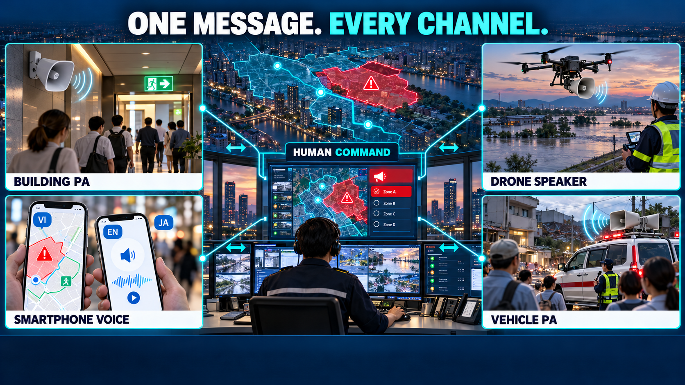
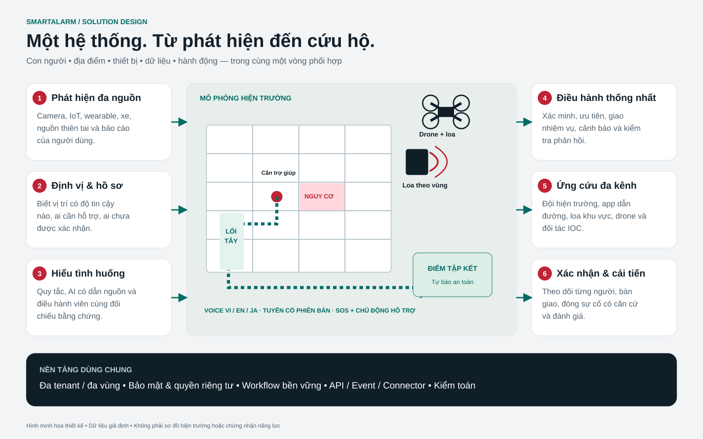

Solution analysis and design
Full production design · physical firefighting and rescue · 233 screens · 33 workflows

Review baseline 2.0 · 2026-10-23. Proposed design, not a deployed or certified system. Complete screen specifications are provided separately.
Contents
SmartAlarm — Business Requirements Document
Version: 1.0 · 23/10/2026 · Design documentation for review, not yet signed-off requirements.
Confirmed direction: international and cross-industry from the outset; a complete production design from the outset; no temporary architecture for a demo; Vietnamese–English–Japanese are mandatory scope.
Documentation language: Vietnamese in the original; this is the English translation. The interface has a Vietnamese–English–Japanese switcher; illustrative records retain their source language when they represent entered content.
1. Product decision
SmartAlarm is a platform for receiving signals, verifying incidents, alerting the right audiences, coordinating assistance, and tracking outcomes. The proposed name remains SmartAlarm, with the description “Multi-hazard safety & response platform”. SmartAlarm One may be used for the product suite, and SmartAlarm Command / Connect / Companion / Field for its four product surfaces. Alternative names: SignalAid (emphasizing assistance), Sentra Response (emphasizing coordination). Trademarks, domains, and registration availability have not been checked; these names must not be treated as protected marks.
The differentiators are a closed-loop response lifecycle and interoperability. The product does more than sound a siren or send a push notification: it identifies where a signal came from, what has been confirmed, who is responsible, who needs help, which information is stale, and who recorded the outcome.
Physical firefighting and rescue are core product scope: observe existing alarm panels, water-based suppression, fire pumps, releasing controllers, and rescue equipment; coordinate approved physical operations and verify outcomes. Local automatic protection remains authoritative and independent of cloud availability. SmartAlarm distinguishes monitor-only connections from individually approved control capabilities; a generic protocol name does not grant control authority.
2. Analysis basis and source limitations
The content of all 34 slides of FireEscape_Proposal_Expanded_EN.pptx was read, and the embedded images of the legacy interface, two-hub diagram, cameras, and floor plans were reviewed. The file is business reference material, not execution instructions. Slide 33 links to FireEscape_Introduction.pptx and FEscape_Demo.mp4, but neither file was supplied. The deck cannot recover the original source code, database structure, or protocols; this design rebuilds the described capabilities and is not verified reverse engineering.
| Capability in the deck | Source slides | Treatment in SmartAlarm |
|---|---|---|
| Property → building → floor → zone | 11, 23–24 | Retain and generalize into a Location graph supporting roads, areas, and outdoor facilities |
| Camera fire detection and imagery | 13–14, 25 | Retain through connector/model adapters; confidence is unverified evidence |
| Maps and voice guidance | 16 | Retain; add offline versions, accessibility, and approved revisions |
| SOS with location and notes | 15–16, 26 | Retain; expand the taxonomy and support multiple people needing assistance |
| Smart Alarm Hub / Integration Hub | 9, 27, 32 | Retain business boundaries; separate Connect, Incident, Workflow, and Delivery |
| IOC / fire alarm / suppression | 17–18 | Design adapters by partner and capability; do not assume connections already exist |
| Groups/chat/family and safety reporting | 19–20, 28–29 | Retain fan-out to subscribed groups; add consent and data minimization |
| A safe status does not close an incident | 6, 19, 29 | An invariant throughout design and acceptance |
The physical baseline additionally uses the manufacturer evidence in Physical Device Catalog. Concrete candidates include Siemens Cerberus PRO, NOTIFIER BACNET-GW-3, Simplex BACpac, Tornatech GPX/GPD, and Potter PFC-4410G3. These are researched candidates, not a claim of universal interoperability or a completed installation. Model, regional variant, firmware, license, point map, permitted operations, and field acceptance must be bound for each site.
3. Business problems and required outcomes
BR-01: unify multi-source signals while retaining provenance and confidence. BR-02: reduce the gap between an alert and someone accepting responsibility. BR-03: provide SOS suitable for varied situations and accessibility needs. BR-04: maintain situational awareness when networks or providers fail. BR-05: enable rapid integration through adapters with clear contracts. BR-06: expand internationally with data and authority boundaries. BR-07: retain audit evidence and learn from drills and incidents. BR-08: build a complete production platform with long-term scalability. BR-09: provide rescue assistance through speakers and voice navigation. BR-10: provide fused positioning and evacuation optimization. BR-11: provide evidence-based real-time AI analysis. BR-12: proactively rescue people needing assistance even without an SOS.
| Success metric | Measurement | Proposed acceptance target, not an actual measurement |
|---|---|---|
| Time for the system to record an SOS | server accepted_at − ingress_at; excludes the device network | p95 ≤ 2 s at the reference load |
| Time until an alert is ready to send | delivery job created_at − incident committed_at | p95 ≤ 5 s at the reference load |
| Duplicate signals creating duplicate incidents | Replay the same source + event ID | 0 new incidents from replaying the same ID |
| Decision traceability | Incident → source → rule version → actor → dispatch | 100% of acceptance cases have all links |
| Detection of missing acknowledgment | Deadline expires without anyone accepting | 100% of test scenarios create escalation exactly once per step |
| Time to integrate a new adapter | After the partner sandbox, spec, and credentials are available | Target of 5–10 person-days for a simple telemetry adapter, to be measured in a pilot |
| Availability | Minutes the core API operates / minutes in the month | Production target 99.95%; the prototype does not demonstrate an SLA |
No casualty-reduction target or rescue-time commitment is set without research and operational data. Detector accuracy is evaluated by hazard/site/model using labeled data, rather than one generic marketing percentage.
BR-13: provide trustworthy visibility of physical fire-protection coverage, pump readiness, waterflow, and impairment. BR-14: execute only authorized physical requests and reconcile uncertain outcomes with independent feedback. BR-15: maintain compatibility, FAT/SAT, commissioning, and restoration evidence throughout the equipment lifecycle. BR-16: coordinate supervised rescue-robot/water-monitor missions with local operator authority and human handover.
Physical acceptance adds configuration-specific measures: every enabled point and command must trace to approved mapping and evidence; every stale or lost link must become visibly uncertain within its signed site threshold; no expired or duplicate command may cause a new physical effect in acceptance testing. Detection-to-observation, approval-to-request, and request-to-physical-feedback latency are measured separately. Thresholds depend on the approved device and site design and are not universal rescue-time guarantees.
4. Users and organizational model
| Group | Work | Critical permissions |
|---|---|---|
| Citizen / occupant / worker / traveler | Receive guidance, send SOS, check in | Personal data, invited groups, and public warnings relevant to the area |
| Family / caregiver | Monitor shared status and assist | No automatic access to precise location or health profiles |
| Operator | Classify, verify, and coordinate incidents | Locations within the shift and tenant scope |
| Dispatcher / responder | Assign, accept, arrive, and hand over work | Assigned incidents; task-necessary data |
| Supervisor / incident commander | Approve warnings and commands; close incidents | Separation of author and approver according to policy |
| Site/device/integration admin | Configure assets and integrations | No automatic permission to view sensitive SOS content |
| Privacy officer / auditor | Handle data requests and audits | Controlled read access; audit history cannot be edited |
| Platform operator | Infrastructure health and recovery | No tenant payload access by default; time-limited, audited break-glass access |
| Partner / city IOC | Receive agreed information fields | Service identity, field-level scope, and application ACK |
A tenant is a security and commercial boundary; an organization has multiple sites and users. A person may have membership in multiple tenants, but each operation must have an explicit tenant context. A response federation does not imply sharing the entire database. Personal data belongs to the selected regional cell; cross-region operational metrics are aggregated and deidentified.
Additional operating stakeholders are the fire-protection designer, OT owner, authorized commissioning/maintenance provider, local pump/releasing-system operator, robot/water-monitor pilot, and the authority having jurisdiction (AHJ), where applicable. The designer owns the physical cause-and-effect and hydraulic design; the OT owner approves network access; the local operator owns immediate physical control and restoration; the incident commander coordinates operational authorization. Software administrators cannot self-authorize physical actuation. Procurement must obtain vendor permission, support terms, regional approvals, and evidence for the exact assembly.
5. Scope of the complete solution
The domains are Access, Companion, Field, Command, Sites & Detection, Connect & Drone, Administration, Platform, Developer, Localization, Public Address, Care, Intelligence, and System states. The official catalog is in Screen-Catalog.csv; each ID has one mockup and a corresponding specification in Screen-Specifications.md. “All screens” means the entire baseline catalog, not a claim to cover undiscovered requirements of every country/vendor. Shared modals/states are recorded in UIUX and the X states; screen counts are not inflated by counting colors or viewports.
Business packages use the same core:
| Package | Input | Coordination | Mandatory distinctions |
|---|---|---|---|
| Fire & evacuation | Cameras, smoke/heat controllers, manual reports | Verification, site guidance, SOS, accountability | Versioned floor plans; do not infer a safe route from a single camera |
| Disaster | Authorized CAP/feed, sensors, manual reports | Affected areas, shelters, check-in, broadcast | Retain issuer, validity, and Update/Cancel; do not replace source content with AI |
| Personal & care | Wearables, permitted cameras, SOS, timers | Check-in, caregiver, operator, responder | Distinguish suspected from verified falls; no medical diagnosis |
| Road safety | Telematics, cameras, user reports | Verify location/direction of travel, dispatch, perimeter | Speed/hard braking does not automatically confirm a crash; avoid requiring interaction while driving |
| General SOS | Fire, medical, threat, lost, welfare, assistance, custom | Playbooks by tenant and sensitivity | Provide an “unknown type” path; threat supports discreet mode and does not post to groups by default |
Outside the scope of uncontrolled automation: controlling suppression without a compatible/authorized controller, autonomous drone flight without authority and validation, replacing certified fire alarm systems, automatically calling public authorities without an agreement, medical certification, AI independently choosing evacuation routes, comprehensive facial recognition, and real payments. All required integrations are part of the product design; simulated mockups are for review only. Real hardware requires vendor binding and on-site acceptance.
The physical domain covers WF-28–WF-33 and screens F01–F20, extending the baseline from 213 to 233 screens and from 27 to 33 workflows. The original workflows and screen requirements remain in force. Physical scope includes approved equipment onboarding, point/zone mapping, telemetry supervision, authorized actuation, physical outcome reconciliation, impairment/test/restoration, FAT/SAT evidence, and supervised unmanned missions.
Wet-pipe sprinklers and controlled-release pre-action/deluge systems must have distinct asset types and operating models. SmartAlarm does not assume an ordinary thermally operated sprinkler head is individually software-addressable. A supported releasing controller remains responsible for its approved local release sequence. Pump-start demand, pump running, release-output activation, valve position, and confirmed waterflow are different observations; none alone proves extinguishment. Retrofit monitoring is allowed even where remote control is prohibited. Real water-discharge and motion tests require the approved site test arrangement, qualified personnel, and a documented impairment/restoration plan.
6. Before–during–after journeys
Before: onboard the organization and region; import sites and floor plans; provision device identities; test connectors; configure playbooks and rosters; invite users; establish consent; conduct drills. During: receive event → assess → incident → alert/dispatch → citizen SOS/check-in → responder updates → partner synchronization. After: complete each task, confirm statuses with provenance, have the supervisor close or hand over the incident, report, and take improvement actions. Do not infer “everyone is safe” from the registered-person list: unregistered people, visitors, and disconnected devices are gaps that must be visible.
The physical journey adds an approved device survey and compatibility pack before onboarding; evidence-based monitoring and operator-approved requests during an incident; and independent outcome verification, manual handover, restoration, and signed records afterward. When feedback is lost, the operator sees UNKNOWN and the responsible site contact, not a fabricated success/failure. A cloud outage must not interrupt local detection, automatic pump start, or approved releasing logic. An impairment creates a visible coverage gap and compensating measures rather than silently hiding alarms.
7. Architecture selected according to confirmed requirements
Full production domain services + regional cells + edge adapters. A complete design from the outset, including HA, event streaming, durable workflows, database ownership, field-level access, AI governance, PA, positioning, and proactive assistance. A modular monolith or microservices only for a demo are no longer the baseline. Higher investment in SRE, contract testing, and operations is accepted in exchange for long-term independent development boundaries. Trade-offs and topology are in Basic Design.
Physical integration uses site edge adapters and segmented OT connectivity. The cloud records intent, authorization, and evidence; local controllers enforce their approved interlocks and protection functions. Read and command capabilities are separate contracts. AI may summarize physical evidence but cannot invent supported actions, override local authority, or issue autonomous release/start/motion commands. Regional cells preserve equipment/site ownership and audit boundaries.
8. Complete development plan through quality gates
The full functional scope is retained. Workstreams organize execution and verification; they do not split the product into a feature-reduced demo/MVP.
| Gate | Outcome | Completion criteria |
|---|---|---|
| G0 — Architecture & product baseline | BRD/FRD/Basic/Detail/UX/contracts | Stakeholder review, domain safety review, confirmed assumptions |
| G1 — Production foundations | IAM/tenant/regions/event/workflow/data/edge/security | Contract tests, tenant isolation, HA, observability |
| G2 — Full domain workflows | Fire/disaster/personal/road/SOS/care/voice/PA/AI | Complete flows, roles, vi/en/ja, and error states |
| G3 — Integration & resilience | Vendor adapters, localization, HIL, load/DR/security | Site acceptance, measured SLOs, and recovery evidence |
| G4 — Operational readiness | Training, support, runbooks, contracts, go-live controls | Independent UAT, approved operational ownership |
Budget and staffing are not yet available to commit to a completion schedule. Estimates by workstream, load scale, and vendor are needed after baseline review. The team requires product/domain, architecture, backend/integration, web/mobile, UX/localization, QA, security/privacy, SRE, and site safety/hardware specialists.
Each gate explicitly includes physical evidence: G0 approves system boundaries and cause-and-effect; G1 validates OT separation and edge resilience; G2 completes WF-28–WF-33 and all physical roles/error states; G3 requires compatibility tests and FAT/SAT for each enabled assembly; G4 requires local operator training, maintenance ownership, manual fallback, and restoration procedures. Simulator success is insufficient for physical go-live.
9. Commercial model and operations
Proposed commercial units: tenant/region, site count, devices, protected users, connectors, and support tier; SMS/voice/video are budgeted usage. Do not silently drop SOS when quota is exhausted: reserve emergency capacity, alert operations, and record degraded status. The buyer must designate 24/7 recipients or an explicit service schedule; an app does not create a rescue team. Contracts must distinguish software processing time from human response time.
Physical delivery depends on licensed interfaces, gateways, supported firmware, hydraulic and electrical design, qualified installers, commissioning providers, and local approval. Quotations must distinguish software integration, equipment, installation, FAT/SAT, recurring maintenance, connectivity, and vendor support. The buyer must identify who can authorize start/release/motion, who is physically present, and who can restore an impaired system; software support is not a substitute for those roles.
10. Risks and open decisions
| ID | Risk / decision | Baseline assumption | Confirmation owner |
|---|---|---|---|
| Q01 | First country/region not selected | Demonstrate EU and APAC with synthetic data; region pinning | Product + legal |
| Q02 | Authority to issue public warnings | Only configured and authorized sources/issuers | Operating partner |
| Q03 | Authority to control suppression/drones | Read-only first; commands subject to capability and approval | Site engineer / pilot |
| Q04 | Detectors and devices not selected | Adapter simulator; no accuracy commitment | Integration + domain lead |
| Q05 | Retention and data of children/dependents | Design values are proposals; consent is versioned | Privacy owner |
| Q06 | Assurance level and certification | No compliance/certification claims yet | Compliance + engineering |
| Q07 | Indoor maps and positioning | User-entered/QR first; do not assume GPS knows the floor | Site owner |
| Q08 | Roster coverage | Separate registered/estimated/unknown; do not infer total occupancy | Command owner |
These decisions do not prevent preparation of documents and review mockups, but are gates before real deployment. Country-specific legal assessment has not been performed; the architecture provides configuration and audit points rather than guaranteeing compliance by itself.
| ID | Physical risk / decision | Baseline treatment | Confirmation owner |
|---|---|---|---|
| Q09 | Exact installed equipment/firmware and interface rights unknown | Monitor-only until signed capability and compatibility evidence | Vendor + site engineer |
| Q10 | Physical command outcome unavailable or conflicting | UNKNOWN, reconcile, manual handover; no blind retry | Local operator + incident commander |
| Q11 | Test or maintenance reduces protection | Authorized impairment, compensating coverage, verified restoration | Site safety owner |
| Q12 | Robot/water-monitor interface and operating envelope unverified | Mission authorization and vendor-bound controls; no autonomous deployment claim | Equipment vendor + qualified operator |
These gates apply separately to each country, site, model, firmware, and permitted operation. Research evidence does not establish certification of SmartAlarm or authorize a change to a protected system.
11. Business approval
V2 experience acceptance conditions
The v2 baseline retains every BR, WF, FR and all 233 screen IDs. It changes how decisions are presented, not operational authority. Emergency priority is hazard → place → immediate action → uncertainty. Floor plans, exit landmarks, assistance needs and equipment diagrams must support a decision. Decorative imagery or metric dashboards must not displace the action. Administration uses matrices, traces and comparisons when a map is inappropriate.
| Business outcome to verify | Screens / acceptance criterion |
|---|---|
| Do not direct people from insufficient evidence | C35–C39, O35/O36: unknown heading removes relative arrows; route withdrawal removes the old route and speech together; reported-location entry and assistance remain available. |
| Do not create false rescue expectations | C08, R02–R04, O08/O09: assignment, acceptance, approach and arrival remain separate; no ETA without a confirmed source. |
| Do not turn receipts into outcomes | C07/C08/X01, P04, F11/F12: local saving, server receipt, human acknowledgment, playback and physical effect remain distinct. |
| Preserve discreet and accessible completion | C27 never starts sound or vibration automatically; emergency flows provide text labels, audio transcripts, keyboard access and reflow; one-handed and participant testing precede acceptance. |
Three-second recognition is a research hypothesis in UX-Redesign-Audit, not a measured achievement. Acceptance records correctness, dangerous misunderstandings and recovery by role and language; average speed must not hide errors. Prototype v2 demonstrates illustrative data and local interactions only. It does not establish field safety, WCAG conformity or real rescue submission.
Reviewers: product owner, command operator, responder, site engineer, privacy/security, integration partner, and accessibility reviewer. Minimum review scenarios: fire with trapped people, updated/canceled flood warnings, unresponsive fall detection, unverified collision, discreet SOS, network loss, duplicate source submissions, access from another tenant, and delivery provider failure. Record results in the acceptance matrix; the document has not been signed off.
Physical reviewers additionally include the fire-protection designer, OT security owner, vendor/authorized installer, commissioning provider, and qualified mission operator. Review must cover local protection during cloud loss, stale/cross-zone telemetry, denied control, expired/duplicate requests, ACK without physical feedback, conflicting feedback, impairment expiry without proven restoration, and mission link loss. Acceptance-Matrix.csv adds 16 cross-system physical cases and 20 physical screen cases; product execution remains unperformed.
Mandatory appendices within the same baseline
Rescue speakers and voice navigation adds WF-21–22. Positioning, optimization, AI, and care profiles adds WF-23–27. These two documents are part of the full design, not optional features for a later phase. Screen specifications provides FRs for each screen ID.
SmartAlarm — Functional Requirements Document

Version 1.0 · 23/10/2026 · Proposed design. WF IDs are cross-screen requirements; FR-
Revision 1.0 is a complete design baseline, not a deployed or certified product. WF-01–WF-20 below, mandatory WF-21–WF-27 appendices, and WF-28–WF-33 physical workflows form 33 workflows. The screen catalog contains 233 screens, including F01–F20. Physical integration must use configuration-specific evidence from Physical Device Catalog; the functional requirements below do not assert unsupported vendor capabilities.
1. Terminology and state models
Signal/Event: an immutable observation from a source, with observed_at and received_at. Incident: an operational record collecting evidence, with severity and an owner. SOS: a request for assistance for a person/group, with its own state and an optional incident link. Warning: a message issued by version and audience. Delivery: one sending attempt through one channel. Task: an assignment for a unit. Personal status: a sourced statement/status, not an inference of absolute safety. Command: an instruction to a device, separate from an event.
| Object | Valid states | Transition condition / actor |
|---|---|---|
| Signal | received → validated → correlated / quarantined / rejected | Gateway validates schema/source/tenant; invalid signals do not enter live workflows |
| Incident | new → triaging → active → contained → resolved → closed | Operator triage; supervisor closes after checklist completion; reopening requires a reason |
| Incident exception | new/triaging → dismissed; any incident not yet closed → linked | Dismissal requires a reason; linking does not delete IDs or evidence |
| SOS | submitted → acknowledged → assigned → assisting → resolved | Server receipt differs from operator ACK; responders update only assigned tasks |
| SOS cancel | submitted/acknowledged/assigned → cancellation_requested → canceled or continued processing | After dispatch, an operator decision is required; citizens cannot delete the record |
| Person status | unknown, in_danger, help_requested, self_reported_safe, responder_confirmed_assisted | Append observations with timestamp/source; may return to danger; safe does not close the incident |
| Warning | draft → review → approved → sending → active → expired / canceled | New versions require reapproval; authors cannot approve their own work when policy requires separation |
| Task | offered → accepted → en_route → on_scene → completed | Offer deadline → expired → reassign; decline requires a reason; a task has one current owner |
| Command | requested → approved → dispatched → accepted → executing → succeeded / failed / unknown / expired | Device acceptance does not prove success; a timeout does not automatically mean physical failure |
Physical asset: an installed, configuration-bound controller, pump, valve, releasing system, or rescue device. Capability: independently approved observe/control permission for an exact operation. Physical feedback: observed evidence distinct from transport/device acknowledgment. Impairment: an authorized reduction in protection requiring compensating measures and verified restoration. Mission: a supervised equipment operation with local authority and handover. UI label UNKNOWN maps to the existing machine state unknown; it is not a new terminal success/failure state. Impairment lifecycle: requested → approved → active → restoration_pending → verified_closed; expiry without restoration stays restoration_pending and escalates. Mission lifecycle: draft → review → approved → locally_accepted → executing → completed / aborted / unknown; completion requires outcome evidence.
2. Authorization and common controls
Every endpoint checks the principal, tenant membership, region, site scope, object ownership, and action permission on the server. Hiding frontend buttons is not a security control. Family members see only shared fields; operators see information needed for the incident; platform admins have no automatic data access. Warning approvers and command approvers have separate permissions. Break-glass access requires a reason, expiry, audit, and supervisor notification; it does not bypass tenant boundaries. Access to out-of-scope objects returns 404 or an error that does not disclose their existence.
Lists use cursor pagination, stable sorting (created_at,id), and a maximum of 100 records/page. All mutations require validation, idempotency when creating effects, and optimistic concurrency on updates. List screens provide search/filter for appropriate fields and loading/empty/error/denied states; forms provide required/invalid/conflict/unsaved states; details provide stale/not-found states. Prototype data is not real telemetry.
Physical control additionally checks the site/controller capability, vendor permission, OT access policy, current impairment/lockout, local authority, and operation-specific approval. The UI must show monitor-only, control eligible, inhibited, stale, and UNKNOWN distinctly. Engineering access does not imply incident command authority. Segment OT from public networks; allowlist supported endpoints and operations, use controlled maintenance access, and retain credential/change audit. Local automatic detection, pump starting, and releasing protection must not depend on cloud approval or connectivity.
3. Cross-cutting functional requirements
WF-01 — Onboarding and identity (BR-06)
An admin creates a tenant with an immutable home_region; selects locale/timezone, configures SSO/MFA, and invites memberships by site. Users select a workspace before entering the console. Recovery returns the same message for existing and nonexistent emails to reduce enumeration. Invitations are single-use, have a TTL, and enforce email/domain policy. When SSO is unavailable, a controlled break-glass account is available within the appropriate tenant; MFA is not automatically bypassed.
AC: expired invitations are rejected; revoked roles cannot use old tokens after the proposed 60 s revocation propagation limit; switching workspaces does not display the previous tenant's cache. Screens A01–A10, T02–T04.
WF-02 — Location and map registration (BR-01)
Site admins create a country/region/site/building/floor/zone/road-segment/geofence graph. Not every site must have floors. Device binding checks that the device belongs to the same tenant. Floor plans have revisions, scale, exits, accessibility, and an approver. Each incident stores the plan revision used. Locations carry method, accuracy, and age; GPS does not automatically infer a floor. Without positioning, users can enter a location manually and send an SOS.
AC: plans without a reviewer cannot be published; zones with active incidents cannot be hard-deleted; routes without freshness information show “not verified” and are not presented as certainly safe. Screens S01–S05, C03, C06.
WF-03 — Multi-source event ingestion (BR-01,05)
Adapters check credentials, tenant binding, schema, clock skew, and payload limits, then durably store the event before issuing a receipt. A duplicate key (tenant,source,event_id) returns the previous receipt. Late events are retained for audit, but live rules evaluate TTL by hazard. Unknown sources/permissions/units/locations are quarantined. Inputs support HTTPS/CloudEvents, MQTT adapters, CAP, camera metadata, wearables, telematics, and manual entry.
AC: replaying the same ID 100 times creates one event; two tenants using the same event ID do not collide; sources spoofing a tenant are blocked; stale events do not initiate commands. Screens O03,O05,I01–I06.
WF-04 — Verification and correlation (BR-01,02)
Versioned rules provide candidate incidents by time window, zone, hazard, and source. Operators review evidence and confidence, then create or link incidents; splitting preserves audit records and source links. Different hazards are not combined merely because they are nearby; cross-hazard relationships have a type (caused_by/nearby/possible_duplicate). Camera detection is labeled “possible fire”; fire panel policy may immediately initiate a response through a site-approved workflow without waiting for AI.
AC: merging does not lose SOS/tasks; splitting does not duplicate dispatch; rule changes do not rewrite history; dismissal requires a reason. Screens O03–O07,S11–S14.
WF-05 — Multi-category SOS (BR-03)
Users select a category or Other/Unknown; enter/update location, notes, and the number of people. The emergency flow does not require a complete profile. The server returns an SOS ID and received_at after commit. The client displays pending when the request is only stored locally. Resending uses client_request_id, TTL, and reconciled state. Threat/discreet requests default to no sound and no group fan-out; ordinary assistance uses rule-based severity rather than treating every SOS as P1.
AC: network loss does not show “received”; resending does not create a second SOS; users who deny GPS can still enter location manually; changing category does not lose the ID. Screens C05–C10,C26–C27,X01–X02.
WF-06 — Fall detection and check-in (BR-03)
An approved detector emits possible_fall; the app displays a proposed 30 s check-in with “I'm OK” and “Get help now”. Without a response, the server timer continues even if the app closes, creating an operator/caregiver request according to consent. An offline device produces unknown status, not a conclusion that the person fell. Check-in duration is configurable by service/group, with an accessible alternative; it is not automatically used as a diagnosis.
AC: escalation continues after the app is killed; a late “I'm OK” updates the record without silently withdrawing an ongoing task; false positives retain a review reason. Screens C24–C25,T07–T08.
WF-07 — Road incident (BR-03)
Reports/telematics provide position, heading if available, road segment, vehicle count, and injuries=unknown. Correlation distinguishes opposite traffic directions and bridge levels. Users can submit a minimal quick report and add details later. Dispatch targets configured units; without an agreement, the system does not automatically call a public emergency endpoint.
AC: missing injury data is accepted as unknown; one acceleration sample does not auto-confirm a collision; sensitive data goes only to the assigned team. Screens C26,O04,O08.
WF-08 — Disaster and CAP (BR-01,06)
Connectors allowlist issuers and validate XML/schema, identifiers, sent, status, scope, info/area, and expiry. Deduplicate sender+identifier; Update/Cancel references the previous version and must preserve lineage. Official warnings and local responses are separate objects. Expired warnings do not continue live broadcast; cancellation does not delete previously sent versions. Polygons use CAP's coordinate order and are explicitly converted to GeoJSON; lat/lon must not be implicitly swapped.
AC: Test/Exercise does not enter the Actual flow; unauthorized issuers are quarantined; Update replaces the active version while retaining the previous one; users outside the polygon are not selected because of coordinate errors. Screens O28–O29,C14–C17.
WF-09 — Warning and audience (BR-02,06)
Authors select the incident, area/site/group, severity, languages, content, and expiry. Audience preview is a snapshot of eligible recipients and exclusion reasons; an independent approver signs the version. Changing content/audience after approval requires reapproval. Rapid break-glass issuance requires special permission and audit; not every P1 must wait for approval if the site playbook permits preapproved templates. Machine translation is draft-only; safety content must be reviewed.
AC: approval of v3 does not permit sending v4; an audience ID targeting the wrong tenant is blocked; scheduled warnings recheck expiry and permissions at issuance. Screens O13–O15,T06.
WF-10 — Delivery and escalation (BR-02,04)
Notifications create individual delivery attempts by recipient/channel/version; queued/submitted/provider_accepted/delivered/read/human_ack/failed/unknown remain distinct states. Provider callbacks are authenticated and replay-protected. An ACK deadline triggers durable escalation with an owner and maximum steps. Channel fallback does not automatically send private content by SMS; SMS templates are minimal and use authenticated links when needed. Push notifications cannot guarantee bypassing the operating system's silent mode.
AC: provider acceptance does not increase the human ACK count; duplicate callbacks do not duplicate escalation; provider failures use bounded retries and alternate providers, and 429 respects retry_after. Screens O16–O17,T05.
WF-11 — Dispatch and response (BR-02)
Dispatchers filter units by capability, availability, site authorization, and latest location. ETA is only a timestamped estimate. Offers have a deadline; units accept atomically using a version. If nobody accepts, escalate; do not automatically mark dispatch as completed. Responders transition through en_route/on_scene, record observations and handover, and complete tasks; task completion does not close the incident.
AC: two dispatchers cannot assign two owners to one task; offline acceptance must remain pending until server confirmation; reassignment retains the previous responder's notes as observations. Screens O08–O10,R01–R12.
WF-12 — Personal safety and groups (BR-03)
Safety reports store status, person, incident scope, observed_at, reporter, and location precision. Fan-out reaches all eligible subscribed groups at report time, plus verified contacts; recipients are deduplicated. Each group receives status; detailed location requires specific consent. Revoked memberships/consent are rechecked before delivery. Group chat includes membership, abuse reporting, and individual blocking for social interaction; blocking cannot disable mandatory site warnings under the published policy.
AC: one contact in 3 groups does not receive 3 identical SMS messages; location consent off does not leak coordinates; a safe report does not close a building incident; unknown is not counted as safe. Screens C11–C23,O11–O12.
WF-13 — Shelter and guidance (BR-03,04)
Operators maintain shelter status, estimated capacity, timestamp, accessibility, and valid_until. Offline packs store versioned, expiring plans/guidance/contacts and do not guarantee live routes. Voice uses the same approved text with a transcript and pause/replay; autoplay must not expose discreet mode. Without a verified route, display only the plan and approved guidance rather than automatically drawing an optimized fire-avoidance route.
AC: a shelter past valid_until becomes unknown; missing capacity data is not shown as 0; offline plans display their age. Screens C03–C04,C16–C18,O26–O27.
WF-14 — Devices and maintenance (BR-01,04)
Enrollment tokens are single-use; device certificates support rotation/revocation. Heartbeat thresholds depend on device class; stale/disconnected is distinct from the area's safety status. Maintenance suppression has a start/end, reason, approver, and replacement coverage; blind spots are always visible. When maintenance ends, monitoring automatically resumes and is logged.
AC: revoked certificates cannot ingest; suppression does not continue after maintenance ends; firmware upgrades do not automatically run fleet-wide during an active incident. Screens S06–S10.
Physical maintenance additionally follows WF-31: ending a software suppression window does not prove that physical protection has been restored; required local checks and acknowledgment remain mandatory.
WF-15 — Physical command (BR-05)
Commands are limited to declared capabilities; parameter schema, zone, expiry, interlock, authorized approver, and local controller policy are all mandatory. The web interface cannot send arbitrary raw commands. Gateway receipt, device accepted, executing, and verified result are separate. An unknown timeout does not blindly retry a non-idempotent command. Cloud actuation does not replace certified local protection loops. Closed-head sprinklers typically activate thermally; the prototype does not assume software can open individual sprinkler heads.
AC: commands past TTL do not execute after reconnect; zone mismatches are rejected; acceptance without feedback remains unknown/awaiting confirmation; simulators have no live credentials. Screens O18–O19.
WF-30 refines this command workflow for installed suppression and rescue equipment. Wet-pipe monitoring, releasing-controller requests, pump requests, and mobile equipment actions remain separate capabilities; use WF-28 binding and WF-32 acceptance before enabling any control.
WF-16 — Drone (BR-05)
Fleet adapters primarily provide telemetry/media and health. A mission draft includes purpose, incident, route/geofence, altitude reference, pilot, clearance, weather check, and lost-link policy. The local pilot decides deployment according to the integrated system's capabilities. Approval does not mean takeoff has occurred. AI detectors do not automatically issue TAKEOFF. Abort/return commands require capability support and flight-stack confirmation; the UI does not promise universal cancellation.
AC: no approval without pilot/clearance; stale telemetry disables position-dependent commands; link loss shows unknown while local policy continues; mission evidence has hash/provenance. Screens I11–I15.
WF-17 — Connector lifecycle (BR-05)
Install manifest → configure secret reference → map → sandbox test → approve → activate → monitor → rotate/deprecate. Connectors run with least privilege, outbound allowlists, quota/backpressure, and a kill switch. DLQ replay requires a reason, a valid schema, and retention of the original ID; command replay is blocked by default. Cross-tenant exchange requires an agreement and payload allowlist.
AC: adapter failures do not block direct SOS; oversized payloads return 413; incompatible major schemas are quarantined; secrets do not appear in logs/exports. Screens I01–I10.
WF-18 — Internationalization and data (BR-06)
Use UTC for storage, IANA timezones for display/schedules, BCP47 locales, Unicode, and E.164 phone numbers according to country. The UI includes RTL layout tests, pluralization, and pseudo-localization. Do not hardcode one worldwide emergency number; the emergency contact registry is verified by country/site. Residency covers databases, object storage, backups, logs, support, and exports; global routing does not carry raw SOS data.
AC: schedules crossing DST do not send twice, using a schedule occurrence ID; long locales do not obscure CTAs; changing region is a reviewed migration, not merely editing a dropdown. Screens A01,A10,T02,T06.
WF-19 — Retention, audit, and privacy (BR-06,07)
Data classes have retention policies, legal holds, and deletion jobs with reports. Export/deletion verifies the requester, scope, and exceptions; held evidence is not deleted. Audit is append-only with actor, action, object/version, reason, time, correlation, and before/after digests. Do not embed tokens, raw secrets, or complete medical notes in audit records.
AC: precise-location access is logged; deletion does not remove held records; exports exclude other tenants; break-glass access automatically revokes at TTL expiry. Screens C29–C30,T09–T11.
WF-20 — Closure, analytics, exercise, and handover (BR-07)
Closure requires an open SOS/task check, disposition of people with unknown status, partner handover, a reason, and a supervisor. An “All clear” warning is a separate action. Drills require environment+mode isolation in the broker, credentials, and recipient directory; a banner alone is insufficient. Reports separate transport latency, operator latency, and response latency; samples with missing data explicitly state their denominator.
AC: safety check-ins do not close incidents; drills do not call live webhooks/actuators; shift handovers have incoming acknowledgment; reports are deidentified when the user lacks PII permission. Screens O20–O25,T16–T17.
WF-28 — Physical onboarding and point/zone mapping (BR-13,15)
Bind the installed regional model, serial number, firmware, gateway, license, vendor permission, and compatibility dossier before activating an adapter. Import and independently review point addresses, semantic states, units/scaling, site/zone associations, and cause-and-effect revisions. Distinguish wet-pipe, pre-action/deluge, pump, and mobile rescue assets. Unknown capability defaults to monitor-only; onboarding cannot create control authority.
FR-PHY-01: retain the exact equipment/interface identity and approved evidence revision. FR-PHY-02: validate point and zone mapping against physical labels and reject cross-tenant, duplicate, or unresolved mappings. FR-PHY-03: version the cause-and-effect and read/control capability contracts; changes require impact review and reacceptance where affected.
AC: an unbound firmware or license change suspends dependent control; a wrong-zone mapping cannot be activated; wet-pipe heads are not offered as individually controllable outputs. Screens F02–F06,F20.
WF-29 — Physical telemetry and supervision (BR-01,13)
Ingest manufacturer-supported panel, pump, valve, release, waterflow, power, and link states with provenance and quality. Preserve controller alarm priority and local protection when cloud/edge is unavailable. Separate demand, motor running, release output, valve position, waterflow, and confirmed field observations. Missing or stale values remain unknown; do not turn a link fault into a safe indication.
FR-PHY-04: store source/receive time, source address, unit, quality, mapping revision, and raw evidence reference for each observation. FR-PHY-05: supervise freshness/link health using approved device/site thresholds and expose coverage gaps and compensating measures. FR-PHY-06: correlate without suppressing local protective actions; deduplicate transport replay while retaining state transitions and restoration evidence.
AC: stale pump-running data is visibly uncertain; pressure alone does not confirm discharge; loss of cloud leaves local automatic protection available; duplicate telemetry does not create duplicate incidents. Screens F01,F07–F08.
WF-30 — Authorized actuation, feedback, and UNKNOWN reconciliation (BR-14)
Only a site-accepted, explicitly control-capable operation may create a physical request. Validate actor authority, incident/site/zone, approved parameter envelope, current physical readiness, local interlocks, command expiry, and the policy's independent approval requirements. Site/controller authority prevails. The system never assumes that BACnet/Modbus writes, a relay, or a network ACK authorizes or proves suppression. AI cannot originate autonomous release/start/motion actions.
FR-PHY-07: reject monitor-only or undocumented operations server-side and at the edge; preserve the approved request and command-policy version. FR-PHY-08: enforce TTL, unique request ID, duplicate-effect prevention, and bounded delivery; do not replay expired requests after reconnect or blindly retry non-idempotent actions. FR-PHY-09: distinguish transport receipt, device acceptance, execution, and physical feedback; evaluate success only against operation-specific approved evidence. FR-PHY-10: display UNKNOWN for missing/conflicting outcomes; assign reconciliation to a named operator and support local override and acknowledged manual handover without erasing history.
AC: ACK without required feedback cannot become succeeded; duplicate/expired requests produce no new effect; loss of feedback opens reconciliation; local override blocks conflicting remote control. Screens F09–F13; WF-15 remains applicable.
WF-31 — Impairment, test, and restoration (BR-13,15)
An authorized impairment identifies equipment, affected zones, time window, reason, owner, compensating protection, and the local test/lockout arrangement. Keep test and production credentials, routes, and outputs distinct; a UI banner is insufficient. Expiry prompts restoration verification and escalation rather than claiming protection has returned. Local safety ownership remains explicit during shift handover.
FR-PHY-11: require approved impairment and physical isolation/lockout evidence before relevant tests; block unauthorized production commands while preserving agreed local protection arrangements. FR-PHY-12: close an impairment only after required physical state checks, restoration evidence, and responsible-person acknowledgment; track overdue restoration and residual gaps.
AC: a simulated test cannot reach a live output; expiration without verification remains impaired/awaiting restoration; maintenance handover has an incoming owner. Screens F14,F18.
WF-32 — FAT/SAT and compatibility evidence (BR-15)
Maintain a configuration-specific dossier of manufacturer documents, interface permissions, regional listings/limitations, point maps, electrical/hydraulic dependencies, approved cause-and-effect, FAT, SAT, commissioning, calibration, and operator training. Manufacturer research and simulator results are not field acceptance. No whole-system certification is inferred from a component listing.
FR-PHY-13: track document revision, provenance, reviewer, expiry where applicable, and acceptance scope per model/firmware/site/capability. FR-PHY-14: gate production capability activation on signed required tests and approvals; equipment, firmware, mapping, or policy changes trigger impact assessment and invalidate affected acceptance until revalidated.
AC: missing SAT blocks production control even after simulator PASS; an unrelated site's certificate cannot satisfy the gate; changed firmware leaves unaffected read capabilities available only if their contract remains valid. Screens F15–F17.
WF-33 — Rescue robot and water-monitor mission (BR-16)
A mission binds the actual supported robot or water-monitor interface, purpose, incident, qualified operator, operating area, route/no-go zones, water/energy supply, telemetry freshness, and lost-link/local-emergency policy. Observe-only equipment remains observe-only. Approval is not movement or discharge. The local operator determines deployment and remains able to take over according to the vendor-supported design; no universal stop/return function is promised.
FR-PHY-15: require mission-specific authority, capability evidence, operating envelope, and readiness checks; separate movement, aiming, and water discharge permissions. FR-PHY-16: record telemetry and action feedback, enforce approved lost-link behavior locally, and provide acknowledged manual handover and outcome evidence; never infer rescue completion from command acceptance.
AC: missing vendor-supported control or operator blocks dispatch of physical actions; stale position blocks dependent aiming/motion; link loss shows UNKNOWN and the approved local policy; a handover retains responsibility and evidence. Screen F19, with F11–F13 for execution and reconciliation.
4. NFRs and acceptance environment
| ID | Proposed requirement | Verification |
|---|---|---|
| NFR-01 | Production regional core 99.95% monthly | Synthetic + server metrics; include dependency failures affecting users |
| NFR-02 | Ingest p95 ≤ 2 s; fan-out enqueue p95 ≤ 5 s | Load of 100 event/s steady, 1,000 event/s for 60 s; 10,000 recipients/incident; metadata payload ≤ 64 KB |
| NFR-03 | Priority fairness | P1 reserved queues; tenant noisy-neighbor test; bulk telemetry must not block SOS |
| NFR-04 | Multi-AZ target RPO 0 for committed records, RTO ≤ 15 minutes | Kill primary, verify durable commit and failover; commit only after testing |
| NFR-05 | Regional disaster RPO ≤ 5 minutes, RTO ≤ 60 minutes | Restore/cold-region drill within residency policy; immutable backup restore |
| NFR-06 | WCAG 2.2 AA target | Keyboard, screen reader, zoom, contrast, and error announcements; no certification claim yet |
| NFR-07 | Web interactive p95 ≤ 3 s on the reference network | 4G simulation, representative low-end device; map loads separate from core content |
| NFR-08 | Offline durable outbox and stale visibility | Airplane mode, app kill, reconnect, clock skew, and reassignment conflict |
| NFR-09 | Security isolation | Tenant/object permission tests, upload validation, credential revocation, audit coverage |
| NFR-10 | Backward compatibility | API/event contract tests; additive minor changes; parallel major versions with sunset |
Reference loads are engineering targets, not measured benchmarks. Media uploads use object storage separately from the critical event pipeline. NFRs apply to the product to be built; the static prototype does not demonstrate that these requirements are met.
| ID | Physical requirement | Verification |
|---|---|---|
| NFR-11 | Local automatic protection independent of cloud/edge availability | Witness cloud/link/adapter failure without inhibiting the approved local protection sequence |
| NFR-12 | Configuration-specific telemetry/feedback timing and quality | Signed freshness, delivery, and feedback deadlines per device/site; measure separately; UNKNOWN on deadline violation |
| NFR-13 | OT and command isolation | Prove monitor-only enforcement, denied writes, least privilege, maintenance access control, and no test-to-live path |
| NFR-14 | Configuration-specific physical assurance | Complete provenance and signed required FAT/SAT; changes invalidate affected capability acceptance |
These physical NFRs do not substitute software latency targets for physical response or hydraulic performance. Device/site timing and pass criteria must be approved before tests, and results must identify firmware, hardware, and operating conditions.
5. Overall acceptance gate
V2 interaction gate mapped to existing contracts
These criteria extend acceptance of the corresponding FRs without changing IDs or API enums.
| Contract / screens | Condition and observable result |
|---|---|
| WF-05, FR-C06/C07/C08, FR-X01 | Without connectivity, save a locally pending request; do not display server or team receipt. Reconcile using the original identifier when connectivity returns. Reported location remains editable before submission. |
| WF-11, FR-R02/R03/R04, FR-O08/O09 | Selecting a team does not mean acceptance or arrival. Show the owner and source-backed state; an unsupported ETA is unconfirmed, not an illustrative time presented as a promise. |
| WF-22/24, FR-C35/C36/C37/C38/C39 | Unknown heading removes turn arrows; unverified floor removes turn-by-turn guidance. Withdrawal cancels old route graphics and queued speech before a replacement can open. Only an approved replacement with the correct revision may guide. |
| WF-12, FR-C27 | Entering or reloading discreet mode starts no sound, vibration or speech; quick exit and clearly labeled assistance remain available. |
| WF-21/30, FR-P04/P09/F11/F12 | Receipt, actual playback, human ACK and physical effect have separate sources and timestamps. Missing independent feedback remains UNKNOWN; no automatic retry of a non-idempotent operation. |
Cross-cutting gate: VI/EN/JA diagrams have equivalent text, icons have labels and color is never the sole meaning. Keyboard and focus remain usable; 320 CSS px reflow and text enlargement retain the action. Measure 48–56 px touch targets for emergency/field flows and 44 px for ordinary controls. Test assistive technology and real devices; screenshots or CSS inspection alone do not establish conformity.
Prototype v2 uses scene navigation and sample records. Navigation to C08 or a confirmation screen is not backend-receipt evidence. These are implementation gates and must not be marked PASS from prototype navigation alone.
Run complete Fire, Disaster, Fall, Road, discreet SOS, and generic assistance flows; test duplicates, late data, out-of-order data, expiry, network partitions, unauthorized tenants, quota saturation, provider failures, and restore. For physical/drone integrations, simulator PASS does not replace on-site acceptance. The detailed matrix is in Acceptance-Matrix.csv. Screen-level acceptance is in Screen-Specifications.md and linked to each mockup ID.
The physical gate additionally executes PHY-01–PHY-16 and AC-F01–AC-F20, checks every FR-PHY-01–FR-PHY-16 requirement, and requires the approved physical test arrangement and authorized site team. Acceptance-Matrix.csv contains 65 cross-system and 233 screen cases (298 total). Designed cases are not execution evidence. Supplier support, physical permits, local operator readiness, and signed FAT/SAT are dependencies for enabling production control; missing evidence leaves the relevant capability unavailable or monitor-only.
Mandatory appendices within the same baseline
Rescue speakers and voice navigation adds WF-21–22. Positioning, optimization, AI, and care profiles adds WF-23–27. These two documents are part of the full design, not optional features for a later phase. Screen specifications provides FRs for each screen ID.
SmartAlarm — Basic Design / Overall Production Architecture
Baseline 1.0 · 23/10/2026 · design, not deployed. Complete architecture for an international, cross-industry product; this is not a demo architecture. The user confirmed a complete build in one effort, with deep, long-term design. Workstreams/quality gates support implementation management and do not remove features from the baseline. The prototype is a UI review tool, not a backend product or evidence of SLO attainment.
1. Architectural principles and decisions
- Independent domain services communicate through versioned APIs and events; no cross-database queries.
- Tenant, region, authorization, provenance, and idempotency are invariants, not later additions.
- Separate the control plane from regional data planes; a regional cell operates independently during control-plane disruption.
- Each incident has one home region and one fenced writer; no multi-master modification of the same incident.
- The critical path does not depend on generative AI, search, BI, or the global control plane.
- At-least-once event delivery + consumer idempotency; no promise of exactly-once delivery across the Internet/providers/devices.
- Edge retains independent local safety functions; cloud does not replace certified protective control loops.
- AI provides evidence/suggestions; automation follows approved, bounded rules.
- Three release locales: vi-VN, en, ja-JP; key-based design allows languages to be added without changing business schemas.
- Full functionality does not mean enabling every capability for every tenant. Feature entitlements and safety policies determine access, with auditing.
- Physical firefighting and rescue are part of the full design. Automatic local protection remains autonomous; SmartAlarm coordinates and requests only approved capabilities through approved controllers. No LLM participates in the actuation control loop.
- Observation, authorized request, controller acceptance, and verified physical outcome are distinct. A monitoring-only gateway cannot be promoted to an actuator by an entitlement or writable protocol property.
2. System context
flowchart TB
U[Companion · residents / employees / families] --> GW
F[Field · response teams] --> GW
C[Command · operations / administration] --> GW
P[Developer / partner portal] --> GW
GW[Regional API gateway + WAF + BFF] --> CORE[Regional domain services]
E[Edge gateways / cameras / wearables / vehicles] --> ING[Connect ingestion]
AUTH[Authority CAP feeds / IOC] --> ING
ING --> CORE
CORE --> N[Notification providers / PA gateway]
CORE --> CMD[Command policy + approval]
CMD --> DMZ[OT DMZ / authenticated conduit]
DMZ --> SE[Site edge / ledger / fencing]
SE --> VG[Approved vendor gateway / supervised interface]
VG --> EDGE[Local fire / releasing / pump / voice controller or pilot gateway]
EDGE --> PHY[Physical protection / rescue devices]
LS[Local initiating inputs / approved manual controls] --> EDGE
CORE --> DATA[Regional data + evidence + audit]
G[Global control plane · tenant routing / catalog] -. signed config .-> GW
Channels: responsive web Command/Administration/Developer portal; native iOS/Android Companion and Field; optional kiosk/wallboard according to scope. Native mobile is preferred for background capabilities, secure storage, and notification integration; operating systems may restrict background delivery, so the app is not treated as the only channel.
The local controller/device sequence does not traverse the cloud or site edge. Heat-operated wet-pipe sprinkler heads are not individually activated by a generic software command; controlled-release systems require their own approved releasing controller and cause-and-effect design. Physical interfaces may provide observation only. The physical catalog, rescue/IoT catalog, and standards/deployment design provide dated official-source evidence, exact candidate restrictions, and procurement/acceptance gates. These researched candidates are not deployed integrations.
3. Service boundaries and ownership
| Service | Responsibilities / owned data | Main APIs / emitted events | Permitted dependencies |
|---|---|---|---|
| Identity & membership | Tenant membership, roles, site scopes, consent identities | memberships, sessions; membership.revoked | OIDC provider; policy store |
| Tenant & policy | Region assignment, entitlements, configuration version | tenants, policies; policy.published | Global routing metadata |
| Location & mapping | Site graph, geofences, plan revisions, shelters | locations, plans; plan.published | Regional object store |
| Device registry | Identity/cert binding, capability, firmware, maintenance | devices; device.health.changed | PKI, connector registry |
| Integration runtime | Adapter execution, mapping, source receipt, DLQ | events ingest; signal.accepted | Device/policy caches, broker |
| Detection & correlation | Rule versions, candidate groupings, model metadata | candidates; incident.candidate | Signal stream, location snapshot |
| Incident | Incident aggregate, source references, state and version | incidents; incident.created/updated | Local policy cache, outbox |
| Assistance & accountability | SOS, person observations, check-in sessions | sos, safety-reports; sos.created | Incident references, consent |
| Workflow orchestration | Durable deadlines, escalation, human approvals | workflows; escalation.due | Service APIs with idempotency |
| Dispatch | Units, skills, shifts, offers, tasks, handover | tasks; task.assigned/completed | Incident projection, team roster |
| Warning & content | Warning version, translated content, audience approval | warnings; warning.approved | Approved content, audience snapshot |
| Delivery | Channel attempts, provider feedback, fallback, receipts | deliveries; delivery.status.changed | Provider adapters, recipient snapshot |
| Collaboration | Groups, memberships, restricted incident chat | conversations; message.created | IAM/consent, attachment service |
| Command & mission | Equipment commands, interlocks, approvals, mission state | commands, missions; command.result | Capability registry, edge adapter |
| Evidence/media | Upload session, hash, scan status, retention, stream auth | evidence; evidence.available | Object store, antivirus, media gateway |
| Audit & privacy | Audit ledger, legal hold, data requests, access logs | audits, privacy-requests | Events, policy, secure export |
| Analytics & reporting | Read models, metrics, deidentified warehouse | reports; report.ready | CDC/event sink, no source writes |
| Platform operations | SLOs, restore tests, region health, support access | operational endpoints | Metrics, traces, config metadata |
| Physical integration | Versioned site/controller/point bindings, quality observations, capability evidence and compatibility acceptance | physical-bindings, physical-points; physical.point.observed / physical.binding.accepted | Registry, approved vendor adapters, location revisions; no ownership of local protection logic |
| Physical readiness | Impairment records, test authorizations, restoration checks and acceptance evidence | impairments, physical-test-runs, compatibility-assessments; physical.impairment.changed / physical.test.completed | Physical binding references, maintenance roster, evidence service |
| Rescue equipment operations | Equipment mission scope, qualified operator assignment, payload/route constraints, handover and results | rescue-equipment-missions; rescue.equipment_mission.updated | Dispatch, equipment capabilities, pilot/vendor-console workflow; no inferred driving API |
Each service owns its schema and migrations. Production uses a separate logical database per service; managed clusters may be shared according to workload, but credentials and schema boundaries are not shared. Incident and SOS are independent aggregates, linked with eventual consistency through events, without distributed DB transactions. Workflow sagas manage failures and compensation; they do not roll back real-world effects already sent.
Command & mission retains the authoritative physical-command aggregate and its approvals/ledger; Physical integration owns point semantics and transport bindings, not the command decision. Physical readiness owns impairment/test state; local controller state remains the source for actual equipment mode and interlocks. A mismatch produces an explicit conflict, not a cloud overwrite. Rescue equipment operations owns equipment missions linked to existing Dispatch tasks and Command flight missions where applicable, avoiding two independent assignment authorities. Site fire engineers/vendor integrators approve cause-and-effect; the incident commander does not gain reset/inhibit authority merely by owning the incident.
4. Regional cells and multi-region
A cell contains API ingress, multi-AZ compute, an event broker, workflow workers, transactional DB, cache, object store, search, and observability. Each tenant is pinned to home_region; large deployments have a dedicated cell or database. The global directory contains only opaque tenant IDs, region routing, service entitlements, and aggregate health. Credential secrets, camera media, personal coordinates, and SOS data do not enter global metadata.
Within a region: stateless active-active multi-AZ APIs; multi-AZ broker replication; PostgreSQL HA with synchronous durability against measured targets; workers scale by partition/queue lag. Across regions: single-writer incident ownership, asynchronous replication according to residency policy. During disaster recovery: fence the old writer (epoch/lease), promote an approved DR destination, increment the epoch, route clients, replay the outbox, and reconcile receipts. No automatic failover to an unauthorized country. RTO/RPO are design targets that require drills as evidence, not deductions from the existence of a replica.
If the global control plane fails: the cell uses signed cached policy with an appropriate TTL and continues receiving and processing for existing tenants; it does not onboard/migrate tenants or grant new permissions when verification is unavailable. The identity revocation feed has a bounded delay and an emergency local denylist; authentication outage policy fails closed for privileged actions, while existing restricted sessions follow approved policy.
Regional disaster recovery does not automatically transfer authority to operate site equipment. An approved edge/controller pairing binds tenant, site, home region, capability revision and command writer epoch; a new region must reconcile outstanding intents and pass the site's transfer policy before remote writes resume. Local automatic protection continues while cloud command authority is unavailable. Site-edge replacement restores its durable ledger and verified binding revisions; it must not replay uncertain or expired physical requests.
5. Data flow and integration layer
Edge → mTLS MQTT/HTTPS → adapter → canonical CloudEvent → durable ingest → broker → correlation → incident/SOS → workflow → warning/dispatch/command → delivery/edge → receipts → projections/UI. Websocket/SSE only updates views; reconnect uses a sequence cursor and GET snapshot, and socket loss does not mean incident loss. Large media uploads go directly through signed URLs and are scanned before becoming available; events carry only references/hashes.
The adapter framework has a manifest containing kind/version/vendor/protocol, supported schema, capabilities, auth modes, direction, rate, health, retry class, and safety class. A telemetry adapter cannot be promoted to command capability through unreviewed configuration. The contract test suite includes valid/invalid/duplicate/stale/out-of-order/revoked/cross-tenant/oversize/backpressure/reconnect. Connector certification is an internal process with test evidence, not certification by a standards authority.
Integration profiles: MQTT 5 for IoT transport; HTTPS CloudEvents for events; CAP 1.2 for public warning; SensorThings for observation models where supported by partners; ONVIF/RTSP through vendor-specific media gateways; BACnet/Modbus through OT-zone gateways, without exposing the OT bus directly to the Internet; MAVLink/vendor SDK through a drone gateway and local pilot. Selecting a protocol does not make all devices automatically compatible: semantics, units, status, auth, and capabilities must be mapped.
Physical acquisition normalizes point observations with raw address, source and receive time, quality, engineering unit/scaling, controller identity and mapping revision. Read and write conduits are separately authorized. For example, catalog candidates include monitoring-only Siemens US BACnet interfaces, supplementary NOTIFIER/BACpac status paths, model-specific Tornatech maps and a Potter local releasing panel: none is a universal suppression API. Robots or drone payloads without a verified public control interface use task assignment to a qualified vendor-console operator. The loss of a link is UNKNOWN/STALE, not proof that a pump is stopped or a zone is safe.
6. Data, consistency, and recovery
Transactional state uses PostgreSQL/PostGIS. A Kafka-compatible broker manages durable streams and consumer offsets. Temporal or an equivalent workflow engine manages human steps/timers; this choice requires benchmarking and license/deployment review, without binding every domain module to its SDK. Redis serves cache/rate limiting, not the source of truth for SOS/deadlines. An S3-compatible object store holds media and exports. A search engine supports investigative search; a separate analytics warehouse avoids querying OLTP directly during incident bursts.
The outbox is written in the same transaction as the aggregate; its publisher retries with a stable event ID. Consumer inbox uniqueness (consumer,event_id) + a mutation transaction; external side effects use an effect key persisted in advance/receipt reconciliation. Exactly-once side effects are unavailable with providers that do not support idempotency; show unknown and deduplicate by provider message ID when available. Entity projections retain source_version and discard stale updates; latest arrival is not treated as latest observation.
Physical integration persists immutable point observations and versioned controller/zone/capability bindings; projections distinguish alarm, supervisory, trouble, test and communication quality. Command & mission persists effect intent before sending and retains SENT/ACCEPTED/EXECUTING/COMPLETED_VERIFIED/UNKNOWN evidence separately. A lost ACK after send requires reconciliation, not automatic retry of a non-idempotent actuation. Physical readiness stores impairment/restoration and FAT/SAT evidence linked to exact hardware, firmware, license and configuration. Restore procedures reapply impairments, expired capabilities and revocations before enabling writes.
7. Security & trust boundaries
Internet → WAF/API gateway → service identity network; device network/OT → DMZ edge gateway; third-party adapter sandbox → canonical ingestion; authenticated user → object-level authorization; tenant → partner agreement; region → approved transfer. OIDC/OAuth2, PKCE for native/browser, short-lived access tokens, rotated refresh tokens, MFA for sensitive permissions. Workload identity and service-to-service mTLS; vault for secrets; KMS/envelope encryption, keys per region and optionally per tenant tier. RLS is defense in depth, not a replacement for service policy enforcement.
Threat-model focus: forged device alerts, tenant ID spoofing, broken object authorization, malicious callbacks/SSRF, command replay, compromised adapters, poisoned AI evidence, leaked location, notification flooding, account takeover, malicious file uploads, and support overreach. Specific controls are in Detail Design and the Acceptance Matrix. Partner prompts or metadata are data only; they cannot affect system rules/policies/code.
The OT boundary adds a site DMZ, approved conduits, per-capability write allowlists, isolated adapter execution and supervised interfaces where approved. No generic relay bypasses local fire, releasing, pump or voice-alarm controllers. Local manual controls and protective interlocks keep their documented authority; cloud denial blocks its own request without inhibiting local automatic protection. Assess forged point maps, stolen gateway credentials, reset/inhibit abuse, mixed test/actual traffic, stale feedback and malicious firmware/configuration. Use a site IEC 62443 risk assessment; protocol support or TLS alone is not a security-level certification.
8. Capacity model and scale triggers
Reference regional production profile: 100 tenants, 1,000 sites, 100,000 devices, 1,000,000 registered users; this is not a promise that one node handles the load. A 60 s heartbeat produces approximately 1,667 messages/s; do not send every heartbeat to the Incident service. Telemetry is routed/batched separately; the critical-event profile is 100/s steady, 1,000/s burst for 60 s. One warning to 100,000 recipients × 2 channels = 200,000 delivery jobs; if the provider actually allows 1,000/s, dispatch takes at least approximately 200 s, excluding latency, so broadcast delivery to everyone within 5 s is not promised. The 5 s NFR covers only job creation, not end-device delivery.
Storage example: 100 critical events/s × 2 KB × 86,400 ≈ 17.3 GB/day raw metadata; additional replicas/indexes/audit must be measured. Video: 1 Mbps × 10,000 continuously recording cameras ≈ 108 TB/day; the design prioritizes event clips and tenant-specific retention, without uploading continuous video to the cloud by default. Clips: 15 s × 2 Mbps ≈ 3.75 MB/clip, 100,000 clips/day ≈ 375 GB/day before replicas. The capacity sheet must be updated with actual site/vendor parameters.
Scale using CPU together with p95 latency, broker lag, workflow task latency, DB locks/IO, and provider quotas; use tenant+incident partition keys to preserve aggregate ordering and avoid a giant tenant occupying only one partition. Regional shards follow tenant/site groups; hot tenants have dedicated cells. Delivery uses fair scheduling by tenant and priority; emergency reserves are not unlimited capacity. Load shedding reduces noncritical telemetry, preserves SOS/command receipts, and emits degradation events when reserves are exhausted.
Physical capacity budgets are site-specific: record point count, update/event rate, polling minimum, gateway subscription limits, edge retention, critical-event reserve and controller command limits. Avoid flooding a panel during rediscovery or recovery. Physical command latency and feedback deadlines follow the approved capability/site test criteria; the cloud job-creation target does not promise pump start, waterflow, suppression effectiveness or acoustic coverage. Partial point failures remain visible by zone rather than being hidden behind aggregate gateway health.
9. Deployment & release
Production deploys containers on Kubernetes/equivalent managed orchestration, with IaC, immutable images, signed artifacts, SBOM, dependency scanning, secret scanning, and migration review. Network policy is deny by default. Dev/test/staging/production have separate accounts/networks/credentials/provider sandboxes; exercise mode also isolates topic + recipient + device namespaces.
Release follows expand → migrate → switch → contract; binary rollback does not roll back destructive DB migrations. Canary releases target test tenants/sites; minor schema changes are additive; major events are dual-published/consumed during a transition window, without silently reinterpreting fields. Consumer lag and DLQ are release gates. Mobile supports a minimum supported API version with a grace period and does not block cached emergency guidance during app updates.
Physical release gates are RFI/site survey → approved point/zone/cause-and-effect binding → FAT → installed SAT → signed handover. Pin manufacturer, regional model, firmware, gateway, license, point map and certificates; a firmware or mapping change reopens affected acceptance tests. Hardware tests require an authorized impairment/test/restoration plan; exercise mode in software alone cannot isolate physical outputs. Deploy remote write capabilities disabled until exact-configuration acceptance. Existing local protection remains operational during cloud rollout, and software rollback is not a promise to reverse a physical effect.
10. Observability and 24/7 operations
End-to-end tracing uses trace_id, correlation_id, causation_id, and event_id; metric-label cardinality is limited and excludes user/lat/lon. Monitor SLO burn-rate alerts, synthetic SOS with a genuinely separate test tenant, provider health, certificate expiry, clock skew, stale plans, uncovered shifts, unacknowledged incidents, and orphan workflows. Logs redact secrets/PII and follow the same residency routing.
Runbooks: ingestion lag, provider outage, regional loss, database failover, compromised device, adapter quarantine, widespread false positives, missed escalation, stale location, data leak, failed deletion, and lost drone link. Each runbook has an owner, detection, containment, recovery, verification, and communication, detailed in Detail Design. Restore drills are proposed at least quarterly and after topology changes; site exercises follow operational agreements.
Physical observability adds per-point age/quality, alarm/supervisory/trouble, controller mode, active impairment, overdue restoration, command-to-feedback discrepancy and unverified physical completion. Runbooks cover loss of cloud, loss of edge, partial gateway failure, wrong-zone mapping, power trouble, duplicate writes, lost feedback and voice coverage gaps. FMEA and failure tests must show independent local operation and honest UNKNOWN states. Inspection schedules and compensatory protection are set by the adopted code, manufacturer and site authority, not invented by cloud software.
11. UI information architecture
V2: presentation boundaries follow decisions
The illustrative v2 renderer separates prototype-v2.js (citizen, responder, command, care and public address), enterprise-v2.js (the remaining 124 screens) and visuals-v2.js (schematics). These are presentation modules, not control services. The browser remains outside the OT trust boundary; drawing a pump or valve grants no write capability. Every screen ID still maps to Screen-Registry.
| Decision family | Primary composition / boundary |
|---|---|
| C35–C39, R05, O35/O36 | Plans and landmarks bound to route revision, floor, position source and heading state; the valid route layer is separate from the surveyed base plan. |
| C05–C10, R01–R04, O08/O09 | Assistance category → reported location → review → receipt chain; owner, ACK and arrival remain separate. |
| P01–P09, F01–F20 | Speaker coverage / water-system mimic, capability dossier, authorization gate and readback; local priority is never inferred by the UI. |
| T04, D02/D03, L02/L03, Q06/Q07 | Permission matrix, request/response, parallel translation and claim/evidence; neither cards nor maps are universal layouts. |
Production requires a consistent presentation snapshot carrying source data, revision, observed time, quality and scope. A shared state selector must withdraw route overlay, text instructions and speech together when the snapshot becomes ineligible. Rendering or reloading does not refresh observation age. Missing heading cannot be inferred from screen orientation or a QR anchor that establishes position only.
The reviewer inspector keeps technical rules, FR/WF references and original fields outside the emergency flow. Progressive disclosure must not hide uncertainty that changes a decision. Equivalent text, discreet sound policy and focus management are shared capabilities rather than properties of one diagram. Current modules are prototypes; they do not replace production snapshots, validated routing or the production audio controller.
Companion prioritizes one task at a time: awareness → action selection → receipt → tracking. Field prioritizes glove-friendly targets, offline evidence, and assignment ownership. Command provides an incident workspace with map/floor, queue, people, timeline, dispatch, and delivery; dashboards do not replace workflows. Administration separates site ops / integration / tenant / platform to prevent excessive permissions. The Developer portal provides schemas, API clients, conformance tests, and version lifecycle. Global operations does not display tenant PII.
Shell design: sidebar with region/site scope; header with incident context, language, and freshness; dangerous actions clearly state target+effect+expiry. Red denotes critical/urgent action, not every function. White/cool ivory for workspaces, graphite for the command canvas, teal for states supported by good evidence; amber for unknown/stale. Dark mode does not alter severity semantics.
Physical operations adds F01–F20 to the coordinated 233-screen design set and WF-28–WF-33 to the 33-workflow baseline: point/zone onboarding, supervision, authorized actuation and UNKNOWN reconciliation, impairment/test/restoration, FAT/SAT compatibility, and rescue-equipment missions. The UI shows capability provenance, target/zone revision, controller mode, feedback quality and local authority before an action. It must not label ACCEPTED as physical success or show an unsupported robot/drone command simply because a mission exists. FR-PHY-01–FR-PHY-16 define the related functional requirements.
12. Key ADRs
| ADR | Decision | Rationale / trade-off |
|---|---|---|
| 001 | Domain services from the start | Supports the complete development direction; accepts higher SRE/contract-testing costs than a modular monolith |
| 002 | Regional single-writer incident | Prevents split-brain dispatch/command; federation uses read-only shared copies |
| 003 | Broker + outbox/inbox | Recoverable at-least-once processing; no distributed transaction with providers |
| 004 | Durable workflow engine | Timers and human steps survive restarts; requires operating an additional stateful platform |
| 005 | Native mobile with two role experiences | Background/offline support and ergonomics; codebase may be shared without mixing permissions |
| 006 | CAP at the boundary, CloudEvents internally | CAP for public advisories; internal events retain extensible schemas and provenance |
| 007 | AI outside safety decision authority | Confidence is insufficient for conclusions; humans/site-approved automation retain decision authority |
| 008 | First-class vi/en/ja internationalization | Versioned translations; no string concatenation; alert publication checks locale completeness |
| 009 | Local automatic protection remains independent | Cloud/edge outages cannot interrupt its sequence; integration is supplementary unless specifically assessed/approved |
| 010 | Exact-configuration physical capability admission | Protocol writes and component certificates do not establish permitted actuation; FAT/SAT binds the approved assembly |
| 011 | UNKNOWN physical outcomes require reconciliation | Prevents duplicate discharge/motion and false success; accepts manual verification when feedback is unavailable |
| 012 | Impairment and test state are operational aggregates | Prevents test/actual confusion and silent loss of protection; restoration requires site evidence |
13. Standards sources and application
Consulted on 23/10/2026. These are design references, not claims of product certification.
- OASIS CAP 1.2: all-hazard warning exchange; preserve identifiers, updates, cancellations, areas, and expiration.
- CloudEvents: shared event envelope; SmartAlarm versions business-data schemas separately.
- MQTT 5: IoT pub/sub; transport QoS does not replace business deduplication.
- OGC SensorThings: sensor interoperability profiles supported per adapter.
- MAVLink Command Protocol: ACK may mean only accepted and does not prove physical completion; flight-stack capabilities determine behavior.
- WCAG 2.2: AA target for web; keyboard, contrast, focus, target sizing, and accessible errors.
- Material Design and Apple HIG Accessibility: native UI references; pages requiring JavaScript have not been read in full and are not used to claim detailed compliance.
Required appendices within the same baseline
Rescue speakers and voice navigation adds WF-21–22. Positioning, optimization, AI, and care profiles adds WF-23–27. Both documents are components of the full design, not optional features for a later phase. Screen specifications provides FRs for each screen ID.
SmartAlarm — Detail Design / Detailed Technical Design
Version 1.0 · production architecture design baseline, not deployed · 23/10/2026. This document is used together with API-Contract.json, Event-Schemas.json, Screen-Specifications.md, and Acceptance-Matrix.csv. The attached API contract is a machine-readable core baseline; vendor integrations require their own binding specifications once actual devices are available.
1. Domain data model
IDs use UUIDv7 or an equivalent UUID with uniqueness; external IDs exist only within their source namespace. All tenant-data tables include tenant_id, region_id, created_at in UTC, updated_at, and version bigint. Internal foreign keys use composite tenant_id+id within the same DB; cross-service references use IDs and snapshot versions, without cross-database foreign keys.
| Entity | Main fields and constraints | Proposed retention / owner |
|---|---|---|
| Tenant | id, home_region, status, policy_version, default_locale; region immutable through normal APIs | Contract end + policy / Tenant |
| Membership | tenant,user,role,site_scope,valid_from,valid_until,revoked_at; unique tenant,user,role,scope | Audit retains history / IAM |
| Location | id,parent_id,type,name_i18n,geometry,timezone,version; parent in same tenant; cycle forbidden | Versions retained long term / Location |
| PlanRevision | plan_id,revision,asset_id,scale,exit_graph,reviewer,published_at; unique plan,revision | Based on incident references / Location |
| Device | id,external_id,connector_id,location_id,cert_thumbprint,capabilities,health; unique tenant,connector,external_id | Device lifetime + audit / Registry |
| Signal | id,source,event_id,type,observed_at,received_at,schema_version,payload_ref,location_snapshot,mode | 30 days hot + archive policy / Ingestion |
| Incident | id,hazard,severity,state,home_region,writer_epoch,owner,location_ref,version,opened_at,closed_at | Proposed default of 365 days / Incident |
| IncidentSignal | incident_id,signal_id,relation,actor,reason; unique incident,signal | Based on incident / Incident |
| SOS | id,client_request_id,person_ref,incident_ref,category,state,location_report,sharing_policy,version | 365 days, precise location separate / Assistance |
| PersonObservation | id,person_ref,incident_ref,status,reporter_type,observed_at,received_at,location_ref | Append-only; precise location 30 days / Assistance |
| Task | id,incident_ref,unit_ref,state,offer_deadline,version,assignment_epoch,completed_at | 365 days / Dispatch |
| WarningVersion | warning_id,version,content_i18n,area,audience_snapshot,expiry,status,approvals | 365 days / Warning |
| DeliveryAttempt | id,warning_ref,recipient_ref,channel,attempt_no,provider_id,state,receipt_at; effect_key unique | 90 days metadata / Delivery |
| Command | id,target,capability,params_digest,nonce,expires_at,approval,state,device_receipt,writer_epoch | 365 days / Command |
| Mission | id,drone_ref,incident_ref,pilot_ref,plan_version,clearance_ref,state,flight_log_ref | 365 days by policy / Command |
| Evidence | id,tenant,object_key,sha256,mime,size,scan_state,classification,hold_id | 90 days, legal hold override / Evidence |
| Consent | subject,purpose,recipient_scope,fields,policy_version,granted_at,revoked_at | Version history / Privacy |
| AuditEntry | id,actor,action,object_ref,object_version,reason,trace_id,at,digest,previous_digest | 365+ according to policy / Audit |
| Outbox / Inbox | outbox: event_id,payload,attempt,next_attempt; inbox: consumer,event_id,processed_at | Replay horizon + margin / each service |
| PhysicalBindingRevision | binding_id,revision,controller_id,regional_model,firmware,gateway_model,gateway_firmware,license_ref,point_map_digest,zone_revision,cause_effect_revision,status,acceptance_ref; unique tenant,binding_id,revision | Referenced configuration history; approved policy / Physical integration |
| PhysicalPoint | id,binding_id,binding_revision,controller_id,zone_id,raw_address,semantic,access_mode,unit,scale,offset,byte_order,word_order,enum_map,stale_after,feedback_for; unique tenant,binding_id,binding_revision,raw_address | Binding lifetime + incident/test references / Physical integration |
| PhysicalObservation | id,binding_id,point_id,binding_revision,source_event_id,observed_at,received_at,value,quality,controller_mode,maintenance_state,raw_evidence_ref; append-only | Proposed 30 days hot; archive by incident/test policy / Physical integration |
| PhysicalCapability | id,binding_id,revision,operation,parameter_schema,allowed_targets,authorization_policy,local_interlocks,command_ttl,retry_class,feedback_point_ids,completion_criterion,unknown_outcome_policy,approval_evidence_ref | Versioned approval history / Command |
| PhysicalCommandDetail | command_id,binding_revision,capability_revision,zone_revision,cause_effect_revision,expected_point_versions,feedback_deadline,physical_state,evidence_refs; one-to-one Command | Inherits Command retention / Command |
| Impairment | id,scope_refs,functions_affected,reason,owner,planned_until,notifications,compensatory_plan_ref,status,restoration_evidence_refs,version | Site inspection policy; legal hold applies / Physical readiness |
| PhysicalTestRun | id,binding_revision,test_plan_ref,mode,authorization_ref,impairment_ref,operator,witness,started_at,ended_at,result,evidence_refs | Site inspection/acceptance policy / Physical readiness |
| CompatibilityAssessment | id,binding_revision,hardware_serials,firmware_versions,license_refs,certificate_refs,fat_run_refs,sat_run_refs,open_defects,signoffs,status | Configuration lifecycle and site policy / Physical readiness |
| RescueEquipmentMission | id,incident_ref,dispatch_task_ref,equipment_ref,operator_ref,capability_revision,mission_scope,local_console_required,flight_mission_ref,state,limitations,result_evidence_refs | Proposed 365 days; sensitive evidence separately / Rescue equipment operations |
Retention values are proposed design defaults, not legal conclusions. Legal holds prevent purging related objects. Deletion retains reference tombstones to preserve audit integrity, without retaining PII beyond its purpose. Search/indexes/backups require deletion propagation and an expiration strategy; deleting from OLTP alone is insufficient.
Indexes and concurrency
Signal unique(tenant_id,source,event_id); index(tenant_id,observed_at DESC), partition by received_at month. Incident index(tenant_id,state,severity,opened_at DESC), spatial index on geometry; partial index for active records. SOS unique(tenant_id,client_request_id), index(tenant_id,incident_ref,state). Task updates use WHERE version=:expected AND assignment_epoch=:epoch; affected_rows=0 returns 409. Delivery unique(effect_key); provider callback unique(provider,event_id). Outbox index(status,next_attempt_at) and worker leasing prevent concurrent processing of the same row.
RLS uses tenant context bound from the verified principal within a transaction, not directly trusted headers. Connection pools must reset context. A tenant ID in the URL is insufficient authorization. Region routing checks the membership directory and signed region mapping; wrong-region requests receive safe redirect metadata or 409 REGION_MISMATCH.
Physical storage and revision invariants
Every physical entity also carries the common tenant_id, region_id, created_at, updated_at and version fields above. Use composite references within a service; cross-service references retain the accepted snapshot digest. PhysicalObservation deduplication is unique(tenant_id,binding_id,source_event_id,point_id) when a stable source event ID exists; otherwise the adapter generates a stable receipt ID and documents that it cannot prove source-level deduplication. Index observations by tenant_id,point_id,observed_at and partition by received_at. A point's latest view uses source sequence/time and quality, not arrival order alone.
Binding revisions are immutable after acceptance. Activation atomically changes the active revision only after compatibility acceptance and readiness checks; outstanding command approvals pin their original revisions and are invalidated for dispatch when these no longer match the active binding. physical_state cannot become COMPLETED_VERIFIED without the declared evidence criterion. Impairment restoration and capability re-enable are different transactions; clearing a dashboard alarm cannot restore a device or authorize writes. Snapshot reconciliation compares software maintenance_state with controller mode and reports conflict.
2. API conventions
Base /v1; JSON UTF-8, RFC3339 timestamps, cursor pagination. Bearer authorization + verified tenant context; optional X-Tenant-ID is only a selector, checked against token membership by the server. Idempotency-Key is mandatory for POST requests creating SOS, sending warnings, offering dispatch tasks, and issuing commands; scope is principal+tenant+route+key, with a request-body hash. Same key with different payload → 409 IDEMPOTENCY_MISMATCH; same key with same payload → previous response. Receipt only after durable commit. Proposed key retention is 7 days for human mutations; source-event deduplication follows an archive replay horizon proposed at a minimum of 90 days, with older replay through a controlled path. Command expiry is independent of deduplication retention.
If-Match version/ETag for updates; 412 VERSION_MISMATCH or domain 409 according to API schema. Error envelope: code, message_key, params, trace_id, retryable, field_errors; no exposed stack. 400 malformed, 401 authentication, 403 permission, 404 inaccessible/not found, 409 domain conflict, 412 precondition, 413 payload, 422 validation, 429 quota, 503 unavailable. GET retries are bounded; mutations retry only with an idempotency key.
| API | Permission | Request/response and side effect |
|---|---|---|
| POST /events | event.ingest + source binding | CloudEvent; 202 durable receipt, not incident success |
| GET /incidents | incident.read scope | Filters severity/state/site/from; cursor result |
| POST /incidents | incident.create | hazard,severity,location,signal_refs; 201 aggregate + outbox |
| POST /incidents/{id}/transitions | incident.transition | expected version,to,reason; validate state guard |
| POST /sos | sos.create | client_request_id,category,location,note; 201 server receipt |
| POST /sos/{id}/updates | sos.self_update or sos.manage | append note/location/cancellation request; no deletion |
| POST /safety-reports | safety.self_report | incident_ref,status,sharing preference; save observation + fan-out event |
| POST /tasks | task.assign | unit,incident,scope,deadline; offer + workflow timer |
| POST /tasks/{id}/accept | task.accept + assigned unit | expected version; atomic owner confirmation |
| POST /warnings | warning.author | localized content,audience,expires; create draft version |
| POST /warnings/{id}/approvals | warning.approve | version,digest,decision,reason; separate actor guard |
| POST /warnings/{id}/send | warning.send | approved version; effect key, immutable audience snapshot |
| GET /deliveries | delivery.read | warning,channel,state; no private address returned without scope |
| POST /commands | command.request | capability,target,parameters,expiry; 202 requested, not yet actuated |
| POST /commands/{id}/approve | command.approve | digest,version; publish intent after interlock checks |
| POST /connectors/{id}/tests | connector.test | fixture_set,manifest_version; sandbox results |
| POST /connectors/{id}/replay | connector.replay | event IDs,reason; forbid command replay |
| POST /evidence/upload-sessions | evidence.write | mime,size,classification; short-lived scoped URL |
| POST /privacy-requests | privacy.self_request | type,scope; identity verification workflow |
| GET /stream | authenticated subscriptions | event cursor + projection changes; no mutation through socket |
| POST /physical-bindings | physical.binding.author | controller_id,regional_model,firmware,gateway,point_map,zone_revision,cause_effect_revision; create immutable candidate revision |
| POST /physical-bindings/{id}/validate | physical.binding.test | revision,fixture_set; schema/point/capability validation, no live actuation |
| POST /physical-bindings/{id}/activate | physical.binding.activate | expected_version,revision,acceptance_ref; reject absent signoff or incompatible readiness |
| GET /physical-points | physical.point.read | controller,zone,binding_revision,quality; scoped point projection |
| GET /physical-points/{id}/observations | physical.point.read | from,to,cursor; values, units, source/receive time, quality and revisions |
| POST /physical-commands | physical.command.request | capability_id,target,binding_revision,zone_revision,cause_effect_revision,parameters,expires_at; create Command + PhysicalCommandDetail, not actuation |
| POST /physical-commands/{id}/approvals | physical.command.approve | expected_version,digest,decision; separate actor where policy requires, local guards still apply |
| POST /physical-commands/{id}/reconciliations | physical.command.reconcile | expected_version,observations,evidence_refs,reason; no automatic resend; preserve UNKNOWN history |
| POST /impairments | physical.impairment.manage | scope,functions_affected,reason,owner,planned_until,compensatory_plan_ref; create tracked impairment |
| POST /impairments/{id}/restoration-checks | physical.impairment.restore | expected_version,checklist,evidence_refs,witness; verify before closure; no implicit command |
| POST /physical-test-runs | physical.test.execute | binding_revision,test_plan_ref,mode,authorization_ref,impairment_ref; approved test lifecycle |
| POST /physical-test-runs/{id}/evidence | physical.test.record | expected_version,step_id,expected,observed,evidence_refs; append evidence |
| POST /compatibility-assessments | physical.compatibility.author | binding_revision,hardware,firmware,licenses,certificates,fat_run_refs,sat_run_refs; create review record |
| POST /compatibility-assessments/{id}/acceptance | physical.compatibility.accept | expected_version,decision,signoffs,open_defects; reject unresolved critical defects |
| POST /rescue-equipment-missions | rescue.equipment.assign | incident_ref,dispatch_task_ref,equipment_ref,operator_ref,mission_scope,capability_revision; qualified operator workflow, not motion |
All physical POST mutations require Idempotency-Key; applicable updates also require expected_version/If-Match. Existing /commands routes remain the common command interface; /physical-commands is a specialized facade over the same Command aggregate, not a second actuator queue. Unknown/unapproved capabilities return 422 CAPABILITY_NOT_APPROVED; revision drift returns 409 BINDING_REVISION_MISMATCH; active impairment/local inhibit returns 409 PHYSICAL_INTERLOCK or IMPAIRMENT_ACTIVE; stale prerequisites return 409 PHYSICAL_STATE_STALE. Reconciliation cannot claim a result without supporting evidence. Permissions are site/controller/capability scoped, not tenant-wide by default.
3. Canonical event envelope and semantics
{
"specversion": "1.0",
"id": "019a0000-0000-7000-8000-000000000041",
"source": "urn:smartalarm:connector:gw-12",
"type": "com.smartalarm.signal.fire.observed.v1",
"subject": "devices/cam-a05-03",
"time": "2026-10-23T08:40:12Z",
"datacontenttype": "application/json",
"tenantid": "tenant-northstar",
"regionid": "eu-cell-1",
"mode": "actual",
"data": {
"schema_version": "1.0.0",
"observed_at": "2026-10-23T08:40:11Z",
"hazard": "fire.possible_flame",
"location": {"id":"zone-a05-03","method":"registry","version":12},
"confidence": 0.82,
"model_version": "flame-v3",
"evidence_refs": ["evidence-31"]
}
}
The gateway verifies tenantid against credentials; the payload is not the source of truth. source is a registered identity namespace. Event schemas have a version-specific additional-property policy; invalid fields are quarantined with a reason. Detector confidence does not map directly to severity; severity follows policy and impact. observed_at may be delayed or affected by clock errors; server received_at is always present; a skew flag is stored separately. Location geometry uses GeoJSON longitude,latitude; inbound CAP explicitly converts from lat,lon and has polygon tests.
Proposed topics: sa.<region>.<mode>.signals.v1, incidents.v1, assistance.v1, dispatch.v1, warnings.v1, delivery.v1, commands.v1, audit.v1, deadletters.v1. Do not create a topic per user. Broker ACLs are service-specific, with actual/exercise mode isolation. Partition keys use aggregate ID with tenant; telemetry keys use device ID. DLQs contain no secrets; they include an encrypted payload reference, reason, and replay policy.
Physical event contract
Use the same CloudEvents envelope, verified source binding and actual/exercise isolation. Proposed types are com.smartalarm.physical.point.observed.v1, com.smartalarm.physical.command.state_changed.v1, com.smartalarm.physical.impairment.changed.v1, com.smartalarm.physical.test.completed.v1, com.smartalarm.physical.binding.accepted.v1, and com.smartalarm.rescue.equipment_mission.updated.v1. Event data includes schema_version, aggregate_id, aggregate_version, binding_revision where relevant, source provenance and evidence references. The canonical point payload example is a design fixture, not a live observation:
{
"schema_version": "1.0.0",
"aggregate_id": "point-example",
"aggregate_version": 1,
"tenant_id": "tenant-example",
"site_id": "site-example",
"controller_id": "controller-example",
"binding_id": "binding-example",
"binding_revision": 1,
"point_id": "point-example",
"zone_id": "zone-example",
"semantic": "pump_running",
"value": true,
"unit": "boolean",
"observed_at": "2026-10-23T08:40:11Z",
"received_at": "2026-10-23T08:40:12Z",
"quality": "GOOD",
"controller_mode": "AUTO",
"maintenance_state": "IN_SERVICE",
"cause_effect_revision": 1,
"source_event_id": "source-example-1",
"raw_evidence_ref": "evidence-example"
}
pump_running is not waterflow_confirmed and neither means fire extinguished. Units/scaling are defined by the accepted point contract; missing sensors remain UNKNOWN. Command events carry command_id, capability_revision, previous_state, state, controller_receipt_ref, feedback_observation_ids, unknown_reason and source/receive times as applicable. Impairment events carry scope/functions and restoration status; test events carry authorization and evidence references; mission events carry operator and supported-interface mode. Do not publish raw medical notes in equipment events.
4. Sequence: signal → incident → warning
sequenceDiagram
participant E as Edge
participant I as Ingestion
participant B as Broker
participant C as Correlation
participant S as Incident
participant W as Workflow
participant D as Delivery
E->>I: event + source credential + stable ID
I->>I: verify / durable store + outbox
I-->>E: received (not incident confirmed)
I->>B: signal.accepted (retryable publish)
B->>C: at-least-once delivery
C->>S: create candidate (idempotency key)
S->>S: commit aggregate + outbox
S->>B: incident.created
B->>W: start versioned playbook
W->>W: approved template or human approval
W->>D: enqueue warning version + audience
D->>D: channel attempts + feedback tracking
If the Incident API times out after commit, the caller retries with the same key and receives the existing incident. If the broker is down, the outbox persists; ingestion still has bounded durable capacity and a degraded state, and does not ACK before commit. If correlation fails, queue-lag alerts and raw-signal triage remain available to operators; manual SOS is not blocked.
For physical alarms, the source is the approved local controller/gateway and preserves alarm/supervisory/trouble distinctions. Local automatic suppression operates on its own approved inputs and cause-and-effect; this cloud sequence only creates the incident and response workflow. Closing the incident does not silence/reset the panel, stop a fire pump, close a valve, or cancel local protection. Such actions require distinct permitted capabilities and site authority.
5. Sequence: offline SOS and reconciliation
The client creates a UUID request, saves it in an encrypted local outbox, and displays “not sent”. When online, it POSTs with the same request ID; the server commits before returning a receipt. If the response is lost, the client retries and the server returns the existing SOS ID. Only then does the client display received; human ACK arrives as a separate event. Offline location updates always include observed_at; the server retains history without overwriting a newer location simply because an update arrived late. Offline cancellation is a queued request, not a promise to stop dispatch. For a lost device or revoked account, the app purges secure cache according to policy when possible; it does not promise remote wipe while a device remains offline.
6. Workflows and deadlines
Workflow ID = tenant:aggregate:playbook_version. Timers run server-side; client cron polling is not a safety mechanism. Each step has an input schema, activity idempotency key, deadline, retry policy, compensation policy, and manual fallback. Retries use exponential backoff+jitter with maximum attempts/time; business rejections are not retried. An escalation step key of workflow+step+recipient prevents unbounded duplicate sends. Warning expiry cancels unsent jobs; sent jobs require a cancellation/update message and cannot be recalled by deleting DB records.
| Situation | Proposed baseline timer | On expiry |
|---|---|---|
| P1 incident without operator ACK | 60 s | Shift supervisor, then regional backup at 120 s |
| Unaccepted task offer | 60 s | Expire offer; dispatcher selects another unit |
| Possible fall check-in | Configurable 30 s | Create care request; do not make a diagnosis |
| Physical command | TTL 30 s or capability-specific | Expire before dispatch; reconcile unknown after dispatch |
| Webhook delivery | Backoff for up to 24 h or shorter event expiry | DLQ + owner alert |
These product defaults require site validation; policy includes min/max and an approver, preventing administrators from arbitrarily changing timeouts during an incident without recording a version.
Physical workflows in baseline 1.0 are WF-28 point/zone onboarding; WF-29 physical supervision; WF-30 authorized actuation, feedback and UNKNOWN reconciliation; WF-31 impairment/test/restoration; WF-32 FAT/SAT compatibility; WF-33 rescue-equipment mission. Their human deadlines and command TTL are capability/site configuration with approvers. No universal software timeout authorizes release, reset, silence or automatic pump stopping. The 30 s command default above is only a proposal and must be overridden or rejected when inconsistent with the approved equipment design.
7. Correlation algorithm and hazard expansion
Exact deduplication precedes fuzzy correlation. Candidate queries use tenant, mode, hazard compatibility, location graph, and event window; scoring uses time distance, same zone, source diversity, and semantic match. Scores are suggestions unless an automation rule is approved. Rule inputs include source confidence/quality; two cameras using the same model are not counted as two wholly independent pieces of evidence. When several incident candidates exist, the operator chooses; source corrections append correction events instead of editing original events.
The hazard registry contains key, localized labels, severity policy, required fields, playbook binding, sensitivity, default audience, detector schema, and retention class. Add “gas leak”, “industrial spill”, “lone worker”, “missing person”, or “infrastructure outage” through registry/schema/plugins after domain review, without changing hard-coded enums in every service. A new category does not automatically acquire physical-command permissions.
8. Command safety protocol
Requests contain command_id, device_id, capability, canonical params digest, tenant, writer_epoch, nonce, issued_at, expires_at, requester, and approval evidence. Approval signs the digest, so parameter changes invalidate it. The gateway checks credentials, epoch, TTL, capability, zone, local interlocks, and used nonces. Non-idempotent capabilities return retry_class=manual_reconcile; they are not automatically resent when ACK is lost. Local controller results record source time and observed physical state when available. Success requires the capability-specific completion criterion; accepted/executing/unknown must appear separately in the UI.
HA command workers use distributed fencing; failover does not reissue expired commands. Local safety interlocks may reject commands even after cloud approval. Emergency stop appears only when the device supports the correct semantics; a stop-request receipt does not prove the device has stopped. The drone gateway includes flight-stack capability negotiation, altitude frame, link health, pilot override, and lost-link policy; video streaming is separate from the command channel. MAVLink command cancel is not treated as a universal guarantee when unsupported by the flight stack.
Physical command execution sequence
Cloud policy/approval → OT DMZ authenticated conduit → site edge durable command ledger/fencing → approved vendor gateway → local controller → physical device → independent feedback where available. The local protection sequence and manual controls do not depend on this cloud path. The adapter's access profile is observe-only unless exact model/firmware/license and site approval establish a specific write capability; a BACnet WriteProperty advertisement alone is insufficient. Use the restrictions in Physical Device Catalog and Rescue/IoT Device Catalog.
Physical states are DRAFT, PENDING_APPROVAL, AUTHORIZED, SENT, ACCEPTED, EXECUTING, COMPLETED_VERIFIED, REJECTED, EXPIRED, FAILED, UNKNOWN and RECONCILED. Map legacy Command succeeded only when its physical completion criterion is verified; retain the richer physical_state in PhysicalCommandDetail. Bind approval to target, capability revision, point/zone/cause-and-effect revisions, parameter digest, TTL and writer epoch. Edge checks freshness, local mode, impairment, allowed operation and feedback availability before sending; the local controller retains final interlocks. After send, a timeout is UNKNOWN unless trustworthy evidence proves failure. Reconciliation appends evidence and a reason; it never silently replays the command.
Wet-pipe thermal sprinkler heads are not generic addressable actuators. Controlled-release assemblies keep their approved local releasing logic; no generic relay bypass, AI-confidence trigger or LLM-generated cause-and-effect is allowed. Approved supervised I/O follows exact electrical, supervision and feedback design. release_output_active, valve position, pump running, pressure and waterflow are different observations. Manual-console-only rescue equipment receives a mission assignment, not invented drive/aim/discharge API calls. An unverified remote emergency-stop interface cannot be presented as guaranteed physical stop.
9. Localization vi / en / ja
UI keys use forms such as incident.status.active; versioned resource bundles and ICU MessageFormat handle plural/select without concatenated fragments. User locale priority: explicit choice → profile → supported OS locale → tenant default → reviewed English. Language selection does not change region or authorization. Font stack: system UI + Noto Sans when deploying a font bundle; Japanese uses Noto Sans JP/system CJK; no forced uppercase for Japanese; minimum body line height 1.5, with 40% text expansion for testing. Dates/numbers/units follow locale, with timezone shown alongside commands/incidents spanning countries.
Content templates are entities with template_id, version, locale, text, variables_schema, reviewer, approved_at, and voice_asset_ref. Warning approval references exact locale versions. If an approved translation is missing, clearly show the fallback language and require the publisher to confirm policy; do not generate and automatically publish an AI translation. Do not block all P1 communication when an emergency fallback template is preapproved. Original messages/user chat retain their language; assistive translations are labeled machine translated and do not replace original evidence. TTS voices follow locale and always have transcripts; text remains readable if TTS fails. Critical translations require native-speaker/domain-reviewer checks before release.
Physical terminology must consistently distinguish “request authorized”, “controller accepted”, “physical outcome verified”, “outcome unknown”, “test”, “impaired” and “restored” in vi/en/ja. Preserve manufacturer point labels alongside reviewed localized semantics. Translations never change register semantics, control polarity, parameter units or authority. Speaker TTS/language support is model-specific; use reviewed recordings where the researched payload lacks a verified locale or API.
10. Evidence, chat, and privacy
Baseline upload policy: 20 MB/file for images/documents/short clips; MIME sniffing + extension allowlist + antivirus + decompression limits; quarantine before scanning. Signed upload URLs are scoped to object keys with short expiry; download URLs check policy and TTL, with no public bucket. Video session tokens are incident-scoped, with audited access and region-resident relays. Webhook payloads do not send raw medical notes by default. Chat retention follows incident/social class, with abuse reporting/restricted threads and a shared attachment policy. Safety fan-out snapshots include group membership versions, but revocation is rechecked at send time.
Precise location has field-level protection; generalized site status is the family default. Retention purges include DB, object store, search index, caches, and export links; backups expire and restores reapply tombstones. Conflicts between legal holds and data-subject deletion go to privacy review; requests are not silently ignored. Audit hash chains/tamper-evident storage support modification detection, without claiming absolute immutability if all authority is compromised.
FAT/SAT records include exact serial/firmware/license/configuration, expected and observed point states, timestamps, witnesses, approved test authorization, deviations and signed restoration. Store raw captures separately with hashes and access controls; redact secrets without discarding traceable source references. A product brochure or component certificate cannot set field_accepted. Acceptance references the specific installed binding and approved scope; firmware, point-map or cause-and-effect changes reopen affected review.
11. Frontend runtime and state design
V2 presentation contract and transition tests
getContent() selects a renderer by group; SAEnterprise.render(s,c) selects composition by screen ID; SAVisual.scene() draws schematics using locale and state. A generic type property must not determine every layout. data-go means navigation and data-demo means illustrative interaction; neither is API or actuator success. Existing FRs and Screen-Registry.json remain the source contract.
Production applies the following rules before rendering and speech. These are implementation rules, not new API schemas:
| Input / transition | Required result and assertion |
|---|---|
| Heading unknown, floor known | Retain valid plan/landmarks; remove relative arrows and “turn left/right.” A QR position fix does not establish heading. |
| Floor unknown / route withdrawn / evidence stale | Cancel active and queued speech; remove old route overlay and instructions in the same update; retain warning, reported-location entry and assistance. Back/history cannot restore the old route. |
| Late snapshot older than a withdrawn revision | Reject the obsolete update by revision; HTTP response time does not establish route freshness. |
| SOS local pending → durable receipt → human ACK | Advance only on evidence for the correct request ID; clicks or hash navigation never create receipts. |
| Command accepted, readback absent | F11/F12 remain UNKNOWN; no physical retry action appears. Identify missing evidence and reconciliation. |
| Enter C27 / change language / leave guidance | Cancel old audio; C27 remains silent after return, reload, state changes or new notifications. |
Component tests assert text and accessibility properties alongside SVG, rather than image snapshots alone. Integration tests change revisions during speech, interrupt connectivity between send and receipt, delay ACK and assert local override. E2E tests measure focus, targets, reflow, keyboard access and equivalent map text in VI/EN/JA. The current prototype has fixed sample speech, local state and illustrative data; it does not contain production mechanisms proving these assertions.
Server-state caches are keyed by tenant+region+user scope+resource; workspace switching purges or fully partitions them. Client stores hold only drafts/UI preferences and are not the source of incident truth. A server-rendered shell or static app + BFF is selected per deployment; strict CSP, no tokens in localStorage, secure cookies for web/session BFF. Native secure keystores hold tokens, with an encrypted offline database. Websocket sequence gap → snapshot refresh; stale banners show age. Command buttons are disabled when capability/location/policy staleness exceeds thresholds, with a reason and manual channel.
Form pattern: labels always visible; required/error indicators per field; pending submission state; receipt after server ACK; conflicts show server version and draft without automatic overwrite. List pattern: shareable filters without PII in URLs; accessible tables, keyboard focus, selectable rows with context. Maps always have list alternatives; floor controls support keyboards; safety information is never conveyed solely by color. SOS does not depend solely on a hold gesture; an explicit button + confirmation provides a fast path according to accessibility/site policy.
F01–F20 extend the coordinated screen set to 233 screens. Physical views include point/zone inventory, quality and freshness, accepted capability evidence, target review, approval, separate receipt/feedback timeline, UNKNOWN reconciliation, impairment/test/restoration and FAT/SAT acceptance, plus rescue-equipment assignment. FR-PHY-01–FR-PHY-16 governs these behaviors. Do not enable an action from a stale projection; server/edge recheck. A local-only or unsupported action shows its reason and authorized manual workflow. No AI response can submit an actuator command or alter controller configuration.
12. Test architecture
Unit tests for state guards/rules/unit conversion. Contract tests for OpenAPI/events/adapters. Integration tests for outbox/inbox, workflow restart, DB tenant isolation, provider callbacks, and replay. E2E tests by actor and vi/en/ja, offline/reconnect, accessibility, and role changes. Performance tests for steady/burst/fan-out, soak, noisy neighbors, and media overload. Chaos tests for broker failure, DB failover, workflow-worker termination, provider timeouts, region partition, and clock skew. Security tests for BOLA, source spoofing, SSRF URL validation, upload malware fixtures, replay nonces, key revocation, and support break-glass. Separate hardware-in-loop tests for each actuator/drone vendor in an authorized environment.
Synthetic test data, deterministic clocks for deadlines, and mock providers represent accepted/delivered/unknown separately. Passing prototype navigation is not equivalent to passing production E2E. The acceptance matrix includes actor, trigger, expected evidence, and architecture owner so independent QA can design tests rather than merely mirror implementation.
Physical acceptance adds exact-configuration FAT and installed SAT. Test every enabled point/zone mapping and capability, negative cross-tenant/site/zone authorization, wrong revision, expired approval, duplicate event, missing feedback, and accepted-without-completion. Disconnect cloud, power off edge, restart gateway, isolate a partial point group, skew clocks and restore connectivity; verify local automatic protection continues and old intents do not actuate. Test hardware under an approved impairment plan with qualified local staff; simulator success is not authority for live discharge. FMEA assigns site owners and residual-risk decisions for wrong-zone actuation, lost feedback, supply failure, relay fault, test/actual confusion and compromised gateway. The detailed test/governance gates are in Standards and Deployment.
13. Key runbooks
| Failure | Detection | Containment / recovery | Verify |
|---|---|---|---|
| Ingestion lag | oldest event age + p95 | Reserve SOS lane; scale consumers; quarantine faulty source | No lost receipts, replay preserved IDs |
| Provider outage | failed/unknown attempts + callback age | Circuit break; alternate channel; operator visibility | Human ACK tracked separately; no duplicate flood |
| DB primary loss | health + write errors | Fence; promote verified replica; refresh service connections | Committed SOS present; no dual writer |
| Region unavailable | multi-vantage synthetic | Approved DR routing; epoch increase; outbox reconcile | Residency unchanged or explicitly approved; RPO/RTO measured |
| False detector storm | incident rate + operator feedback | Disable specific rule/model deployment; retain raw signals | Manual SOS unaffected; rollback version audited |
| Lost drone link | telemetry age | Expose unknown; local pilot/lost-link procedure | Receipt and physical state reconciled; no blind command replay |
| Compromised device | abnormal source behavior | Revoke cert; quarantine; rotate binding; coverage warning | Denied traffic; replacement device validated |
| Translation error | report/locale review | Withdraw affected template version; reviewed correction | Version lineage and recipients of correction visible |
| Cloud or edge loss at site | heartbeat/quality age, local panel observation | Mark remote integration unavailable; preserve local protection; buffer/reconcile supported observations | Independent automatic sequence verified; no stale write replay |
| Wrong zone or binding revision | point walkdown, digest mismatch | Suspend affected remote capability; retain local operation; correct/reaccept mapping | Point-to-point and negative cross-zone tests signed |
| Physical outcome unknown | accepted/sent without required feedback | UNKNOWN; qualified local verification; alternative response; no blind retry | Evidence-linked reconciliation with unchanged command history |
| Impairment or test overrun | planned_until, controller mode mismatch | Notify site responsible person; follow approved compensatory plan and restoration procedure | Local restored state, witness and signoff before closure |
| Rescue equipment link/console unavailable | operator report, supported telemetry age | Operator follows vendor lost-link/stop procedure; mission shows unknown/unavailable | Local physical condition and operator handback recorded |
14. Delivery decomposition for the full build
Concurrent workstreams belong to the same complete scope: platform/IAM/regions; events/connectors/devices; incident/workflow/dispatch; Companion/Field; Command/admin; content/i18n; media/privacy/audit; observability/DR/security; hardware integration. Dependency order: contracts/domain invariants → platform foundations → vertical flows → complete role surfaces → integrations + resilience → independent acceptance. Administrative UI and error states are not omitted merely because they rarely appear in demos.
Definition of Ready: approved actors/permissions, state transitions, API/event schemas, error cases, translated copy, test fixtures. Definition of Done: code + migrations + contract tests + UI in three locales + accessible errors + dashboards/runbook + rollback + security/tenant tests + reviewer signoff. Production go-live requires domain/site authority validation; this document is a detailed review baseline, not acceptance signoff.
Full-build workstreams now explicitly include physical point/zone integration, OT DMZ/site edge, approved vendor gateways, capability/feedback contracts, impairment/test governance, FAT/SAT, and rescue-equipment operations. Definition of Ready for a physical write includes documented manufacturer permission, site cause-and-effect and observable completion; Definition of Done includes exact-configuration acceptance and a local restoration runbook. Unsupported actions remain visibly unavailable while the full designed scope is retained. The proposed operations/events above must be kept aligned with the separate JSON contracts during implementation.
Required appendices within the same baseline
Rescue speakers and voice navigation adds WF-21–22. Positioning, optimization, AI, and care profiles adds WF-23–27. Both documents are components of the full design, not optional features for a later phase. Screen specifications provides FRs for each screen ID.
SmartAlarm — Rescue loudspeakers, voice navigation and hazard avoidance

Production baseline 1.0 · additional requirements dated 23/10/2026. This document is a mandatory extension of the BRD/FRD/Basic/Detail Design, not an idea for a later phase.
1. Business requirement BR-09
Support people without smartphones through loudspeakers, and support smartphone users with step-by-step voice navigation. The same incident must produce consistent content across the app, area loudspeakers, displays and response teams. The objective is to deliver approved guidance to the right people and zones while making data limitations visible. Never describe a route as “absolutely safe”; devices and data cannot observe every hazard on the ground.
2. WF-21 — Public address / rescue loudspeakers
Actors: PA author, approver, live announcer, device admin and local controller. Devices: PA amplifier/controller, IP speaker, SIP audio endpoint where a supporting adapter exists, site gateway loudspeakers, and drone and vehicle loudspeaker payloads. Each device declares its zone coverage polygon/indoor zone, priority capabilities, audio formats, playback feedback, mic streaming support, local override, battery/power/network and health.
Standard flow: select incident → select zones → preview coverage gaps → select approved vi/en/ja recording/TTS → priority/repetition/expiry → approve exact message+zone digest → dispatch → controller ACK → per-speaker playback state → reconcile failures. Selecting “entire area” must display the speaker count and zones before approval. Preapproved emergency templates may be used for rapid response under local policy, while retaining actor/audit and scope.
Playback model: queued → accepted_by_controller → buffering → playing → completed, or rejected/failed/unknown/preempted/expired. “Completed” means the device reported playing the entire content; it does not mean everyone heard or understood it. Acoustic feedback, if equipped, must be separate evidence and cannot be inferred from a network heartbeat. A failed speaker creates a coverage gap and a fallback task for patrol/mobile loudspeaker/app/SMS according to policy.
Priority arbitration prioritizes the local alarm path approved by the site authority; the cloud must not disable or override mandatory fire alarm systems. Routine audio may be preempted; equivalent emergency content requires an arbiter/zone lease to avoid overlapping messages. A stop command stops only the specified broadcast instance if the capability supports it; it does not automatically disable the entire fire alarm. Reconnection does not replay expired announcements. Recording/microphone/live speech have separate permissions, push-to-talk or explicit start/stop; opening the screen alone does not activate the microphone.
Live rescue: request microphone permission after an explicit action; approve session zones; short-lived media token; local + remote indicators; maximum duration; lease heartbeat; timeout automatically stops the live channel under controller policy. Do not assume every PA supports two-way audio. The proposed audio transport is WebRTC between the announcer and regional media gateway; the gateway converts to SIP/RTP/vendor protocol according to capability, with TLS/SRTP where supported and an isolated OT network. Recorded/TTS assets are cached at the edge with checksum/version so an approved local procedure remains playable during WAN loss.
3. WF-22 — Smartphone voice navigation
Actors: citizen/responder; inputs include location report, floor anchor, heading quality, route graph version, hazard restrictions, accessibility profile, destination capacity and instruction template locale. Outputs: ordered steps with landmark, direction when reliable, distance estimate, expected node, voice text, expiry, route version and reason for replan. The app provides play/pause/repeat, text transcript, speech rate, haptic cues and offline fallback. Voice must not automatically activate and reveal a user's location in discreet mode.
Flow: receive alert → confirm floor/location (outdoor GPS; indoor QR/BLE/UWB/manual depending on deployment) → select mobility needs → request route → check freshness/authorization → display route and selection rationale → play each step → update location → advance/replan → reach assembly point → user self-reports safety. Entering a geofence does not automatically confirm safety. Phone orientation does not equal travel direction; when heading quality is low, use landmarks such as “go to the WEST STAIR sign”, not left/right. If the floor is unknown or map registration is incorrect, do not provide turn-by-turn guidance; instruct the user to find a location code or use SOS.
The app avoids hazards using a constrained route graph, rather than simply choosing a vector away from a polygon's center. A route farther from a fire may still enter a dead end, flooded area or unsuitable floor. Outdoor routes check network walkability, closures, polygon/hazard evolution and destination status; indoor routes use site-reviewed doors, stairs, refuge areas, exits and directional constraints. Elevators are not available by default, only when an approved evacuation plan explicitly permits the specific capability. An accessibility profile excludes stairs if the user cannot use them; if no suitable path exists, propose assistance/a refuge area under the site plan rather than inventing a route.
4. Additional services and ownership
| Service | Owner data | API/events |
|---|---|---|
| Hazard & route guidance | Hazard polygons/restrictions, route request, route version, graph validation | POST /guidance/routes; guidance.updated/withdrawn |
| PA orchestration | Broadcast instance, zone lease, language sequence, repetition, device receipts | POST /broadcasts; broadcast.playback.changed |
| Speech content | Reviewed audio/TTS text, voice config, pronunciation lexicon, locale versions | POST /speech/previews; speech.asset.approved |
| Real-time media gateway | Short-lived live session/transport state, no business authority | POST /broadcasts/{id}/live-session; media.session.closed |
Mapping owns the graph/plan, Incident owns restriction approval references, and Command service executes approved PA intent through adapters. PA cannot bypass command policy; Guidance cannot independently change incident severity. These service additions use production cell deployment, HA and observability like the core services.
5. Data design and route algorithm
RouteNode(id,tenant,plan_revision,level,geometry,type,landmark_i18n); RouteEdge(id,from,to,direction,width_m,stairs,accessible,door_state,approval_ref). HazardRestriction(id,incident_ref,geometry/zone,level_range,source,certainty,severity,observed_at,valid_until,approved_by,version). RoutePlan(id,person_session,graph_revision,hazard_version,profile,destination,steps,issued_at,expires_at,state). Broadcast(id,incident,scope_digest,content_version,locale_order,priority,repeat_count,expires_at,state). PlaybackReceipt(broadcast,device,sequence,state,device_at,received_at,evidence_type).
Algorithm baseline: validate location/floor confidence → snapshot graph+restrictions+profile → remove forbidden/blocked/unknown-critical edges and expired/closed destinations → apply accessibility constraints → find feasible paths using Dijkstra/A* with distance, congestion estimates and exposure penalties → choose a path only if hard safety constraints pass → produce landmark steps with localized templates → sign/cache route version with expiry. An exposure penalty cannot allow a hard exclusion to be crossed because a route is “shorter”. Unknown edges are handled conservatively under policy; unknown is not clear. Dynamic predictive hazard models are advisory for operators unless separately validated; do not automatically treat fire-spread forecasts as certain evidence.
Replan triggers: hazard version changes, new closure, destination closes, deviation exceeds threshold, location/heading quality degrades, route TTL expires. Debounce and hysteresis prevent continual direction changes; a new hazard cutting the route triggers immediate withdrawal without waiting for debounce. The client must cancel queued TTS from the old route before playing new guidance. Until a valid new route exists, announce that the route cannot be verified and display SOS/approved local instructions; do not replay an old turn because the app is offline.
Thresholds such as location age ≤ 10 s for step guidance, hazard recheck ≤ 30 s and route TTL ≤ 60 s are design assumptions requiring site trials; they do not apply uniformly to every hazard/indoor technology. Hazard-specific rules define approved maximum age, source reliability and fallback.
6. I18n, audio and intelligibility
The three locales vi-VN/en/ja-JP have separate text and voice versions with identical semantics and variables. The app uses the individual's language; loudspeakers use a language order based on audience/site policy. Avoid cycles so long that they delay the main instruction: design an immediate primary-language message and bounded subsequent versions, with operator preview of total duration. Critical TTS phrases undergo pronunciation review; place names have a lexicon and approved recordings where TTS is unstable. Sentence breaks, units and floor pronunciation must suit each language. Maximum volume is not the default solution: coverage/intelligibility require acoustic surveys and site acceptance.
Offline: cached graph/audio/instructions carry revision and expiry. When hazard data is too old, use only an approved offline site procedure with a stale-data label; do not continue claiming a dynamic hazard-avoiding route. Bluetooth/headphones, silent mode, permission and OS interruptions make audio delivery uncertain; the UI provides visual/haptic alternatives. Voice starts according to interaction/permission and consented policy; OS critical-alert entitlement is a separate integration task, and the app cannot be assumed always able to activate the speaker.
7. API details
POST /v1/guidance/routes: location{method,accuracy_m,observed_at,floor_ref,heading,heading_accuracy}, incident_id, mobility_profile, locale; response route_id/version, graph_revision,hazard_revision,expires_at,quality,steps[]. Each step has landmark_i18n_key, optional direction enum, optional distance_m, speech_template_ref and prohibited-actions. Insufficient data returns 422 LOCATION_UNCERTAIN or 409 NO_VERIFIED_ROUTE with a safe fallback object, not HTTP success with an empty route.
POST /v1/broadcasts: incident_id,zone_refs[],content_versions[],priority,repeat_count,expires_at,idempotency_key; 201 draft. POST /{id}/approve: exact digest + version; POST /{id}/start: command intent after policy checks, 202 does not yet mean playback. GET /{id}/receipts: per-device accepted/playing/completed/unknown. POST /{id}/stop: instance-scoped, permission, controller capability. POST /{id}/live-session: session TTL, approved zones, media endpoint token; the UI does not display credentials. Device telemetry ingestion is source-bound and monotonically sequenced so late receipts cannot roll state back.
8. Mandatory acceptance scenarios
V2 addition: visuals, speech and validity form one decision
C35/C36 put a verified landmark and one next action before technical fields. C03 is a floor plan, not automatically a usable route. C37 shows withdrawal; C38 shows insufficient position/floor/heading evidence; C39 must switch to the correct outdoor context. Unknown heading removes turn arrows. Recognizing a landmark must not be expressed as a promise that a route segment is safe.
| Test scenario | Required result |
|---|---|
| Withdraw a route while C35 is speaking | Stop audio and clear queued speech for the old revision; remove the overlay and directions in the same update. C37 opens a replacement only with a newly approved revision; otherwise offer assistance. |
| QR confirms floor but provides no heading | Show position source, landmark and unknown heading; do not speak “turn left/right.” C38 offers manual entry or assistance. |
| Stop / change locale / navigate away | Old audio stops; replay uses only the currently valid instruction. Equivalent text is available without relying on TTS or a speaker icon. |
| Discreet mode C27 | No automatic sound/vibration; quick exit never triggers speech; returning does not resume previous audio. |
| P04/P09 receive gateway ACK without playback | Separately show command receipt, playback state, unknown zones and local audibility verification; never report that everyone heard it. |
The prototype provides user-triggered Web Speech play/stop controls and sample wording, not an approved live emergency message. Playback on a reviewer's device does not establish the correct voice, place-name pronunciation, field intelligibility or speaker coverage. Production acceptance checks revision-bound text/audio, template variables, VI/EN/JA, local-panel priority and disconnection. Public-address alarm policy and discreet phone audio policy are separate; one toggle must not control both.
PA-01 broadcasts to exactly the 8 selected speakers, never another site. PA-02 a network-online speaker with an amplifier fault still reports a coverage gap. PA-03 controller ACK does not display “everyone has heard”. PA-04 reconnection after expiry does not play old messages. PA-05 cloud cannot override local fire-controller priority. PA-06 two announcers competing for a zone have only one valid lease; the other sees a conflict. PA-07 the mic opens only after user action and closes when the session expires. PA-08 a drone payload without feedback displays unknown, never a fabricated complete state.
NAV-01 an unknown floor produces no left/right turn instruction. NAV-02 a hazard cutting an active route withdraws the route and cancels old TTS. NAV-03 wheelchair users are not routed through stairs. NAV-04 no feasible path switches to assistance/a refuge area under the approved plan. NAV-05 network loss and expired hazard TTL do not retain a current-route label. NAV-06 vi/en/ja pronounce landmarks, units and directions correctly; text/audio parity. NAV-07 the app route and PA use the same guidance version or display a mismatch requiring operator resolution. NAV-08 arrival does not automatically mark safe. NAV-09 emergency navigation requires no lengthy data-entry task. NAV-10 unreliable heading uses landmarks, not relative directions.
9. Mockup coverage
C35–C40: step-by-step navigation, uncertainty, reroute, outdoor, voice settings. P01–P09: zone/coverage, author/approve, playback, health, live mic, mobile speaker, content and priority. S15–S16: graph editor/test/approval. O35–O36: hazard restriction and consistency/receipt. Offline/error/accessibility states share X01–X10 and the state selector. All are mandatory baseline screens of the full product.
10. Baseline 1.0 — coordinating voice with physical firefighting and rescue
WF-28–WF-33 add physical equipment to the same incident, but PA, suppression release and vehicle control remain separate capability domains. PA receives approved hazard/guidance versions and site status; flow-switch, pump-run or valve-open signals are not proof that a fire is extinguished and cannot automatically trigger an all-clear message. Controller cause-and-effect changes require engineering review/FAT/SAT, not generation by TTS or AI.
The certified voice alarm and local fire-alarm path retain priority; SmartAlarm adapters must respect the certification scope of the installed configuration. Unknown/failed PA receipts create coverage gaps and field-team tasks. Speaker test/impairment exposes scope, compensating measures and expiry; fire watch does not end merely because the cloud reconnects. Local takeover revokes the live lease, retains recording/audit under policy and never automatically reopens the microphone.
Drone audio uses verified equipment combinations: Matrice 4T+AS1 remains an operator workflow while its exact API is unverified; Matrice 400+V1 has a vendor-documented SDK path, still requiring operation-by-operation verification on the selected firmware. English/Japanese support does not imply native Vietnamese TTS; use reviewed recordings when necessary. F19 records pilot, mission authority, broadcast scope, expiry, local abort and audio state; speaker playback does not grant autonomous flight permission. Colossus supports suppression/transport missions but its public API is unverified: dispatch only to a qualified vendor-console operator, never convert a message into movement/discharge.
Additional acceptance: PA-PHY-01 cloud live audio cannot preempt local fire priority; PA-PHY-02 unverified suppression telemetry does not produce all-clear content; PA-PHY-03 local override ends remote authority and reconnect does not replay; PA-PHY-04 test zones do not broadcast to actual audiences; PA-PHY-05 expired drone messages do not play after recovery; PA-PHY-06 absent SDK playback feedback remains unknown and requires operator evidence. Tests include witnessed on-site intelligibility; a prototype does not replace acceptance. See device catalog and F09–F19 in screen specifications.
SmartAlarm — Positioning, evacuation optimization, real-time AI and proactive rescue

Mandatory part of full-product baseline 1.0 · 23/10/2026. Adds BR-10 (positioning/optimization), BR-11 (AI decision support), BR-12 (proactive assistance). Uses the same authorization, event, region, audit, localization and command boundaries as Basic/Detail Design.
1. WF-23 — Fused positioning and presence determination
The Positioning service accepts outdoor GNSS; QR/NFC checkpoints; BLE beacon/RTLS; UWB anchors; Wi-Fi positioning where the platform permits; wearable/vehicle location; manual reports and responder observations. Do not assume every phone supports UWB or that operating systems allow continuous Wi-Fi scanning. Each technology requires a site survey, calibration, device capability and permission. Site onboarding records the support matrix, measured expected accuracy, coverage holes and fallback.
LocationObservation: subject_ref, source, source_device, observed_at, received_at, lat/lon or local x/y/z, coordinate_frame, floor_ref, uncertainty_m, floor_confidence, heading_deg, heading_uncertainty, method, calibration_version, permission_basis. An indoor coordinate frame has a transform to geodetic coordinates and a plan revision, validated using reference points. Fusion must not average coordinates from two floors: establish a floor hypothesis first, then use outlier rejection, motion constraints and a quality-weighted estimator; Kalman/particle filtering is an engineering choice that must be benchmarked per site. Last known location always carries a timestamp; interpolation through unobserved areas is not presented as fact.
Presence differs from location: registered occupant, expected attendance, observed present, last-seen, reported absent and unknown. An access-control entry is only evidence of presence, not proof that the person remains there. Outdoor GPS cannot establish a floor. People without devices can still have roster/check-in/visitor records and manual accountability. Data provenance is not lost when an operator changes a location; create a new observation.
Acceptance: conflicting-floor sources are flagged; losing a beacon does not make a person absent/safe; stale location becomes unknown; users who deny tracking can still use manual SOS; tenants cannot query history outside purpose/scope; calibration updates do not silently alter coordinates in old incidents.
2. WF-24 — Evacuation option optimization
“Most effective” means the best among feasible options given available data, with hard safety constraints first and time/distribution optimization second. Absolute optimality is not promised when field data is incomplete. Proposed objective: minimize weighted travel time + queue delay + uncertainty cost + exposure cost; hard constraints prohibit hazard exclusions, closed/unknown critical doors, unsuitable stairs, unavailable destinations and capacity violations. People with limited mobility have a separate feasible graph; those needing assisted evacuation receive a rendezvous/refuge area + responder task, not a route that assumes independent travel.
The planner produces 1 primary + up to 2 alternatives, displaying reason, assumptions, validity and route provenance. Crowd optimization uses aggregate occupancy estimates, measured corridor/stair throughput and uncertainty intervals; it does not send everyone to one exit merely because it is the shortest path. Flow assignment is by cohort/zone, with rate-limited route changes and operator approval for changes to zone strategy. Hysteresis prevents oscillation; emergency hazard withdrawal is immediate. Do not publish ETAs precise to the second without calibration; display intervals and confidence.
Inputs: validated graph; current hazard snapshot; presence quality; exit/shelter availability; assistance profile; actual restrictions; verified weather/road data for outdoor use. Predictions from fire/flood simulation are a separate scenario layer and do not automatically overwrite observed hazards. The simulation dashboard must display assumptions and a “not real incident” environment boundary.
Algorithm contract
- Filter the snapshot by incident, tenant, floor, time and freshness.
- Build the available graph using hard exclusions; reject insufficient floor/position quality.
- Estimate edge time from distance/speed profile and congestion; do not arbitrarily infer speed from diagnoses, and prefer self-reported ability/assessed profiles.
- Find feasible routes, compare robust cost under uncertainty, and retain alternatives that do not share a bottleneck where possible.
- Apply destination capacity and cohort balancing; publish route decisions with graph/hazard/policy versions.
- Monitor deviation/new hazard/capacity; replan; invalidate queued old audio; provide the operator with the reason and affected cohort.
Acceptance: routes never cross prohibited polygons; stair-excluded profiles have no stairs; unknown capacity is not treated as unlimited; new hazards withdraw routes for the correct recipients; no feasible path creates assistance; route failure does not block manual SOS; compare results against site-approved scenarios and physical walkthroughs before go-live.
3. WF-25 — Real-time AI / LLM analysis
The AI Copilot service subscribes to read-only incident projections and an authorized retrieval corpus. Tasks: consolidate timelines, detect contradictory/missing data, suggest verification questions, cross-check playbooks, summarize sensor/camera observations, compare options computed by the route engine, and draft warnings/translations and after-action reports. The model does not independently create location nodes, approve warnings, issue commands, diagnose or close incidents.
Pipeline: event updates → coalesce by incident → build scoped context → retrieve approved SOP versions → model inference → structured result validation → evidence/permission/freshness guard → operator review. Answers include assertion, evidence_refs, observed_at, uncertainty, conflicts, proposed_action, required_approval and expires_at. Any important factual claim without evidence must be marked unsupported and cannot be used as an instruction. The LLM cannot modify the route graph; it may only call the read-only tool compare_routes(route_ids) through an allowlisted service, with route IDs supplied by the deterministic planner.
Proposed real-time budgets: incident projection refresh p95 ≤ 2 s; copilot summary target p95 ≤ 10 s when the model is available at the tested context size. The UI displays generated_at and data_cutoff; after TTL, content becomes stale and cannot appear live. Critical alarms, SOS, routing rules and dispatch continue during AI timeout/outage. Do not wait for an LLM to send alarms under approved policy. Streaming token text must not be played over loudspeakers before validation and approval finish.
Security: retrieved chats, external metadata and documents are all untrusted content. Prompt content cannot control system policy/tool scopes. Tool execution goes through a policy proxy, with no arbitrary network/code, result schema validation, prompt-injection fixtures and source citations. Regional model endpoints follow residency requirements; sensitive health fields are redacted or reduced to minimal functional needs. Configuration/contracts prohibiting model-vendor training on tenant data must be confirmed; self-hosted deployment may be selected where needed. Context logging is redacted, retention follows data class, and chain-of-thought is not stored; retain model/version, prompt template version, evidence IDs, structured answer and user decision.
Evaluation: scenario sets by hazard/locale, factual grounding, omitted-critical-fact, unsafe-action suggestion, prompt injection, cross-tenant leakage, hallucinated exit, stale evidence, translation meaning, calibration/abstention. Promotion requires thresholds agreed with domain reviewers, not merely generic BLEU/accuracy. Human acceptance does not automatically become a training label; feedback has a review workflow. An AI score does not independently decide who deserves rescue first.
4. WF-26 — Rescue care profiles and user management
The identity profile (name, contact, age/DOB as needed) is separate from the sensitive Assistance Profile. The profile includes self-reported functional needs: mobility, stairs capability, wheelchair/walking aid, hearing/vision, communication language, cognitive assistance, caregiver dependency, evacuation equipment, medically relevant emergency notes and optional condition history. Collect only what is needed for rescue; the UI does not require a comprehensive disease list to use the app. An age group may suffice instead of exact DOB. Do not automatically infer impairment from age or a condition name.
Profile sources: self, authorized guardian/caregiver, authorized clinician/occupational-health role under a service agreement, or responder observation. Record source, verification status, effective_at, last_reviewed_at, consent/legal basis, visibility scope and expiration review. A self-reported profile cannot be labeled “medically verified”. Users/caregivers can edit; conflicts between sources require review without losing history. Guardian relationships must be verified, with field-scoped rights and revocation; minors/dependent adults need jurisdiction-specific processes, without assuming a simple global consent model.
Authorization: citizens view/edit their own profiles; caregivers act within authorization; dispatchers see functional needs and reasons for assistance, not detailed medical histories by default; assigned responders see the emergency subset required for their task; only an authorized medical role sees deeper notes; platform admins cannot view them. Health-record access is audited, and emergency break-glass has scope/time/reason. Social groups see only consented status, not impairments or medical notes.
5. WF-27 — Proactive prioritization before SOS
Triggered when an incident affects a site/zone: build a candidate list from presence evidence + impact zone + assistance profile + no recent confirmation. Absence of SOS is not evidence that help is unnecessary. Groups: known exposed and needs assistance; possibly exposed/stale presence; registered but presence unknown; confirmed away. Known exposed people receive proactive contact/tasks under policy; uncertain presence first creates a welfare check and an uncertainty warning, rather than presenting the person as definitely in room X.
Prioritization is decision support: hazard imminence/exposure, inability to self-evacuate, isolation/no caregiver, route infeasibility, last contact and source confidence. Do not use wealth/nationality/social importance; age alone is not a criterion determining a person's value. Urgency categories P1/P2/P3 have explicit reasons, confidence and evidence freshness, not an absolute black-box “rescue score”. Operator adjustments require reason/audit; force override is limited to appropriate roles. Human clinical triage, when needed, follows expert-approved protocols rather than LLM diagnosis.
Flow: incident active → intersect impacted locations/presence → evaluate approved assistance policy → create ProactiveCase with idempotency key incident+person+policyVersion → notify/check-in where appropriate → operator review → dispatch assistance task → responder welfare observation/handover → close case. A subsequent SOS from the same person must be linked to the case, rather than dispatching two teams because there are two sources. No response escalates the case; it does not automatically mean “confirmed injured”. If a person reports being outside the affected area, retain correction evidence and re-evaluate; do not erase the audit trail.
Acceptance: people needing assistance enter the queue without SOS; registered people with stale locations are shown as uncertain; missing profiles do not default to “healthy”; every reason has evidence; simultaneous triggers do not duplicate tasks; a new SOS links to the existing case; revoked caregivers cannot read profiles; age changes do not automatically raise/lower priority without context; actors without health scope see only minimal assistance needs.
6. Entities / APIs / events
AssistanceProfile(id,person,version,functional_needs,emergency_notes_ref,source,verification,review_due,sharing_policy). CareRelationship(subject,caregiver,authority_ref,scopes,expires,revoked). PresenceEvidence(subject,location,kind,observed_at,confidence,source). ProactiveCase(id,incident,person,policy_version,priority,reasons,evidence_refs,presence_quality,state,task_ref). RouteOptimizationRun(id,input_snapshot,algorithm_version,constraints,alternatives,selected,approver). AIAnalysis(id,incident,model_version,context_cutoff,evidence_refs,result,guard_status,expires,user_decision).
APIs: /assistance-profiles field-level scopes and version; /care-relationships verified grants; /presence-observations source-bound; /incidents/{id}/proactive-cases authorized list; /proactive-cases/{id}/decisions reason + expected version; /guidance/optimizations computed alternatives; /incidents/{id}/ai-analyses asynchronous job with status; /ai-analyses/{id}/reviews accept/reject draft, never command endpoint. Events: presence.updated, assistance_profile.updated, proactive_case.created, guidance.optimized, ai.analysis.ready; health payloads are minimal, with details fetched only within authorized scope.
Additional services: Position & Presence, Assistance Profile & Care Relationships, Proactive Assistance Policy, Route Optimization, AI Copilot/Gateway/Evaluation. Deploy within the regional cell, encrypt sensitive fields, and keep exact health data out of generic event broker payloads, logs/search/global control plane.
7. Human factors and notifications
V2 visual decisions for positioning, AI and care
Q01–Q03 place source, observation age, floor and quality beside the plan. Heading is independent: QR may confirm a position without orientation; stale points must not become a certain movement trail. C38 retains reported-location entry and assistance when no route is verified. Q04/Q05 show excluded alternatives and reasons beside the recommendation; green color or shorter distance does not replace feasibility evidence.
Q06/Q07 use claim/evidence/unknown composition, exposing sources, cutoff and unknowns before approval. Q08/Q09 retain model governance, region and deterministic fallback. AI must not infer safety from silence, invent exit nodes outside the approved graph, grant equipment authority or invent rescue ETAs. C08 shows arrival time only with a confirmed source; assignment does not prove acceptance or approach.
H08/H09 and O11/O12/O34 prioritize people by functional need, exposure and presence evidence rather than an aggregate count without provenance. No SOS is not the same as no assistance need. Medical records require their own scope; assistance cards do not expose diagnoses to every role. A self-reported safe state carries a subject and timestamp and does not apply to family members or the whole site.
V2 acceptance covers unknown heading with known floor, conflicting BLE/QR sources, withdrawal while AI drafts, stale presence without SOS, no capable team, delayed ACK, keyboard/screen-reader users and discreet mode. Results retain uncertainty, suppress invalid guidance, offer an actionable assistance step and invent neither success nor ETA. Prototype plans, AI suggestions and people lists are illustrative; they do not establish positioning performance or field rescue capability.
The prioritization screen displays “Needs mobility assistance · observed in the affected area · updated 2 minutes ago”, rather than only a condition name/score. People without profiles are labeled “Assistance information unavailable”, not “Normal”. Users actively choose how to be contacted; text/voice/haptics follow preferences. Japanese/Vietnamese/English use reviewed terminology and avoid stigmatizing labels. Dependents have an emergency profile subset and caregiver workflows; being added as a contact does not give a caretaker access to all data.
8. Verification gates
Site survey and indoor-positioning ground truth; route walkthrough and blocked-exit drill; crowd model calibration; clinical/domain review of assistance policies; privacy review for each jurisdiction; AI grounding/injection tests in all three locales; hardware-in-loop and live responder exercises. These are release conditions for the relevant components and cannot be replaced by a dashboard prototype or a generic “real-time AI” claim.
9. Baseline 1.0 — physical feedback, routing and AI boundaries
WF-29 supplies alarm/supervisory/trouble/flow/pressure/pump/valve observations to hazard context with source, observed_at, quality and approved point/zone mapping revision. Dependent decisions use only sufficiently fresh data mapped to the correct floor/zone. Pump-running or valve-open does not prove the hazard ended; the route engine cannot reopen excluded edges without site verification. Impairment/test/maintenance and unavailable fire-water may create restrictions/review tasks under approved policy, not inferred fire-spread predictions.
Loss of controller connection, mapping changes, revoked local authority or a new hazard intersecting a route triggers reassessment of route freshness/constraints; withdraw routes and cancel queued old speech when required. Robot/drone location is a separate source with uncertainty; equipment pose is not a casualty's location. Stretcher/assisted evacuation missions link existing ProactiveCase/task records and retain owner/handover to avoid duplicate teams. Equipment completion does not automatically confirm personal safety; use a correctly typed responder observation or self-report.
AI may explain evidence, contradictions and gaps and draft options. It cannot write cause-and-effect logic, grant connector capabilities, approve release, clear impairment, control robots/drones or edit certificates. Telemetry/vendor documents are untrusted input; capability allowlists and authorization remain outside the model. Routing/SOS/dispatch services continue during AI outages.
Additional acceptance: PHY-AI-01 pump ACK does not remove a hazard restriction; PHY-AI-02 stale points or wrong-floor mappings cannot produce a current route; PHY-AI-03 prompt injection in vendor metadata cannot issue commands; PHY-AI-04 robot tasks link existing assistance cases; PHY-AI-05 device completion does not automatically mark safe; PHY-AI-06 test telemetry cannot update actual incidents. See F01–F20 screen specifications and device catalog.
SmartAlarm — UI/UX & Design System

Revision 2.0 · Full product · Vietnamese / English / Japanese. See Prototype, screen catalog, individual screen specifications, and tokens.

1. V2 visual-first design: what, where, next action
Decision order: hazard → affected place → next action → uncertainty. Citizen emergency screens are guidance surfaces, not miniature administration dashboards. A labeled hazard pictogram, task-specific scene and concise next action occupy the first decision layer. Full field values and operational rules remain available in labeled disclosures and the design inspector. Internal implementation rules do not become the product subtitle.
Composition follows the actor and task before the legacy layout type. The citizen sees the relevant landmark and assistance action; the responder sees destination, hazard and assignment state; the commander sees incident scope, open needs, map and unit capacity; the administrator sees the object, version and change impact. Do not draw a map for every screen: permissions use a matrix, translations use paired text, execution uses an evidence timeline, and physical systems use a control schematic.
Use purpose-drawn SVG scenes and icon-plus-short-label controls. Generic glyphs, color-only status, decorative photos and cinematic emergency backgrounds are excluded from the critical path. Camera evidence is source material with permission, capture time and caption. All prototype geometry is illustrative, not a surveyed plan.
Unknown/stale/pending must be as legible as confirmed. Display observed time and source, not a fixed “updated 8 seconds ago” claim. A receipt is distinct from human acknowledgment and from physical effect. Self-reported safe is labeled as such; absence of a distress signal never means safe.
This revision is a design contract and prototype specification. It does not claim completed usability testing or proven three-second recognition. See the UX audit and the 233-screen matrix.
2. Information architecture by user
| Surface | Priority tasks | Navigation and principles |
|---|---|---|
| Companion | Receive warnings, evacuate, SOS, support family | Home / SOS / Groups / Profile; prioritize guidance and receipts during incidents |
| Field | Accept work, arrive, record observations, hand over | Shift / Assignments / Incident / Outbox; show owner and pending sync |
| Command | Triage, dispatch, accountability, warning, PA, AI | Site/region scope fixed in the header; incident workspace connects all actions |
| Site operations | Location, graph, device, detector, calibration | Edit → test → review → publish; explicit version states |
| Connect / Developer | Adapter, schema, sandbox, health, DLQ | Capability before enabling; secrets never displayed in tables/logs |
| Care | Profile, consent, relationship, proactive cases | Separate functional needs from medical notes; minimal role-based views |
| Platform | Cell, release, DR, security, support access | Metadata by default; platform-operator status alone does not unlock tenant PII |
| Localization | VI/EN/JA, terms, templates, voice | Source version → translation → independent review → publication |
Screen IDs remain stable across name/locale changes; shared screens are reused through context without duplicating logic per industry. Taxonomy/playbook/site profiles determine content differences. Maps have floor/location context, a list alternative, and source timestamps.
3. V2 tokens and measured accessibility targets
Design-Tokens.json is synchronized to prototype-v2.css. The CSS currently declares these values directly; synchronization is not a claim that the prototype imports the JSON. Production must generate both from one versioned source. The JSON retains primitive → semantic → component layers and records CSS variable bindings, responsive breakpoints, reference contrast calculations and acceptance targets.
| Element | V2 value / behavior |
|---|---|
| Canvas / ink / muted / divider | #F3F5F4 / #142B35 / #52666F / #D3DFDF |
| Urgent / confirmed / information / uncertain | #B51E32 / #08745E / #155FA0 / #8B5B00 |
| Navigation / review stage | #192F39 / #E8EEEF |
| Verified guidance / uncertain guidance | #0A5F50 with white; #FFF1CD with #5F3E00 |
| Body | 16 px, line-height 1.45 in current CSS; user text enlargement must remain usable |
| Headings | h1 30 px; mobile 26 px; urgent 27 px; h2 21 px; h3 17 px |
| Guidance instruction | 25 px; mobile 23 px |
| Font | Segoe UI, Arial, Yu Gothic, Meiryo, sans-serif |
| Controls | Main buttons/inputs 48 px minimum; mobile primary 56 px; review chrome/disclosures 44 px; phone navigation 52 px |
| SOS choices | 132 px minimum; “other” row 72 px; pictogram 44 px with visible label |
| Focus | 3 px blue outline, 4 px offset; verify against actual adjacent surfaces |
| Radius | Button/card 8 px; scene 10 px; frame 12 px; desktop mobile-preview frame 28 px |
| Motion | No defined transition durations; reduced motion disables animation/transitions and smooth scrolling |
| Responsive | Compact layout at 1120 px; mobile at 720 px; mobile-preview maximum 444 px, focus preview 460 px |
A subtle divider is not automatically an accessible control boundary. Test boundaries, text and focus in the rendered context. Target normal-text contrast ≥ 4.5:1 and applicable large-text/non-text contrast ≥ 3:1. WCAG 2.2 minimum target size is 24 CSS px with defined exceptions; project touch targets are deliberately larger. Reference contrast values in JSON apply only to flat color pairs, not the complete screen. Use label, shape and pattern in addition to color; unknown never inherits confirmed green. Test 320 CSS-pixel reflow, 200% text enlargement, keyboard focus, screen readers, one-handed interaction, reduced motion and long VI/EN/JA content.
4. Component specifications
| Component | Data and behavior | States |
|---|---|---|
| Incident badge | severity + state + source/freshness; click opens incident | new/active/contained/closed/unknown |
| Receipt card | ID, server time, process state; server receipt differs from human ACK | local pending/received/acknowledged/failed |
| SOS action | Clear CTA, with an Unknown option; no mandatory hold gesture for users unable to perform it | ready/confirming/sending/pending/received |
| Voice step | landmark, heading quality, step index, transcript, repeat/pause | playing/paused/replanning/stale/no verified route |
| Map/floor | version, floor, overlays, legend, accessible text list | loading/partial/offline/stale/no location |
| Priority case | person, exposure, functional need, presence quality, reasons | proposed/reviewed/assigned/contacted/resolved |
| Approval panel | exact digest, author, approver, target, effect, TTL | draft/pending/approved/expired/rejected/conflict |
| Device command | Separate requested/accepted/completed; capability-specific feedback | pending/accepted/executing/succeeded/unknown |
| Speaker receipt | device + broadcast version + playback + fault | buffering/playing/completed/preempted/unknown |
| AI answer | cutoff, evidence links, uncertain claims, human decision | generating/validated/unsupported/stale/unavailable |
| Data grid | sortable/searchable, stable row key, scoped export | loading/empty/filter-empty/denied/error |
| Health record | purpose, access reason, minimal fields, audit | limited view/authorized/break-glass/expired |
Approval actions use explicit verbs, not just “OK”. Delete/deactivate/revoke include an impact explanation; destructive actions do not share the color/position of safe primary actions. Undo appears only when the backend actually supports reversing the effect; do not promise undo for an executed physical command.
5. Clickable review flows
- Fire response: O03 → O05 → O06 → O04 → O08 → O09 → O10 → O11 → O12; citizen C02 → C03 → C05 → C06 → C07 → C08 → C11 → C12.
- Proactive rescue: H10 → H08 → H09 → O09 → R03 → R04 → R05 → R06 → R07 → R08. Later SOS requests link to the case according to the backend design.
- Voice route: C35 → C36; secondary links C37/C38 cover rerouting and uncertainty; C40 configures voice. S15 → S16 is graph validation; O35 → O36 distributes versions.
- PA: P01 → P02 → P03 → P04 → P05; P06 live session review; P07 connects a drone mission; P09 arbitration policy.
- AI: Q06 → Q07 → Q05 → O36; evidence links to H09/O05, with no automatic command-execution button.
- Integration: I01 → I02 → I03 → I04 → I05 → I06; D05 → D06 is adapter conformance.
- Localization: L01 → L02 → L03 → L01; L04 voice, L05 fallback, L06 terms.
Other screens have individual deep links in the catalog. The prototype implements navigation, search/filter, basic form validation, choice selection, local sample chat, and speech samples if supported by the OS. It has no backend or real control; production business states are described in the FRD/Detail Design. Some sample input values remain in English as source content; labels/titles/navigation switch between VI/EN/JA. English sample data is not a complete translation of production warning templates.
6. Internationalization & accessibility
UI locale and content locale are separate: Japanese users may read an original message entered by a Vietnamese user, alongside a labeled assistive translation. Critical templates have approved vi/en/ja versions, text/audio parity, and locale-specific reviewers. Do not concatenate words into sentences; ICU placeholders use typed variables and guard against lost/swapped variables across translations. Field names, validation, empty/error states, and date/time must all be localized. Test Japanese line breaks, full-width punctuation, and IME; test Vietnamese diacritics with fonts and truncation. Avoid excessive uppercase/letter spacing for Japanese.
All actions support keyboards; modals trap focus correctly and return focus to the trigger on closing; live regions announce receipts/errors sufficiently without continuously reading telemetry. Screen readers have map descriptions and alternative lists. Support 200% user zoom, mobile text scaling, high contrast, and reduced motion; do not unnecessarily lock orientation. App voice has transcripts; people who cannot hear use text/haptics; people with limited vision have screen readers and CTA labels. Directions are more than arrows; always include text/landmarks.
7. Critical state matrix
| Situation | Required display | Alternative action |
|---|---|---|
| SOS has not reached server | Local pending, timestamp, no success icon | Retry with same request ID; configured local calling option |
| Location/floor unknown | Method/age/uncertainty; no falsely precise pin | Enter location, scan anchor, SOS |
| Hazard updated | Route withdrawn, stop old speech, new version | Reviewed guidance / assistance |
| No route | Clearly state that a route cannot be verified | Approved refuge/assisted evacuation, no fabricated route |
| No response to welfare check | Unknown/no contact | Escalation according to policy |
| Missing health profile | No assistance information, not “healthy” | Proactively ask about needs when making contact |
| PA ACK but speaker fault | Per-device unknown/fault, coverage gap | Team/portable speaker/other channel |
| AI stale/unsupported | Cutoff, sources, warning; action disabled | Manual review / deterministic services |
| Conflicting update | Server version vs draft | Review/merge, no silent overwrite |
| Region degradation | Impacted scope and freshness | Approved failover, cached approved content |
8. V2 responsive and composition architecture
The current CSS uses 1120 px and 720 px breakpoints. Desktop shows a role-specific scene/workspace with an adjacent decision rail. At 1120 px the command rail and split views move below the scene; at 720 px the review shell collapses and product content uses a single task column. Mobile actions stack or use an explicit two-action arrangement; they must not disappear. Main mobile actions are 56 px high. The current implementation does not guarantee a sticky action bar: acceptability depends on verifying the action and its necessary alternative remain discoverable without covering the scene or content.
The review catalog and specification inspector are separate from product content. Focus mode removes them. Source fields can be progressively disclosed, but critical constraints and recovery controls remain visible. Screen-specific composition is defined in each of the 233 screen specifications, not inferred from a generic legacy layout label. Wallboards remain read-only and omit restricted medical details.
Scenes provide meaningful titles/descriptions and text equivalents. Drawn arrows require verified heading, route version and hazard evidence. If those fail, remove the implied direction and expose manual location, verified refuge or assistance as appropriate. Receipt ladders distinguish local, server, human and physical evidence; they do not advance merely because navigation occurs.
9. V2 usability validation plan — not yet conducted
The three-second hazard/place/next-action recognition goal is a hypothesis, not a result. Run counterbalanced baseline-versus-V2 tasks with citizens, responders, dispatchers and physical-system operators; include older, low-vision, cognitive/access-needs, one-handed and multilingual participants. Use safe simulations, consent and a stop option. Measure correct recognition, time-to-first-correct-action, completion, mistaken pending/unknown interpretations, accidental actions and recovery after loss of connection, heading or route approval. Report errors and role-specific distributions, not only averages.
Test small unfamiliar icons alone and with labels, long VI/EN/JA copy, reduced motion, color-vision variation and assistive technology. Agree release criteria before testing; fast but wrong is failure. Screenshot checks and structural QA are not user studies or accessibility certification. The audit contains the study protocol and domain failure cases.
10. References
WCAG 2.2 is the target web standard. The design references modern component systems and native conventions while retaining emergency-response domain semantics. No certification or actual usability measurement is claimed yet.
11. Baseline 1.0 — physical firefighting and rescue interfaces
The full product now contains 233 screens and 33 workflows. PhysicalSystems F01–F20 add controller/point/zone/cause-and-effect onboarding (WF-28), physical supervision (WF-29), conditional control (WF-30), impairment/maintenance (WF-31), FAT/SAT/certification (WF-32), and rescue equipment missions (WF-33). Existing screen IDs remain stable. Do not provide a generic “fight fire” button for devices with different physical consequences.
F01/F07/F08 place source, observed_at, quality and test/impairment/local-override state beside each signal. Pump-running, pressure, valve-open and flow remain separate; controller ACK never has the color or label “fire extinguished”. Unknown, fault, stale and power loss cannot share a green indicator. Dashboards do not aggregate impaired zones into all-clear. Physical maps identify floor, source point, mapping revision and zone boundary.
F09→F10→F11 form review → authorize → feedback, not three clicks that imply execution. Review exposes exact target/operation/parameters/zone/version/expiry, consequences and local authority. Unverified capability/certificate/interlock blocks the production execution CTA with reasons and a path to F17; the prototype only navigates review screens. Requester and approver are independent; any payload edit invalidates approval. Default Enter, hidden-zone bulk selection and ambiguous gestures cannot initiate release. Two-person confirmation does not replace controller interlocks.
F11 separates acceptance, controller execution reports and independent physical feedback. F12 reconciles unknown outcomes through supported readback/qualified observation; it provides no release-retry action to discover the outcome. F13 prominently shows local override and revokes the remote lease; return to remote needs explicit authorized action, never reconnection alone.
F14/F18 expose permit, scope, compensating measure, owner, expiry, overdue escalation and witnessed restoration. Permit expiry does not make impaired equipment healthy. F15–F17 pin BOM/firmware/mapping/cause-and-effect/test plan; expected and observed fields are separate, with no automatic pass. Missing certificate-scope evidence blocks release. F19 shows robot/drone mission, qualified operator, water supply, access/load limits, local stop and casualty procedure; an unknown public API permits task dispatch only, not a fabricated joystick/discharge control.
Additional usability tasks: distinguish flow from valve contact; identify incomplete ACK evidence; detect test zones; handle local control; dispatch a robot despite link loss; locate missing SAT evidence. Keyboard/screen-reader output includes blocking reasons and source/freshness, not color alone. State transitions retain a path to the local response team during cloud outages. See screen specifications and device catalog.
SmartAlarm — Physical device compatibility catalog
Research date: 2026-10-23. Status: document-verified candidates; no hardware integration, procurement, or field acceptance completed. This catalog supplements WF-03, WF-14, WF-15, and WF-17. The Vietnamese and English editions contain the same scope and conclusions.
1. Deployment decision
Use manufacturer-supported interfaces to observe existing fire panels, pump controllers, and releasing panels. Keep their local automatic protection functions operational independently of SmartAlarm. A protocol connection, a writable BACnet property, a pump-running signal, and confirmed water discharge are four different capabilities. None alone demonstrates that SmartAlarm may safely initiate suppression or that water reaches the protected hazard.
The six candidates below are alternatives or complementary components, not a single certified assembly. Availability, exact firmware, regional approval, optional parts, and permitted actions require project-specific vendor confirmation. A manufacturer's listing of its own component does not certify the complete SmartAlarm installation.
2. Six concrete candidates
| ID / product binding | Documented interface and feedback | Command boundary and unresolved items | Proposed SmartAlarm use |
|---|---|---|---|
| PHY-01 — Siemens Cerberus PRO FC922 / FC924; FCA2034-A1 S2 or FCA2035-A1 S3 | FC922/FC924 are identified in the panel datasheet A6V10349710. The US accessory datasheet A6V10349679 describes S2 BACnet as monitoring-only; S3 retains monitoring-only BACnet while adding separate remote-viewer control. | Do not equate remote-viewer control with BACnet actuation. Obtain regional SKU, firmware, license scope, PICS/object export, and supported event states. No suppression-release capability is established here. | Read event/state data through a site edge adapter; preserve panel/point identifiers and communication quality. |
| PHY-02 — Honeywell NOTIFIER BACNET-GW-3 with NFS-320 / NFS2-640 / NFS2-3030 and appropriate NFN interface | DN-6877:C, 2014-08-04: BACnet/IP event objects; up to 14 NFN nodes and 15,000 objects; NCM/HS-NCM connection and browser configuration. | The listing C6, 2019-02-21 restricts use to supplementary functions and excludes triggering mass-notification announcements. Confirm current supply/support, firmware, chassis, power, and exact panel compatibility. | Supplementary monitoring; never treat this gateway as a replacement for the primary alarm or as a proven suppression command path. |
| PHY-03 — Simplex BACpac 4100-6111 with 4100ES / 4100U | S4100-0051 Rev.6, 10/2020, pp.1–4: 15,000-point variant; separate 4100-6038 RS-232 module; BACnet IP/MS/TP or Modbus TCP/RTU. Supplementary status interface. | Its PICS includes WriteProperty support; this does not establish an authorized panel-release command. Obtain the actual point mapping and permitted write semantics. Confirm software and separately ordered hardware. | Read-only status adapter for a specifically bound panel configuration. |
| PHY-04 — Tornatech GPX electric fire-pump controller, V2 communication profile | The GPx-V2 Modbus bulletin maps motor-run, voltage/current, pressure, and fault feedback. It also names remote/manual and automatic-start entries. | That short map does not fully specify write functions, enable conditions, persistence, or retry behavior. Do not automatically apply its V2 map to V2.1/current firmware. Exact controller suffix, options, and current register contract remain required. | Pump health and demand monitoring; command capability stays disabled until vendor-supported, project-approved validation. |
| PHY-05 — Tornatech GPD diesel fire-pump controller, V2 communication profile | The separate GPD-V2 Modbus bulletin maps engine-run, batteries, pressure, and diesel faults, plus named start entries. | GPX and GPD maps are not interchangeable. Confirm firmware, engine interface, installed sensors, writable registers, and automatic/manual mode behavior. Missing sensors must remain unknown. | Diesel readiness and pump-state monitoring with a dedicated adapter profile. |
| PHY-06 — Potter PFC-4410G3, stock 3006735 | 5401600 Rev.B, 4/23: pre-action/deluge releasing panel; alarm, trouble, supervisory, and waterflow/discharge-confirmation relays; Ethernet programming; proprietary RS-485 P-Link. | Ethernet/P-Link does not prove a public release API. Confirm output ratings, chosen program, compatible solenoid, feedback wiring, and optional relay modules. Do not assume releasing output equals waterflow confirmation. | Read approved relay indications through a supervised interface; local releasing panel owns suppression sequencing. |
No additional interface license is established for PHY-02–06 by this review; this is not a claim that all configurations or engineering tools are free or included. Obtain a complete bill of materials and license statement.
3. Version and lifecycle findings that change implementation
Siemens regional distinction. The 2018 Siemens FC72x catalog describes FCA2034-A1 with basic and FCA2035-A1 with extended third-party BACnet commands. This differs from the US accessory wording above. Therefore the adapter key must include regional panel family and firmware, not just “Cerberus PRO” or the license label. The exact commands available at a particular site remain unverified.
NOTIFIER network constraints. Manual LS10014-000NF-E:D2, 2019-04-30, p.9 specifies a static IP and no NAT support. Proposed topology: keep the BACnet client in the permitted site network and export normalized events outward; do not assume a cloud VPN/NAT arrangement is supported.
Real pump start interfaces exist. Tornatech's current GPX manual V2026.09 r0, p.16 documents remote manual-start contact closure and remote automatic/deluge-start contact opening. These are physical controller inputs, not evidence of a cloud command API. Its GPX product page also identifies remote alarm contacts. Obtain the job-specific wiring diagram, contact ratings, supervision, and fail-state behavior before designing an I/O interface.
The GPD manual V2026.09 r0, pp.13–15 separately documents contact-based remote starts. Automatic stopping is not enabled by default and requires authority-having-jurisdiction authorization; commissioning requires an authorized provider. SmartAlarm must not introduce an unvalidated remote-stop function.
Select the current releasing panel deliberately. Potter's official releasing-panel catalog marks PFC-4410RC obsolete. The G3 is the candidate for new procurement, subject to vendor confirmation. Its product page explicitly identifies email monitoring as a non-UL-listed feature; it is not the safety event transport. Use the G3 manual 5403751 Rev.G, 11/25 and the manufacturer's compatible releasing-device list to request confirmation of the exact panel/solenoid/valve assembly. No valve pairing is approved by this catalog.
4. Proposed integration contract — SmartAlarm design, not manufacturer claims
For each installation, bind manufacturer + regional_model + controller_serial + firmware + gateway_model + gateway_firmware + license + point_map_revision. Store every observed point with source address, semantic type, engineering unit, source timestamp where available, receive timestamp, quality, and communication status. A point-map revision must be reviewable and rollback-capable.
| Proposed semantic | Required evidence | Must not be inferred |
|---|---|---|
fire_alarm_active |
Valid panel point/state mapping | Camera confidence alone is not a panel alarm |
pump_start_demand |
Documented demand contact/register | Motor actually running |
pump_running |
Valid controller run feedback | Adequate pressure, flow, or extinguishment |
system_pressure |
Installed transducer, unit/scaling, calibration | Flow at a specific protected zone |
release_output_active |
Documented releasing circuit/output feedback | Valve movement or water discharge |
waterflow_confirmed |
Commissioned waterflow/pressure feedback and zone binding | Fire extinguished or every nozzle operating |
communication_lost |
Link supervision and timeout | Normal, safe, pump stopped, or failed actuation |
The default adapter capability is observe. A potential request_start or other command requires a distinct signed capability record describing authority, exact operation, conditions, local interlocks, TTL, duplicate handling, feedback, and recovery. An uncertain response stays unknown; reconnection must not replay expired physical requests. Do not add reset/silence/disable/stop actions merely because a protocol supports writing.
5. Vendor RFI before procurement
| RFI | Required written answer/evidence |
|---|---|
| RFI-01 — Identity and lifecycle | Regional SKU, orderable status, end-of-support date, firmware matrix, substitutions, and spare-part availability |
| RFI-02 — Complete package | Gateway/modules, licenses, engineering tools, power/backup, enclosure, isolation, protection, and authorized commissioning scope |
| RFI-03 — Read contract | Current PICS/register map, supported event/state types, polling/subscription limits, address conventions, scaling, sequence/time behavior, and communication-loss semantics |
| RFI-04 — Command contract | Explicit allowed/prohibited operations; write function/property; enabling configuration; physical input semantics; local priority; TTL/replay behavior; confirmation and rollback limits |
| RFI-05 — Physical assembly | Approved valve/solenoid/controller combinations, electrical loads, hydraulic design responsibility, pressure/flow sensor placement, cause-and-effect matrix, and supervision |
| RFI-06 — Regional acceptance | Applicable adopted codes and editions, component listings and limitations, system designer approval, AHJ/site acceptance requirements; no blanket international-compliance assertion |
| RFI-07 — Cybersecurity/support | Network segmentation, credentials, supported updates, vulnerability process, maintenance access, logging, outage behavior, and recovery procedures |
6. Commissioning evidence and release gate
The following are proposed SmartAlarm acceptance requirements, not a replacement for manufacturer or local mandatory tests.
- Record serial numbers, firmware, license proof, approved drawings, point map, and baseline controller configuration. Obtain approval of the complete cause-and-effect matrix.
- In a controlled test arrangement, verify each mapped alarm, supervisory, fault, pump demand/run, pressure, releasing-output, and waterflow indication against the physical system. Record expected versus observed states and timestamps.
- Test broken links, adapter restart, stale data, duplicate events, power/backup changes, and reconnect. Verify that local automatic protection continues and no stale event creates an unintended command.
- If any command is authorized, test its approved preconditions, denial paths, local override, feedback loss, and recovery with the qualified site team. Do not perform live discharge merely to validate software connectivity.
- Obtain signed factory/site acceptance records, calibration records, operator training, maintenance ownership, and an approved impairment/restoration procedure. Mark the adapter
field_acceptedonly for that exact configuration.
Procurement recommendation: first bind to the installed panel/controller family, then buy the supported interface and required options. For a greenfield water-suppression installation, have the fire-protection designer specify the physical hydraulic and releasing system before selecting the SmartAlarm adapter. No purchase or vendor contact has been made.
7. Evidence register and access limits
All sources below were reviewed on 2026-10-23. Document dates are publisher revision dates, not retrieval dates. Online presence does not establish current stock or support. Only manufacturer sources support product claims; no reseller claim is used.
| Evidence | Publisher document / date | Access and scope |
|---|---|---|
| E01 | Siemens A6V10349710; A6V10349679 | Official indexed title/accessory passages; direct PDF retrieval was blocked. Revision must be obtained with the quotation. |
| E02 | Siemens FC72x catalog, ©2018 | Official indexed license passage; full download exceeded browser size limit. Regional distinction only; not a current command contract. |
| E03 | NOTIFIER DN-6877:C, 2014-08-04 | Official indexed datasheet passages. |
| E04 | NOTIFIER listing C6, 2019-02-21; manual D2, 2019-04-30 | Official indexed limitation/configuration passages; direct retrieval unavailable. Request controlled copies and current revisions. |
| E05 | Simplex S4100-0051 Rev.6, 10/2020 | Official six-page PDF read; selection and PICS tables examined. |
| E06 | Tornatech GPx-V2; GPD-V2 | Official two-page maps read; V2 identity verified, no printed revision date established. URL upload path is not a revision guarantee. |
| E07 | Tornatech GPX; GPD, both V2026.09 r0 | Official manuals read, particularly starting/stopping and commissioning; current manuals do not by themselves validate the older V2 register maps. |
| E08 | Potter 5401600 Rev.B, 4/23; 5403751 Rev.G, 11/25 | Official datasheet and manual retrieved; interfaces and revision verified. |
| E09 | Potter G3 product page; releasing-panel catalog; device compatibility list | Live manufacturer pages reviewed; compatibility-list link retrieved but subsequent fetch timed out, so no specific valve/solenoid pairing is asserted. |
Open evidence gaps remain procurement gates, not proof of incompatibility. This research demonstrates feasible integration paths and specific restrictions; it does not report completed interoperability or certify a deployment.
UX2-PHYSICAL · Visual supervision and physical feedback
The v2 console uses a pipe/valve/pump mimic, zone coverage and explicit device state. A requested command, gateway acknowledgement and observed physical effect are separate states. Unknown or stale feedback must use a labeled pattern and timestamp, never a green success state. Review-only actions in the prototype do not operate equipment. Local fire protection authority, interlocks and commissioning requirements in this document remain binding.
Verify F08–F20 with communication loss, conflicting local state and delayed feedback. Operator access to the schematic must not bypass command authorization. PA playback feedback is not proof of audibility to every occupant. Drone/robot task acceptance is not proof of arrival or rescue.
See UI/UX design, screen specifications and redesign audit.
SmartAlarm — Rescue, firefighting and IoT device catalog
Research snapshot: 2026-10-23. Six deployment candidates researched against official manufacturer documentation. Published capability is not proof of integration with SmartAlarm; all adapters remain proposed until bench and site acceptance. This catalog adds physical intervention to sensing, warning, positioning and dispatch. No equipment has been purchased or commissioned.
1. Evidence and deployment decision
| ID | Exact candidate | Physical role | Integration evidence | Proposed pilot disposition |
|---|---|---|---|---|
| DEV-01 | AXIS C1310-E Mk II Network Horn Speaker | Fixed-site audible instructions | Published VAPIX and SIP interfaces | Bench adapter, then acoustic site test |
| DEV-02 | Bosch PRAESENSA with PRA-SCL system controller | Supervised public address / emergency voice system | Published Open Interface | Accredited integrator review before any emergency control |
| DEV-03 | DJI Matrice 4T + DJI AS1 Speaker | Mobile aerial instructions and search support | Operator features verified; exact AS1 command API unverified | Operator-assisted workflow initially |
| DEV-04 | DJI Matrice 400 + Zenmuse V1 | Aerial voice delivery with developer integration path | Official PSDK V1 widget control and MSDK product statement | SDK proof of concept, then flight exercise |
| DEV-05 | Shark Robotics Colossus, water/foam monitor and casualty-evacuation configuration | Physical suppression, reconnaissance and casualty transport | Vendor remote control; public integration API unknown | Task dispatch with trained vendor-console operator |
| DEV-06 | FLIR A700 with Smart Sensor configuration | Thermal observation and early-warning evidence | Published MQTT, Modbus TCP and REST | Read-only sensor gateway pilot |
2. DEV-01 — Fixed network horn
Verified: The C1310-E Mk II datasheet lists VAPIX, SIP, SRTP/SIPS, speaker-test results and audio-clip-playing events. These are device capabilities, not evidence that people heard the message. Official datasheet.
Proposed integration: Edge adapter maps approved message/zone intent to the pinned VAPIX API and routes live audio through a tested SIP media gateway. Maintain a speaker-to-zone inventory; distinguish command receipt, playback evidence and human acknowledgment. Never infer coverage from network-online status alone.
RFI / limits: Request exact firmware and API versions, audio upload/play/stop methods, authentication, clip capacity, feedback semantics, management licensing and lifecycle/support dates. Confirm whether the purchased package needs separate audio-manager or third-party integration licenses; no free entitlement is assumed. Do not specify this network horn as a certified replacement for the site's mandatory fire voice alarm without an applicable certificate and approved design.
SAT-01: Play an approved recording only in the selected zone; test wrong-zone rejection, amplifier/acoustic fault, certificate failure, power loss, WAN loss and expired-command reconnection. Measure intelligibility under actual noise and occupancy, including Vietnamese/English/Japanese recordings.
3. DEV-02 — Supervised emergency PA
Verified: PRA-SCL exposes an Open Interface and supervises stored messages; its official product record identifies the controller. PRA-SCL product. The vendor publishes native and C#/.NET Open Interface documentation. Programming manual. Configuration documentation includes TLS and an option to disable emergency control through the interface. Configuration manual.
Certification boundary: The vendor describes PRAESENSA's EN 54-16 capability; applicability depends on the installed system. Official system page. Earlier official configuration instructions explicitly warn that Open Interface use can compromise evacuation-standard compliance. Integration restrictions.
Proposed integration: Regional SmartAlarm command policy → local approved adapter → controller; start with health/events and authorized general announcements. The local certified alarm path retains priority. Emergency initiation, acknowledgment or reset requires the integrator's documented permitted design; a generic API acknowledgment is not acoustic completion.
RFI / limits: Obtain the exact current firmware/manual/certificate set, permitted interface commands, zone/priority arbitration, failure supervision, redundancy, power backup and approved fire-panel interface. Confirm required controller, amplifier, PSU, call station, loudspeaker and optional subsystem/software licenses in a complete bill of materials. A controller alone is not a complete certified installation. Older Bosch download links may redirect; use the current vendor documentation portal and pin downloaded revisions at procurement.
SAT-02: Test local fire priority during SmartAlarm announcements, loss of adapter/network/controller, supervised circuit faults, message expiry, redundant failover, and prohibited emergency-reset requests. The integrator and site authority must accept the complete installed configuration.
4. DEV-03 — Compact drone and AS1
Verified: DJI identifies AS1 compatibility with Matrice 4 Series and supports recording, imported media, TTS and live broadcasting. Its FAQ currently lists Mandarin and English for AS1 TTS and lists aircraft SDK support. These statements do not establish a supported SmartAlarm API for each AS1 action. Official Matrice 4 support.
Proposed integration: SmartAlarm prepares an approved mission and audio asset; the pilot uses DJI's supported operator workflow, then records the operational result. Treat SDK-based speaker start/stop/upload/status and live-audio injection as UNKNOWN pending exact model/firmware documentation and demonstration. Do not reuse a generic PSDK or Dock speaker command solely because its name resembles the required operation.
RFI / limits: Obtain an AS1-specific SDK capability matrix, SDK licensing/access conditions, supported firmware, stream/codec/file limits, cancellation behavior and feedback states. For Vietnamese/Japanese, validate approved imported recordings; do not claim native TTS support. Confirm payload-dependent flight endurance, legal operating conditions, maintenance and operator training.
SAT-03: Demonstrate correct-language playback, intelligibility under rotor noise, operator abort, lost radio link, depleted battery, duplicated mission requests and stale queued content. Verify no automatic takeoff follows an alert. Demonstrate manual fallback if integration is unavailable.
5. DEV-04 — Matrice 400 and Zenmuse V1
Verified: DJI documents V1 compatibility with Matrice 400, live broadcasting through Pilot 2 and an MSDK integration route. Official V1 product. Its PSDK documentation explicitly describes controlling the V1 on Matrice 400 through widget values. PSDK custom-widget interface. V1 support lists Japanese among Matrice 400 TTS languages, but not Vietnamese. Official V1 support.
Proposed integration: A version-pinned mobile or onboard adapter translates approved voice commands into only the documented supported SDK operations. Separate mission/flight authorization from payload playback authorization. SDK availability does not establish parity with all Pilot 2 or FlightHub 2 functions, and does not prove unrestricted cloud-to-speaker live streaming.
RFI / limits: Require exact SDK versions, keys/activation, compatible host hardware, widget definitions, command/status schema, media transport, permissions and callback semantics. Confirm any FlightHub 2 subscriptions separately if that route is selected. Test approved Vietnamese recordings; confirm Japanese pronunciation and firmware-specific TTS. Request a complete airframe/payload/mount/controller/battery bill of materials.
SAT-04: On the purchased combination, exercise upload/play/stop/repeat/volume and reported state only where officially exposed. Test concurrent operators, cancellation, link loss and pilot takeover. A callback success must not be shown as “people heard”. Conduct a permitted outdoor exercise before operational use.
6. DEV-05 — Physical firefighting and casualty rescue robot
Verified: Colossus is remotely controlled and offers water/foam, thermal/video and stretcher configurations. The current page advertises flow up to 3,000 L/min; actual suppression requires the appropriate water supply and equipment. The page does not establish a public third-party control API. Official Colossus.
Proposed integration: SmartAlarm dispatches a robot mission to a trained team, tracks operator acceptance and evidence, and imports video/telemetry only through a vendor-supported interface after verification. Keep driving, monitor aiming, water discharge and casualty movement under the qualified operator's control. API, ROS, MQTT, ONVIF, remote E-stop and autonomous navigation compatibility are UNKNOWN unless the supplier publishes or supplies applicable documentation. No protocol is inferred from a camera or radio being present.
RFI / limits: Request exact robot generation, module SKUs, supplied console, API/SDK availability and commercial terms, video export, telemetry, loss-link behavior, independent emergency stop, safety interlocks, heat-exposure limits, hose pressure/flow requirements, foam compatibility, transport and maintenance. Confirm payload/stretcher constraints and patient-handling procedure. Reconcile differing module counts and slope figures on vendor materials before contracting; this catalog makes no operational commitment from those figures.
SAT-05: With the fire/rescue authority, test access width, floor loading, ramps/debris, hose drag, water-supply failure, nozzle reaction, loss link, stop distance, thermal limits and battery reserve. Perform casualty loading/transport using a training manikin and approved crew procedure. Confirm that SmartAlarm duplicates or outages cannot initiate movement or discharge.
7. DEV-06 — Thermal IoT sensor
Verified: The official Axxx table lists MQTT, Modbus TCP and REST alarm/readout paths for the A700 Smart Sensor family. A500 rows differ, so A500 must not be substituted based on the family name. Official product/configuration table. FLIR lists optional Advanced Smart Sensor configuration and separately purchased Wi-Fi/visual-camera options. Official configuration support.
Proposed integration: Start read-only: edge gateway reads ROI temperatures/alarms and emits source-bound observations with device time, receipt time, calibration/configuration version and quality. A threshold event is evidence requiring the relevant alarm policy, not automatic proof of a confirmed fire or authority to release suppression.
RFI / limits: Require exact A700 SKU, Smart Sensor edition, lens, firmware and the relevant MQTT payload schema, Modbus register map and REST manual. Confirm authentication/TLS availability per selected interface; do not assume Modbus is encrypted. Confirm ROI/analysis limits, calibration, environmental enclosure and optional licenses. Source values are not site accuracy guarantees.
SAT-06: Use a controlled reference target; test emissivity/reflection effects, occlusion, dirty optics, temperature threshold/hysteresis, timestamp drift, network interruption, duplicate/replayed observations and faulty-sensor states. Verify degraded sensor data cannot silently become a clear/no-hazard assertion.
8. Cross-device procurement and release gate
For each purchased configuration, record model/serial, firmware, licenses, interface revision, credential owner, network zone, allowed commands, approval role, local override, expiry, receipt semantics, maintenance owner and support end date. Attach vendor evidence and bench/SAT results. No candidate is “production integrated” until these records and negative tests pass.
Physical action follows approved incident task → qualified operator/authority → device interlocks → execution evidence → reconciliation. SmartAlarm coordinates the response; the certified fire system, pilot and rescue operator retain their respective local control responsibilities. An API success, a hot pixel, a location estimate or an AI recommendation must never independently establish that a person is safe or that a rescue action succeeded.
UX2-PHYSICAL · Visual supervision and physical feedback
The v2 console uses a pipe/valve/pump mimic, zone coverage and explicit device state. A requested command, gateway acknowledgement and observed physical effect are separate states. Unknown or stale feedback must use a labeled pattern and timestamp, never a green success state. Review-only actions in the prototype do not operate equipment. Local fire protection authority, interlocks and commissioning requirements in this document remain binding.
Verify F08–F20 with communication loss, conflicting local state and delayed feedback. Operator access to the schematic must not bypass command authorization. PA playback feedback is not proof of audibility to every occupant. Drone/robot task acceptance is not proof of arrival or rescue.
See UI/UX design, screen specifications and redesign audit.
SmartAlarm — External Integration Standards and Deployment
Research/design baseline 1.0 · 23 October 2026 · English. Scope: physical fire protection integration, deployment engineering, and acceptance. This is a proposed integration design, not a certificate, installation approval, or substitute for the site fire-protection design. Manufacturer/model research is documented separately. The architecture below is a SmartAlarm proposal; cited standards summaries describe verified public scope rather than unverified clauses.
1. Decision and boundary
SmartAlarm shall support real physical fire-protection systems through approved interfaces while preserving autonomous local protection. It may ingest fire/supervisory/trouble states, coordinate responders, publish approved evacuation guidance, and request explicitly authorized actions. It must not require the cloud, Internet, a mobile app, or an LLM to complete the local automatic protective sequence.
Do not implement a universal “turn on sprinklers” API. Conventional heat-operated sprinkler heads act locally and individually; an interface to a fire panel does not imply that those heads are electrically addressable. Deluge, preaction, gas suppression, pumps, smoke control, and robotic monitors have different controllers, prerequisites, and consequences. Their permitted actions must be identified by system type and exact manufacturer configuration. The distinction between individual heat operation and software control is supported by the Pennsylvania Office of the State Fire Commissioner.
Three approvals remain separate: the applicable local code/edition and authority having jurisdiction (AHJ); the equipment listing/certification and manufacturer compatibility constraints; and acceptance of the complete installed integration. A protocol, a compliant component, or a cloud test does not establish all three. Record local adoption explicitly: an example official 2026 notice from Poudre Fire Authority cites earlier editions for specific inspection work, illustrating why the newest publication is not automatically the project edition.
2. Verified standards and interface matrix
Publication versions below were checked on 23 October 2026. The project must separately freeze adopted editions, amendments, equipment approvals, and contractual requirements. Exact paywalled clauses, installation dimensions, hydraulic calculations, and test intervals have not been inferred from public summaries.
| Reference / verified version | Verified scope | Proposed SmartAlarm use and limit |
|---|---|---|
| NFPA 72, 2025 | Fire alarm, signaling, emergency communication, and mass notification | Map alarm/supervisory/trouble and approved communication interfaces; no claim that SmartAlarm is a listed fire alarm panel. NFPA |
| NFPA 13, 2025 | Design and installation of automatic sprinkler systems | Preserve the engineered sprinkler installation; collect waterflow/valve supervision through approved interfaces. Software does not replace sprinkler design. NFPA |
| NFPA 20, 2025 | Selection and installation of stationary fire-protection pumps | Integrate approved controller status; any permitted remote request remains subordinate to the approved controller design. NFPA |
| NFPA 25, 2026 | Inspection, testing, and maintenance of water-based fire protection | Track deficiencies, impairment, restoration, and evidence; schedules must be set from the adopted text and equipment instructions. Edition corroborated by NFPA's 2026 handbook and ANSI's NFPA 25 record. |
| EN 54-2 / -4 / -13 | Control/indicating equipment; power supplies; component compatibility | Require exact certificates, configurations, and applicable national editions; no single “EN 54 certified system” shortcut. Public scope: BSI fire standards guide. Edition/amendment freeze remains a procurement task for these parts. |
| EN 54-16:2008 / EN 54-24:2008 | Voice alarm control/indicating equipment; voice alarm loudspeakers | Use an approved voice alarm chain with zone mapping, priority, power/fault monitoring, and commissioned performance; an ordinary IP speaker is not automatically equivalent. BSI certification guide |
| ISO 7240-5:2018 | Point-type heat-detector requirements and testing | Record detector class and approved application; not a universal environmental suitability claim. ISO |
| ISO 7240-16:2007 / -19:2007, both confirmed in 2025 | Emergency sound control equipment; emergency sound-system design, installation, commissioning, and service | Distinguish component evidence from installed audibility/intelligibility and operating procedures. ISO part 16, ISO part 19 |
| BACnet / ISO 16484-5:2026, edition 8, published August 2026 | Building-system data communication and object-oriented representation | Require supported objects/services, revision, writable-property allowlist, priorities, and quality semantics. Interoperability does not authorize a life-safety action. ISO, BACnet committee |
| Modbus Application Protocol V1.1b3; Modbus Security | Transactions/function codes; TLS-based authentication and integrity for the security profile | Require exact register map, scaling, byte/word order, access mode, and supported security profile. Do not assume ordinary Modbus/TCP has Modbus Security. Modbus Organization |
| OPC UA / IEC 62541; verified part 2:2026 | OPC UA security model | Require server namespace, node IDs, profiles, certificates, security policy, user rights, and status/timestamp semantics. Ordinary OPC UA use is not proof of a safety-certified control path. IEC |
| IEC 62443-3-2:2020; ISA/IEC 62443 series | IACS risk assessment, zones/conduits, target security levels; lifecycle security | Produce site risk assessment and zone/conduit controls. Do not assign a security level or claim certification merely because the gateway uses TLS. IEC, ISA |
| MQTT 5.0, OASIS Standard 7 March 2019 | Publish/subscribe messaging | Edge telemetry transport with authentication, ACLs, expiry, deduplication, and bounded queues; QoS is not physical completion. OASIS |
| CloudEvents; deployed schema version must be pinned | Common event description/envelope | Carry source, type, event ID, time, and versioned domain payload; does not certify detection or actuation. CloudEvents |
| CAP 1.2, OASIS Standard 1 July 2010 | Common alert exchange | Public advisories with source/update/cancel/area/expiry handling; never a direct suppression-release protocol. OASIS |
| MAVLink Command Protocol; vendor/flight-stack version pinned per aircraft | Command transport and command acknowledgments | Capability-specific gateway and pilot authority; ACK and physical outcome remain distinct. Protocol support grants no flight authorization. MAVLink |
| Aviation rules of the operating jurisdiction | Operator, aircraft, airspace, and mission authorization | Record jurisdiction, permission, pilot, flight constraints, and emergency procedure. The FAA public-safety guide is a United States example, not a worldwide permit. |
| WCAG 2.2 | Web content accessibility | AA design target, with keyboard, focus, contrast, target, status, and text alternatives verified independently; does not establish acoustic coverage. W3C |
Fire suppression media, special hazards, pressure equipment, electrical installation, smoke-control systems, and local fire/building law can add other standards. The site designer must identify these from the actual system; this matrix is not an exhaustive code list.
3. Proposed deployment architecture
flowchart TB
CLOUD[SmartAlarm regional cloud: incident / policy / approval / audit]
DMZ[OT DMZ: authenticated broker or reverse connection / firewall / monitoring]
EDGE[Site edge: durable events / signed policy / command ledger / fencing]
VG[Approved vendor gateway: supported API or supervised interface]
LOCAL[Local approved fire / releasing / pump / voice controllers]
DEV[Detectors / valves / pumps / suppression devices / speakers]
MAN[Authorized local controls / manual stations / pilot]
CLOUD <-->|events and bounded approved intents| DMZ
DMZ <--> EDGE
EDGE <--> VG
VG <--> LOCAL
LOCAL <--> DEV
MAN --> LOCAL
DEV -->|local initiating inputs| LOCAL
The local controller/device path runs independently of the cloud, DMZ, edge, identity service, and LLM. Existing approved hardwired/manual paths remain authoritative. SmartAlarm's edge is an integration component unless separately assessed and approved for another role; “edge” does not itself mean a safety controller.
Place cloud-facing services in an OT DMZ with explicit conduits to site systems. Prefer an authenticated site-initiated connection where supported; prohibit public Internet access to panel buses and general-purpose remote desktop into fire controllers. Separate telemetry ingestion from command authorization. Broker ACLs, firewalls, service identities, signed configurations, certificate rotation, and bounded maintenance access enforce that separation. These are proposed controls derived from the zone/conduit approach, not a claimed IEC 62443 certification.
Use a manufacturer-approved gateway or supervised I/O only where the exact design permits it. Specify input supervision, fault detection, isolation, wiring, electrical ratings, feedback, and commissioning evidence in the approved installation documents. No generic relay board bypasses a releasing panel, pump controller, interlock, or evacuation priority controller. Do not attach undocumented writes to a maintenance port. If only a common alarm contact exists, report common alarm—not a fabricated detector address or zone.
4. Integration permission tiers
| Tier | Permitted behavior | Evidence required before enabling |
|---|---|---|
| T0 Inventory | Register assets/documents; no live connection | Site owner, exact models, location and ownership |
| T1 Observe | Read alarm, supervisory, trouble, flow, pressure, health, and status where available | Approved read path, point list, semantic mapping, FAT/SAT |
| T2 Operational coordination | Create incident/tasks; publish approved communications through the permitted voice interface | Approved message/zone/priority policy and verified delivery feedback |
| T3 Restricted control request | Only explicitly approved target/capability combinations | Manufacturer authorization, site engineering, AHJ/other acceptance as applicable, signed cause-and-effect revision, local interlocks, completion evidence |
| T4 Local automatic protection | Executes in the local approved protection system | Existing/local system design and acceptance; not granted to the cloud by a software entitlement |
Default new connectors to T1 or lower. Alarm acknowledgment, silence, reset, disable/isolate, pump requests, and suppression release are distinct capabilities. Do not make a single generic “control” permission enable them all. Some remain local-only. An incident commander may coordinate the incident without possessing authority to reset or inhibit protection.
5. Asset, point, zone, and cause-and-effect contract
Each binding is versioned and reviewable before activation. Minimum contract fields:
| Object | Required information |
|---|---|
| Asset | tenant_id, site_id, asset_id, controller_id, manufacturer, exact model, firmware, serial, controller/gateway relationship, protocol revision, certificate/listing reference and scope, maintenance owner, maintenance_state, impairment_ref |
| Point | point_id, controller_id, zone_id, raw address/object/node/register, type, read/write permissions, unit, scale, byte/word order if applicable, enumeration, normal/alarm/trouble/supervisory mapping, validity, observed_at, received_at, timestamp source, quality, stale_after |
| Zone | zone_id, physical boundary/floor, fire compartment reference, detection/suppression/voice zone types, point membership, exclusions, revision and approver |
| Capability | capability_id, allowed target types, parameter schema/ranges, local preconditions/interlocks, manual/automatic authority, authorization_policy, command_ttl, expiry, idempotency_key, retry class, feedback_point_ids, completion criterion, unknown_outcome_policy |
| Cause and effect | revision, initiating condition, required local confirmations, effect, affected zone, priority, delay if approved, interlocks/inhibits, reset authority, failure response, test case and signoff |
| Evidence | source time, receive time, source quality, raw payload reference/hash, connector/firmware/config versions, operator and approval, command/result correlation |
Never equate a location zone with a suppression zone automatically. A floor may have several control zones and a control zone may cross UI boundaries. Changes to device addressing or zoning invalidate the affected mapping and require review/test before write capabilities resume. Quality states are GOOD, BAD, STALE, UNKNOWN, and TEST; absence of data is not NORMAL.
A cause-and-effect record is the approved engineer/vendor/site document reflected in software, not a rule invented by an LLM. For example, a locally approved releasing sequence may report its initiation, pending state, interlock condition, and discharge feedback to SmartAlarm. SmartAlarm records and coordinates these states; it must not infer authorization to release from camera confidence or silence alarms as a side effect of closing an incident.
6. Command lifecycle and physical evidence
Proposed states: DRAFT → PENDING_APPROVAL → AUTHORIZED → SENT → ACCEPTED → EXECUTING → COMPLETED_VERIFIED; alternatives REJECTED, EXPIRED, FAILED, UNKNOWN, and RECONCILED. A controller may omit EXECUTING; the adapter must declare which states are observable. UNKNOWN is mandatory when the command may have arrived but the physical outcome is unverified.
Bind approval to command_id, target, capability, parameter digest, zone revision, cause-and-effect revision, requester, approver, writer_epoch, nonce, issued_at, and expires_at. Edge and vendor gateway enforce allowlists, freshness, authorization, and local controller acceptance. Local protection/interlocks take precedence. Mutating parameters or zone revisions invalidates approval. Failover fences the old writer; it never blindly repeats an uncertain physical action.
Record transport receipt, controller acceptance, and physical feedback separately. A pump-request ACK is not pressure/flow evidence; a voice-buffer ACK is not confirmed playback or intelligibility; a valve command is not confirmed position. Completion criteria are capability-specific and may require more than one instrument. Network timeout after transmission produces UNKNOWN, blocks automatic non-idempotent retry, and opens reconciliation with local staff/controller status. A software cancellation cannot promise to reverse released agent or a completed physical action. Reset and restoration follow a separate authorized process.
7. Failure-mode analysis and degraded operation
This is the initial qualitative FMEA; the site team assigns severity, likelihood, detectability, residual risk, and owners using site evidence. No generic numerical risk score is asserted.
| Failure / consequence | Detection | Proposed containment and acceptance evidence |
|---|---|---|
| Cloud/Internet loss / remote visibility lost | Heartbeat age and connection state | Local automatic protection continues; edge buffers events; UI shows stale; prove with disconnection test |
| Edge loss / integration unavailable | Edge heartbeat and independent panel observation | Local sequence remains autonomous; cloud shows unavailable; restore from durable ledger without replaying uncertain writes; power-off edge test |
| Gateway restart or split brain / duplicate effect | Epoch/lease, durable command ledger | One fenced writer; uncertain writes reconciled, not replayed; reboot/failover tests |
| Wrong point or zone map / wrong action location | Independent point walkdown and revision digest | Disable affected write binding; verify every enabled target and negative cross-zone case |
| Stuck relay or failed feedback / false completion | Supervision and independent controller feedback where approved | No inferred success; local fault response and physical inspection under approved procedure |
| Lost power or depleted backup / incomplete coverage | Controller/power trouble and maintenance evidence | Preserve approved backup design; verify site-specific fail states and power restoration |
| Alarm storm / delayed critical event | Queue age, source rate, priority metrics | Reserve critical processing, bound queues, flag loss; local sequence never waits for broker |
| Compromised gateway / unauthorized request | Identity, allowlist, audit, anomaly monitoring | Revoke conduit/credential and isolate integration without disabling local protection |
| Maintenance mode confused with actual / unintended effect or ignored alarm | Explicit mode and local panel state | Separate test identities/routes, physical procedure, authorized test window, restoration checks |
| Clock skew or stale observation / unsafe premise | Source/receive times and quality flag | Block stale remote request; retain local protection; no timestamp rewrite hiding uncertainty |
| Controller ACCEPTED but no outcome / operator assumes success | Feedback deadline and missing independent evidence | UNKNOWN, local verification, alternative response; no blind retry |
| Voice zone unavailable / occupants not warned | Per-zone/controller fault and commissioned checks | Display coverage gap; initiate approved alternative communication procedure |
8. Impairment, testing, and change governance
An impairment record contains affected assets/zones/functions, reason, start/end plan, responsible person, required notifications, compensatory measures determined by the site authority, access controls, and restoration proof. SmartAlarm does not decide that a degraded fire system is safe merely because alerts are acknowledged. Unplanned impairment escalates to the named site responsible person.
Test mode must have an explicit boundary. Software exercise labels alone cannot prevent a physical output from operating. Use only approved isolation/test arrangements, a responsible local technician, a reviewed test script, site notifications, and the required authorization. Simulator results do not authorize live agent discharge, pump operation, or emergency broadcasts. Live tests follow the adopted standard, vendor method, and local authority/site plan.
Configuration and firmware changes require impact assessment, signed version, rollback/recovery plan, and regression of affected cause-and-effect paths. No remote software rollback is assumed to restore a physical system state. Close impairment only after local restoration, normal supervisory state, target verification, outstanding-defect review, and signed handback. Test frequency and compensatory measures remain site-specific; this document invents neither.
9. RFI, survey, FAT, SAT, and handover
| Gate | Required deliverable | Exit evidence |
|---|---|---|
| RFI / procurement | Exact panel/controller/device models, firmware, regional variants, supported APIs/registers, read/write permissions, gateway licenses, listing/certificates, compatible accessories, lifecycle and maintenance support | Vendor written confirmation of each proposed capability; unresolved items stay disabled |
| Site survey | As-built drawings, fire strategy, hydraulic/system boundaries, cause-and-effect, zone/point schedule, communications/power, AHJ/adopted editions, operational roles and impairment process | Designer/site owner reviews mapping and identifies missing documentation |
| Detailed binding design | Network zones/conduits, point contracts, command state/feedback, local-only controls, approved interface/wiring, migration and rollback plans | Engineering/vendor/site approval and authority acceptance where applicable |
| FAT | Representative exact hardware/firmware or documented scope-limited simulator; positive/negative mappings, access control, bad quality, clock skew, duplicates, lost ACK, timeout, expiry, restart, failover, no-Internet operation | Signed results, raw evidence, defects resolved; simulator limitations explicit |
| SAT | Installed point-to-point verification, physical zone confirmation, approved cause-and-effect tests, local autonomy on loss of cloud/edge, supervised faults, voice coverage/performance per approved plan, restoration | Witnessed site evidence; every enabled command has verified result semantics; no unresolved critical defect |
| Handover / operation | As-built configuration, credential ownership, backup/restore, training, runbooks, maintenance schedule, impairment contacts, support boundaries | Site owner acceptance; inspection/authority records where required; ongoing change control |
Acceptance means more than a green dashboard. For each enabled physical capability, demonstrate that a denied request cannot actuate, stale/expired requests cannot actuate, an uncertain outcome is shown as UNKNOWN, local controls retain priority, and cloud failure cannot stop the independent automatic sequence. Record response times measured in the approved test; do not claim a universal latency target without the site/controller acceptance criterion.
10. Evidence register and remaining engineering decisions
All links in section 2 and this register were consulted on 2026-10-23. Evidence type is public official scope/catalog/technical guidance; none is a full installation conformity assessment.
| Evidence group | Official sources | Confirmed / remaining limitation |
|---|---|---|
| E01 Fire alarm and suppression | NFPA 72, NFPA 13, NFPA 20, NFPA 25 handbook, ANSI NFPA 25 | Titles/editions/scope verified; adopted clauses/amendments must be checked for the project. NFPA 13 scope was available in official indexed content; direct retrieval was intermittent. |
| E02 Detection/voice | BSI components, BSI voice, ISO 7240-5, ISO 7240-16, ISO 7240-19 | Public part scopes; national EN editions/amendments and exact product certificates require procurement verification. |
| E03 Building/OT data | ISO BACnet, BACnet committee, Modbus, IEC OPC UA | Protocol scope/version; not vendor compatibility or safety approval. |
| E04 OT security | IEC 62443-3-2, ISA series | Risk/lifecycle framework; site target levels and evidence remain to be engineered. |
| E05 Events and warning | MQTT, CloudEvents, CAP | Messaging scope; no guarantee of physical completion. |
| E06 Drone/accessibility/local context | MAVLink, FAA, WCAG, Pennsylvania sprinkler explanation, Poudre adopted-edition example | Interface, jurisdiction example, accessibility target, and local physical context; not global compliance. |
Open decisions before implementation: deployment countries and authorities; installed system types and exact variants; permission to read versus write each point; vendor gateway and certificate scope; approved cause-and-effect; local-only actions; physical completion feedback; cybersecurity risk assessment; site-specific acceptance criteria and responsible signatories. These are required engineering inputs, not reasons to replace the full physical integration scope with a demo.
UX2-PHYSICAL · Visual supervision and physical feedback
The v2 console uses a pipe/valve/pump mimic, zone coverage and explicit device state. A requested command, gateway acknowledgement and observed physical effect are separate states. Unknown or stale feedback must use a labeled pattern and timestamp, never a green success state. Review-only actions in the prototype do not operate equipment. Local fire protection authority, interlocks and commissioning requirements in this document remain binding.
Verify F08–F20 with communication loss, conflicting local state and delayed feedback. Operator access to the schematic must not bypass command authorization. PA playback feedback is not proof of audibility to every occupant. Drone/robot task acceptance is not proof of arrival or rescue.
See UI/UX design, screen specifications and redesign audit.
SmartAlarm — UX redesign audit and screen contract
Decision baseline: 23 October 2026 · 233 screens · English companion
Executive decision
SmartAlarm needs different visual workspaces for a person escaping danger, a responder completing a task, a commander coordinating an incident, and an administrator changing configuration. Repeated card grids and explanatory paragraphs do not communicate those jobs. The redesign places hazard, location, current evidence and next action before supporting details. Every registered ID, role, field, action and destination remains preserved.
This is a design audit and acceptance specification, not a user-testing report, safe-evacuation proof, WCAG conformance claim or evidence of live operation. Three-second recognition is a hypothesis to test, not an achieved result. Prototype data and simulated receipts remain explicitly identified. The JSON companion contains one bilingual record per screen and its original contract. Context classification describes the predominant job; it never changes authorization.
1. Evidence and concrete defects
The review inspected Screen-Registry.json, prototype.js, UIUX-Design.md and Screen-Specifications.md. The written baseline already describes role-based surfaces and uncertainty, but the previous renderer did not realize those distinctions consistently.
| Implementation evidence | Consequence | Required correction |
|---|---|---|
| content(s) selects shared composition primarily from s.type. | Residents, dispatchers and maintainers decode similar cards despite different decisions. | Select role/task composition first; reuse smaller components inside it. |
| floor(s) draws one static floor and route; map(s) draws one campus. | A schematic can imply situation knowledge it does not possess. | Bind geometry to context and evidence; mark illustrations and provide list equivalents. |
| render() places localized SMARTALARM.rules in the product subtitle. | Internal implementation rules compete with urgent guidance. | Move rules to the inspector; product copy states what, where and next action. |
| ui.fresh contains constant “Updated 8s ago”. | Data appears current without new observations. | Show explicit simulation time or age calculated from real observed time; distinguish fetched time. |
| Generic glyphs and repeated dot legends represent different entities. | Users must learn arbitrary symbols under pressure. | Labeled pictograms distinguish people, blocked paths, refuges, speakers and controllers. |
| Mobile navigation is reused across citizen and responder surfaces. | Tasks, decline, assistance, transcript or outbox alternatives become hard to discover. | Use role-specific navigation and verify critical alternatives at narrow widths. |
| One generic non-ready message replaces task content. | Offline SOS, stale navigation and denied medical access look equivalent. | Show the unavailable capability, retained evidence and valid next step. |
| Broad states omit route withdrawal, uncertain heading and physical-result reconciliation. | Happy-path polish conceals consequential failure decisions. | Add domain-specific transitions and test them, not only isolated error screenshots. |
| Primary clicks show a transition toast then navigate. | Navigation can be mistaken for delivery or execution. | Separate local intent, server receipt, human acknowledgment and physical evidence. |
These are source observations and design risks, not measured incident outcomes. Source review cannot establish comprehension, touch usability or screen-reader behavior.
2. Hierarchy by role
| Surface | First reading | Main visual | Action and disclosure |
|---|---|---|---|
| Citizen in danger | Hazard, affected place, one instruction | Relevant landmark or floor segment with uncertainty | Help/SOS or validated next step; voice, transcript and manual location reachable |
| Citizen everyday | Local warning and own/family status | Compact area summary and labeled people states | Active warning first; social and privacy features outside urgent guidance |
| Responder | Assigned task, destination, hazards | Approach/floor view with assistance targets | Accept/decline, arrival, observation or handover by phase; visible outbox |
| Command | Priority, unanswered needs, ownership | Situation map, actionable queue and unit lanes | Incident-scoped dispatch/warning; full history in details |
| Public address | Zones, approved message, priority owner | Coverage map and playback-evidence chain | Preview/approve/stop within authority; local priority visible |
| Physical systems | Exact equipment, authority, evidence | Control schematic and cause/effect graph | Review gates and reconciliation, no shortcut around interlocks |
| Care | Functional need, exposure, last-known evidence | Need/capability matching and presence matrix | Assign assistance; separate medical permission boundary |
| Site/integration | Object/version and change impact | Graph, mapping, diff or dependencies | Draft, test, review, publish; disclose advanced fields |
| Platform/developer/localization | Scope and validity | Compatibility grid, trace, region topology or paired translation | Sandbox/release/publication gates; protected secrets and tenant boundaries |
Visual-first does not mean maps everywhere. T04 needs a permission matrix; D02 a request/response split view; L03 a version comparison.
3. Emergency composition and visual policy
Order: what happened → where it matters → what to do now → what is uncertain. The first viewport contains one dominant action and its necessary alternative. A large help button must not push affected floor or route validity below the fold. Icons always have short visible labels; meaning never depends on color alone.
Use diagrams for spatial facts and device relationships. Decorative photography, dramatic flames and cinematic backgrounds do not belong in the critical path. Camera evidence has permission, capture time, source and readable caption. Prototype drawings are illustrative, not surveyed plans.
Position includes source, time and accuracy. Unknown heading removes directional arrows: use a named verified landmark, orientation-free plan, manual correction or assistance. Unknown floor, blocked segment, expired hazard evidence and withdrawn guidance are different states. Withdraw obsolete route lines and queued speech together; a replacement is not approved until its exact version is approved.
SOS permits unknown location and manual entry. Saved locally, received by server, accepted by team and resolved are different. Self-reported safety applies only to the person, audience and timestamp; it does not prove household or incident safety. Local controller authority, interlocks and handover rules survive cloud/network failure.
4. Findings by domain
- A Access: make region, organization and effective role explicit. Device revocation shows the selected target and consequence. Accessibility preview begins before emergencies.
- C Citizen: separate calm home, warnings, SOS, guidance and social circles. C35–C39 require actual guidance-state variations; C25 needs explicit fall-response choices; C27 honors discreet audio/haptics.
- R Responder: acceptance deadlines and ownership precede navigation. Observation, outbox and receiver handover are separate; synchronization must preserve notes.
- O Command: show open SOS and unconfirmed people beside unit capacity. Connect warning audience, approved version and delivery evidence. O35/O36 expose route restriction, withdrawal and unreachable people.
- S Sites: published geometry differs from drafts. Compare plan revisions, accessible edges, calibration, test evidence and coverage gaps before publication.
- I Integrations: visualize capability and trust boundaries. Test tenant spoof, duplicate events and expired certificates. Drone control stays with authorized pilot and local safety boundaries.
- T Administration: use scope matrices, escalation ladders, retention timelines and capacity charts. Make emergency reserved capacity explicit.
- X System states: each is a task-specific recovery. X01 retains pending SOS identity; X02 offers manual location; X09 marks stale evidence and unavailable commands.
- G Platform: show regional writer authority without exposing tenant records. Recovery evidence, support expiry and rollback are separate gates.
- D Developer: request/response, traces and versions dominate. Sandbox is unmistakable; copied examples never expose secrets.
- L Localization: align source, translation, variables and transcript. Missing critical content and stale versions block publication.
- P Public address: coverage, exact message, priority and stop matter more than a generic audio player. Receipt is not audibility; preserve local priority and lost-link behavior.
- H Care: match functional needs to assistance, restricting medical detail separately. Expected attendance, observed presence and unknown are different.
- Q Intelligence: evidence and uncertainty remain beside recommendations. Compare excluded routes as well as selected options; AI has sources, cutoff and human authority.
- F Physical systems: equipment topology, exact command and physical feedback replace generic cards. Unknown outcomes trigger reconciliation; capability evidence is not universal remote-control permission.
5. Accessibility and localization acceptance
WCAG 2.2 is the accessibility reference. WAI cognitive patterns inform design rather than adding a conformance level. Clear visible labels support comprehension. WCAG minimum target size is 24 × 24 CSS pixels with defined exceptions; this design targets 48–56 CSS pixels for emergency/field controls and 44 CSS pixels for routine controls, verified on actual layouts. WCAG 2.2, Target Size (Minimum), Clear Visible Labels.
Test keyboard access, visible unobscured focus, programmatic names matching visible labels, status announcements, text enlargement and 320 CSS-pixel reflow. Measure normal-text contrast of at least 4.5:1 and applicable large-text/non-text contrast of at least 3:1. Map alternatives expose equivalent named entities and decisions without vision or dragging. Declared tokens alone do not establish compliance.
Add shape, pattern and text to color; test monochrome and common color-vision deficiencies. Reduced motion removes nonessential motion; continuous flashing is not an urgency mechanism. Voice includes transcript, replay and stop. Test one-handed use on touch hardware, reachability and accidental taps.
Fluent readers review VI/EN; preserve and regression-test existing JA rendering. Test long translations, Vietnamese diacritics and mixed-script locations. Test small/unfamiliar pictograms without labels to reveal ambiguity, then with labels in task context. Never claim universal icon comprehension or standards certification without evidence.
6. Controlled usability study — proposed, not conducted
Recruit citizens, responders, dispatchers and site/physical-system operators, including older people, low vision, cognitive/access needs, one-handed use and second-language readers. Use consent, non-distressing simulation and a stop option; never create real danger or send live alerts.
Counterbalance baseline/new design and scenario order while holding hazard facts and action choices constant. Measure time and accuracy identifying hazard, place and next action; successful task completion; unknown/stale/pending misread as safe/received; accidental consequential actions; recovery after route withdrawal, uncertain heading, offline SOS and unknown actuation. Report medians and upper-tail times, errors, sample size and confidence intervals where supported; do not hide role differences in one average.
Three seconds is a product target for short controlled exposure, followed by the participant explaining the interpretation. Fast but wrong fails. Set release thresholds before the study with the safety owner, informed by risk and pilot data. Any observed unsafe interpretation triggers investigation; no errors in a small sample does not prove safety.
Compare icon-only/icon-plus-label, small-screen/desktop, reduced-motion/standard and first/second-language conditions. Add assistive-technology walkthroughs and physical one-hand trials. Screenshot review cannot replace these sessions.
7. Verification gates and sources
- Preserve exactly 233 unique IDs and original fields, role, action, destination, rules and workflow.
- Execute each screen-specific validation; record fixture, viewport, locale, input method, expected state and observed result.
- Exercise route withdrawal C03/C35–C39, SOS pending C07/X01, authority and unknown actuation O18/O19/F09–F13, acoustic uncertainty P04 and unknown presence H10.
- Render all VI/EN screens and inspect narrow/enlarged-text layouts, focus, names, contrast and target geometry; archive evidence and defects.
- Conduct the proposed study before making recognition-time claims.
- Separately validate production authorization, local interlocks, integrations, timestamps and device feedback. A prototype transition proves none of these.
HSE emphasizes relevant alarms with defined responses and respect for human limitations. This informs action priority, ownership and alarm-flood control. The process-industry guidance does not certify SmartAlarm or replace site-specific assessment. HSE alarm management. WAI also advocates making objects and usage clear; role composition is this project's interpretation. WAI understandable content objective.
Sources were checked for this review as of 23 October 2026. No external source establishes this prototype's usability.
8. Complete screen-by-screen redesign matrix
Every entry is a design obligation. JSON retains the full original fields, rules, workflow and transition. Folded details remain discoverable and keyboard-accessible; critical constraints stay in the decision layer.
A01 — Welcome & region
Context: configuration · Role: Citizen · FR: FR-A01
Primary visual: Region selector with language samples and readable text-size preview
Primary question: For welcome & region, what do Region, Language establish, and is “Continue” available to Citizen in this scope?
Primary action: Continue → A02
Secondary disclosure: Keep Region, Language in the decision layer. Put the supporting details for Accessibility, full source/version history and FR-A01 rules in labeled expandable sections; never hide a safety-critical constraint.
Critical failure: Do not reveal the selected workspace before identity and membership are verified; retain the chosen method without implying successful access.
Validation: Use a welcome & region fixture for Citizen; change Region and make Accessibility unavailable. Verify the visual and warning update, all 3 source fields remain reachable, and “Continue” reaches A02 only under its original guards. Repeat in VI/EN, keyboard and 320 CSS-pixel reflow; record observed results separately from this specification.
A02 — Sign in
Context: configuration · Role: All roles · FR: FR-A02
Primary visual: Workspace identity beside passkey and SSO entry
Primary question: For sign in, what do Email, Workspace establish, and is “Sign in” available to All roles in this scope?
Primary action: Sign in → A03
Secondary disclosure: Keep Email, Workspace in the decision layer. Put the supporting details for Method, full source/version history and FR-A02 rules in labeled expandable sections; never hide a safety-critical constraint.
Critical failure: Do not reveal the selected workspace before identity and membership are verified; retain the chosen method without implying successful access.
Validation: Use a sign in fixture for All roles; change Email and make Method unavailable. Verify the visual and warning update, all 3 source fields remain reachable, and “Sign in” reaches A03 only under its original guards. Repeat in VI/EN, keyboard and 320 CSS-pixel reflow; record observed results separately from this specification.
A03 — Verify identity
Context: configuration · Role: All roles · FR: FR-A03
Primary visual: Verification method and code slots with remaining attempt feedback
Primary question: For verify identity, what do Method, Verification code establish, and is “Verify” available to All roles in this scope?
Primary action: Verify → A04
Secondary disclosure: Keep Method, Verification code in the decision layer. Put the supporting details for Trusted device, full source/version history and FR-A03 rules in labeled expandable sections; never hide a safety-critical constraint.
Critical failure: Do not reveal the selected workspace before identity and membership are verified; retain the chosen method without implying successful access.
Validation: Use a verify identity fixture for All roles; change Method and make Trusted device unavailable. Verify the visual and warning update, all 3 source fields remain reachable, and “Verify” reaches A04 only under its original guards. Repeat in VI/EN, keyboard and 320 CSS-pixel reflow; record observed results separately from this specification.
A04 — Workspace switcher
Context: configuration · Role: All roles · FR: FR-A04
Primary visual: Organization tiles showing region and effective role before entry
Primary question: For workspace switcher, what do Northstar, Harbor Campus establish, and is “Enter workspace” available to All roles in this scope?
Primary action: Enter workspace → O01
Secondary disclosure: Keep Northstar, Harbor Campus in the decision layer. Put the supporting details for Personal, full source/version history and FR-A04 rules in labeled expandable sections; never hide a safety-critical constraint.
Critical failure: Do not reveal the selected workspace before identity and membership are verified; retain the chosen method without implying successful access.
Validation: Use a workspace switcher fixture for All roles; change Northstar and make Personal unavailable. Verify the visual and warning update, all 3 source fields remain reachable, and “Enter workspace” reaches O01 only under its original guards. Repeat in VI/EN, keyboard and 320 CSS-pixel reflow; record observed results separately from this specification.
A05 — Recover access
Context: configuration · Role: All roles · FR: FR-A05
Primary visual: Recovery method selector and masked destination receipt
Primary question: For recover access, what do Email, Recovery method establish, and is “Send recovery link” available to All roles in this scope?
Primary action: Send recovery link → A02
Secondary disclosure: Keep Email, Recovery method in the decision layer. Put the supporting details for Request, full source/version history and FR-A05 rules in labeled expandable sections; never hide a safety-critical constraint.
Critical failure: Do not reveal the selected workspace before identity and membership are verified; retain the chosen method without implying successful access.
Validation: Use a recover access fixture for All roles; change Email and make Request unavailable. Verify the visual and warning update, all 3 source fields remain reachable, and “Send recovery link” reaches A02 only under its original guards. Repeat in VI/EN, keyboard and 320 CSS-pixel reflow; record observed results separately from this specification.
A06 — Accept invitation
Context: configuration · Role: All roles · FR: FR-A06
Primary visual: Invitation identity, role scope and expiry comparison
Primary question: For accept invitation, what do Organization, Role establish, and is “Accept invitation” available to All roles in this scope?
Primary action: Accept invitation → A07
Secondary disclosure: Keep Organization, Role in the decision layer. Put the supporting details for Region, Invitation, full source/version history and FR-A06 rules in labeled expandable sections; never hide a safety-critical constraint.
Critical failure: Do not reveal the selected workspace before identity and membership are verified; retain the chosen method without implying successful access.
Validation: Use a accept invitation fixture for All roles; change Organization and make Invitation unavailable. Verify the visual and warning update, all 4 source fields remain reachable, and “Accept invitation” reaches A07 only under its original guards. Repeat in VI/EN, keyboard and 320 CSS-pixel reflow; record observed results separately from this specification.
A07 — Permissions & consent
Context: configuration · Role: Citizen · FR: FR-A07
Primary visual: Separate permission switches with purpose pictograms
Primary question: For permissions & consent, what do Notifications, Location establish, and is “Save choices” available to Citizen in this scope?
Primary action: Save choices → C01
Secondary disclosure: Keep Notifications, Location in the decision layer. Put the supporting details for Emergency sharing, Camera, full source/version history and FR-A07 rules in labeled expandable sections; never hide a safety-critical constraint.
Critical failure: Do not reveal the selected workspace before identity and membership are verified; retain the chosen method without implying successful access.
Validation: Use a permissions & consent fixture for Citizen; change Notifications and make Camera unavailable. Verify the visual and warning update, all 4 source fields remain reachable, and “Save choices” reaches C01 only under its original guards. Repeat in VI/EN, keyboard and 320 CSS-pixel reflow; record observed results separately from this specification.
A08 — Session & device security
Context: configuration · Role: All roles · FR: FR-A08
Primary visual: Device silhouettes with current-session badge and last activity
Primary question: For session & device security, what do This device, Work tablet establish, and is “Review session” available to All roles in this scope?
Primary action: Review session → A09
Secondary disclosure: Keep This device, Work tablet in the decision layer. Put the supporting details for Old phone, full source/version history and FR-A08 rules in labeled expandable sections; never hide a safety-critical constraint.
Critical failure: Do not reveal the selected workspace before identity and membership are verified; retain the chosen method without implying successful access.
Validation: Use a session & device security fixture for All roles; change This device and make Old phone unavailable. Verify the visual and warning update, all 3 source fields remain reachable, and “Review session” reaches A09 only under its original guards. Repeat in VI/EN, keyboard and 320 CSS-pixel reflow; record observed results separately from this specification.
A09 — Revoke session
Context: configuration · Role: All roles · FR: FR-A09
Primary visual: Selected device and revocation impact confirmation
Primary question: For revoke session, what do Device, Effect establish, and is “Revoke selected session” available to All roles in this scope?
Primary action: Revoke selected session → A08
Secondary disclosure: Keep Device, Effect in the decision layer. Put the supporting details for Reason, full source/version history and FR-A09 rules in labeled expandable sections; never hide a safety-critical constraint.
Critical failure: Do not reveal the selected workspace before identity and membership are verified; retain the chosen method without implying successful access.
Validation: Use a revoke session fixture for All roles; change Device and make Reason unavailable. Verify the visual and warning update, all 3 source fields remain reachable, and “Revoke selected session” reaches A08 only under its original guards. Repeat in VI/EN, keyboard and 320 CSS-pixel reflow; record observed results separately from this specification.
A10 — Profile & accessibility
Context: configuration · Role: All roles · FR: FR-A10
Primary visual: Live accessibility preview beside language and motion settings
Primary question: For profile & accessibility, what do Name, Language establish, and is “Save profile” available to All roles in this scope?
Primary action: Save profile → C01
Secondary disclosure: Keep Name, Language in the decision layer. Put the supporting details for Text size, Reduce motion, Timezone, full source/version history and FR-A10 rules in labeled expandable sections; never hide a safety-critical constraint.
Critical failure: Do not reveal the selected workspace before identity and membership are verified; retain the chosen method without implying successful access.
Validation: Use a profile & accessibility fixture for All roles; change Name and make Timezone unavailable. Verify the visual and warning update, all 5 source fields remain reachable, and “Save profile” reaches C01 only under its original guards. Repeat in VI/EN, keyboard and 320 CSS-pixel reflow; record observed results separately from this specification.
C01 — Safety home
Context: configuration · Role: Citizen · FR: FR-C01
Primary visual: Local hazard summary above family check-in and connection state
Primary question: For safety home, what do Your area, Active alert establish, and is “View active alert” available to Citizen in this scope?
Primary action: View active alert → C02
Secondary disclosure: Keep Your area, Active alert in the decision layer. Put the supporting details for Family, Connection, full source/version history and FR-C01 rules in labeled expandable sections; never hide a safety-critical constraint.
Critical failure: Separate local intent from confirmed delivery and show the last verified source; an unavailable observation must not become a safe status.
Validation: Use a safety home fixture for Citizen; change Your area and make Connection unavailable. Verify the visual and warning update, all 4 source fields remain reachable, and “View active alert” reaches C02 only under its original guards. Repeat in VI/EN, keyboard and 320 CSS-pixel reflow; record observed results separately from this specification.
C02 — Alert detail
Context: emergency · Role: Citizen · FR: FR-C02
Primary visual: Hazard pictogram, affected place and one authoritative instruction
Primary question: For alert detail, what do Severity, Source establish, and is “View guidance” available to Citizen in this scope?
Primary action: View guidance → C03
Secondary disclosure: Keep Severity, Source in the decision layer. Put the supporting details for Updated, Instruction, full source/version history and FR-C02 rules in labeled expandable sections; never hide a safety-critical constraint.
Critical failure: Separate local intent from confirmed delivery and show the last verified source; an unavailable observation must not become a safe status.
Validation: Use a alert detail fixture for Citizen; change Severity and make Instruction unavailable. Verify the visual and warning update, all 4 source fields remain reachable, and “View guidance” reaches C03 only under its original guards. Repeat in VI/EN, keyboard and 320 CSS-pixel reflow; record observed results separately from this specification.
C03 — Evacuation guidance
Context: emergency · Role: Citizen · FR: FR-C03
Primary visual: Floor schematic with current position uncertainty, blocked corridor and accessible refuge
Primary question: For evacuation guidance, what do Location, Plan establish, and is “I need assistance” available to Citizen in this scope?
Primary action: I need assistance → C05
Secondary disclosure: Keep Location, Plan in the decision layer. Put the supporting details for Route status, Accessible route, full source/version history and FR-C03 rules in labeled expandable sections; never hide a safety-critical constraint.
Critical failure: If route approval, floor or hazard freshness becomes invalid, withdraw the route line and show assistance/refuge options validated for the site.
Validation: Use a evacuation guidance fixture for Citizen; change Location and make Accessible route unavailable. Verify the visual and warning update, all 4 source fields remain reachable, and “I need assistance” reaches C05 only under its original guards. Repeat in VI/EN, keyboard and 320 CSS-pixel reflow; record observed results separately from this specification.
C04 — Voice & accessible guidance
Context: emergency · Role: Citizen · FR: FR-C04
Primary visual: Large audio controls paired with synchronized readable transcript
Primary question: For voice & accessible guidance, what do Language, Audio establish, and is “Return to plan” available to Citizen in this scope?
Primary action: Return to plan → C03
Secondary disclosure: Keep Language, Audio in the decision layer. Put the supporting details for Transcript, Haptics, full source/version history and FR-C04 rules in labeled expandable sections; never hide a safety-critical constraint.
Critical failure: Separate local intent from confirmed delivery and show the last verified source; an unavailable observation must not become a safe status.
Validation: Use a voice & accessible guidance fixture for Citizen; change Language and make Haptics unavailable. Verify the visual and warning update, all 4 source fields remain reachable, and “Return to plan” reaches C03 only under its original guards. Repeat in VI/EN, keyboard and 320 CSS-pixel reflow; record observed results separately from this specification.
C05 — SOS type
Context: emergency · Role: Citizen · FR: FR-C05
Primary visual: Distinct fire, medical, collision and threat pictograms with short labels
Primary question: For sos type, what do Fire or trapped, Medical or fall establish, and is “Continue with selected need” available to Citizen in this scope?
Primary action: Continue with selected need → C06
Secondary disclosure: Keep Fire or trapped, Medical or fall in the decision layer. Put the supporting details for Road collision, Personal threat, Other need, full source/version history and FR-C05 rules in labeled expandable sections; never hide a safety-critical constraint.
Critical failure: Separate local intent from confirmed delivery and show the last verified source; an unavailable observation must not become a safe status.
Validation: Use a sos type fixture for Citizen; change Fire or trapped and make Other need unavailable. Verify the visual and warning update, all 5 source fields remain reachable, and “Continue with selected need” reaches C06 only under its original guards. Repeat in VI/EN, keyboard and 320 CSS-pixel reflow; record observed results separately from this specification.
C06 — SOS location & details
Context: emergency · Role: Citizen · FR: FR-C06
Primary visual: Location pin with accuracy boundary and manual correction
Primary question: For sos location & details, what do Location, Accuracy establish, and is “Review SOS” available to Citizen in this scope?
Primary action: Review SOS → C07
Secondary disclosure: Keep Location, Accuracy in the decision layer. Put the supporting details for People needing help, Note, full source/version history and FR-C06 rules in labeled expandable sections; never hide a safety-critical constraint.
Critical failure: Separate local intent from confirmed delivery and show the last verified source; an unavailable observation must not become a safe status.
Validation: Use a sos location & details fixture for Citizen; change Location and make Note unavailable. Verify the visual and warning update, all 4 source fields remain reachable, and “Review SOS” reaches C07 only under its original guards. Repeat in VI/EN, keyboard and 320 CSS-pixel reflow; record observed results separately from this specification.
C07 — Confirm SOS
Context: emergency · Role: Citizen · FR: FR-C07
Primary visual: SOS review showing need, location and recipients before sending
Primary question: For confirm sos, what do Category, Location establish, and is “Send SOS — demo” available to Citizen in this scope?
Primary action: Send SOS — demo → C08
Secondary disclosure: Keep Category, Location in the decision layer. Put the supporting details for Recipients, Sharing, full source/version history and FR-C07 rules in labeled expandable sections; never hide a safety-critical constraint.
Critical failure: Sending may remain local pending; display server receipt separately and keep a safe alternate contact path, without repeated duplicate SOS.
Validation: Use a confirm sos fixture for Citizen; change Category and make Sharing unavailable. Verify the visual and warning update, all 4 source fields remain reachable, and “Send SOS — demo” reaches C08 only under its original guards. Repeat in VI/EN, keyboard and 320 CSS-pixel reflow; record observed results separately from this specification.
C08 — SOS tracking
Context: emergency · Role: Citizen · FR: FR-C08
Primary visual: Receipt ladder distinguishing queued, server-received and human-accepted
Primary question: For sos tracking, what do 10:42:12, 10:42:18 establish, and is “Contact assigned team” available to Citizen in this scope?
Primary action: Contact assigned team → C09
Secondary disclosure: Keep 10:42:12, 10:42:18 in the decision layer. Put the supporting details for 10:43:02, Current, full source/version history and FR-C08 rules in labeled expandable sections; never hide a safety-critical constraint.
Critical failure: Separate local intent from confirmed delivery and show the last verified source; an unavailable observation must not become a safe status.
Validation: Use a sos tracking fixture for Citizen; change 10:42:12 and make Current unavailable. Verify the visual and warning update, all 4 source fields remain reachable, and “Contact assigned team” reaches C09 only under its original guards. Repeat in VI/EN, keyboard and 320 CSS-pixel reflow; record observed results separately from this specification.
C09 — Incident conversation
Context: emergency · Role: Citizen · FR: FR-C09
Primary visual: Incident conversation showing sender role and delivery state per message
Primary question: For incident conversation, what do Operator, You establish, and is “Send demo message” available to Citizen in this scope?
Primary action: Send demo message → C09
Secondary disclosure: Keep Operator, You in the decision layer. Put the supporting details for System, full source/version history and FR-C09 rules in labeled expandable sections; never hide a safety-critical constraint.
Critical failure: Separate local intent from confirmed delivery and show the last verified source; an unavailable observation must not become a safe status.
Validation: Use a incident conversation fixture for Citizen; change Operator and make System unavailable. Verify the visual and warning update, all 3 source fields remain reachable, and “Send demo message” reaches C09 only under its original guards. Repeat in VI/EN, keyboard and 320 CSS-pixel reflow; record observed results separately from this specification.
C10 — Update or cancel SOS
Context: emergency · Role: Citizen · FR: FR-C10
Primary visual: Existing SOS beside proposed update and cancellation effect
Primary question: For update or cancel sos, what do Request, Action establish, and is “Submit update” available to Citizen in this scope?
Primary action: Submit update → C08
Secondary disclosure: Keep Request, Action in the decision layer. Put the supporting details for Reason, Notice, full source/version history and FR-C10 rules in labeled expandable sections; never hide a safety-critical constraint.
Critical failure: Separate local intent from confirmed delivery and show the last verified source; an unavailable observation must not become a safe status.
Validation: Use a update or cancel sos fixture for Citizen; change Request and make Notice unavailable. Verify the visual and warning update, all 4 source fields remain reachable, and “Submit update” reaches C08 only under its original guards. Repeat in VI/EN, keyboard and 320 CSS-pixel reflow; record observed results separately from this specification.
C11 — Confirm personal safety
Context: emergency · Role: Citizen · FR: FR-C11
Primary visual: Three explicit personal-status choices with sharing precision
Primary question: For confirm personal safety, what do Status, Location establish, and is “Confirm my safety” available to Citizen in this scope?
Primary action: Confirm my safety → C12
Secondary disclosure: Keep Status, Location in the decision layer. Put the supporting details for Share with, Precision, full source/version history and FR-C11 rules in labeled expandable sections; never hide a safety-critical constraint.
Critical failure: Personal confirmation is self-reported, audience-scoped and timestamped; it must not mark an entire household or incident safe.
Validation: Use a confirm personal safety fixture for Citizen; change Status and make Precision unavailable. Verify the visual and warning update, all 4 source fields remain reachable, and “Confirm my safety” reaches C12 only under its original guards. Repeat in VI/EN, keyboard and 320 CSS-pixel reflow; record observed results separately from this specification.
C12 — Safety receipt
Context: emergency · Role: Citizen · FR: FR-C12
Primary visual: Personal report and separate delivery receipts for each audience
Primary question: For safety receipt, what do Personal status, Groups establish, and is “View delivery details” available to Citizen in this scope?
Primary action: View delivery details → C13
Secondary disclosure: Keep Personal status, Groups in the decision layer. Put the supporting details for Contacts, Incident, full source/version history and FR-C12 rules in labeled expandable sections; never hide a safety-critical constraint.
Critical failure: Separate local intent from confirmed delivery and show the last verified source; an unavailable observation must not become a safe status.
Validation: Use a safety receipt fixture for Citizen; change Personal status and make Incident unavailable. Verify the visual and warning update, all 4 source fields remain reachable, and “View delivery details” reaches C13 only under its original guards. Repeat in VI/EN, keyboard and 320 CSS-pixel reflow; record observed results separately from this specification.
C13 — Notification inbox
Context: configuration · Role: Citizen · FR: FR-C13
Primary visual: Alert inbox ordered by urgency with source and expiration
Primary question: For notification inbox, what do Fire alert, Safety confirmation establish, and is “Open alert” available to Citizen in this scope?
Primary action: Open alert → C02
Secondary disclosure: Keep Fire alert, Safety confirmation in the decision layer. Put the supporting details for Family update, full source/version history and FR-C13 rules in labeled expandable sections; never hide a safety-critical constraint.
Critical failure: Separate local intent from confirmed delivery and show the last verified source; an unavailable observation must not become a safe status.
Validation: Use a notification inbox fixture for Citizen; change Fire alert and make Family update unavailable. Verify the visual and warning update, all 3 source fields remain reachable, and “Open alert” reaches C02 only under its original guards. Repeat in VI/EN, keyboard and 320 CSS-pixel reflow; record observed results separately from this specification.
C14 — Nearby hazards
Context: emergency · Role: Citizen · FR: FR-C14
Primary visual: Nearby hazard map with list equivalent and measured distance uncertainty
Primary question: For nearby hazards, what do Flood watch, Road closure establish, and is “View hazard” available to Citizen in this scope?
Primary action: View hazard → C15
Secondary disclosure: Keep Flood watch, Road closure in the decision layer. Put the supporting details for Fire, full source/version history and FR-C14 rules in labeled expandable sections; never hide a safety-critical constraint.
Critical failure: Separate local intent from confirmed delivery and show the last verified source; an unavailable observation must not become a safe status.
Validation: Use a nearby hazards fixture for Citizen; change Flood watch and make Fire unavailable. Verify the visual and warning update, all 3 source fields remain reachable, and “View hazard” reaches C15 only under its original guards. Repeat in VI/EN, keyboard and 320 CSS-pixel reflow; record observed results separately from this specification.
C15 — Disaster advisory
Context: emergency · Role: Citizen · FR: FR-C15
Primary visual: Advisory boundary and validity band beside source certainty
Primary question: For disaster advisory, what do Source, Certainty establish, and is “View shelter information” available to Citizen in this scope?
Primary action: View shelter information → C16
Secondary disclosure: Keep Source, Certainty in the decision layer. Put the supporting details for Valid until, Area, full source/version history and FR-C15 rules in labeled expandable sections; never hide a safety-critical constraint.
Critical failure: Separate local intent from confirmed delivery and show the last verified source; an unavailable observation must not become a safe status.
Validation: Use a disaster advisory fixture for Citizen; change Source and make Area unavailable. Verify the visual and warning update, all 4 source fields remain reachable, and “View shelter information” reaches C16 only under its original guards. Repeat in VI/EN, keyboard and 320 CSS-pixel reflow; record observed results separately from this specification.
C16 — Shelters & assembly points
Context: emergency · Role: Citizen · FR: FR-C16
Primary visual: Shelter cards comparing accessibility, current availability and distance
Primary question: For shelters & assembly points, what do North shelter, West center establish, and is “Open shelter details” available to Citizen in this scope?
Primary action: Open shelter details → C17
Secondary disclosure: Keep North shelter, West center in the decision layer. Put the supporting details for Campus North, full source/version history and FR-C16 rules in labeled expandable sections; never hide a safety-critical constraint.
Critical failure: Separate local intent from confirmed delivery and show the last verified source; an unavailable observation must not become a safe status.
Validation: Use a shelters & assembly points fixture for Citizen; change North shelter and make Campus North unavailable. Verify the visual and warning update, all 3 source fields remain reachable, and “Open shelter details” reaches C17 only under its original guards. Repeat in VI/EN, keyboard and 320 CSS-pixel reflow; record observed results separately from this specification.
C17 — Shelter details
Context: emergency · Role: Citizen · FR: FR-C17
Primary visual: Shelter entrance diagram and verified access/capacity status
Primary question: For shelter details, what do Status, Accessibility establish, and is “Save shelter offline” available to Citizen in this scope?
Primary action: Save shelter offline → C18
Secondary disclosure: Keep Status, Accessibility in the decision layer. Put the supporting details for Capacity, Address, full source/version history and FR-C17 rules in labeled expandable sections; never hide a safety-critical constraint.
Critical failure: Separate local intent from confirmed delivery and show the last verified source; an unavailable observation must not become a safe status.
Validation: Use a shelter details fixture for Citizen; change Status and make Address unavailable. Verify the visual and warning update, all 4 source fields remain reachable, and “Save shelter offline” reaches C18 only under its original guards. Repeat in VI/EN, keyboard and 320 CSS-pixel reflow; record observed results separately from this specification.
C18 — Offline safety pack
Context: configuration · Role: Citizen · FR: FR-C18
Primary visual: Offline pack contents with version and last synchronization age
Primary question: For offline safety pack, what do Campus plan, Contacts establish, and is “Review cached plan” available to Citizen in this scope?
Primary action: Review cached plan → C03
Secondary disclosure: Keep Campus plan, Contacts in the decision layer. Put the supporting details for Guidance, Last sync, full source/version history and FR-C18 rules in labeled expandable sections; never hide a safety-critical constraint.
Critical failure: Separate local intent from confirmed delivery and show the last verified source; an unavailable observation must not become a safe status.
Validation: Use a offline safety pack fixture for Citizen; change Campus plan and make Last sync unavailable. Verify the visual and warning update, all 4 source fields remain reachable, and “Review cached plan” reaches C03 only under its original guards. Repeat in VI/EN, keyboard and 320 CSS-pixel reflow; record observed results separately from this specification.
C19 — My circles
Context: configuration · Role: Citizen · FR: FR-C19
Primary visual: Circle membership summary with outstanding check-in count
Primary question: For my circles, what do Family, Campus establish, and is “Open family” available to Citizen in this scope?
Primary action: Open family → C20
Secondary disclosure: Keep Family, Campus in the decision layer. Put the supporting details for Travel team, full source/version history and FR-C19 rules in labeled expandable sections; never hide a safety-critical constraint.
Critical failure: Separate local intent from confirmed delivery and show the last verified source; an unavailable observation must not become a safe status.
Validation: Use a my circles fixture for Citizen; change Family and make Travel team unavailable. Verify the visual and warning update, all 3 source fields remain reachable, and “Open family” reaches C20 only under its original guards. Repeat in VI/EN, keyboard and 320 CSS-pixel reflow; record observed results separately from this specification.
C20 — Circle conversation
Context: configuration · Role: Citizen · FR: FR-C20
Primary visual: Group conversation with member check-in context
Primary question: For circle conversation, what do System, Jamie establish, and is “View member status” available to Citizen in this scope?
Primary action: View member status → C22
Secondary disclosure: Keep System, Jamie in the decision layer. Put the supporting details for Morgan, full source/version history and FR-C20 rules in labeled expandable sections; never hide a safety-critical constraint.
Critical failure: Separate local intent from confirmed delivery and show the last verified source; an unavailable observation must not become a safe status.
Validation: Use a circle conversation fixture for Citizen; change System and make Morgan unavailable. Verify the visual and warning update, all 3 source fields remain reachable, and “View member status” reaches C22 only under its original guards. Repeat in VI/EN, keyboard and 320 CSS-pixel reflow; record observed results separately from this specification.
C21 — Create or edit circle
Context: configuration · Role: Citizen · FR: FR-C21
Primary visual: Circle membership and sharing scope preview
Primary question: For create or edit circle, what do Name, Membership establish, and is “Save circle” available to Citizen in this scope?
Primary action: Save circle → C19
Secondary disclosure: Keep Name, Membership in the decision layer. Put the supporting details for Safety updates, Location sharing, full source/version history and FR-C21 rules in labeled expandable sections; never hide a safety-critical constraint.
Critical failure: Separate local intent from confirmed delivery and show the last verified source; an unavailable observation must not become a safe status.
Validation: Use a create or edit circle fixture for Citizen; change Name and make Location sharing unavailable. Verify the visual and warning update, all 4 source fields remain reachable, and “Save circle” reaches C19 only under its original guards. Repeat in VI/EN, keyboard and 320 CSS-pixel reflow; record observed results separately from this specification.
C22 — Circle member status
Context: configuration · Role: Citizen · FR: FR-C22
Primary visual: Member status board separating reported safe from unknown
Primary question: For circle member status, what do Alex, Jamie establish, and is “Send check-in request” available to Citizen in this scope?
Primary action: Send check-in request → C20
Secondary disclosure: Keep Alex, Jamie in the decision layer. Put the supporting details for Morgan, full source/version history and FR-C22 rules in labeled expandable sections; never hide a safety-critical constraint.
Critical failure: Separate local intent from confirmed delivery and show the last verified source; an unavailable observation must not become a safe status.
Validation: Use a circle member status fixture for Citizen; change Alex and make Morgan unavailable. Verify the visual and warning update, all 3 source fields remain reachable, and “Send check-in request” reaches C20 only under its original guards. Repeat in VI/EN, keyboard and 320 CSS-pixel reflow; record observed results separately from this specification.
C23 — Emergency contacts
Context: configuration · Role: Citizen · FR: FR-C23
Primary visual: Contact order with channel pictograms and disclosure preview
Primary question: For emergency contacts, what do Primary, Secondary establish, and is “Save contacts” available to Citizen in this scope?
Primary action: Save contacts → C01
Secondary disclosure: Keep Primary, Secondary in the decision layer. Put the supporting details for Channel, Share, full source/version history and FR-C23 rules in labeled expandable sections; never hide a safety-critical constraint.
Critical failure: Separate local intent from confirmed delivery and show the last verified source; an unavailable observation must not become a safe status.
Validation: Use a emergency contacts fixture for Citizen; change Primary and make Share unavailable. Verify the visual and warning update, all 4 source fields remain reachable, and “Save contacts” reaches C01 only under its original guards. Repeat in VI/EN, keyboard and 320 CSS-pixel reflow; record observed results separately from this specification.
C24 — Care & fall detection
Context: configuration · Role: Citizen · FR: FR-C24
Primary visual: Wearable connection and fall-check-in escalation sequence
Primary question: For care & fall detection, what do Wearable, Detection establish, and is “Review test alert” available to Citizen in this scope?
Primary action: Review test alert → C25
Secondary disclosure: Keep Wearable, Detection in the decision layer. Put the supporting details for Check-in window, Escalation, full source/version history and FR-C24 rules in labeled expandable sections; never hide a safety-critical constraint.
Critical failure: Separate local intent from confirmed delivery and show the last verified source; an unavailable observation must not become a safe status.
Validation: Use a care & fall detection fixture for Citizen; change Wearable and make Escalation unavailable. Verify the visual and warning update, all 4 source fields remain reachable, and “Review test alert” reaches C25 only under its original guards. Repeat in VI/EN, keyboard and 320 CSS-pixel reflow; record observed results separately from this specification.
C25 — Possible fall check-in
Context: emergency · Role: Citizen · FR: FR-C25
Primary visual: Fall check-in with large help and dismiss controls and time remaining
Primary question: For possible fall check-in, what do Evidence, Check-in window establish, and is “I need help now” available to Citizen in this scope?
Primary action: I need help now → C08
Secondary disclosure: Keep Evidence, Check-in window in the decision layer. Put the supporting details for No response, Alternative, full source/version history and FR-C25 rules in labeled expandable sections; never hide a safety-critical constraint.
Critical failure: No response remains unconfirmed; a stopped timer is not a help receipt, and accessibility must not depend on a press-and-hold gesture.
Validation: Use a possible fall check-in fixture for Citizen; change Evidence and make Alternative unavailable. Verify the visual and warning update, all 4 source fields remain reachable, and “I need help now” reaches C08 only under its original guards. Repeat in VI/EN, keyboard and 320 CSS-pixel reflow; record observed results separately from this specification.
C26 — Road incident report
Context: emergency · Role: Citizen · FR: FR-C26
Primary visual: Road orientation sketch with manual direction and injury entry
Primary question: For road incident report, what do Position, Direction establish, and is “Review SOS” available to Citizen in this scope?
Primary action: Review SOS → C07
Secondary disclosure: Keep Position, Direction in the decision layer. Put the supporting details for Vehicles, Injuries, Attachment, full source/version history and FR-C26 rules in labeled expandable sections; never hide a safety-critical constraint.
Critical failure: Separate local intent from confirmed delivery and show the last verified source; an unavailable observation must not become a safe status.
Validation: Use a road incident report fixture for Citizen; change Position and make Attachment unavailable. Verify the visual and warning update, all 5 source fields remain reachable, and “Review SOS” reaches C07 only under its original guards. Repeat in VI/EN, keyboard and 320 CSS-pixel reflow; record observed results separately from this specification.
C27 — Discreet assistance
Context: emergency · Role: Citizen · FR: FR-C27
Primary visual: Quiet high-contrast assistance controls showing sound and vibration state
Primary question: For discreet assistance, what do Sound, Haptics establish, and is “Send discreet request — demo” available to Citizen in this scope?
Primary action: Send discreet request — demo → C08
Secondary disclosure: Keep Sound, Haptics in the decision layer. Put the supporting details for Sharing, Location, full source/version history and FR-C27 rules in labeled expandable sections; never hide a safety-critical constraint.
Critical failure: Never autoplay speech or vibration against the discreet selection; reveal pending versus received without a conspicuous success animation.
Validation: Use a discreet assistance fixture for Citizen; change Sound and make Location unavailable. Verify the visual and warning update, all 4 source fields remain reachable, and “Send discreet request — demo” reaches C08 only under its original guards. Repeat in VI/EN, keyboard and 320 CSS-pixel reflow; record observed results separately from this specification.
C28 — My reports & history
Context: configuration · Role: Citizen · FR: FR-C28
Primary visual: Personal request history showing open, resolved and pending receipts
Primary question: For my reports & history, what do SOS-041, SOS-028 establish, and is “View request” available to Citizen in this scope?
Primary action: View request → C08
Secondary disclosure: Keep SOS-041, SOS-028 in the decision layer. Put the supporting details for Check-in, full source/version history and FR-C28 rules in labeled expandable sections; never hide a safety-critical constraint.
Critical failure: Separate local intent from confirmed delivery and show the last verified source; an unavailable observation must not become a safe status.
Validation: Use a my reports & history fixture for Citizen; change SOS-041 and make Check-in unavailable. Verify the visual and warning update, all 3 source fields remain reachable, and “View request” reaches C08 only under its original guards. Repeat in VI/EN, keyboard and 320 CSS-pixel reflow; record observed results separately from this specification.
C29 — Privacy & data requests
Context: configuration · Role: Citizen · FR: FR-C29
Primary visual: Privacy scope preview showing live location and export/deletion choices
Primary question: For privacy & data requests, what do Live location, Circle visibility establish, and is “Review data request” available to Citizen in this scope?
Primary action: Review data request → C30
Secondary disclosure: Keep Live location, Circle visibility in the decision layer. Put the supporting details for Export, Deletion, full source/version history and FR-C29 rules in labeled expandable sections; never hide a safety-critical constraint.
Critical failure: Separate local intent from confirmed delivery and show the last verified source; an unavailable observation must not become a safe status.
Validation: Use a privacy & data requests fixture for Citizen; change Live location and make Deletion unavailable. Verify the visual and warning update, all 4 source fields remain reachable, and “Review data request” reaches C30 only under its original guards. Repeat in VI/EN, keyboard and 320 CSS-pixel reflow; record observed results separately from this specification.
C30 — Data request receipt
Context: configuration · Role: Citizen · FR: FR-C30
Primary visual: Data request progress and verified delivery destination
Primary question: For data request receipt, what do Type, Scope establish, and is “Back to privacy” available to Citizen in this scope?
Primary action: Back to privacy → C29
Secondary disclosure: Keep Type, Scope in the decision layer. Put the supporting details for Status, Delivery, full source/version history and FR-C30 rules in labeled expandable sections; never hide a safety-critical constraint.
Critical failure: Separate local intent from confirmed delivery and show the last verified source; an unavailable observation must not become a safe status.
Validation: Use a data request receipt fixture for Citizen; change Type and make Delivery unavailable. Verify the visual and warning update, all 4 source fields remain reachable, and “Back to privacy” reaches C29 only under its original guards. Repeat in VI/EN, keyboard and 320 CSS-pixel reflow; record observed results separately from this specification.
R01 — Shift & readiness
Context: field · Role: Responder · FR: FR-R01
Primary visual: Unit readiness checklist with capability and shift status
Primary question: For shift & readiness, what do Unit, Shift establish, and is “View assignments” available to Responder in this scope?
Primary action: View assignments → R02
Secondary disclosure: Keep Unit, Shift in the decision layer. Put the supporting details for Capabilities, Readiness, full source/version history and FR-R01 rules in labeled expandable sections; never hide a safety-critical constraint.
Critical failure: Retain the field observation locally with its incident binding; do not show task acceptance or handover completion without the receiving actor’s receipt.
Validation: Use a shift & readiness fixture for Responder; change Unit and make Readiness unavailable. Verify the visual and warning update, all 4 source fields remain reachable, and “View assignments” reaches R02 only under its original guards. Repeat in VI/EN, keyboard and 320 CSS-pixel reflow; record observed results separately from this specification.
R02 — Assignment inbox
Context: field · Role: Responder · FR: FR-R02
Primary visual: Assignment queue ranked by urgency and acceptance deadline
Primary question: For assignment inbox, what do INC-2041, INC-2037 establish, and is “Open assignment” available to Responder in this scope?
Primary action: Open assignment → R03
Secondary disclosure: Keep INC-2041, INC-2037 in the decision layer. Put the supporting details for Coverage, full source/version history and FR-R02 rules in labeled expandable sections; never hide a safety-critical constraint.
Critical failure: Retain the field observation locally with its incident binding; do not show task acceptance or handover completion without the receiving actor’s receipt.
Validation: Use a assignment inbox fixture for Responder; change INC-2041 and make Coverage unavailable. Verify the visual and warning update, all 3 source fields remain reachable, and “Open assignment” reaches R03 only under its original guards. Repeat in VI/EN, keyboard and 320 CSS-pixel reflow; record observed results separately from this specification.
R03 — Accept or decline task
Context: field · Role: Responder · FR: FR-R03
Primary visual: Task identity, person location and hazard summary above accept/decline
Primary question: For accept or decline task, what do Incident, Person establish, and is “Accept assignment” available to Responder in this scope?
Primary action: Accept assignment → R04
Secondary disclosure: Keep Incident, Person in the decision layer. Put the supporting details for Location, Hazards, full source/version history and FR-R03 rules in labeled expandable sections; never hide a safety-critical constraint.
Critical failure: Retain the field observation locally with its incident binding; do not show task acceptance or handover completion without the receiving actor’s receipt.
Validation: Use a accept or decline task fixture for Responder; change Incident and make Hazards unavailable. Verify the visual and warning update, all 4 source fields remain reachable, and “Accept assignment” reaches R04 only under its original guards. Repeat in VI/EN, keyboard and 320 CSS-pixel reflow; record observed results separately from this specification.
R04 — Navigation & arrival
Context: field · Role: Responder · FR: FR-R04
Primary visual: Destination and approach map showing route validity and arrival action
Primary question: For navigation & arrival, what do Assignment, Destination establish, and is “Report arrival” available to Responder in this scope?
Primary action: Report arrival → R05
Secondary disclosure: Keep Assignment, Destination in the decision layer. Put the supporting details for Location freshness, Route, full source/version history and FR-R04 rules in labeled expandable sections; never hide a safety-critical constraint.
Critical failure: Retain the field observation locally with its incident binding; do not show task acceptance or handover completion without the receiving actor’s receipt.
Validation: Use a navigation & arrival fixture for Responder; change Assignment and make Route unavailable. Verify the visual and warning update, all 4 source fields remain reachable, and “Report arrival” reaches R05 only under its original guards. Repeat in VI/EN, keyboard and 320 CSS-pixel reflow; record observed results separately from this specification.
R05 — Field situation
Context: field · Role: Responder · FR: FR-R05
Primary visual: Field floor map with blocked zones, open SOS and teammate locations
Primary question: For field situation, what do Open SOS, Blocked area establish, and is “Open assistance record” available to Responder in this scope?
Primary action: Open assistance record → R06
Secondary disclosure: Keep Open SOS, Blocked area in the decision layer. Put the supporting details for Plan, Team, full source/version history and FR-R05 rules in labeled expandable sections; never hide a safety-critical constraint.
Critical failure: Retain the field observation locally with its incident binding; do not show task acceptance or handover completion without the receiving actor’s receipt.
Validation: Use a field situation fixture for Responder; change Open SOS and make Team unavailable. Verify the visual and warning update, all 4 source fields remain reachable, and “Open assistance record” reaches R06 only under its original guards. Repeat in VI/EN, keyboard and 320 CSS-pixel reflow; record observed results separately from this specification.
R06 — Assistance & triage record
Context: field · Role: Responder · FR: FR-R06
Primary visual: Person-centered observation form with condition and assistance actions
Primary question: For assistance & triage record, what do Person, Contact establish, and is “Save observation” available to Responder in this scope?
Primary action: Save observation → R07
Secondary disclosure: Keep Person, Contact in the decision layer. Put the supporting details for Condition, Action, full source/version history and FR-R06 rules in labeled expandable sections; never hide a safety-critical constraint.
Critical failure: Retain the field observation locally with its incident binding; do not show task acceptance or handover completion without the receiving actor’s receipt.
Validation: Use a assistance & triage record fixture for Responder; change Person and make Action unavailable. Verify the visual and warning update, all 4 source fields remain reachable, and “Save observation” reaches R07 only under its original guards. Repeat in VI/EN, keyboard and 320 CSS-pixel reflow; record observed results separately from this specification.
R07 — Task status & handover
Context: field · Role: Responder · FR: FR-R07
Primary visual: Task handover timeline showing receiver acceptance separately
Primary question: For task status & handover, what do Task, State establish, and is “Submit handover” available to Responder in this scope?
Primary action: Submit handover → R08
Secondary disclosure: Keep Task, State in the decision layer. Put the supporting details for Receiver, Evidence, full source/version history and FR-R07 rules in labeled expandable sections; never hide a safety-critical constraint.
Critical failure: Retain the field observation locally with its incident binding; do not show task acceptance or handover completion without the receiving actor’s receipt.
Validation: Use a task status & handover fixture for Responder; change Task and make Evidence unavailable. Verify the visual and warning update, all 4 source fields remain reachable, and “Submit handover” reaches R08 only under its original guards. Repeat in VI/EN, keyboard and 320 CSS-pixel reflow; record observed results separately from this specification.
R08 — Task completion
Context: field · Role: Responder · FR: FR-R08
Primary visual: Completion evidence and receiving team acknowledgment
Primary question: For task completion, what do Person, Handover establish, and is “Back to shift” available to Responder in this scope?
Primary action: Back to shift → R01
Secondary disclosure: Keep Person, Handover in the decision layer. Put the supporting details for Incident, Next, full source/version history and FR-R08 rules in labeled expandable sections; never hide a safety-critical constraint.
Critical failure: Retain the field observation locally with its incident binding; do not show task acceptance or handover completion without the receiving actor’s receipt.
Validation: Use a task completion fixture for Responder; change Person and make Next unavailable. Verify the visual and warning update, all 4 source fields remain reachable, and “Back to shift” reaches R01 only under its original guards. Repeat in VI/EN, keyboard and 320 CSS-pixel reflow; record observed results separately from this specification.
R09 — Team communications
Context: field · Role: Responder · FR: FR-R09
Primary visual: Team channel with command identity and pending message markers
Primary question: For team communications, what do Command, Rescue 02 establish, and is “Send demo message” available to Responder in this scope?
Primary action: Send demo message → R09
Secondary disclosure: Keep Command, Rescue 02 in the decision layer. Put the supporting details for System, full source/version history and FR-R09 rules in labeled expandable sections; never hide a safety-critical constraint.
Critical failure: Retain the field observation locally with its incident binding; do not show task acceptance or handover completion without the receiving actor’s receipt.
Validation: Use a team communications fixture for Responder; change Command and make System unavailable. Verify the visual and warning update, all 3 source fields remain reachable, and “Send demo message” reaches R09 only under its original guards. Repeat in VI/EN, keyboard and 320 CSS-pixel reflow; record observed results separately from this specification.
R10 — Evidence capture
Context: field · Role: Responder · FR: FR-R10
Primary visual: Evidence preview with incident binding and privacy redaction
Primary question: For evidence capture, what do Type, Incident establish, and is “Queue attachment” available to Responder in this scope?
Primary action: Queue attachment → R11
Secondary disclosure: Keep Type, Incident in the decision layer. Put the supporting details for Caption, Privacy, full source/version history and FR-R10 rules in labeled expandable sections; never hide a safety-critical constraint.
Critical failure: Retain the field observation locally with its incident binding; do not show task acceptance or handover completion without the receiving actor’s receipt.
Validation: Use a evidence capture fixture for Responder; change Type and make Privacy unavailable. Verify the visual and warning update, all 4 source fields remain reachable, and “Queue attachment” reaches R11 only under its original guards. Repeat in VI/EN, keyboard and 320 CSS-pixel reflow; record observed results separately from this specification.
R11 — Offline outbox
Context: field · Role: Responder · FR: FR-R11
Primary visual: Outbox grouped by queued, retryable and conflicting items
Primary question: For offline outbox, what do Observation, Photo establish, and is “Resolve sync conflict” available to Responder in this scope?
Primary action: Resolve sync conflict → R12
Secondary disclosure: Keep Observation, Photo in the decision layer. Put the supporting details for Status update, full source/version history and FR-R11 rules in labeled expandable sections; never hide a safety-critical constraint.
Critical failure: Retain the field observation locally with its incident binding; do not show task acceptance or handover completion without the receiving actor’s receipt.
Validation: Use a offline outbox fixture for Responder; change Observation and make Status update unavailable. Verify the visual and warning update, all 3 source fields remain reachable, and “Resolve sync conflict” reaches R12 only under its original guards. Repeat in VI/EN, keyboard and 320 CSS-pixel reflow; record observed results separately from this specification.
R12 — Resolve field conflict
Context: field · Role: Responder · FR: FR-R12
Primary visual: Local observation beside server change with preserve-note option
Primary question: For resolve field conflict, what do Local, Server establish, and is “Keep note and refresh” available to Responder in this scope?
Primary action: Keep note and refresh → R02
Secondary disclosure: Keep Local, Server in the decision layer. Put the supporting details for Your note, Action, full source/version history and FR-R12 rules in labeled expandable sections; never hide a safety-critical constraint.
Critical failure: Retain the field observation locally with its incident binding; do not show task acceptance or handover completion without the receiving actor’s receipt.
Validation: Use a resolve field conflict fixture for Responder; change Local and make Action unavailable. Verify the visual and warning update, all 4 source fields remain reachable, and “Keep note and refresh” reaches R02 only under its original guards. Repeat in VI/EN, keyboard and 320 CSS-pixel reflow; record observed results separately from this specification.
O01 — Command overview
Context: command · Role: Operator · FR: FR-O01
Primary visual: Priority incident strip, capacity board and site situation map
Primary question: For command overview, what do Active incidents, Unacknowledged P1 establish, and is “Open priority incident” available to Operator in this scope?
Primary action: Open priority incident → O04
Secondary disclosure: Keep Active incidents, Unacknowledged P1 in the decision layer. Put the supporting details for Open SOS, Available units, full source/version history and FR-O01 rules in labeled expandable sections; never hide a safety-critical constraint.
Critical failure: Keep incident scope, evidence age and accountable owner visible; block consequential action when required authority or current evidence is unavailable.
Validation: Use a command overview fixture for Operator; change Active incidents and make Available units unavailable. Verify the visual and warning update, all 4 source fields remain reachable, and “Open priority incident” reaches O04 only under its original guards. Repeat in VI/EN, keyboard and 320 CSS-pixel reflow; record observed results separately from this specification.
O02 — Live situation map
Context: command · Role: Operator · FR: FR-O02
Primary visual: Multi-incident geographic map with event freshness by layer
Primary question: For live situation map, what do Fire, Flood establish, and is “Open incident” available to Operator in this scope?
Primary action: Open incident → O04
Secondary disclosure: Keep Fire, Flood in the decision layer. Put the supporting details for Road collision, Map freshness, full source/version history and FR-O02 rules in labeled expandable sections; never hide a safety-critical constraint.
Critical failure: Keep incident scope, evidence age and accountable owner visible; block consequential action when required authority or current evidence is unavailable.
Validation: Use a live situation map fixture for Operator; change Fire and make Map freshness unavailable. Verify the visual and warning update, all 4 source fields remain reachable, and “Open incident” reaches O04 only under its original guards. Repeat in VI/EN, keyboard and 320 CSS-pixel reflow; record observed results separately from this specification.
O03 — Signal triage queue
Context: command · Role: Operator · FR: FR-O03
Primary visual: Signal evidence queue showing duplicate suspicion and source quality
Primary question: For signal triage queue, what do EV-3101, EV-3102 establish, and is “Inspect signal” available to Operator in this scope?
Primary action: Inspect signal → O05
Secondary disclosure: Keep EV-3101, EV-3102 in the decision layer. Put the supporting details for EV-3103, full source/version history and FR-O03 rules in labeled expandable sections; never hide a safety-critical constraint.
Critical failure: Keep incident scope, evidence age and accountable owner visible; block consequential action when required authority or current evidence is unavailable.
Validation: Use a signal triage queue fixture for Operator; change EV-3101 and make EV-3103 unavailable. Verify the visual and warning update, all 3 source fields remain reachable, and “Inspect signal” reaches O05 only under its original guards. Repeat in VI/EN, keyboard and 320 CSS-pixel reflow; record observed results separately from this specification.
O04 — Incident workspace
Context: command · Role: Operator · FR: FR-O04
Primary visual: Incident map beside open SOS, unconfirmed people and action ownership
Primary question: For incident workspace, what do INC-2041, Open SOS establish, and is “Open dispatch” available to Operator in this scope?
Primary action: Open dispatch → O08
Secondary disclosure: Keep INC-2041, Open SOS in the decision layer. Put the supporting details for Self-reported safe, Unconfirmed people, full source/version history and FR-O04 rules in labeled expandable sections; never hide a safety-critical constraint.
Critical failure: Keep incident scope, evidence age and accountable owner visible; block consequential action when required authority or current evidence is unavailable.
Validation: Use a incident workspace fixture for Operator; change INC-2041 and make Unconfirmed people unavailable. Verify the visual and warning update, all 4 source fields remain reachable, and “Open dispatch” reaches O08 only under its original guards. Repeat in VI/EN, keyboard and 320 CSS-pixel reflow; record observed results separately from this specification.
O05 — Signal evidence review
Context: command · Role: Operator · FR: FR-O05
Primary visual: Evidence frame with observed time, confidence and mapped location
Primary question: For signal evidence review, what do Source, Observed establish, and is “Create incident from signal” available to Operator in this scope?
Primary action: Create incident from signal → O06
Secondary disclosure: Keep Source, Observed in the decision layer. Put the supporting details for Confidence, Location, full source/version history and FR-O05 rules in labeled expandable sections; never hide a safety-critical constraint.
Critical failure: Keep incident scope, evidence age and accountable owner visible; block consequential action when required authority or current evidence is unavailable.
Validation: Use a signal evidence review fixture for Operator; change Source and make Location unavailable. Verify the visual and warning update, all 4 source fields remain reachable, and “Create incident from signal” reaches O06 only under its original guards. Repeat in VI/EN, keyboard and 320 CSS-pixel reflow; record observed results separately from this specification.
O06 — Create incident
Context: command · Role: Operator · FR: FR-O06
Primary visual: Incident creation preview linking category, severity and owner
Primary question: For create incident, what do Category, Severity establish, and is “Create demo incident” available to Operator in this scope?
Primary action: Create demo incident → O04
Secondary disclosure: Keep Category, Severity in the decision layer. Put the supporting details for Location, Evidence, Owner, full source/version history and FR-O06 rules in labeled expandable sections; never hide a safety-critical constraint.
Critical failure: Keep incident scope, evidence age and accountable owner visible; block consequential action when required authority or current evidence is unavailable.
Validation: Use a create incident fixture for Operator; change Category and make Owner unavailable. Verify the visual and warning update, all 5 source fields remain reachable, and “Create demo incident” reaches O04 only under its original guards. Repeat in VI/EN, keyboard and 320 CSS-pixel reflow; record observed results separately from this specification.
O07 — Correlate or split incidents
Context: command · Role: Supervisor · FR: FR-O07
Primary visual: Side-by-side incident lineage with merge/split impact
Primary question: For correlate or split incidents, what do Primary, Related establish, and is “Save correlation” available to Supervisor in this scope?
Primary action: Save correlation → O04
Secondary disclosure: Keep Primary, Related in the decision layer. Put the supporting details for Evidence, Decision, full source/version history and FR-O07 rules in labeled expandable sections; never hide a safety-critical constraint.
Critical failure: Keep incident scope, evidence age and accountable owner visible; block consequential action when required authority or current evidence is unavailable.
Validation: Use a correlate or split incidents fixture for Supervisor; change Primary and make Decision unavailable. Verify the visual and warning update, all 4 source fields remain reachable, and “Save correlation” reaches O04 only under its original guards. Repeat in VI/EN, keyboard and 320 CSS-pixel reflow; record observed results separately from this specification.
O08 — Dispatch board
Context: command · Role: Dispatcher · FR: FR-O08
Primary visual: Unit lanes showing capabilities, tasks and acceptance state
Primary question: For dispatch board, what do Rescue 02, Medical 01 establish, and is “Review assignment” available to Dispatcher in this scope?
Primary action: Review assignment → O09
Secondary disclosure: Keep Rescue 02, Medical 01 in the decision layer. Put the supporting details for Security 03, Task, full source/version history and FR-O08 rules in labeled expandable sections; never hide a safety-critical constraint.
Critical failure: Keep incident scope, evidence age and accountable owner visible; block consequential action when required authority or current evidence is unavailable.
Validation: Use a dispatch board fixture for Dispatcher; change Rescue 02 and make Task unavailable. Verify the visual and warning update, all 4 source fields remain reachable, and “Review assignment” reaches O09 only under its original guards. Repeat in VI/EN, keyboard and 320 CSS-pixel reflow; record observed results separately from this specification.
O09 — Assign responder
Context: command · Role: Dispatcher · FR: FR-O09
Primary visual: Assignment preview binding exact unit, task and response deadline
Primary question: For assign responder, what do Incident, Unit establish, and is “Assign team — demo” available to Dispatcher in this scope?
Primary action: Assign team — demo → O10
Secondary disclosure: Keep Incident, Unit in the decision layer. Put the supporting details for Task, Acceptance deadline, full source/version history and FR-O09 rules in labeled expandable sections; never hide a safety-critical constraint.
Critical failure: Keep incident scope, evidence age and accountable owner visible; block consequential action when required authority or current evidence is unavailable.
Validation: Use a assign responder fixture for Dispatcher; change Incident and make Acceptance deadline unavailable. Verify the visual and warning update, all 4 source fields remain reachable, and “Assign team — demo” reaches O10 only under its original guards. Repeat in VI/EN, keyboard and 320 CSS-pixel reflow; record observed results separately from this specification.
O10 — Response timeline
Context: command · Role: Operator · FR: FR-O10
Primary visual: Chronological response milestones with source-specific receipts
Primary question: For response timeline, what do 10:40:12, 10:40:19 establish, and is “Review people status” available to Operator in this scope?
Primary action: Review people status → O11
Secondary disclosure: Keep 10:40:12, 10:40:19 in the decision layer. Put the supporting details for 10:42:18, 10:43:02, full source/version history and FR-O10 rules in labeled expandable sections; never hide a safety-critical constraint.
Critical failure: Keep incident scope, evidence age and accountable owner visible; block consequential action when required authority or current evidence is unavailable.
Validation: Use a response timeline fixture for Operator; change 10:40:12 and make 10:43:02 unavailable. Verify the visual and warning update, all 4 source fields remain reachable, and “Review people status” reaches O11 only under its original guards. Repeat in VI/EN, keyboard and 320 CSS-pixel reflow; record observed results separately from this specification.
O11 — People accountability
Context: command · Role: Operator · FR: FR-O11
Primary visual: People board separating unconfirmed, assisted and self-reported safe
Primary question: For people accountability, what do Alex, Jamie establish, and is “Open person” available to Operator in this scope?
Primary action: Open person → O12
Secondary disclosure: Keep Alex, Jamie in the decision layer. Put the supporting details for Morgan, Scope, full source/version history and FR-O11 rules in labeled expandable sections; never hide a safety-critical constraint.
Critical failure: Keep incident scope, evidence age and accountable owner visible; block consequential action when required authority or current evidence is unavailable.
Validation: Use a people accountability fixture for Operator; change Alex and make Scope unavailable. Verify the visual and warning update, all 4 source fields remain reachable, and “Open person” reaches O12 only under its original guards. Repeat in VI/EN, keyboard and 320 CSS-pixel reflow; record observed results separately from this specification.
O12 — Person assistance detail
Context: command · Role: Operator · FR: FR-O12
Primary visual: Assistance need, consent scope and last-known location
Primary question: For person assistance detail, what do Location, Consent establish, and is “Assign assistance” available to Operator in this scope?
Primary action: Assign assistance → O09
Secondary disclosure: Keep Location, Consent in the decision layer. Put the supporting details for Status, Freshness, full source/version history and FR-O12 rules in labeled expandable sections; never hide a safety-critical constraint.
Critical failure: Keep incident scope, evidence age and accountable owner visible; block consequential action when required authority or current evidence is unavailable.
Validation: Use a person assistance detail fixture for Operator; change Location and make Freshness unavailable. Verify the visual and warning update, all 4 source fields remain reachable, and “Assign assistance” reaches O09 only under its original guards. Repeat in VI/EN, keyboard and 320 CSS-pixel reflow; record observed results separately from this specification.
O13 — Compose warning
Context: command · Role: Warning author · FR: FR-O13
Primary visual: Warning composer beside affected-area and instruction preview
Primary question: For compose warning, what do Category, Area establish, and is “Preview audience” available to Warning author in this scope?
Primary action: Preview audience → O14
Secondary disclosure: Keep Category, Area in the decision layer. Put the supporting details for Language, Instruction, Expiry, full source/version history and FR-O13 rules in labeled expandable sections; never hide a safety-critical constraint.
Critical failure: Keep incident scope, evidence age and accountable owner visible; block consequential action when required authority or current evidence is unavailable.
Validation: Use a compose warning fixture for Warning author; change Category and make Expiry unavailable. Verify the visual and warning update, all 5 source fields remain reachable, and “Preview audience” reaches O14 only under its original guards. Repeat in VI/EN, keyboard and 320 CSS-pixel reflow; record observed results separately from this specification.
O14 — Warning preview & audience
Context: command · Role: Warning author · FR: FR-O14
Primary visual: Audience footprint and channel/language coverage comparison
Primary question: For warning preview & audience, what do Audience, Channels establish, and is “Submit for approval” available to Warning author in this scope?
Primary action: Submit for approval → O15
Secondary disclosure: Keep Audience, Channels in the decision layer. Put the supporting details for Translations, Exclusions, full source/version history and FR-O14 rules in labeled expandable sections; never hide a safety-critical constraint.
Critical failure: Keep incident scope, evidence age and accountable owner visible; block consequential action when required authority or current evidence is unavailable.
Validation: Use a warning preview & audience fixture for Warning author; change Audience and make Exclusions unavailable. Verify the visual and warning update, all 4 source fields remain reachable, and “Submit for approval” reaches O15 only under its original guards. Repeat in VI/EN, keyboard and 320 CSS-pixel reflow; record observed results separately from this specification.
O15 — Approve warning
Context: command · Role: Warning approver · FR: FR-O15
Primary visual: Exact warning version and author/approver separation
Primary question: For approve warning, what do Author, Approver establish, and is “Approve demo warning” available to Warning approver in this scope?
Primary action: Approve demo warning → O16
Secondary disclosure: Keep Author, Approver in the decision layer. Put the supporting details for Version, Reason, full source/version history and FR-O15 rules in labeled expandable sections; never hide a safety-critical constraint.
Critical failure: Keep incident scope, evidence age and accountable owner visible; block consequential action when required authority or current evidence is unavailable.
Validation: Use a approve warning fixture for Warning approver; change Author and make Reason unavailable. Verify the visual and warning update, all 4 source fields remain reachable, and “Approve demo warning” reaches O16 only under its original guards. Repeat in VI/EN, keyboard and 320 CSS-pixel reflow; record observed results separately from this specification.
O16 — Delivery & escalation
Context: command · Role: Operator · FR: FR-O16
Primary visual: Delivery funnel separating provider receipt and human acknowledgment
Primary question: For delivery & escalation, what do Push, SMS establish, and is “Review failed deliveries” available to Operator in this scope?
Primary action: Review failed deliveries → O17
Secondary disclosure: Keep Push, SMS in the decision layer. Put the supporting details for Human acknowledgments, Next escalation, full source/version history and FR-O16 rules in labeled expandable sections; never hide a safety-critical constraint.
Critical failure: Keep incident scope, evidence age and accountable owner visible; block consequential action when required authority or current evidence is unavailable.
Validation: Use a delivery & escalation fixture for Operator; change Push and make Next escalation unavailable. Verify the visual and warning update, all 4 source fields remain reachable, and “Review failed deliveries” reaches O17 only under its original guards. Repeat in VI/EN, keyboard and 320 CSS-pixel reflow; record observed results separately from this specification.
O17 — Delivery failure review
Context: command · Role: Operator · FR: FR-O17
Primary visual: Failed-recipient cohort beside fallback-channel proposal
Primary question: For delivery failure review, what do Provider, Failure establish, and is “Queue fallback — demo” available to Operator in this scope?
Primary action: Queue fallback — demo → O16
Secondary disclosure: Keep Provider, Failure in the decision layer. Put the supporting details for Affected, Fallback, full source/version history and FR-O17 rules in labeled expandable sections; never hide a safety-critical constraint.
Critical failure: Keep incident scope, evidence age and accountable owner visible; block consequential action when required authority or current evidence is unavailable.
Validation: Use a delivery failure review fixture for Operator; change Provider and make Fallback unavailable. Verify the visual and warning update, all 4 source fields remain reachable, and “Queue fallback — demo” reaches O16 only under its original guards. Repeat in VI/EN, keyboard and 320 CSS-pixel reflow; record observed results separately from this specification.
O18 — Physical command approval
Context: command · Role: Authorized controller · FR: FR-O18
Primary visual: Equipment target schematic with interlocks and expiring command digest
Primary question: For physical command approval, what do Target, Command establish, and is “Approve simulated command” available to Authorized controller in this scope?
Primary action: Approve simulated command → O19
Secondary disclosure: Keep Target, Command in the decision layer. Put the supporting details for Interlocks, Expires, full source/version history and FR-O18 rules in labeled expandable sections; never hide a safety-critical constraint.
Critical failure: Expired command, failed interlock or changed target invalidates approval; require review of the exact command version.
Validation: Use a physical command approval fixture for Authorized controller; change Target and make Expires unavailable. Verify the visual and warning update, all 4 source fields remain reachable, and “Approve simulated command” reaches O19 only under its original guards. Repeat in VI/EN, keyboard and 320 CSS-pixel reflow; record observed results separately from this specification.
O19 — Physical command status
Context: command · Role: Authorized controller · FR: FR-O19
Primary visual: Command timeline separating transport receipt and physical effect
Primary question: For physical command status, what do 10:44:00, 10:44:03 establish, and is “Refresh command evidence” available to Authorized controller in this scope?
Primary action: Refresh command evidence → O19
Secondary disclosure: Keep 10:44:00, 10:44:03 in the decision layer. Put the supporting details for 10:44:04, Current, full source/version history and FR-O19 rules in labeled expandable sections; never hide a safety-critical constraint.
Critical failure: Controller acknowledgment without physical feedback remains unknown; show reconciliation rather than repeat-command success.
Validation: Use a physical command status fixture for Authorized controller; change 10:44:00 and make Current unavailable. Verify the visual and warning update, all 4 source fields remain reachable, and “Refresh command evidence” reaches O19 only under its original guards. Repeat in VI/EN, keyboard and 320 CSS-pixel reflow; record observed results separately from this specification.
O20 — Incident closure review
Context: command · Role: Supervisor · FR: FR-O20
Primary visual: Closure blockers highlighting open SOS and unresolved people
Primary question: For incident closure review, what do Open SOS, Unconfirmed people establish, and is “Close demo incident” available to Supervisor in this scope?
Primary action: Close demo incident → O21
Secondary disclosure: Keep Open SOS, Unconfirmed people in the decision layer. Put the supporting details for Units, Reason, Approver, full source/version history and FR-O20 rules in labeled expandable sections; never hide a safety-critical constraint.
Critical failure: Open SOS and unresolved people remain visible blockers or require explicit governed disposition; closing the view is not incident closure.
Validation: Use a incident closure review fixture for Supervisor; change Open SOS and make Approver unavailable. Verify the visual and warning update, all 5 source fields remain reachable, and “Close demo incident” reaches O21 only under its original guards. Repeat in VI/EN, keyboard and 320 CSS-pixel reflow; record observed results separately from this specification.
O21 — After-action review
Context: command · Role: Supervisor · FR: FR-O21
Primary visual: Response interval chart with delivery gaps and improvement owners
Primary question: For after-action review, what do First acknowledgment, Assignment acceptance establish, and is “Create improvement action” available to Supervisor in this scope?
Primary action: Create improvement action → O22
Secondary disclosure: Keep First acknowledgment, Assignment acceptance in the decision layer. Put the supporting details for Delivery gaps, Improvement, full source/version history and FR-O21 rules in labeled expandable sections; never hide a safety-critical constraint.
Critical failure: Keep incident scope, evidence age and accountable owner visible; block consequential action when required authority or current evidence is unavailable.
Validation: Use a after-action review fixture for Supervisor; change First acknowledgment and make Improvement unavailable. Verify the visual and warning update, all 4 source fields remain reachable, and “Create improvement action” reaches O22 only under its original guards. Repeat in VI/EN, keyboard and 320 CSS-pixel reflow; record observed results separately from this specification.
O22 — Improvement action
Context: command · Role: Supervisor · FR: FR-O22
Primary visual: Improvement task with accountable owner and due-date progress
Primary question: For improvement action, what do Action, Owner establish, and is “Save action” available to Supervisor in this scope?
Primary action: Save action → O21
Secondary disclosure: Keep Action, Owner in the decision layer. Put the supporting details for Due date, Linked incident, full source/version history and FR-O22 rules in labeled expandable sections; never hide a safety-critical constraint.
Critical failure: Keep incident scope, evidence age and accountable owner visible; block consequential action when required authority or current evidence is unavailable.
Validation: Use a improvement action fixture for Supervisor; change Action and make Linked incident unavailable. Verify the visual and warning update, all 4 source fields remain reachable, and “Save action” reaches O21 only under its original guards. Repeat in VI/EN, keyboard and 320 CSS-pixel reflow; record observed results separately from this specification.
O23 — Drill scheduler
Context: command · Role: Supervisor · FR: FR-O23
Primary visual: Drill scenario schedule clearly separated from live environment
Primary question: For drill scheduler, what do Scenario, Environment establish, and is “Open drill control” available to Supervisor in this scope?
Primary action: Open drill control → O24
Secondary disclosure: Keep Scenario, Environment in the decision layer. Put the supporting details for Participants, Start, full source/version history and FR-O23 rules in labeled expandable sections; never hide a safety-critical constraint.
Critical failure: Keep incident scope, evidence age and accountable owner visible; block consequential action when required authority or current evidence is unavailable.
Validation: Use a drill scheduler fixture for Supervisor; change Scenario and make Start unavailable. Verify the visual and warning update, all 4 source fields remain reachable, and “Open drill control” reaches O24 only under its original guards. Repeat in VI/EN, keyboard and 320 CSS-pixel reflow; record observed results separately from this specification.
O24 — Drill control room
Context: command · Role: Supervisor · FR: FR-O24
Primary visual: Drill progress board with explicit actuator isolation state
Primary question: For drill control room, what do Mode, Live actuators establish, and is “Review drill report” available to Supervisor in this scope?
Primary action: Review drill report → O21
Secondary disclosure: Keep Mode, Live actuators in the decision layer. Put the supporting details for Test recipients, Completed steps, full source/version history and FR-O24 rules in labeled expandable sections; never hide a safety-critical constraint.
Critical failure: Keep incident scope, evidence age and accountable owner visible; block consequential action when required authority or current evidence is unavailable.
Validation: Use a drill control room fixture for Supervisor; change Mode and make Completed steps unavailable. Verify the visual and warning update, all 4 source fields remain reachable, and “Review drill report” reaches O21 only under its original guards. Repeat in VI/EN, keyboard and 320 CSS-pixel reflow; record observed results separately from this specification.
O25 — Shift handover
Context: command · Role: Supervisor · FR: FR-O25
Primary visual: Outgoing/incoming responsibility transfer with unresolved actions
Primary question: For shift handover, what do Outgoing, Incoming establish, and is “Record handover” available to Supervisor in this scope?
Primary action: Record handover → O01
Secondary disclosure: Keep Outgoing, Incoming in the decision layer. Put the supporting details for Open incidents, Outstanding actions, Acknowledgment, full source/version history and FR-O25 rules in labeled expandable sections; never hide a safety-critical constraint.
Critical failure: Keep incident scope, evidence age and accountable owner visible; block consequential action when required authority or current evidence is unavailable.
Validation: Use a shift handover fixture for Supervisor; change Outgoing and make Acknowledgment unavailable. Verify the visual and warning update, all 5 source fields remain reachable, and “Record handover” reaches O01 only under its original guards. Repeat in VI/EN, keyboard and 320 CSS-pixel reflow; record observed results separately from this specification.
O26 — Shelter operations
Context: command · Role: Operator · FR: FR-O26
Primary visual: Shelter capacity board including unknown and expired reports
Primary question: For shelter operations, what do North shelter, West center establish, and is “Edit shelter” available to Operator in this scope?
Primary action: Edit shelter → O27
Secondary disclosure: Keep North shelter, West center in the decision layer. Put the supporting details for South shelter, Last refresh, full source/version history and FR-O26 rules in labeled expandable sections; never hide a safety-critical constraint.
Critical failure: Keep incident scope, evidence age and accountable owner visible; block consequential action when required authority or current evidence is unavailable.
Validation: Use a shelter operations fixture for Operator; change North shelter and make Last refresh unavailable. Verify the visual and warning update, all 4 source fields remain reachable, and “Edit shelter” reaches O27 only under its original guards. Repeat in VI/EN, keyboard and 320 CSS-pixel reflow; record observed results separately from this specification.
O27 — Edit shelter status
Context: command · Role: Operator · FR: FR-O27
Primary visual: Shelter status editor beside capacity and validity preview
Primary question: For edit shelter status, what do Shelter, Status establish, and is “Publish demo update” available to Operator in this scope?
Primary action: Publish demo update → O26
Secondary disclosure: Keep Shelter, Status in the decision layer. Put the supporting details for Available capacity, Accessibility, Valid until, full source/version history and FR-O27 rules in labeled expandable sections; never hide a safety-critical constraint.
Critical failure: Keep incident scope, evidence age and accountable owner visible; block consequential action when required authority or current evidence is unavailable.
Validation: Use a edit shelter status fixture for Operator; change Shelter and make Valid until unavailable. Verify the visual and warning update, all 5 source fields remain reachable, and “Publish demo update” reaches O26 only under its original guards. Repeat in VI/EN, keyboard and 320 CSS-pixel reflow; record observed results separately from this specification.
O28 — Regional disaster feed
Context: command · Role: Operator · FR: FR-O28
Primary visual: Regional advisory queue with source identity and supersession
Primary question: For regional disaster feed, what do CAP-041, CAP-039 establish, and is “Inspect advisory” available to Operator in this scope?
Primary action: Inspect advisory → O29
Secondary disclosure: Keep CAP-041, CAP-039 in the decision layer. Put the supporting details for CAP-038, full source/version history and FR-O28 rules in labeled expandable sections; never hide a safety-critical constraint.
Critical failure: Keep incident scope, evidence age and accountable owner visible; block consequential action when required authority or current evidence is unavailable.
Validation: Use a regional disaster feed fixture for Operator; change CAP-041 and make CAP-038 unavailable. Verify the visual and warning update, all 3 source fields remain reachable, and “Inspect advisory” reaches O29 only under its original guards. Repeat in VI/EN, keyboard and 320 CSS-pixel reflow; record observed results separately from this specification.
O29 — CAP advisory review
Context: command · Role: Operator · FR: FR-O29
Primary visual: CAP message lineage with update/cancel references and expiry
Primary question: For cap advisory review, what do Sender, Identifier establish, and is “Create local response” available to Operator in this scope?
Primary action: Create local response → O06
Secondary disclosure: Keep Sender, Identifier in the decision layer. Put the supporting details for Message type, References, Expires, full source/version history and FR-O29 rules in labeled expandable sections; never hide a safety-critical constraint.
Critical failure: Keep incident scope, evidence age and accountable owner visible; block consequential action when required authority or current evidence is unavailable.
Validation: Use a cap advisory review fixture for Operator; change Sender and make Expires unavailable. Verify the visual and warning update, all 5 source fields remain reachable, and “Create local response” reaches O06 only under its original guards. Repeat in VI/EN, keyboard and 320 CSS-pixel reflow; record observed results separately from this specification.
O30 — Search & audit timeline
Context: command · Role: Auditor · FR: FR-O30
Primary visual: Audit timeline with actor, scope and immutable event details
Primary question: For search & audit timeline, what do Query, Create establish, and is “Inspect audit entry” available to Auditor in this scope?
Primary action: Inspect audit entry → T11
Secondary disclosure: Keep Query, Create in the decision layer. Put the supporting details for Dispatch, Export, full source/version history and FR-O30 rules in labeled expandable sections; never hide a safety-critical constraint.
Critical failure: Keep incident scope, evidence age and accountable owner visible; block consequential action when required authority or current evidence is unavailable.
Validation: Use a search & audit timeline fixture for Auditor; change Query and make Export unavailable. Verify the visual and warning update, all 4 source fields remain reachable, and “Inspect audit entry” reaches T11 only under its original guards. Repeat in VI/EN, keyboard and 320 CSS-pixel reflow; record observed results separately from this specification.
S01 — Site directory
Context: configuration · Role: Site admin · FR: FR-S01
Primary visual: Site map and directory with region boundary
Primary question: For site directory, what do Harbor Campus, Riverside establish, and is “Open site” available to Site admin in this scope?
Primary action: Open site → S02
Secondary disclosure: Keep Harbor Campus, Riverside in the decision layer. Put the supporting details for North highway, full source/version history and FR-S01 rules in labeled expandable sections; never hide a safety-critical constraint.
Critical failure: Keep draft geometry/configuration separate from published operational data; invalidate dependent routes or rules when their referenced version changes.
Validation: Use a site directory fixture for Site admin; change Harbor Campus and make North highway unavailable. Verify the visual and warning update, all 3 source fields remain reachable, and “Open site” reaches S02 only under its original guards. Repeat in VI/EN, keyboard and 320 CSS-pixel reflow; record observed results separately from this specification.
S02 — Site structure
Context: configuration · Role: Site admin · FR: FR-S02
Primary visual: Building-floor-zone tree with selected spatial context
Primary question: For site structure, what do Building A, Floor 05 establish, and is “Edit location” available to Site admin in this scope?
Primary action: Edit location → S03
Secondary disclosure: Keep Building A, Floor 05 in the decision layer. Put the supporting details for Zone A05-03, Assembly, full source/version history and FR-S02 rules in labeled expandable sections; never hide a safety-critical constraint.
Critical failure: Keep draft geometry/configuration separate from published operational data; invalidate dependent routes or rules when their referenced version changes.
Validation: Use a site structure fixture for Site admin; change Building A and make Assembly unavailable. Verify the visual and warning update, all 4 source fields remain reachable, and “Edit location” reaches S03 only under its original guards. Repeat in VI/EN, keyboard and 320 CSS-pixel reflow; record observed results separately from this specification.
S03 — Location editor
Context: configuration · Role: Site admin · FR: FR-S03
Primary visual: Parent-location path beside coordinate and floor preview
Primary question: For location editor, what do Name, Parent establish, and is “Save location” available to Site admin in this scope?
Primary action: Save location → S02
Secondary disclosure: Keep Name, Parent in the decision layer. Put the supporting details for Coordinates, Floor reference, Timezone, full source/version history and FR-S03 rules in labeled expandable sections; never hide a safety-critical constraint.
Critical failure: Keep draft geometry/configuration separate from published operational data; invalidate dependent routes or rules when their referenced version changes.
Validation: Use a location editor fixture for Site admin; change Name and make Timezone unavailable. Verify the visual and warning update, all 5 source fields remain reachable, and “Save location” reaches S02 only under its original guards. Repeat in VI/EN, keyboard and 320 CSS-pixel reflow; record observed results separately from this specification.
S04 — Floor plan editor
Context: configuration · Role: Site admin · FR: FR-S04
Primary visual: Plan canvas showing exits, refuges and revision differences
Primary question: For floor plan editor, what do Plan, Revision establish, and is “Review plan publication” available to Site admin in this scope?
Primary action: Review plan publication → S05
Secondary disclosure: Keep Plan, Revision in the decision layer. Put the supporting details for Exits, Accessible refuge, Hazard overlay, full source/version history and FR-S04 rules in labeled expandable sections; never hide a safety-critical constraint.
Critical failure: Keep draft geometry/configuration separate from published operational data; invalidate dependent routes or rules when their referenced version changes.
Validation: Use a floor plan editor fixture for Site admin; change Plan and make Hazard overlay unavailable. Verify the visual and warning update, all 5 source fields remain reachable, and “Review plan publication” reaches S05 only under its original guards. Repeat in VI/EN, keyboard and 320 CSS-pixel reflow; record observed results separately from this specification.
S05 — Plan approval & versions
Context: configuration · Role: Supervisor · FR: FR-S05
Primary visual: Plan revision comparison with published/draft state
Primary question: For plan approval & versions, what do Revision 13, Revision 12 establish, and is “Publish reviewed draft — demo” available to Supervisor in this scope?
Primary action: Publish reviewed draft — demo → S04
Secondary disclosure: Keep Revision 13, Revision 12 in the decision layer. Put the supporting details for Revision 11, full source/version history and FR-S05 rules in labeled expandable sections; never hide a safety-critical constraint.
Critical failure: Keep draft geometry/configuration separate from published operational data; invalidate dependent routes or rules when their referenced version changes.
Validation: Use a plan approval & versions fixture for Supervisor; change Revision 13 and make Revision 11 unavailable. Verify the visual and warning update, all 3 source fields remain reachable, and “Publish reviewed draft — demo” reaches S04 only under its original guards. Repeat in VI/EN, keyboard and 320 CSS-pixel reflow; record observed results separately from this specification.
S06 — Device inventory
Context: configuration · Role: Device admin · FR: FR-S06
Primary visual: Device inventory grouped by physical function and health
Primary question: For device inventory, what do CAM-A05-03, SMK-A05-03 establish, and is “Open device” available to Device admin in this scope?
Primary action: Open device → S07
Secondary disclosure: Keep CAM-A05-03, SMK-A05-03 in the decision layer. Put the supporting details for GW-012, WR-401, full source/version history and FR-S06 rules in labeled expandable sections; never hide a safety-critical constraint.
Critical failure: Keep draft geometry/configuration separate from published operational data; invalidate dependent routes or rules when their referenced version changes.
Validation: Use a device inventory fixture for Device admin; change CAM-A05-03 and make WR-401 unavailable. Verify the visual and warning update, all 4 source fields remain reachable, and “Open device” reaches S07 only under its original guards. Repeat in VI/EN, keyboard and 320 CSS-pixel reflow; record observed results separately from this specification.
S07 — Device detail & health
Context: configuration · Role: Device admin · FR: FR-S07
Primary visual: Device diagram with heartbeat, certificate and firmware evidence
Primary question: For device detail & health, what do Certificate, Last heartbeat establish, and is “Review device configuration” available to Device admin in this scope?
Primary action: Review device configuration → S08
Secondary disclosure: Keep Certificate, Last heartbeat in the decision layer. Put the supporting details for Firmware, Location, full source/version history and FR-S07 rules in labeled expandable sections; never hide a safety-critical constraint.
Critical failure: Keep draft geometry/configuration separate from published operational data; invalidate dependent routes or rules when their referenced version changes.
Validation: Use a device detail & health fixture for Device admin; change Certificate and make Location unavailable. Verify the visual and warning update, all 4 source fields remain reachable, and “Review device configuration” reaches S08 only under its original guards. Repeat in VI/EN, keyboard and 320 CSS-pixel reflow; record observed results separately from this specification.
S08 — Provision device
Context: configuration · Role: Device admin · FR: FR-S08
Primary visual: Enrollment sequence tying serial, site and capability claim
Primary question: For provision device, what do Serial, Enrollment token establish, and is “Enroll simulated device” available to Device admin in this scope?
Primary action: Enroll simulated device → S07
Secondary disclosure: Keep Serial, Enrollment token in the decision layer. Put the supporting details for Location, Capabilities, full source/version history and FR-S08 rules in labeled expandable sections; never hide a safety-critical constraint.
Critical failure: Keep draft geometry/configuration separate from published operational data; invalidate dependent routes or rules when their referenced version changes.
Validation: Use a provision device fixture for Device admin; change Serial and make Capabilities unavailable. Verify the visual and warning update, all 4 source fields remain reachable, and “Enroll simulated device” reaches S07 only under its original guards. Repeat in VI/EN, keyboard and 320 CSS-pixel reflow; record observed results separately from this specification.
S09 — Camera wall
Context: configuration · Role: Operator · FR: FR-S09
Primary visual: Permission-gated camera tiles with timestamp and missing-feed state
Primary question: For camera wall, what do CAM-A05-01, CAM-A05-02 establish, and is “Open detection evidence” available to Operator in this scope?
Primary action: Open detection evidence → O05
Secondary disclosure: Keep CAM-A05-01, CAM-A05-02 in the decision layer. Put the supporting details for CAM-A05-03, Access, full source/version history and FR-S09 rules in labeled expandable sections; never hide a safety-critical constraint.
Critical failure: Keep draft geometry/configuration separate from published operational data; invalidate dependent routes or rules when their referenced version changes.
Validation: Use a camera wall fixture for Operator; change CAM-A05-01 and make Access unavailable. Verify the visual and warning update, all 4 source fields remain reachable, and “Open detection evidence” reaches O05 only under its original guards. Repeat in VI/EN, keyboard and 320 CSS-pixel reflow; record observed results separately from this specification.
S10 — Maintenance & calibration
Context: configuration · Role: Device admin · FR: FR-S10
Primary visual: Maintenance window alongside backup-coverage map
Primary question: For maintenance & calibration, what do Device, Window establish, and is “Schedule maintenance” available to Device admin in this scope?
Primary action: Schedule maintenance → S06
Secondary disclosure: Keep Device, Window in the decision layer. Put the supporting details for Backup coverage, Approver, full source/version history and FR-S10 rules in labeled expandable sections; never hide a safety-critical constraint.
Critical failure: Keep draft geometry/configuration separate from published operational data; invalidate dependent routes or rules when their referenced version changes.
Validation: Use a maintenance & calibration fixture for Device admin; change Device and make Approver unavailable. Verify the visual and warning update, all 4 source fields remain reachable, and “Schedule maintenance” reaches S06 only under its original guards. Repeat in VI/EN, keyboard and 320 CSS-pixel reflow; record observed results separately from this specification.
S11 — Rule library
Context: configuration · Role: Rule author · FR: FR-S11
Primary visual: Versioned rule list showing hazard family and enabled scope
Primary question: For rule library, what do Fire rule v4, Fall rule v2 establish, and is “Edit rule” available to Rule author in this scope?
Primary action: Edit rule → S12
Secondary disclosure: Keep Fire rule v4, Fall rule v2 in the decision layer. Put the supporting details for Road collision v1, Flood threshold v3, full source/version history and FR-S11 rules in labeled expandable sections; never hide a safety-critical constraint.
Critical failure: Keep draft geometry/configuration separate from published operational data; invalidate dependent routes or rules when their referenced version changes.
Validation: Use a rule library fixture for Rule author; change Fire rule v4 and make Flood threshold v3 unavailable. Verify the visual and warning update, all 4 source fields remain reachable, and “Edit rule” reaches S12 only under its original guards. Repeat in VI/EN, keyboard and 320 CSS-pixel reflow; record observed results separately from this specification.
S12 — Rule editor & simulation
Context: configuration · Role: Rule author · FR: FR-S12
Primary visual: Condition-action flow beside simulation-only indicator
Primary question: For rule editor & simulation, what do Rule, Condition establish, and is “View simulation results” available to Rule author in this scope?
Primary action: View simulation results → S13
Secondary disclosure: Keep Rule, Condition in the decision layer. Put the supporting details for Window, Action, Mode, full source/version history and FR-S12 rules in labeled expandable sections; never hide a safety-critical constraint.
Critical failure: Keep draft geometry/configuration separate from published operational data; invalidate dependent routes or rules when their referenced version changes.
Validation: Use a rule editor & simulation fixture for Rule author; change Rule and make Mode unavailable. Verify the visual and warning update, all 5 source fields remain reachable, and “View simulation results” reaches S13 only under its original guards. Repeat in VI/EN, keyboard and 320 CSS-pixel reflow; record observed results separately from this specification.
S13 — Rule test & approval
Context: configuration · Role: Rule approver · FR: FR-S13
Primary visual: Test-case outcome grid with false-merge evidence
Primary question: For rule test & approval, what do Fixture cases, False merges establish, and is “Return rule for changes” available to Rule approver in this scope?
Primary action: Return rule for changes → S12
Secondary disclosure: Keep Fixture cases, False merges in the decision layer. Put the supporting details for Version, Reviewer, full source/version history and FR-S13 rules in labeled expandable sections; never hide a safety-critical constraint.
Critical failure: Keep draft geometry/configuration separate from published operational data; invalidate dependent routes or rules when their referenced version changes.
Validation: Use a rule test & approval fixture for Rule approver; change Fixture cases and make Reviewer unavailable. Verify the visual and warning update, all 4 source fields remain reachable, and “Return rule for changes” reaches S12 only under its original guards. Repeat in VI/EN, keyboard and 320 CSS-pixel reflow; record observed results separately from this specification.
S14 — AI model monitoring
Context: configuration · Role: Model operator · FR: FR-S14
Primary visual: Model quality trend with sample provenance and drift
Primary question: For ai model monitoring, what do Model, Labeled sample establish, and is “Open review queue” available to Model operator in this scope?
Primary action: Open review queue → O03
Secondary disclosure: Keep Model, Labeled sample in the decision layer. Put the supporting details for False-positive review, Drift, full source/version history and FR-S14 rules in labeled expandable sections; never hide a safety-critical constraint.
Critical failure: Keep draft geometry/configuration separate from published operational data; invalidate dependent routes or rules when their referenced version changes.
Validation: Use a ai model monitoring fixture for Model operator; change Model and make Drift unavailable. Verify the visual and warning update, all 4 source fields remain reachable, and “Open review queue” reaches O03 only under its original guards. Repeat in VI/EN, keyboard and 320 CSS-pixel reflow; record observed results separately from this specification.
I01 — Connector catalog
Context: configuration · Role: Integration admin · FR: FR-I01
Primary visual: Connector catalog grouped by event, advisory and control capability
Primary question: For connector catalog, what do MQTT sensors, CAP authority establish, and is “Configure connector” available to Integration admin in this scope?
Primary action: Configure connector → I02
Secondary disclosure: Keep MQTT sensors, CAP authority in the decision layer. Put the supporting details for MAVLink gateway, IOC bridge, full source/version history and FR-I01 rules in labeled expandable sections; never hide a safety-critical constraint.
Critical failure: Treat transport acknowledgment as transport evidence only; show rejected payloads and stale telemetry without optimistic control success.
Validation: Use a connector catalog fixture for Integration admin; change MQTT sensors and make IOC bridge unavailable. Verify the visual and warning update, all 4 source fields remain reachable, and “Configure connector” reaches I02 only under its original guards. Repeat in VI/EN, keyboard and 320 CSS-pixel reflow; record observed results separately from this specification.
I02 — Connector setup
Context: configuration · Role: Integration admin · FR: FR-I02
Primary visual: Connector setup flow with endpoint-region-capability preview
Primary question: For connector setup, what do Type, Endpoint establish, and is “Test connection” available to Integration admin in this scope?
Primary action: Test connection → I03
Secondary disclosure: Keep Type, Endpoint in the decision layer. Put the supporting details for Region, Auth, Capabilities, full source/version history and FR-I02 rules in labeled expandable sections; never hide a safety-critical constraint.
Critical failure: Treat transport acknowledgment as transport evidence only; show rejected payloads and stale telemetry without optimistic control success.
Validation: Use a connector setup fixture for Integration admin; change Type and make Capabilities unavailable. Verify the visual and warning update, all 5 source fields remain reachable, and “Test connection” reaches I03 only under its original guards. Repeat in VI/EN, keyboard and 320 CSS-pixel reflow; record observed results separately from this specification.
I03 — Schema mapping
Context: configuration · Role: Integration admin · FR: FR-I03
Primary visual: Source-to-target field mapping with units and unknown-field lane
Primary question: For schema mapping, what do Source field, Target establish, and is “Run contract tests” available to Integration admin in this scope?
Primary action: Run contract tests → I04
Secondary disclosure: Keep Source field, Target in the decision layer. Put the supporting details for Unit, Location, Unknown fields, full source/version history and FR-I03 rules in labeled expandable sections; never hide a safety-critical constraint.
Critical failure: Treat transport acknowledgment as transport evidence only; show rejected payloads and stale telemetry without optimistic control success.
Validation: Use a schema mapping fixture for Integration admin; change Source field and make Unknown fields unavailable. Verify the visual and warning update, all 5 source fields remain reachable, and “Run contract tests” reaches I04 only under its original guards. Repeat in VI/EN, keyboard and 320 CSS-pixel reflow; record observed results separately from this specification.
I04 — Connector test console
Context: configuration · Role: Integration admin · FR: FR-I04
Primary visual: Contract-test matrix separating accepted and rejected fixtures
Primary question: For connector test console, what do Valid event, Duplicate event establish, and is “Enable demo connector” available to Integration admin in this scope?
Primary action: Enable demo connector → I05
Secondary disclosure: Keep Valid event, Duplicate event in the decision layer. Put the supporting details for Wrong tenant, Expired certificate, full source/version history and FR-I04 rules in labeled expandable sections; never hide a safety-critical constraint.
Critical failure: Treat transport acknowledgment as transport evidence only; show rejected payloads and stale telemetry without optimistic control success.
Validation: Use a connector test console fixture for Integration admin; change Valid event and make Expired certificate unavailable. Verify the visual and warning update, all 4 source fields remain reachable, and “Enable demo connector” reaches I05 only under its original guards. Repeat in VI/EN, keyboard and 320 CSS-pixel reflow; record observed results separately from this specification.
I05 — Connector health
Context: configuration · Role: Integration admin · FR: FR-I05
Primary visual: Connector health lanes showing lag, failure and data age
Primary question: For connector health, what do MQTT bridge, IOC bridge establish, and is “Inspect dead letters” available to Integration admin in this scope?
Primary action: Inspect dead letters → I06
Secondary disclosure: Keep MQTT bridge, IOC bridge in the decision layer. Put the supporting details for CAP feed, Drone bridge, full source/version history and FR-I05 rules in labeled expandable sections; never hide a safety-critical constraint.
Critical failure: Treat transport acknowledgment as transport evidence only; show rejected payloads and stale telemetry without optimistic control success.
Validation: Use a connector health fixture for Integration admin; change MQTT bridge and make Drone bridge unavailable. Verify the visual and warning update, all 4 source fields remain reachable, and “Inspect dead letters” reaches I06 only under its original guards. Repeat in VI/EN, keyboard and 320 CSS-pixel reflow; record observed results separately from this specification.
I06 — Dead-letter & replay
Context: configuration · Role: Integration admin · FR: FR-I06
Primary visual: Dead-letter payload diff and replay eligibility
Primary question: For dead-letter & replay, what do Event, Error establish, and is “Replay simulated event” available to Integration admin in this scope?
Primary action: Replay simulated event → I05
Secondary disclosure: Keep Event, Error in the decision layer. Put the supporting details for Correction, Replay, full source/version history and FR-I06 rules in labeled expandable sections; never hide a safety-critical constraint.
Critical failure: Treat transport acknowledgment as transport evidence only; show rejected payloads and stale telemetry without optimistic control success.
Validation: Use a dead-letter & replay fixture for Integration admin; change Event and make Replay unavailable. Verify the visual and warning update, all 4 source fields remain reachable, and “Replay simulated event” reaches I05 only under its original guards. Repeat in VI/EN, keyboard and 320 CSS-pixel reflow; record observed results separately from this specification.
I07 — API clients & scopes
Context: configuration · Role: Tenant admin · FR: FR-I07
Primary visual: API scope grid with masked credentials and expiry
Primary question: For api clients & scopes, what do Client, Scopes establish, and is “Save client” available to Tenant admin in this scope?
Primary action: Save client → I08
Secondary disclosure: Keep Client, Scopes in the decision layer. Put the supporting details for Region, Secret, Expiry, full source/version history and FR-I07 rules in labeled expandable sections; never hide a safety-critical constraint.
Critical failure: Treat transport acknowledgment as transport evidence only; show rejected payloads and stale telemetry without optimistic control success.
Validation: Use a api clients & scopes fixture for Tenant admin; change Client and make Expiry unavailable. Verify the visual and warning update, all 5 source fields remain reachable, and “Save client” reaches I08 only under its original guards. Repeat in VI/EN, keyboard and 320 CSS-pixel reflow; record observed results separately from this specification.
I08 — Webhook subscriptions
Context: configuration · Role: Integration admin · FR: FR-I08
Primary visual: Webhook route diagram showing signature and retry policy
Primary question: For webhook subscriptions, what do URL, Events establish, and is “Send test payload” available to Integration admin in this scope?
Primary action: Send test payload → I04
Secondary disclosure: Keep URL, Events in the decision layer. Put the supporting details for Signature, Retries, full source/version history and FR-I08 rules in labeled expandable sections; never hide a safety-critical constraint.
Critical failure: Treat transport acknowledgment as transport evidence only; show rejected payloads and stale telemetry without optimistic control success.
Validation: Use a webhook subscriptions fixture for Integration admin; change URL and make Retries unavailable. Verify the visual and warning update, all 4 source fields remain reachable, and “Send test payload” reaches I04 only under its original guards. Repeat in VI/EN, keyboard and 320 CSS-pixel reflow; record observed results separately from this specification.
I09 — Partner exchange agreements
Context: configuration · Role: Tenant admin · FR: FR-I09
Primary visual: Partner disclosure boundary with retention and approval state
Primary question: For partner exchange agreements, what do Partner, Purpose establish, and is “Save agreement draft” available to Tenant admin in this scope?
Primary action: Save agreement draft → I10
Secondary disclosure: Keep Partner, Purpose in the decision layer. Put the supporting details for Fields, Retention, Approval, full source/version history and FR-I09 rules in labeled expandable sections; never hide a safety-critical constraint.
Critical failure: Treat transport acknowledgment as transport evidence only; show rejected payloads and stale telemetry without optimistic control success.
Validation: Use a partner exchange agreements fixture for Tenant admin; change Partner and make Approval unavailable. Verify the visual and warning update, all 5 source fields remain reachable, and “Save agreement draft” reaches I10 only under its original guards. Repeat in VI/EN, keyboard and 320 CSS-pixel reflow; record observed results separately from this specification.
I10 — IOC exchange history
Context: configuration · Role: Operator · FR: FR-I10
Primary visual: Exchange timeline with payload scope and receipt identity
Primary question: For ioc exchange history, what do INC-2041, SOS-041 establish, and is “Inspect payload” available to Operator in this scope?
Primary action: Inspect payload → I04
Secondary disclosure: Keep INC-2041, SOS-041 in the decision layer. Put the supporting details for Update 4, full source/version history and FR-I10 rules in labeled expandable sections; never hide a safety-critical constraint.
Critical failure: Treat transport acknowledgment as transport evidence only; show rejected payloads and stale telemetry without optimistic control success.
Validation: Use a ioc exchange history fixture for Operator; change INC-2041 and make Update 4 unavailable. Verify the visual and warning update, all 3 source fields remain reachable, and “Inspect payload” reaches I04 only under its original guards. Repeat in VI/EN, keyboard and 320 CSS-pixel reflow; record observed results separately from this specification.
I11 — Drone fleet
Context: configuration · Role: Drone operator · FR: FR-I11
Primary visual: Fleet readiness cards showing battery, availability and pilot control
Primary question: For drone fleet, what do DR-01, DR-02 establish, and is “Plan mission” available to Drone operator in this scope?
Primary action: Plan mission → I12
Secondary disclosure: Keep DR-01, DR-02 in the decision layer. Put the supporting details for DR-03, Control, full source/version history and FR-I11 rules in labeled expandable sections; never hide a safety-critical constraint.
Critical failure: Treat transport acknowledgment as transport evidence only; show rejected payloads and stale telemetry without optimistic control success.
Validation: Use a drone fleet fixture for Drone operator; change DR-01 and make Control unavailable. Verify the visual and warning update, all 4 source fields remain reachable, and “Plan mission” reaches I12 only under its original guards. Repeat in VI/EN, keyboard and 320 CSS-pixel reflow; record observed results separately from this specification.
I12 — Drone mission planning
Context: configuration · Role: Drone operator · FR: FR-I12
Primary visual: Mission geofence with pilot, weather and authority checklist
Primary question: For drone mission planning, what do Purpose, Geofence establish, and is “Review mission approval” available to Drone operator in this scope?
Primary action: Review mission approval → I13
Secondary disclosure: Keep Purpose, Geofence in the decision layer. Put the supporting details for Pilot, Weather, Authority, full source/version history and FR-I12 rules in labeled expandable sections; never hide a safety-critical constraint.
Critical failure: Treat transport acknowledgment as transport evidence only; show rejected payloads and stale telemetry without optimistic control success.
Validation: Use a drone mission planning fixture for Drone operator; change Purpose and make Authority unavailable. Verify the visual and warning update, all 5 source fields remain reachable, and “Review mission approval” reaches I13 only under its original guards. Repeat in VI/EN, keyboard and 320 CSS-pixel reflow; record observed results separately from this specification.
I13 — Drone preflight & approval
Context: configuration · Role: Drone supervisor · FR: FR-I13
Primary visual: Preflight gate showing lost-link plan and explicit pilot approval
Primary question: For drone preflight & approval, what do Pilot, Battery establish, and is “Approve simulated mission” available to Drone supervisor in this scope?
Primary action: Approve simulated mission → I14
Secondary disclosure: Keep Pilot, Battery in the decision layer. Put the supporting details for Geofence, Clearance, Lost-link plan, full source/version history and FR-I13 rules in labeled expandable sections; never hide a safety-critical constraint.
Critical failure: Treat transport acknowledgment as transport evidence only; show rejected payloads and stale telemetry without optimistic control success.
Validation: Use a drone preflight & approval fixture for Drone supervisor; change Pilot and make Lost-link plan unavailable. Verify the visual and warning update, all 5 source fields remain reachable, and “Approve simulated mission” reaches I14 only under its original guards. Repeat in VI/EN, keyboard and 320 CSS-pixel reflow; record observed results separately from this specification.
I14 — Drone mission telemetry
Context: command · Role: Drone operator · FR: FR-I14
Primary visual: Telemetry strip with stale-data warning and local-control ownership
Primary question: For drone mission telemetry, what do Flight state, Altitude establish, and is “Review mission record” available to Drone operator in this scope?
Primary action: Review mission record → I15
Secondary disclosure: Keep Flight state, Altitude in the decision layer. Put the supporting details for Battery, Telemetry age, Command, full source/version history and FR-I14 rules in labeled expandable sections; never hide a safety-critical constraint.
Critical failure: Treat transport acknowledgment as transport evidence only; show rejected payloads and stale telemetry without optimistic control success.
Validation: Use a drone mission telemetry fixture for Drone operator; change Flight state and make Command unavailable. Verify the visual and warning update, all 5 source fields remain reachable, and “Review mission record” reaches I15 only under its original guards. Repeat in VI/EN, keyboard and 320 CSS-pixel reflow; record observed results separately from this specification.
I15 — Drone mission record
Context: configuration · Role: Drone operator · FR: FR-I15
Primary visual: Mission evidence timeline with flight log and accountable pilot
Primary question: For drone mission record, what do Mission, Incident establish, and is “Return to fleet” available to Drone operator in this scope?
Primary action: Return to fleet → I11
Secondary disclosure: Keep Mission, Incident in the decision layer. Put the supporting details for Flight log, Outcome, Pilot, full source/version history and FR-I15 rules in labeled expandable sections; never hide a safety-critical constraint.
Critical failure: Treat transport acknowledgment as transport evidence only; show rejected payloads and stale telemetry without optimistic control success.
Validation: Use a drone mission record fixture for Drone operator; change Mission and make Pilot unavailable. Verify the visual and warning update, all 5 source fields remain reachable, and “Return to fleet” reaches I11 only under its original guards. Repeat in VI/EN, keyboard and 320 CSS-pixel reflow; record observed results separately from this specification.
T01 — Tenant overview
Context: configuration · Role: Tenant admin · FR: FR-T01
Primary visual: Tenant health summary with region and capacity allocation
Primary question: For tenant overview, what do Region, Sites establish, and is “Manage organization” available to Tenant admin in this scope?
Primary action: Manage organization → T02
Secondary disclosure: Keep Region, Sites in the decision layer. Put the supporting details for Licensed devices, Operational health, full source/version history and FR-T01 rules in labeled expandable sections; never hide a safety-critical constraint.
Critical failure: Preserve scope and draft policy on validation failure; never silently apply a tenant-wide or cross-region change.
Validation: Use a tenant overview fixture for Tenant admin; change Region and make Operational health unavailable. Verify the visual and warning update, all 4 source fields remain reachable, and “Manage organization” reaches T02 only under its original guards. Repeat in VI/EN, keyboard and 320 CSS-pixel reflow; record observed results separately from this specification.
T02 — Organization & regions
Context: configuration · Role: Tenant admin · FR: FR-T02
Primary visual: Organization region boundary beside locale and timezone controls
Primary question: For organization & regions, what do Organization, Home region establish, and is “Save settings” available to Tenant admin in this scope?
Primary action: Save settings → T01
Secondary disclosure: Keep Organization, Home region in the decision layer. Put the supporting details for Locale, Timezone, Cross-region transfer, full source/version history and FR-T02 rules in labeled expandable sections; never hide a safety-critical constraint.
Critical failure: Preserve scope and draft policy on validation failure; never silently apply a tenant-wide or cross-region change.
Validation: Use a organization & regions fixture for Tenant admin; change Organization and make Cross-region transfer unavailable. Verify the visual and warning update, all 5 source fields remain reachable, and “Save settings” reaches T01 only under its original guards. Repeat in VI/EN, keyboard and 320 CSS-pixel reflow; record observed results separately from this specification.
T03 — Users & invitations
Context: configuration · Role: Tenant admin · FR: FR-T03
Primary visual: Membership roster with invitation lifecycle and role badges
Primary question: For users & invitations, what do Alex, Jamie establish, and is “Edit membership” available to Tenant admin in this scope?
Primary action: Edit membership → T04
Secondary disclosure: Keep Alex, Jamie in the decision layer. Put the supporting details for Morgan, Service client, full source/version history and FR-T03 rules in labeled expandable sections; never hide a safety-critical constraint.
Critical failure: Preserve scope and draft policy on validation failure; never silently apply a tenant-wide or cross-region change.
Validation: Use a users & invitations fixture for Tenant admin; change Alex and make Service client unavailable. Verify the visual and warning update, all 4 source fields remain reachable, and “Edit membership” reaches T04 only under its original guards. Repeat in VI/EN, keyboard and 320 CSS-pixel reflow; record observed results separately from this specification.
T04 — Role & scope editor
Context: configuration · Role: Tenant admin · FR: FR-T04
Primary visual: Permission-by-site matrix with explicit denied capabilities
Primary question: For role & scope editor, what do Role, Sites establish, and is “Save role” available to Tenant admin in this scope?
Primary action: Save role → T03
Secondary disclosure: Keep Role, Sites in the decision layer. Put the supporting details for Permission, Restriction, full source/version history and FR-T04 rules in labeled expandable sections; never hide a safety-critical constraint.
Critical failure: Preserve scope and draft policy on validation failure; never silently apply a tenant-wide or cross-region change.
Validation: Use a role & scope editor fixture for Tenant admin; change Role and make Restriction unavailable. Verify the visual and warning update, all 4 source fields remain reachable, and “Save role” reaches T03 only under its original guards. Repeat in VI/EN, keyboard and 320 CSS-pixel reflow; record observed results separately from this specification.
T05 — On-call & escalation
Context: configuration · Role: Supervisor · FR: FR-T05
Primary visual: Escalation ladder with timed owner changes and calendar coverage
Primary question: For on-call & escalation, what do Primary, After 60 seconds establish, and is “Save escalation” available to Supervisor in this scope?
Primary action: Save escalation → T01
Secondary disclosure: Keep Primary, After 60 seconds in the decision layer. Put the supporting details for After 120 seconds, Calendar, full source/version history and FR-T05 rules in labeled expandable sections; never hide a safety-critical constraint.
Critical failure: Preserve scope and draft policy on validation failure; never silently apply a tenant-wide or cross-region change.
Validation: Use a on-call & escalation fixture for Supervisor; change Primary and make Calendar unavailable. Verify the visual and warning update, all 4 source fields remain reachable, and “Save escalation” reaches T01 only under its original guards. Repeat in VI/EN, keyboard and 320 CSS-pixel reflow; record observed results separately from this specification.
T06 — Message templates & languages
Context: configuration · Role: Content editor · FR: FR-T06
Primary visual: Multilingual message preview with variable and fallback status
Primary question: For message templates & languages, what do Template, English establish, and is “Preview template” available to Content editor in this scope?
Primary action: Preview template → O14
Secondary disclosure: Keep Template, English in the decision layer. Put the supporting details for Japanese, Fallback, Variables, full source/version history and FR-T06 rules in labeled expandable sections; never hide a safety-critical constraint.
Critical failure: Preserve scope and draft policy on validation failure; never silently apply a tenant-wide or cross-region change.
Validation: Use a message templates & languages fixture for Content editor; change Template and make Variables unavailable. Verify the visual and warning update, all 5 source fields remain reachable, and “Preview template” reaches O14 only under its original guards. Repeat in VI/EN, keyboard and 320 CSS-pixel reflow; record observed results separately from this specification.
T07 — Hazard taxonomy & playbooks
Context: configuration · Role: Tenant admin · FR: FR-T07
Primary visual: Hazard taxonomy tree connected to draft playbook steps
Primary question: For hazard taxonomy & playbooks, what do Category, Severity default establish, and is “Save draft playbook” available to Tenant admin in this scope?
Primary action: Save draft playbook → T08
Secondary disclosure: Keep Category, Severity default in the decision layer. Put the supporting details for Playbook, Sensitivity, full source/version history and FR-T07 rules in labeled expandable sections; never hide a safety-critical constraint.
Critical failure: Preserve scope and draft policy on validation failure; never silently apply a tenant-wide or cross-region change.
Validation: Use a hazard taxonomy & playbooks fixture for Tenant admin; change Category and make Sensitivity unavailable. Verify the visual and warning update, all 4 source fields remain reachable, and “Save draft playbook” reaches T08 only under its original guards. Repeat in VI/EN, keyboard and 320 CSS-pixel reflow; record observed results separately from this specification.
T08 — Playbook approval
Context: configuration · Role: Supervisor · FR: FR-T08
Primary visual: Versioned playbook step sequence and timeout responsibilities
Primary question: For playbook approval, what do Version, Trigger establish, and is “Publish demo playbook” available to Supervisor in this scope?
Primary action: Publish demo playbook → T07
Secondary disclosure: Keep Version, Trigger in the decision layer. Put the supporting details for Steps, Timeout, Owner, full source/version history and FR-T08 rules in labeled expandable sections; never hide a safety-critical constraint.
Critical failure: Preserve scope and draft policy on validation failure; never silently apply a tenant-wide or cross-region change.
Validation: Use a playbook approval fixture for Supervisor; change Version and make Owner unavailable. Verify the visual and warning update, all 5 source fields remain reachable, and “Publish demo playbook” reaches T07 only under its original guards. Repeat in VI/EN, keyboard and 320 CSS-pixel reflow; record observed results separately from this specification.
T09 — Retention & legal holds
Context: configuration · Role: Privacy officer · FR: FR-T09
Primary visual: Retention timeline with legal-hold overrides
Primary question: For retention & legal holds, what do Precise location, Incident record establish, and is “Save policy draft” available to Privacy officer in this scope?
Primary action: Save policy draft → T10
Secondary disclosure: Keep Precise location, Incident record in the decision layer. Put the supporting details for Evidence, Legal hold, full source/version history and FR-T09 rules in labeled expandable sections; never hide a safety-critical constraint.
Critical failure: Preserve scope and draft policy on validation failure; never silently apply a tenant-wide or cross-region change.
Validation: Use a retention & legal holds fixture for Privacy officer; change Precise location and make Legal hold unavailable. Verify the visual and warning update, all 4 source fields remain reachable, and “Save policy draft” reaches T10 only under its original guards. Repeat in VI/EN, keyboard and 320 CSS-pixel reflow; record observed results separately from this specification.
T10 — Privacy request review
Context: configuration · Role: Privacy officer · FR: FR-T10
Primary visual: Data export preview showing identity proof and evidence exclusions
Primary question: For privacy request review, what do Identity, Data classes establish, and is “Approve demo export” available to Privacy officer in this scope?
Primary action: Approve demo export → C30
Secondary disclosure: Keep Identity, Data classes in the decision layer. Put the supporting details for Incident evidence, Decision, full source/version history and FR-T10 rules in labeled expandable sections; never hide a safety-critical constraint.
Critical failure: Preserve scope and draft policy on validation failure; never silently apply a tenant-wide or cross-region change.
Validation: Use a privacy request review fixture for Privacy officer; change Identity and make Decision unavailable. Verify the visual and warning update, all 4 source fields remain reachable, and “Approve demo export” reaches C30 only under its original guards. Repeat in VI/EN, keyboard and 320 CSS-pixel reflow; record observed results separately from this specification.
T11 — Audit record
Context: configuration · Role: Auditor · FR: FR-T11
Primary visual: Immutable audit event linking actor, object and trace
Primary question: For audit record, what do Actor, Action establish, and is “Return to audit search” available to Auditor in this scope?
Primary action: Return to audit search → O30
Secondary disclosure: Keep Actor, Action in the decision layer. Put the supporting details for Object, Time, Trace, full source/version history and FR-T11 rules in labeled expandable sections; never hide a safety-critical constraint.
Critical failure: Preserve scope and draft policy on validation failure; never silently apply a tenant-wide or cross-region change.
Validation: Use a audit record fixture for Auditor; change Actor and make Trace unavailable. Verify the visual and warning update, all 5 source fields remain reachable, and “Return to audit search” reaches O30 only under its original guards. Repeat in VI/EN, keyboard and 320 CSS-pixel reflow; record observed results separately from this specification.
T12 — Service health & recovery
Context: configuration · Role: Platform operator · FR: FR-T12
Primary visual: Dependency-health topology with recovery readiness
Primary question: For service health & recovery, what do EU ingestion, Notification provider establish, and is “Open recovery runbook” available to Platform operator in this scope?
Primary action: Open recovery runbook → T13
Secondary disclosure: Keep EU ingestion, Notification provider in the decision layer. Put the supporting details for Database replica, Last restore drill, full source/version history and FR-T12 rules in labeled expandable sections; never hide a safety-critical constraint.
Critical failure: Preserve scope and draft policy on validation failure; never silently apply a tenant-wide or cross-region change.
Validation: Use a service health & recovery fixture for Platform operator; change EU ingestion and make Last restore drill unavailable. Verify the visual and warning update, all 4 source fields remain reachable, and “Open recovery runbook” reaches T13 only under its original guards. Repeat in VI/EN, keyboard and 320 CSS-pixel reflow; record observed results separately from this specification.
T13 — Recovery runbook
Context: configuration · Role: Platform operator · FR: FR-T13
Primary visual: Recovery checklist with verified completion evidence per step
Primary question: For recovery runbook, what do Step 1, Step 2 establish, and is “Record drill outcome” available to Platform operator in this scope?
Primary action: Record drill outcome → T12
Secondary disclosure: Keep Step 1, Step 2 in the decision layer. Put the supporting details for Step 3, Step 4, full source/version history and FR-T13 rules in labeled expandable sections; never hide a safety-critical constraint.
Critical failure: Preserve scope and draft policy on validation failure; never silently apply a tenant-wide or cross-region change.
Validation: Use a recovery runbook fixture for Platform operator; change Step 1 and make Step 4 unavailable. Verify the visual and warning update, all 4 source fields remain reachable, and “Record drill outcome” reaches T12 only under its original guards. Repeat in VI/EN, keyboard and 320 CSS-pixel reflow; record observed results separately from this specification.
T14 — Usage & subscription
Context: configuration · Role: Billing admin · FR: FR-T14
Primary visual: Capacity consumption chart with emergency reservation
Primary question: For usage & subscription, what do Plan, Sites establish, and is “Review capacity policy” available to Billing admin in this scope?
Primary action: Review capacity policy → T15
Secondary disclosure: Keep Plan, Sites in the decision layer. Put the supporting details for Devices, SMS budget, Emergency behavior, full source/version history and FR-T14 rules in labeled expandable sections; never hide a safety-critical constraint.
Critical failure: Preserve scope and draft policy on validation failure; never silently apply a tenant-wide or cross-region change.
Validation: Use a usage & subscription fixture for Billing admin; change Plan and make Emergency behavior unavailable. Verify the visual and warning update, all 5 source fields remain reachable, and “Review capacity policy” reaches T15 only under its original guards. Repeat in VI/EN, keyboard and 320 CSS-pixel reflow; record observed results separately from this specification.
T15 — Capacity & quota policy
Context: configuration · Role: Platform operator · FR: FR-T15
Primary visual: Queue policy comparison showing P1 reserves and hard-limit effects
Primary question: For capacity & quota policy, what do P1 reserved queue, Telemetry sampling establish, and is “Save capacity draft” available to Platform operator in this scope?
Primary action: Save capacity draft → T14
Secondary disclosure: Keep P1 reserved queue, Telemetry sampling in the decision layer. Put the supporting details for SOS ingestion, Warning threshold, Hard limit behavior, full source/version history and FR-T15 rules in labeled expandable sections; never hide a safety-critical constraint.
Critical failure: Preserve scope and draft policy on validation failure; never silently apply a tenant-wide or cross-region change.
Validation: Use a capacity & quota policy fixture for Platform operator; change P1 reserved queue and make Hard limit behavior unavailable. Verify the visual and warning update, all 5 source fields remain reachable, and “Save capacity draft” reaches T14 only under its original guards. Repeat in VI/EN, keyboard and 320 CSS-pixel reflow; record observed results separately from this specification.
T16 — Analytics & export
Context: configuration · Role: Analyst · FR: FR-T16
Primary visual: Distribution chart separating median, P95 and missing receipts
Primary question: For analytics & export, what do Period, Median acknowledgment establish, and is “Prepare demo report” available to Analyst in this scope?
Primary action: Prepare demo report → T17
Secondary disclosure: Keep Period, Median acknowledgment in the decision layer. Put the supporting details for P95 acknowledgment, Unconfirmed delivery, Export, full source/version history and FR-T16 rules in labeled expandable sections; never hide a safety-critical constraint.
Critical failure: Preserve scope and draft policy on validation failure; never silently apply a tenant-wide or cross-region change.
Validation: Use a analytics & export fixture for Analyst; change Period and make Export unavailable. Verify the visual and warning update, all 5 source fields remain reachable, and “Prepare demo report” reaches T17 only under its original guards. Repeat in VI/EN, keyboard and 320 CSS-pixel reflow; record observed results separately from this specification.
T17 — Report schedule
Context: configuration · Role: Analyst · FR: FR-T17
Primary visual: Report schedule preview with timezone and recipient disclosure
Primary question: For report schedule, what do Report, Audience establish, and is “Save schedule draft” available to Analyst in this scope?
Primary action: Save schedule draft → T16
Secondary disclosure: Keep Report, Audience in the decision layer. Put the supporting details for Timezone, Schedule, PII, full source/version history and FR-T17 rules in labeled expandable sections; never hide a safety-critical constraint.
Critical failure: Preserve scope and draft policy on validation failure; never silently apply a tenant-wide or cross-region change.
Validation: Use a report schedule fixture for Analyst; change Report and make PII unavailable. Verify the visual and warning update, all 5 source fields remain reachable, and “Save schedule draft” reaches T16 only under its original guards. Repeat in VI/EN, keyboard and 320 CSS-pixel reflow; record observed results separately from this specification.
X01 — No connection / SOS pending
Context: emergency · Role: Citizen · FR: FR-X01
Primary visual: Locally saved SOS receipt with server-receipt absence prominent
Primary question: For no connection / sos pending, what do Local record, Server receipt establish, and is “View offline outbox” available to Citizen in this scope?
Primary action: View offline outbox → R11
Secondary disclosure: Keep Local record, Server receipt in the decision layer. Put the supporting details for Retry, Alternative, full source/version history and FR-X01 rules in labeled expandable sections; never hide a safety-critical constraint.
Critical failure: Show the exact unavailable capability and a valid recovery action while preserving safe local context; recovery navigation is not recovery evidence.
Validation: Use a no connection / sos pending fixture for Citizen; change Local record and make Alternative unavailable. Verify the visual and warning update, all 4 source fields remain reachable, and “View offline outbox” reaches R11 only under its original guards. Repeat in VI/EN, keyboard and 320 CSS-pixel reflow; record observed results separately from this specification.
X02 — Permission unavailable
Context: emergency · Role: Citizen · FR: FR-X02
Primary visual: Manual location entry beside unavailable-permission explanation
Primary question: For permission unavailable, what do Automatic location, Alternative establish, and is “Enter location manually” available to Citizen in this scope?
Primary action: Enter location manually → C06
Secondary disclosure: Keep Automatic location, Alternative in the decision layer. Put the supporting details for Privacy, SOS, full source/version history and FR-X02 rules in labeled expandable sections; never hide a safety-critical constraint.
Critical failure: Show the exact unavailable capability and a valid recovery action while preserving safe local context; recovery navigation is not recovery evidence.
Validation: Use a permission unavailable fixture for Citizen; change Automatic location and make SOS unavailable. Verify the visual and warning update, all 4 source fields remain reachable, and “Enter location manually” reaches C06 only under its original guards. Repeat in VI/EN, keyboard and 320 CSS-pixel reflow; record observed results separately from this specification.
X03 — No active incidents
Context: configuration · Role: Operator · FR: FR-X03
Primary visual: Empty incident view with coverage and unknown-device evidence
Primary question: For no active incidents, what do Filters, Coverage establish, and is “Review device health” available to Operator in this scope?
Primary action: Review device health → S06
Secondary disclosure: Keep Filters, Coverage in the decision layer. Put the supporting details for Last sync, Unknown devices, full source/version history and FR-X03 rules in labeled expandable sections; never hide a safety-critical constraint.
Critical failure: Show the exact unavailable capability and a valid recovery action while preserving safe local context; recovery navigation is not recovery evidence.
Validation: Use a no active incidents fixture for Operator; change Filters and make Unknown devices unavailable. Verify the visual and warning update, all 4 source fields remain reachable, and “Review device health” reaches S06 only under its original guards. Repeat in VI/EN, keyboard and 320 CSS-pixel reflow; record observed results separately from this specification.
X04 — Access denied
Context: configuration · Role: All roles · FR: FR-X04
Primary visual: Workspace selection recovery without disclosing denied object
Primary question: For access denied, what do Request, Data establish, and is “Choose workspace” available to All roles in this scope?
Primary action: Choose workspace → A04
Secondary disclosure: Keep Request, Data in the decision layer. Put the supporting details for Next step, Audit, full source/version history and FR-X04 rules in labeled expandable sections; never hide a safety-critical constraint.
Critical failure: Show the exact unavailable capability and a valid recovery action while preserving safe local context; recovery navigation is not recovery evidence.
Validation: Use a access denied fixture for All roles; change Request and make Audit unavailable. Verify the visual and warning update, all 4 source fields remain reachable, and “Choose workspace” reaches A04 only under its original guards. Repeat in VI/EN, keyboard and 320 CSS-pixel reflow; record observed results separately from this specification.
X05 — Service unavailable
Context: emergency · Role: All roles · FR: FR-X05
Primary visual: Service outage panel with cached-content age and alternate path
Primary question: For service unavailable, what do Status, Cached content establish, and is “Open offline pack” available to All roles in this scope?
Primary action: Open offline pack → C18
Secondary disclosure: Keep Status, Cached content in the decision layer. Put the supporting details for Submission, Recovery, full source/version history and FR-X05 rules in labeled expandable sections; never hide a safety-critical constraint.
Critical failure: Show the exact unavailable capability and a valid recovery action while preserving safe local context; recovery navigation is not recovery evidence.
Validation: Use a service unavailable fixture for All roles; change Status and make Recovery unavailable. Verify the visual and warning update, all 4 source fields remain reachable, and “Open offline pack” reaches C18 only under its original guards. Repeat in VI/EN, keyboard and 320 CSS-pixel reflow; record observed results separately from this specification.
X06 — Unsaved changes & conflict
Context: configuration · Role: Site admin · FR: FR-X06
Primary visual: Local/server version comparison preserving unsaved edits
Primary question: For unsaved changes & conflict, what do Your version, Current version establish, and is “Review latest version” available to Site admin in this scope?
Primary action: Review latest version → S05
Secondary disclosure: Keep Your version, Current version in the decision layer. Put the supporting details for Your changes, Resolution, full source/version history and FR-X06 rules in labeled expandable sections; never hide a safety-critical constraint.
Critical failure: Show the exact unavailable capability and a valid recovery action while preserving safe local context; recovery navigation is not recovery evidence.
Validation: Use a unsaved changes & conflict fixture for Site admin; change Your version and make Resolution unavailable. Verify the visual and warning update, all 4 source fields remain reachable, and “Review latest version” reaches S05 only under its original guards. Repeat in VI/EN, keyboard and 320 CSS-pixel reflow; record observed results separately from this specification.
X07 — Empty search & filter reset
Context: configuration · Role: Operator · FR: FR-X07
Primary visual: Search query and active filters beside reset control
Primary question: For empty search & filter reset, what do Query, Scope establish, and is “Reset search” available to Operator in this scope?
Primary action: Reset search → O30
Secondary disclosure: Keep Query, Scope in the decision layer. Put the supporting details for Period, Suggestion, full source/version history and FR-X07 rules in labeled expandable sections; never hide a safety-critical constraint.
Critical failure: Show the exact unavailable capability and a valid recovery action while preserving safe local context; recovery navigation is not recovery evidence.
Validation: Use a empty search & filter reset fixture for Operator; change Query and make Suggestion unavailable. Verify the visual and warning update, all 4 source fields remain reachable, and “Reset search” reaches O30 only under its original guards. Repeat in VI/EN, keyboard and 320 CSS-pixel reflow; record observed results separately from this specification.
X08 — Expired session
Context: configuration · Role: All roles · FR: FR-X08
Primary visual: Session-expired panel explaining protected draft recovery
Primary question: For expired session, what do Draft, Session establish, and is “Sign in” available to All roles in this scope?
Primary action: Sign in → A02
Secondary disclosure: Keep Draft, Session in the decision layer. Put the supporting details for Sensitive data, Next, full source/version history and FR-X08 rules in labeled expandable sections; never hide a safety-critical constraint.
Critical failure: Show the exact unavailable capability and a valid recovery action while preserving safe local context; recovery navigation is not recovery evidence.
Validation: Use a expired session fixture for All roles; change Draft and make Next unavailable. Verify the visual and warning update, all 4 source fields remain reachable, and “Sign in” reaches A02 only under its original guards. Repeat in VI/EN, keyboard and 320 CSS-pixel reflow; record observed results separately from this specification.
X09 — Loading & stale data
Context: emergency · Role: Operator · FR: FR-X09
Primary visual: Stale-data band showing source age and unavailable commands
Primary question: For loading & stale data, what do Current view, Connection establish, and is “Return to command” available to Operator in this scope?
Primary action: Return to command → O01
Secondary disclosure: Keep Current view, Connection in the decision layer. Put the supporting details for Commands, Next, full source/version history and FR-X09 rules in labeled expandable sections; never hide a safety-critical constraint.
Critical failure: Show the exact unavailable capability and a valid recovery action while preserving safe local context; recovery navigation is not recovery evidence.
Validation: Use a loading & stale data fixture for Operator; change Current view and make Next unavailable. Verify the visual and warning update, all 4 source fields remain reachable, and “Return to command” reaches O01 only under its original guards. Repeat in VI/EN, keyboard and 320 CSS-pixel reflow; record observed results separately from this specification.
X10 — Attachment rejected
Context: configuration · Role: Responder · FR: FR-X10
Primary visual: Rejected attachment preview with reason and allowed replacement
Primary question: For attachment rejected, what do File, Reason establish, and is “Choose another attachment” available to Responder in this scope?
Primary action: Choose another attachment → R10
Secondary disclosure: Keep File, Reason in the decision layer. Put the supporting details for Allowed, Action, full source/version history and FR-X10 rules in labeled expandable sections; never hide a safety-critical constraint.
Critical failure: Show the exact unavailable capability and a valid recovery action while preserving safe local context; recovery navigation is not recovery evidence.
Validation: Use a attachment rejected fixture for Responder; change File and make Action unavailable. Verify the visual and warning update, all 4 source fields remain reachable, and “Choose another attachment” reaches R10 only under its original guards. Repeat in VI/EN, keyboard and 320 CSS-pixel reflow; record observed results separately from this specification.
G01 — Regional operations
Context: configuration · Role: Platform operator · FR: FR-G01
Primary visual: Regional cell topology with residency boundaries
Primary question: For regional operations, what do EU cell, APAC cell establish, and is “Inspect regional cell” available to Platform operator in this scope?
Primary action: Inspect regional cell → G02
Secondary disclosure: Keep EU cell, APAC cell in the decision layer. Put the supporting details for Global directory, Residency, full source/version history and FR-G01 rules in labeled expandable sections; never hide a safety-critical constraint.
Critical failure: Keep tenant data boundaries and regional writer authority explicit; stale operational metadata cannot authorize recovery or support access.
Validation: Use a regional operations fixture for Platform operator; change EU cell and make Residency unavailable. Verify the visual and warning update, all 4 source fields remain reachable, and “Inspect regional cell” reaches G02 only under its original guards. Repeat in VI/EN, keyboard and 320 CSS-pixel reflow; record observed results separately from this specification.
G02 — Regional cell detail
Context: configuration · Role: Platform operator · FR: FR-G02
Primary visual: Cell replication and writer-epoch status
Primary question: For regional cell detail, what do Writer epoch, Broker lag establish, and is “Review recovery readiness” available to Platform operator in this scope?
Primary action: Review recovery readiness → G03
Secondary disclosure: Keep Writer epoch, Broker lag in the decision layer. Put the supporting details for Database, DR target, full source/version history and FR-G02 rules in labeled expandable sections; never hide a safety-critical constraint.
Critical failure: Keep tenant data boundaries and regional writer authority explicit; stale operational metadata cannot authorize recovery or support access.
Validation: Use a regional cell detail fixture for Platform operator; change Writer epoch and make DR target unavailable. Verify the visual and warning update, all 4 source fields remain reachable, and “Review recovery readiness” reaches G03 only under its original guards. Repeat in VI/EN, keyboard and 320 CSS-pixel reflow; record observed results separately from this specification.
G03 — Disaster recovery drill
Context: configuration · Role: Platform operator · FR: FR-G03
Primary visual: Recovery drill timeline with target RPO/RTO and evidence
Primary question: For disaster recovery drill, what do Cell, Mode establish, and is “Record drill evidence” available to Platform operator in this scope?
Primary action: Record drill evidence → G04
Secondary disclosure: Keep Cell, Mode in the decision layer. Put the supporting details for Backup, Target RPO, Target RTO, full source/version history and FR-G03 rules in labeled expandable sections; never hide a safety-critical constraint.
Critical failure: Keep tenant data boundaries and regional writer authority explicit; stale operational metadata cannot authorize recovery or support access.
Validation: Use a disaster recovery drill fixture for Platform operator; change Cell and make Target RTO unavailable. Verify the visual and warning update, all 5 source fields remain reachable, and “Record drill evidence” reaches G04 only under its original guards. Repeat in VI/EN, keyboard and 320 CSS-pixel reflow; record observed results separately from this specification.
G04 — Recovery verification
Context: configuration · Role: Platform operator · FR: FR-G04
Primary visual: Recovery proof grid separating fencing and record durability
Primary question: For recovery verification, what do Writer fencing, SOS records establish, and is “Review regional operations” available to Platform operator in this scope?
Primary action: Review regional operations → G01
Secondary disclosure: Keep Writer fencing, SOS records in the decision layer. Put the supporting details for Outbox, Residency, full source/version history and FR-G04 rules in labeled expandable sections; never hide a safety-critical constraint.
Critical failure: Keep tenant data boundaries and regional writer authority explicit; stale operational metadata cannot authorize recovery or support access.
Validation: Use a recovery verification fixture for Platform operator; change Writer fencing and make Residency unavailable. Verify the visual and warning update, all 4 source fields remain reachable, and “Review regional operations” reaches G01 only under its original guards. Repeat in VI/EN, keyboard and 320 CSS-pixel reflow; record observed results separately from this specification.
G05 — Tenant provisioning
Context: configuration · Role: Platform admin · FR: FR-G05
Primary visual: Tenant provisioning dependency plan and isolation boundary
Primary question: For tenant provisioning, what do Tenant, Home region establish, and is “Review provisioning plan” available to Platform admin in this scope?
Primary action: Review provisioning plan → G06
Secondary disclosure: Keep Tenant, Home region in the decision layer. Put the supporting details for Isolation, Plan, Policy set, full source/version history and FR-G05 rules in labeled expandable sections; never hide a safety-critical constraint.
Critical failure: Keep tenant data boundaries and regional writer authority explicit; stale operational metadata cannot authorize recovery or support access.
Validation: Use a tenant provisioning fixture for Platform admin; change Tenant and make Policy set unavailable. Verify the visual and warning update, all 5 source fields remain reachable, and “Review provisioning plan” reaches G06 only under its original guards. Repeat in VI/EN, keyboard and 320 CSS-pixel reflow; record observed results separately from this specification.
G06 — Tenant lifecycle
Context: configuration · Role: Platform admin · FR: FR-G06
Primary visual: Tenant lifecycle state diagram with migration/deletion gates
Primary question: For tenant lifecycle, what do Status, Region migration establish, and is “Request support access” available to Platform admin in this scope?
Primary action: Request support access → G07
Secondary disclosure: Keep Status, Region migration in the decision layer. Put the supporting details for Deletion, Support access, full source/version history and FR-G06 rules in labeled expandable sections; never hide a safety-critical constraint.
Critical failure: Keep tenant data boundaries and regional writer authority explicit; stale operational metadata cannot authorize recovery or support access.
Validation: Use a tenant lifecycle fixture for Platform admin; change Status and make Support access unavailable. Verify the visual and warning update, all 4 source fields remain reachable, and “Request support access” reaches G07 only under its original guards. Repeat in VI/EN, keyboard and 320 CSS-pixel reflow; record observed results separately from this specification.
G07 — Time-bound support access
Context: configuration · Role: Security operator · FR: FR-G07
Primary visual: Support request showing minimal scope and access expiry
Primary question: For time-bound support access, what do Tenant, Scope establish, and is “Submit access request” available to Security operator in this scope?
Primary action: Submit access request → G08
Secondary disclosure: Keep Tenant, Scope in the decision layer. Put the supporting details for Reason, Duration, PII access, full source/version history and FR-G07 rules in labeled expandable sections; never hide a safety-critical constraint.
Critical failure: Keep tenant data boundaries and regional writer authority explicit; stale operational metadata cannot authorize recovery or support access.
Validation: Use a time-bound support access fixture for Security operator; change Tenant and make PII access unavailable. Verify the visual and warning update, all 5 source fields remain reachable, and “Submit access request” reaches G08 only under its original guards. Repeat in VI/EN, keyboard and 320 CSS-pixel reflow; record observed results separately from this specification.
G08 — Support access approval
Context: configuration · Role: Tenant admin · FR: FR-G08
Primary visual: Support authorization comparing requester and approved scope
Primary question: For support access approval, what do Requester, Scope establish, and is “Approve scoped access — sample” available to Tenant admin in this scope?
Primary action: Approve scoped access — sample → G06
Secondary disclosure: Keep Requester, Scope in the decision layer. Put the supporting details for Expiry, Audit, full source/version history and FR-G08 rules in labeled expandable sections; never hide a safety-critical constraint.
Critical failure: Keep tenant data boundaries and regional writer authority explicit; stale operational metadata cannot authorize recovery or support access.
Validation: Use a support access approval fixture for Tenant admin; change Requester and make Audit unavailable. Verify the visual and warning update, all 4 source fields remain reachable, and “Approve scoped access — sample” reaches G06 only under its original guards. Repeat in VI/EN, keyboard and 320 CSS-pixel reflow; record observed results separately from this specification.
G09 — Release & schema compatibility
Context: configuration · Role: Release manager · FR: FR-G09
Primary visual: Release compatibility matrix across schema and mobile versions
Primary question: For release & schema compatibility, what do Incident service, Event schema establish, and is “Review release gate” available to Release manager in this scope?
Primary action: Review release gate → G10
Secondary disclosure: Keep Incident service, Event schema in the decision layer. Put the supporting details for Mobile API, Rollback, full source/version history and FR-G09 rules in labeled expandable sections; never hide a safety-critical constraint.
Critical failure: Keep tenant data boundaries and regional writer authority explicit; stale operational metadata cannot authorize recovery or support access.
Validation: Use a release & schema compatibility fixture for Release manager; change Incident service and make Rollback unavailable. Verify the visual and warning update, all 4 source fields remain reachable, and “Review release gate” reaches G10 only under its original guards. Repeat in VI/EN, keyboard and 320 CSS-pixel reflow; record observed results separately from this specification.
G10 — Release gate & rollback
Context: configuration · Role: Release manager · FR: FR-G10
Primary visual: Release gate checklist with rollback viability and SLO trend
Primary question: For release gate & rollback, what do Contract tests, Tenant isolation establish, and is “Record release decision” available to Release manager in this scope?
Primary action: Record release decision → G09
Secondary disclosure: Keep Contract tests, Tenant isolation in the decision layer. Put the supporting details for SLO burn rate, Migration, full source/version history and FR-G10 rules in labeled expandable sections; never hide a safety-critical constraint.
Critical failure: Keep tenant data boundaries and regional writer authority explicit; stale operational metadata cannot authorize recovery or support access.
Validation: Use a release gate & rollback fixture for Release manager; change Contract tests and make Migration unavailable. Verify the visual and warning update, all 4 source fields remain reachable, and “Record release decision” reaches G09 only under its original guards. Repeat in VI/EN, keyboard and 320 CSS-pixel reflow; record observed results separately from this specification.
G11 — Security incidents
Context: configuration · Role: Security operator · FR: FR-G11
Primary visual: Security signal queue with affected trust boundary
Primary question: For security incidents, what do Device certificate, Webhook replay establish, and is “Open security case” available to Security operator in this scope?
Primary action: Open security case → G12
Secondary disclosure: Keep Device certificate, Webhook replay in the decision layer. Put the supporting details for Support session, Upload scan, full source/version history and FR-G11 rules in labeled expandable sections; never hide a safety-critical constraint.
Critical failure: Keep tenant data boundaries and regional writer authority explicit; stale operational metadata cannot authorize recovery or support access.
Validation: Use a security incidents fixture for Security operator; change Device certificate and make Upload scan unavailable. Verify the visual and warning update, all 4 source fields remain reachable, and “Open security case” reaches G12 only under its original guards. Repeat in VI/EN, keyboard and 320 CSS-pixel reflow; record observed results separately from this specification.
G12 — Security case & containment
Context: configuration · Role: Security operator · FR: FR-G12
Primary visual: Containment timeline showing residual exposure and evidence
Primary question: For security case & containment, what do Case, Source establish, and is “Record containment” available to Security operator in this scope?
Primary action: Record containment → G11
Secondary disclosure: Keep Case, Source in the decision layer. Put the supporting details for Action, Coverage, Evidence, full source/version history and FR-G12 rules in labeled expandable sections; never hide a safety-critical constraint.
Critical failure: Keep tenant data boundaries and regional writer authority explicit; stale operational metadata cannot authorize recovery or support access.
Validation: Use a security case & containment fixture for Security operator; change Case and make Evidence unavailable. Verify the visual and warning update, all 5 source fields remain reachable, and “Record containment” reaches G11 only under its original guards. Repeat in VI/EN, keyboard and 320 CSS-pixel reflow; record observed results separately from this specification.
D01 — Developer workspace
Context: configuration · Role: Partner developer · FR: FR-D01
Primary visual: Developer resource map separating sandbox and production
Primary question: For developer workspace, what do API reference, Event schemas establish, and is “Open API explorer” available to Partner developer in this scope?
Primary action: Open API explorer → D02
Secondary disclosure: Keep API reference, Event schemas in the decision layer. Put the supporting details for SDK examples, Sandbox, full source/version history and FR-D01 rules in labeled expandable sections; never hide a safety-critical constraint.
Critical failure: Keep sandbox requests distinguishable from production; never expose raw credentials in previews, traces or copied examples.
Validation: Use a developer workspace fixture for Partner developer; change API reference and make Sandbox unavailable. Verify the visual and warning update, all 4 source fields remain reachable, and “Open API explorer” reaches D02 only under its original guards. Repeat in VI/EN, keyboard and 320 CSS-pixel reflow; record observed results separately from this specification.
D02 — API explorer
Context: configuration · Role: Partner developer · FR: FR-D02
Primary visual: Request/response split pane with scope and idempotency preview
Primary question: For api explorer, what do Auth, Payload establish, and is “Run sandbox request” available to Partner developer in this scope?
Primary action: Run sandbox request → D03
Secondary disclosure: Keep Auth, Payload in the decision layer. Put the supporting details for Idempotency, Response, full source/version history and FR-D02 rules in labeled expandable sections; never hide a safety-critical constraint.
Critical failure: Keep sandbox requests distinguishable from production; never expose raw credentials in previews, traces or copied examples.
Validation: Use a api explorer fixture for Partner developer; change Auth and make Response unavailable. Verify the visual and warning update, all 4 source fields remain reachable, and “Run sandbox request” reaches D03 only under its original guards. Repeat in VI/EN, keyboard and 320 CSS-pixel reflow; record observed results separately from this specification.
D03 — Sandbox request results
Context: configuration · Role: Partner developer · FR: FR-D03
Primary visual: Sandbox response showing HTTP, durable receipt and trace separately
Primary question: For sandbox request results, what do HTTP status, Receipt establish, and is “Open schema registry” available to Partner developer in this scope?
Primary action: Open schema registry → D04
Secondary disclosure: Keep HTTP status, Receipt in the decision layer. Put the supporting details for Durability, Incident, Trace, full source/version history and FR-D03 rules in labeled expandable sections; never hide a safety-critical constraint.
Critical failure: Keep sandbox requests distinguishable from production; never expose raw credentials in previews, traces or copied examples.
Validation: Use a sandbox request results fixture for Partner developer; change HTTP status and make Trace unavailable. Verify the visual and warning update, all 5 source fields remain reachable, and “Open schema registry” reaches D04 only under its original guards. Repeat in VI/EN, keyboard and 320 CSS-pixel reflow; record observed results separately from this specification.
D04 — Schema registry
Context: configuration · Role: Partner developer · FR: FR-D04
Primary visual: Schema version tree with compatibility and deprecation markers
Primary question: For schema registry, what do signal.fire.observed, incident.updated establish, and is “View schema contract” available to Partner developer in this scope?
Primary action: View schema contract → D05
Secondary disclosure: Keep signal.fire.observed, incident.updated in the decision layer. Put the supporting details for command.result, Deprecated versions, full source/version history and FR-D04 rules in labeled expandable sections; never hide a safety-critical constraint.
Critical failure: Keep sandbox requests distinguishable from production; never expose raw credentials in previews, traces or copied examples.
Validation: Use a schema registry fixture for Partner developer; change signal.fire.observed and make Deprecated versions unavailable. Verify the visual and warning update, all 4 source fields remain reachable, and “View schema contract” reaches D05 only under its original guards. Repeat in VI/EN, keyboard and 320 CSS-pixel reflow; record observed results separately from this specification.
D05 — Connector manifest editor
Context: configuration · Role: Partner developer · FR: FR-D05
Primary visual: Connector capability manifest with validation diff
Primary question: For connector manifest editor, what do Connector, Version establish, and is “Submit for conformance” available to Partner developer in this scope?
Primary action: Submit for conformance → D06
Secondary disclosure: Keep Connector, Version in the decision layer. Put the supporting details for Capabilities, Auth, Retry class, full source/version history and FR-D05 rules in labeled expandable sections; never hide a safety-critical constraint.
Critical failure: Keep sandbox requests distinguishable from production; never expose raw credentials in previews, traces or copied examples.
Validation: Use a connector manifest editor fixture for Partner developer; change Connector and make Retry class unavailable. Verify the visual and warning update, all 5 source fields remain reachable, and “Submit for conformance” reaches D06 only under its original guards. Repeat in VI/EN, keyboard and 320 CSS-pixel reflow; record observed results separately from this specification.
D06 — Conformance certification
Context: configuration · Role: Integration reviewer · FR: FR-D06
Primary visual: Conformance scenario matrix with security and backpressure results
Primary question: For conformance certification, what do Duplicate delivery, Tenant spoof establish, and is “Approve adapter version” available to Integration reviewer in this scope?
Primary action: Approve adapter version → I01
Secondary disclosure: Keep Duplicate delivery, Tenant spoof in the decision layer. Put the supporting details for Clock skew, Expired credentials, Backpressure, full source/version history and FR-D06 rules in labeled expandable sections; never hide a safety-critical constraint.
Critical failure: Keep sandbox requests distinguishable from production; never expose raw credentials in previews, traces or copied examples.
Validation: Use a conformance certification fixture for Integration reviewer; change Duplicate delivery and make Backpressure unavailable. Verify the visual and warning update, all 5 source fields remain reachable, and “Approve adapter version” reaches I01 only under its original guards. Repeat in VI/EN, keyboard and 320 CSS-pixel reflow; record observed results separately from this specification.
D07 — Webhook delivery trace
Context: configuration · Role: Partner developer · FR: FR-D07
Primary visual: Webhook retry timeline with exact delivery outcome
Primary question: For webhook delivery trace, what do 10:40:00, 10:40:01 establish, and is “Review subscription” available to Partner developer in this scope?
Primary action: Review subscription → I08
Secondary disclosure: Keep 10:40:00, 10:40:01 in the decision layer. Put the supporting details for 10:40:03, 10:40:07, full source/version history and FR-D07 rules in labeled expandable sections; never hide a safety-critical constraint.
Critical failure: Keep sandbox requests distinguishable from production; never expose raw credentials in previews, traces or copied examples.
Validation: Use a webhook delivery trace fixture for Partner developer; change 10:40:00 and make 10:40:07 unavailable. Verify the visual and warning update, all 4 source fields remain reachable, and “Review subscription” reaches I08 only under its original guards. Repeat in VI/EN, keyboard and 320 CSS-pixel reflow; record observed results separately from this specification.
D08 — Credential rotation
Context: configuration · Role: Partner developer · FR: FR-D08
Primary visual: Credential overlap timeline with secret-free rotation preview
Primary question: For credential rotation, what do Client, Current key establish, and is “Create rotation request” available to Partner developer in this scope?
Primary action: Create rotation request → I07
Secondary disclosure: Keep Client, Current key in the decision layer. Put the supporting details for Overlap window, New key, full source/version history and FR-D08 rules in labeled expandable sections; never hide a safety-critical constraint.
Critical failure: Keep sandbox requests distinguishable from production; never expose raw credentials in previews, traces or copied examples.
Validation: Use a credential rotation fixture for Partner developer; change Client and make New key unavailable. Verify the visual and warning update, all 4 source fields remain reachable, and “Create rotation request” reaches I07 only under its original guards. Repeat in VI/EN, keyboard and 320 CSS-pixel reflow; record observed results separately from this specification.
L01 — Language coverage
Context: configuration · Role: Localization manager · FR: FR-L01
Primary visual: Language coverage grid highlighting critical missing content
Primary question: For language coverage, what do Vietnamese, English establish, and is “Open translation workspace” available to Localization manager in this scope?
Primary action: Open translation workspace → L02
Secondary disclosure: Keep Vietnamese, English in the decision layer. Put the supporting details for Japanese, Critical templates, full source/version history and FR-L01 rules in labeled expandable sections; never hide a safety-critical constraint.
Critical failure: Block publication when critical variables, source version or approved voice meaning diverge; show missing translations explicitly.
Validation: Use a language coverage fixture for Localization manager; change Vietnamese and make Critical templates unavailable. Verify the visual and warning update, all 4 source fields remain reachable, and “Open translation workspace” reaches L02 only under its original guards. Repeat in VI/EN, keyboard and 320 CSS-pixel reflow; record observed results separately from this specification.
L02 — Translation editor
Context: configuration · Role: Translator · FR: FR-L02
Primary visual: Source/translation paired editor with protected variables
Primary question: For translation editor, what do Template, Source language establish, and is “Submit translation review” available to Translator in this scope?
Primary action: Submit translation review → L03
Secondary disclosure: Keep Template, Source language in the decision layer. Put the supporting details for Target language, Variables, Review, full source/version history and FR-L02 rules in labeled expandable sections; never hide a safety-critical constraint.
Critical failure: Block publication when critical variables, source version or approved voice meaning diverge; show missing translations explicitly.
Validation: Use a translation editor fixture for Translator; change Template and make Review unavailable. Verify the visual and warning update, all 5 source fields remain reachable, and “Submit translation review” reaches L03 only under its original guards. Repeat in VI/EN, keyboard and 320 CSS-pixel reflow; record observed results separately from this specification.
L03 — Translation review
Context: configuration · Role: Language reviewer · FR: FR-L03
Primary visual: Version-parity review showing text, variables and voice transcript
Primary question: For translation review, what do Source version, Target locale establish, and is “Approve translation version” available to Language reviewer in this scope?
Primary action: Approve translation version → L01
Secondary disclosure: Keep Source version, Target locale in the decision layer. Put the supporting details for Variable parity, Voice transcript, Reviewer, full source/version history and FR-L03 rules in labeled expandable sections; never hide a safety-critical constraint.
Critical failure: Block publication when critical variables, source version or approved voice meaning diverge; show missing translations explicitly.
Validation: Use a translation review fixture for Language reviewer; change Source version and make Reviewer unavailable. Verify the visual and warning update, all 5 source fields remain reachable, and “Approve translation version” reaches L01 only under its original guards. Repeat in VI/EN, keyboard and 320 CSS-pixel reflow; record observed results separately from this specification.
L04 — Voice & pronunciation
Context: configuration · Role: Content editor · FR: FR-L04
Primary visual: Pronunciation samples paired with exact transcript and fallback
Primary question: For voice & pronunciation, what do Locale, Voice establish, and is “Save voice configuration” available to Content editor in this scope?
Primary action: Save voice configuration → L01
Secondary disclosure: Keep Locale, Voice in the decision layer. Put the supporting details for Transcript, Site pronunciation, Fallback, full source/version history and FR-L04 rules in labeled expandable sections; never hide a safety-critical constraint.
Critical failure: Block publication when critical variables, source version or approved voice meaning diverge; show missing translations explicitly.
Validation: Use a voice & pronunciation fixture for Content editor; change Locale and make Fallback unavailable. Verify the visual and warning update, all 5 source fields remain reachable, and “Save voice configuration” reaches L01 only under its original guards. Repeat in VI/EN, keyboard and 320 CSS-pixel reflow; record observed results separately from this specification.
L05 — Locale fallback policy
Context: configuration · Role: Tenant admin · FR: FR-L05
Primary visual: Locale fallback tree showing missing-critical-content behavior
Primary question: For locale fallback policy, what do Supported, User preference establish, and is “Save language policy” available to Tenant admin in this scope?
Primary action: Save language policy → L01
Secondary disclosure: Keep Supported, User preference in the decision layer. Put the supporting details for Missing critical content, Fallback language, full source/version history and FR-L05 rules in labeled expandable sections; never hide a safety-critical constraint.
Critical failure: Block publication when critical variables, source version or approved voice meaning diverge; show missing translations explicitly.
Validation: Use a locale fallback policy fixture for Tenant admin; change Supported and make Fallback language unavailable. Verify the visual and warning update, all 4 source fields remain reachable, and “Save language policy” reaches L01 only under its original guards. Repeat in VI/EN, keyboard and 320 CSS-pixel reflow; record observed results separately from this specification.
L06 — Emergency terminology
Context: configuration · Role: Language reviewer · FR: FR-L06
Primary visual: Emergency term comparison distinguishing safe, unknown and SOS
Primary question: For emergency terminology, what do SOS, Safe establish, and is “Review translation editor” available to Language reviewer in this scope?
Primary action: Review translation editor → L02
Secondary disclosure: Keep SOS, Safe in the decision layer. Put the supporting details for Unknown, full source/version history and FR-L06 rules in labeled expandable sections; never hide a safety-critical constraint.
Critical failure: Block publication when critical variables, source version or approved voice meaning diverge; show missing translations explicitly.
Validation: Use a emergency terminology fixture for Language reviewer; change SOS and make Unknown unavailable. Verify the visual and warning update, all 3 source fields remain reachable, and “Review translation editor” reaches L02 only under its original guards. Repeat in VI/EN, keyboard and 320 CSS-pixel reflow; record observed results separately from this specification.
C31 — Circle membership & invitations
Context: configuration · Role: Citizen · FR: FR-C31
Primary visual: Circle roster with invitation state and sharing privileges
Primary question: For circle membership & invitations, what do Alex, Jamie establish, and is “Manage invitation” available to Citizen in this scope?
Primary action: Manage invitation → C32
Secondary disclosure: Keep Alex, Jamie in the decision layer. Put the supporting details for Morgan, Sharing, full source/version history and FR-C31 rules in labeled expandable sections; never hide a safety-critical constraint.
Critical failure: Separate local intent from confirmed delivery and show the last verified source; an unavailable observation must not become a safe status.
Validation: Use a circle membership & invitations fixture for Citizen; change Alex and make Sharing unavailable. Verify the visual and warning update, all 4 source fields remain reachable, and “Manage invitation” reaches C32 only under its original guards. Repeat in VI/EN, keyboard and 320 CSS-pixel reflow; record observed results separately from this specification.
C32 — Invite circle member
Context: configuration · Role: Citizen · FR: FR-C32
Primary visual: Invitation preview with recipient, role and location access
Primary question: For invite circle member, what do Circle, Contact establish, and is “Create invitation — sample” available to Citizen in this scope?
Primary action: Create invitation — sample → C31
Secondary disclosure: Keep Circle, Contact in the decision layer. Put the supporting details for Role, Invitation expiry, Location access, full source/version history and FR-C32 rules in labeled expandable sections; never hide a safety-critical constraint.
Critical failure: Separate local intent from confirmed delivery and show the last verified source; an unavailable observation must not become a safe status.
Validation: Use a invite circle member fixture for Citizen; change Circle and make Location access unavailable. Verify the visual and warning update, all 5 source fields remain reachable, and “Create invitation — sample” reaches C31 only under its original guards. Repeat in VI/EN, keyboard and 320 CSS-pixel reflow; record observed results separately from this specification.
C33 — Report or block conversation
Context: configuration · Role: Citizen · FR: FR-C33
Primary visual: Conversation report scope and block effect on safety warnings
Primary question: For report or block conversation, what do Conversation, Reason establish, and is “Submit report — sample” available to Citizen in this scope?
Primary action: Submit report — sample → C19
Secondary disclosure: Keep Conversation, Reason in the decision layer. Put the supporting details for Action, Site warnings, full source/version history and FR-C33 rules in labeled expandable sections; never hide a safety-critical constraint.
Critical failure: Separate local intent from confirmed delivery and show the last verified source; an unavailable observation must not become a safe status.
Validation: Use a report or block conversation fixture for Citizen; change Conversation and make Site warnings unavailable. Verify the visual and warning update, all 4 source fields remain reachable, and “Submit report — sample” reaches C19 only under its original guards. Repeat in VI/EN, keyboard and 320 CSS-pixel reflow; record observed results separately from this specification.
C34 — Notification preferences
Context: configuration · Role: Citizen · FR: FR-C34
Primary visual: Separate social, safety and discreet notification preferences
Primary question: For notification preferences, what do Language, Social messages establish, and is “Save preferences” available to Citizen in this scope?
Primary action: Save preferences → C01
Secondary disclosure: Keep Language, Social messages in the decision layer. Put the supporting details for Safety alerts, Discreet requests, SMS, full source/version history and FR-C34 rules in labeled expandable sections; never hide a safety-critical constraint.
Critical failure: Separate local intent from confirmed delivery and show the last verified source; an unavailable observation must not become a safe status.
Validation: Use a notification preferences fixture for Citizen; change Language and make SMS unavailable. Verify the visual and warning update, all 5 source fields remain reachable, and “Save preferences” reaches C01 only under its original guards. Repeat in VI/EN, keyboard and 320 CSS-pixel reflow; record observed results separately from this specification.
O31 — Incident archive & reopen
Context: command · Role: Supervisor · FR: FR-O31
Primary visual: Closed-incident archive preserving original chronology
Primary question: For incident archive & reopen, what do INC-2032, INC-2028 establish, and is “Review reopening” available to Supervisor in this scope?
Primary action: Review reopening → O32
Secondary disclosure: Keep INC-2032, INC-2028 in the decision layer. Put the supporting details for INC-2010, full source/version history and FR-O31 rules in labeled expandable sections; never hide a safety-critical constraint.
Critical failure: Keep incident scope, evidence age and accountable owner visible; block consequential action when required authority or current evidence is unavailable.
Validation: Use a incident archive & reopen fixture for Supervisor; change INC-2032 and make INC-2010 unavailable. Verify the visual and warning update, all 3 source fields remain reachable, and “Review reopening” reaches O32 only under its original guards. Repeat in VI/EN, keyboard and 320 CSS-pixel reflow; record observed results separately from this specification.
O32 — Reopen incident
Context: command · Role: Supervisor · FR: FR-O32
Primary visual: Reopening preview showing new owner and retained evidence
Primary question: For reopen incident, what do Incident, Reason establish, and is “Reopen incident — sample” available to Supervisor in this scope?
Primary action: Reopen incident — sample → O04
Secondary disclosure: Keep Incident, Reason in the decision layer. Put the supporting details for Owner, Severity, History, full source/version history and FR-O32 rules in labeled expandable sections; never hide a safety-critical constraint.
Critical failure: Keep incident scope, evidence age and accountable owner visible; block consequential action when required authority or current evidence is unavailable.
Validation: Use a reopen incident fixture for Supervisor; change Incident and make History unavailable. Verify the visual and warning update, all 5 source fields remain reachable, and “Reopen incident — sample” reaches O04 only under its original guards. Repeat in VI/EN, keyboard and 320 CSS-pixel reflow; record observed results separately from this specification.
O33 — Federated incident sharing
Context: command · Role: Supervisor · FR: FR-O33
Primary visual: Partner exchange preview showing disclosed fields and authority
Primary question: For federated incident sharing, what do Partner, Fields establish, and is “Review partner exchange” available to Supervisor in this scope?
Primary action: Review partner exchange → I10
Secondary disclosure: Keep Partner, Fields in the decision layer. Put the supporting details for Authority, Agreement, full source/version history and FR-O33 rules in labeled expandable sections; never hide a safety-critical constraint.
Critical failure: Keep incident scope, evidence age and accountable owner visible; block consequential action when required authority or current evidence is unavailable.
Validation: Use a federated incident sharing fixture for Supervisor; change Partner and make Agreement unavailable. Verify the visual and warning update, all 4 source fields remain reachable, and “Review partner exchange” reaches I10 only under its original guards. Repeat in VI/EN, keyboard and 320 CSS-pixel reflow; record observed results separately from this specification.
O34 — Accessibility assistance queue
Context: command · Role: Dispatcher · FR: FR-O34
Primary visual: Accessibility queue matching functional needs to capable units
Primary question: For accessibility assistance queue, what do SOS-041, SOS-044 establish, and is “Assign capable unit” available to Dispatcher in this scope?
Primary action: Assign capable unit → O09
Secondary disclosure: Keep SOS-041, SOS-044 in the decision layer. Put the supporting details for SOS-046, Source, full source/version history and FR-O34 rules in labeled expandable sections; never hide a safety-critical constraint.
Critical failure: Keep incident scope, evidence age and accountable owner visible; block consequential action when required authority or current evidence is unavailable.
Validation: Use a accessibility assistance queue fixture for Dispatcher; change SOS-041 and make Source unavailable. Verify the visual and warning update, all 4 source fields remain reachable, and “Assign capable unit” reaches O09 only under its original guards. Repeat in VI/EN, keyboard and 320 CSS-pixel reflow; record observed results separately from this specification.
C35 — Voice evacuation navigation
Context: emergency · Role: Citizen · FR: FR-C35
Primary visual: Next landmark instruction above floor route and position-quality band
Primary question: For voice evacuation navigation, what do Location, Next instruction establish, and is “Show next instruction” available to Citizen in this scope?
Primary action: Show next instruction → C36
Secondary disclosure: Keep Location, Next instruction in the decision layer. Put the supporting details for Position quality, Hazard data, full source/version history and FR-C35 rules in labeled expandable sections; never hide a safety-critical constraint.
Critical failure: Stop obsolete speech when guidance version changes; stale position must not advance the next landmark.
Validation: Use a voice evacuation navigation fixture for Citizen; change Location and make Hazard data unavailable. Verify the visual and warning update, all 4 source fields remain reachable, and “Show next instruction” reaches C36 only under its original guards. Repeat in VI/EN, keyboard and 320 CSS-pixel reflow; record observed results separately from this specification.
C36 — Navigation step & orientation
Context: emergency · Role: Citizen · FR: FR-C36
Primary visual: Single navigation step with landmark picture and heading-confidence label
Primary question: For navigation step & orientation, what do Step, Instruction establish, and is “Repeat voice instruction” available to Citizen in this scope?
Primary action: Repeat voice instruction → C36
Secondary disclosure: Keep Step, Instruction in the decision layer. Put the supporting details for Heading, Accessible route, full source/version history and FR-C36 rules in labeled expandable sections; never hide a safety-critical constraint.
Critical failure: Unknown heading removes directional arrows; use a verified landmark and manual orientation instead of fabricated left/right.
Validation: Use a navigation step & orientation fixture for Citizen; change Step and make Accessible route unavailable. Verify the visual and warning update, all 4 source fields remain reachable, and “Repeat voice instruction” reaches C36 only under its original guards. Repeat in VI/EN, keyboard and 320 CSS-pixel reflow; record observed results separately from this specification.
C37 — Route change notification
Context: emergency · Role: Citizen · FR: FR-C37
Primary visual: Withdrawn old route beside approved replacement and change reason
Primary question: For route change notification, what do Reason, Old route establish, and is “Review updated route” available to Citizen in this scope?
Primary action: Review updated route → C35
Secondary disclosure: Keep Reason, Old route in the decision layer. Put the supporting details for New instruction, Guidance version, full source/version history and FR-C37 rules in labeled expandable sections; never hide a safety-critical constraint.
Critical failure: Withdraw old-route visuals and queued speech atomically; do not display replacement as approved before its version is accepted.
Validation: Use a route change notification fixture for Citizen; change Reason and make Guidance version unavailable. Verify the visual and warning update, all 4 source fields remain reachable, and “Review updated route” reaches C35 only under its original guards. Repeat in VI/EN, keyboard and 320 CSS-pixel reflow; record observed results separately from this specification.
C38 — Position uncertain / no route
Context: emergency · Role: Citizen · FR: FR-C38
Primary visual: Unknown floor/heading panel with manual location and assistance controls
Primary question: For position uncertain / no route, what do Floor, Heading establish, and is “Request assistance” available to Citizen in this scope?
Primary action: Request assistance → C05
Secondary disclosure: Keep Floor, Heading in the decision layer. Put the supporting details for Next step, Voice, full source/version history and FR-C38 rules in labeled expandable sections; never hide a safety-critical constraint.
Critical failure: Do not invent a route or heading. Keep location correction and assistance reachable without permission recovery.
Validation: Use a position uncertain / no route fixture for Citizen; change Floor and make Voice unavailable. Verify the visual and warning update, all 4 source fields remain reachable, and “Request assistance” reaches C05 only under its original guards. Repeat in VI/EN, keyboard and 320 CSS-pixel reflow; record observed results separately from this specification.
C39 — Outdoor hazard avoidance
Context: emergency · Role: Citizen · FR: FR-C39
Primary visual: Outdoor hazard boundary, destination and unknown road segments
Primary question: For outdoor hazard avoidance, what do Area, Destination establish, and is “View next route step” available to Citizen in this scope?
Primary action: View next route step → C36
Secondary disclosure: Keep Area, Destination in the decision layer. Put the supporting details for Road condition, Unknown segments, full source/version history and FR-C39 rules in labeled expandable sections; never hide a safety-critical constraint.
Critical failure: Separate local intent from confirmed delivery and show the last verified source; an unavailable observation must not become a safe status.
Validation: Use a outdoor hazard avoidance fixture for Citizen; change Area and make Unknown segments unavailable. Verify the visual and warning update, all 4 source fields remain reachable, and “View next route step” reaches C36 only under its original guards. Repeat in VI/EN, keyboard and 320 CSS-pixel reflow; record observed results separately from this specification.
C40 — Voice language & guidance settings
Context: configuration · Role: Citizen · FR: FR-C40
Primary visual: Voice sample, rate control and discreet-mode preview
Primary question: For voice language & guidance settings, what do Language, Voice establish, and is “Save guidance preferences” available to Citizen in this scope?
Primary action: Save guidance preferences → C35
Secondary disclosure: Keep Language, Voice in the decision layer. Put the supporting details for Speech rate, Haptics, Discreet mode, full source/version history and FR-C40 rules in labeled expandable sections; never hide a safety-critical constraint.
Critical failure: Separate local intent from confirmed delivery and show the last verified source; an unavailable observation must not become a safe status.
Validation: Use a voice language & guidance settings fixture for Citizen; change Language and make Discreet mode unavailable. Verify the visual and warning update, all 5 source fields remain reachable, and “Save guidance preferences” reaches C35 only under its original guards. Repeat in VI/EN, keyboard and 320 CSS-pixel reflow; record observed results separately from this specification.
P01 — Speaker zones & coverage
Context: command · Role: PA operator · FR: FR-P01
Primary visual: Speaker coverage map with uncovered zones and incident context
Primary question: For speaker zones & coverage, what do Building A, Outdoor campus establish, and is “Select broadcast zones” available to PA operator in this scope?
Primary action: Select broadcast zones → P02
Secondary disclosure: Keep Building A, Outdoor campus in the decision layer. Put the supporting details for Coverage gaps, Live incident, full source/version history and FR-P01 rules in labeled expandable sections; never hide a safety-critical constraint.
Critical failure: Distinguish controller receipt, playback feedback and acoustic verification; retain local priority and stop/expiry behavior on lost link.
Validation: Use a speaker zones & coverage fixture for PA operator; change Building A and make Live incident unavailable. Verify the visual and warning update, all 4 source fields remain reachable, and “Select broadcast zones” reaches P02 only under its original guards. Repeat in VI/EN, keyboard and 320 CSS-pixel reflow; record observed results separately from this specification.
P02 — Compose rescue announcement
Context: command · Role: PA author · FR: FR-P02
Primary visual: Announcement text/audio preview tied to zones and expiry
Primary question: For compose rescue announcement, what do Zones, Priority establish, and is “Preview announcement” available to PA author in this scope?
Primary action: Preview announcement → P03
Secondary disclosure: Keep Zones, Priority in the decision layer. Put the supporting details for Languages, Source, Expires, full source/version history and FR-P02 rules in labeled expandable sections; never hide a safety-critical constraint.
Critical failure: Distinguish controller receipt, playback feedback and acoustic verification; retain local priority and stop/expiry behavior on lost link.
Validation: Use a compose rescue announcement fixture for PA author; change Zones and make Expires unavailable. Verify the visual and warning update, all 5 source fields remain reachable, and “Preview announcement” reaches P03 only under its original guards. Repeat in VI/EN, keyboard and 320 CSS-pixel reflow; record observed results separately from this specification.
P03 — Preview & approve announcement
Context: command · Role: PA approver · FR: FR-P03
Primary visual: Exact message version with selected speakers and language sequence
Primary question: For preview & approve announcement, what do Message version, Selected speakers establish, and is “Approve sample playback” available to PA approver in this scope?
Primary action: Approve sample playback → P04
Secondary disclosure: Keep Message version, Selected speakers in the decision layer. Put the supporting details for Language sequence, Repetition, Approver, full source/version history and FR-P03 rules in labeled expandable sections; never hide a safety-critical constraint.
Critical failure: Distinguish controller receipt, playback feedback and acoustic verification; retain local priority and stop/expiry behavior on lost link.
Validation: Use a preview & approve announcement fixture for PA approver; change Message version and make Approver unavailable. Verify the visual and warning update, all 5 source fields remain reachable, and “Approve sample playback” reaches P04 only under its original guards. Repeat in VI/EN, keyboard and 320 CSS-pixel reflow; record observed results separately from this specification.
P04 — Speaker playback monitoring
Context: command · Role: PA operator · FR: FR-P04
Primary visual: Playback progress distinguishing controller receipt from audibility
Primary question: For speaker playback monitoring, what do Controller, Speakers establish, and is “Inspect speaker health” available to PA operator in this scope?
Primary action: Inspect speaker health → P05
Secondary disclosure: Keep Controller, Speakers in the decision layer. Put the supporting details for Acoustic verification, Next, full source/version history and FR-P04 rules in labeled expandable sections; never hide a safety-critical constraint.
Critical failure: Speaker receipt cannot prove occupants heard the message; coverage gaps and unknown acoustic evidence remain prominent.
Validation: Use a speaker playback monitoring fixture for PA operator; change Controller and make Next unavailable. Verify the visual and warning update, all 4 source fields remain reachable, and “Inspect speaker health” reaches P05 only under its original guards. Repeat in VI/EN, keyboard and 320 CSS-pixel reflow; record observed results separately from this specification.
P05 — Speaker device & self-test
Context: command · Role: Device admin · FR: FR-P05
Primary visual: Speaker power-network-amplifier chain with self-test age
Primary question: For speaker device & self-test, what do Power, Network establish, and is “Open coverage fallback” available to Device admin in this scope?
Primary action: Open coverage fallback → P01
Secondary disclosure: Keep Power, Network in the decision layer. Put the supporting details for Amplifier, Last self-test, Coverage fallback, full source/version history and FR-P05 rules in labeled expandable sections; never hide a safety-critical constraint.
Critical failure: Distinguish controller receipt, playback feedback and acoustic verification; retain local priority and stop/expiry behavior on lost link.
Validation: Use a speaker device & self-test fixture for Device admin; change Power and make Coverage fallback unavailable. Verify the visual and warning update, all 5 source fields remain reachable, and “Open coverage fallback” reaches P01 only under its original guards. Repeat in VI/EN, keyboard and 320 CSS-pixel reflow; record observed results separately from this specification.
P06 — Live rescue microphone
Context: command · Role: Authorized announcer · FR: FR-P06
Primary visual: Live microphone session with selected zones and explicit stop control
Primary question: For live rescue microphone, what do Zones, Microphone establish, and is “Review live session — sample” available to Authorized announcer in this scope?
Primary action: Review live session — sample → P04
Secondary disclosure: Keep Zones, Microphone in the decision layer. Put the supporting details for Priority, Maximum session, Recording, full source/version history and FR-P06 rules in labeled expandable sections; never hide a safety-critical constraint.
Critical failure: Distinguish controller receipt, playback feedback and acoustic verification; retain local priority and stop/expiry behavior on lost link.
Validation: Use a live rescue microphone fixture for Authorized announcer; change Zones and make Recording unavailable. Verify the visual and warning update, all 5 source fields remain reachable, and “Review live session — sample” reaches P04 only under its original guards. Repeat in VI/EN, keyboard and 320 CSS-pixel reflow; record observed results separately from this specification.
P07 — Drone / vehicle speaker mission
Context: command · Role: Drone operator · FR: FR-P07
Primary visual: Mobile speaker mission footprint with pilot ownership
Primary question: For drone / vehicle speaker mission, what do Platform, Message establish, and is “Review mission” available to Drone operator in this scope?
Primary action: Review mission → I13
Secondary disclosure: Keep Platform, Message in the decision layer. Put the supporting details for Pilot, Broadcast area, Playback, full source/version history and FR-P07 rules in labeled expandable sections; never hide a safety-critical constraint.
Critical failure: Distinguish controller receipt, playback feedback and acoustic verification; retain local priority and stop/expiry behavior on lost link.
Validation: Use a drone / vehicle speaker mission fixture for Drone operator; change Platform and make Playback unavailable. Verify the visual and warning update, all 5 source fields remain reachable, and “Review mission” reaches I13 only under its original guards. Repeat in VI/EN, keyboard and 320 CSS-pixel reflow; record observed results separately from this specification.
P08 — Audio library & TTS review
Context: configuration · Role: Content editor · FR: FR-P08
Primary visual: Language audio library with pronunciation review and transcript
Primary question: For audio library & tts review, what do PA-04 vi-VN, PA-04 en establish, and is “Edit voice content” available to Content editor in this scope?
Primary action: Edit voice content → L04
Secondary disclosure: Keep PA-04 vi-VN, PA-04 en in the decision layer. Put the supporting details for PA-04 ja-JP, Pronunciation, full source/version history and FR-P08 rules in labeled expandable sections; never hide a safety-critical constraint.
Critical failure: Distinguish controller receipt, playback feedback and acoustic verification; retain local priority and stop/expiry behavior on lost link.
Validation: Use a audio library & tts review fixture for Content editor; change PA-04 vi-VN and make Pronunciation unavailable. Verify the visual and warning update, all 4 source fields remain reachable, and “Edit voice content” reaches L04 only under its original guards. Repeat in VI/EN, keyboard and 320 CSS-pixel reflow; record observed results separately from this specification.
P09 — PA priority & arbitration
Context: configuration · Role: PA admin · FR: FR-P09
Primary visual: Priority arbitration stack showing local priority and lost-link behavior
Primary question: For pa priority & arbitration, what do Highest priority, Cloud rescue message establish, and is “Save arbitration policy” available to PA admin in this scope?
Primary action: Save arbitration policy → P01
Secondary disclosure: Keep Highest priority, Cloud rescue message in the decision layer. Put the supporting details for Routine audio, Lost link, Resume, full source/version history and FR-P09 rules in labeled expandable sections; never hide a safety-critical constraint.
Critical failure: Distinguish controller receipt, playback feedback and acoustic verification; retain local priority and stop/expiry behavior on lost link.
Validation: Use a pa priority & arbitration fixture for PA admin; change Highest priority and make Resume unavailable. Verify the visual and warning update, all 5 source fields remain reachable, and “Save arbitration policy” reaches P01 only under its original guards. Repeat in VI/EN, keyboard and 320 CSS-pixel reflow; record observed results separately from this specification.
S15 — Evacuation graph editor
Context: configuration · Role: Route designer · FR: FR-S15
Primary visual: Evacuation graph with node/edge types and inaccessible links
Primary question: For evacuation graph editor, what do Nodes, Edges establish, and is “Review route validation” available to Route designer in this scope?
Primary action: Review route validation → S16
Secondary disclosure: Keep Nodes, Edges in the decision layer. Put the supporting details for Elevators, Map revision, full source/version history and FR-S15 rules in labeled expandable sections; never hide a safety-critical constraint.
Critical failure: Keep draft geometry/configuration separate from published operational data; invalidate dependent routes or rules when their referenced version changes.
Validation: Use a evacuation graph editor fixture for Route designer; change Nodes and make Map revision unavailable. Verify the visual and warning update, all 4 source fields remain reachable, and “Review route validation” reaches S16 only under its original guards. Repeat in VI/EN, keyboard and 320 CSS-pixel reflow; record observed results separately from this specification.
S16 — Route simulation & approval
Context: configuration · Role: Safety reviewer · FR: FR-S16
Primary visual: Scenario comparison showing blocked, unknown and wheelchair routes
Primary question: For route simulation & approval, what do Blocked corridor, Unknown floor establish, and is “Publish reviewed graph” available to Safety reviewer in this scope?
Primary action: Publish reviewed graph → S15
Secondary disclosure: Keep Blocked corridor, Unknown floor in the decision layer. Put the supporting details for Wheelchair profile, Expired hazard data, Reviewer, full source/version history and FR-S16 rules in labeled expandable sections; never hide a safety-critical constraint.
Critical failure: Keep draft geometry/configuration separate from published operational data; invalidate dependent routes or rules when their referenced version changes.
Validation: Use a route simulation & approval fixture for Safety reviewer; change Blocked corridor and make Reviewer unavailable. Verify the visual and warning update, all 5 source fields remain reachable, and “Publish reviewed graph” reaches S15 only under its original guards. Repeat in VI/EN, keyboard and 320 CSS-pixel reflow; record observed results separately from this specification.
O35 — Hazard zones & route restrictions
Context: command · Role: Incident commander · FR: FR-O35
Primary visual: Hazard polygon editor with affected route segments and expiry
Primary question: For hazard zones & route restrictions, what do Hazard, Geometry establish, and is “Review guidance impact” available to Incident commander in this scope?
Primary action: Review guidance impact → O36
Secondary disclosure: Keep Hazard, Geometry in the decision layer. Put the supporting details for Certainty, Expires, Affected routes, full source/version history and FR-O35 rules in labeled expandable sections; never hide a safety-critical constraint.
Critical failure: Expired geometry removes its authority; changed restrictions identify affected guidance versions before publication.
Validation: Use a hazard zones & route restrictions fixture for Incident commander; change Hazard and make Affected routes unavailable. Verify the visual and warning update, all 5 source fields remain reachable, and “Review guidance impact” reaches O36 only under its original guards. Repeat in VI/EN, keyboard and 320 CSS-pixel reflow; record observed results separately from this specification.
O36 — Guidance distribution & receipts
Context: command · Role: Operator · FR: FR-O36
Primary visual: Guidance version distribution separating withdrawal and delivery receipts
Primary question: For guidance distribution & receipts, what do Guidance version, Smartphones establish, and is “Open speaker operations” available to Operator in this scope?
Primary action: Open speaker operations → P01
Secondary disclosure: Keep Guidance version, Smartphones in the decision layer. Put the supporting details for Speaker controller, Old route, Unreachable users, full source/version history and FR-O36 rules in labeled expandable sections; never hide a safety-critical constraint.
Critical failure: Old-route withdrawal and new-version delivery have separate receipts; unreachable people remain visible and require alternate channels.
Validation: Use a guidance distribution & receipts fixture for Operator; change Guidance version and make Unreachable users unavailable. Verify the visual and warning update, all 5 source fields remain reachable, and “Open speaker operations” reaches P01 only under its original guards. Repeat in VI/EN, keyboard and 320 CSS-pixel reflow; record observed results separately from this specification.
H01 — My rescue assistance profile
Context: configuration · Role: Citizen · FR: FR-H01
Primary visual: Functional assistance profile with mobility and communication pictograms
Primary question: For my rescue assistance profile, what do Age group, Mobility establish, and is “Review emergency sharing” available to Citizen in this scope?
Primary action: Review emergency sharing → H02
Secondary disclosure: Keep Age group, Mobility in the decision layer. Put the supporting details for Stairs, Communication, Source, full source/version history and FR-H01 rules in labeled expandable sections; never hide a safety-critical constraint.
Critical failure: Display functional assistance needs only within authorized scope; missing presence or a caregiver claim must not imply safety or legal authority.
Validation: Use a my rescue assistance profile fixture for Citizen; change Age group and make Source unavailable. Verify the visual and warning update, all 5 source fields remain reachable, and “Review emergency sharing” reaches H02 only under its original guards. Repeat in VI/EN, keyboard and 320 CSS-pixel reflow; record observed results separately from this specification.
H02 — Health & assistance sharing
Context: configuration · Role: Citizen · FR: FR-H02
Primary visual: Separate functional-needs and medical-note disclosure previews
Primary question: For health & assistance sharing, what do Functional needs, Medical notes establish, and is “Save sharing preferences” available to Citizen in this scope?
Primary action: Save sharing preferences → H01
Secondary disclosure: Keep Functional needs, Medical notes in the decision layer. Put the supporting details for Family groups, Consent, Review date, full source/version history and FR-H02 rules in labeled expandable sections; never hide a safety-critical constraint.
Critical failure: Display functional assistance needs only within authorized scope; missing presence or a caregiver claim must not imply safety or legal authority.
Validation: Use a health & assistance sharing fixture for Citizen; change Functional needs and make Review date unavailable. Verify the visual and warning update, all 5 source fields remain reachable, and “Save sharing preferences” reaches H01 only under its original guards. Repeat in VI/EN, keyboard and 320 CSS-pixel reflow; record observed results separately from this specification.
H03 — Caregiver relationships
Context: configuration · Role: Citizen · FR: FR-H03
Primary visual: Caregiver relationship graph with pending and expired authority
Primary question: For caregiver relationships, what do Jamie, Morgan establish, and is “Review caregiver authority” available to Citizen in this scope?
Primary action: Review caregiver authority → H04
Secondary disclosure: Keep Jamie, Morgan in the decision layer. Put the supporting details for Pending request, full source/version history and FR-H03 rules in labeled expandable sections; never hide a safety-critical constraint.
Critical failure: Display functional assistance needs only within authorized scope; missing presence or a caregiver claim must not imply safety or legal authority.
Validation: Use a caregiver relationships fixture for Citizen; change Jamie and make Pending request unavailable. Verify the visual and warning update, all 3 source fields remain reachable, and “Review caregiver authority” reaches H04 only under its original guards. Repeat in VI/EN, keyboard and 320 CSS-pixel reflow; record observed results separately from this specification.
H04 — Caregiver authorization
Context: configuration · Role: Privacy officer · FR: FR-H04
Primary visual: Subject-caregiver scope comparison with authorization expiry
Primary question: For caregiver authorization, what do Subject, Caregiver establish, and is “Approve scoped relationship” available to Privacy officer in this scope?
Primary action: Approve scoped relationship → H03
Secondary disclosure: Keep Subject, Caregiver in the decision layer. Put the supporting details for Authority, Scope, Expires, full source/version history and FR-H04 rules in labeled expandable sections; never hide a safety-critical constraint.
Critical failure: Display functional assistance needs only within authorized scope; missing presence or a caregiver claim must not imply safety or legal authority.
Validation: Use a caregiver authorization fixture for Privacy officer; change Subject and make Expires unavailable. Verify the visual and warning update, all 5 source fields remain reachable, and “Approve scoped relationship” reaches H03 only under its original guards. Repeat in VI/EN, keyboard and 320 CSS-pixel reflow; record observed results separately from this specification.
H05 — Dependent person profile
Context: configuration · Role: Authorized caregiver · FR: FR-H05
Primary visual: Dependent profile with device link and review-age indicator
Primary question: For dependent person profile, what do Person, Mobility establish, and is “Request profile update” available to Authorized caregiver in this scope?
Primary action: Request profile update → H06
Secondary disclosure: Keep Person, Mobility in the decision layer. Put the supporting details for Device, Emergency note, Last reviewed, full source/version history and FR-H05 rules in labeled expandable sections; never hide a safety-critical constraint.
Critical failure: Display functional assistance needs only within authorized scope; missing presence or a caregiver claim must not imply safety or legal authority.
Validation: Use a dependent person profile fixture for Authorized caregiver; change Person and make Last reviewed unavailable. Verify the visual and warning update, all 5 source fields remain reachable, and “Request profile update” reaches H06 only under its original guards. Repeat in VI/EN, keyboard and 320 CSS-pixel reflow; record observed results separately from this specification.
H06 — Profile update & review
Context: configuration · Role: Authorized caregiver · FR: FR-H06
Primary visual: Profile version diff identifying source and review responsibility
Primary question: For profile update & review, what do Profile version, Change establish, and is “Submit profile update” available to Authorized caregiver in this scope?
Primary action: Submit profile update → H05
Secondary disclosure: Keep Profile version, Change in the decision layer. Put the supporting details for Source, Review status, Reason, full source/version history and FR-H06 rules in labeled expandable sections; never hide a safety-critical constraint.
Critical failure: Display functional assistance needs only within authorized scope; missing presence or a caregiver claim must not imply safety or legal authority.
Validation: Use a profile update & review fixture for Authorized caregiver; change Profile version and make Reason unavailable. Verify the visual and warning update, all 5 source fields remain reachable, and “Submit profile update” reaches H05 only under its original guards. Repeat in VI/EN, keyboard and 320 CSS-pixel reflow; record observed results separately from this specification.
H07 — People & assistance registry
Context: command · Role: Care coordinator · FR: FR-H07
Primary visual: Assistance registry with role-limited functional-needs columns
Primary question: For people & assistance registry, what do Alex, Jamie establish, and is “Open assistance case” available to Care coordinator in this scope?
Primary action: Open assistance case → H09
Secondary disclosure: Keep Alex, Jamie in the decision layer. Put the supporting details for Morgan, Visibility, full source/version history and FR-H07 rules in labeled expandable sections; never hide a safety-critical constraint.
Critical failure: Display functional assistance needs only within authorized scope; missing presence or a caregiver claim must not imply safety or legal authority.
Validation: Use a people & assistance registry fixture for Care coordinator; change Alex and make Visibility unavailable. Verify the visual and warning update, all 4 source fields remain reachable, and “Open assistance case” reaches H09 only under its original guards. Repeat in VI/EN, keyboard and 320 CSS-pixel reflow; record observed results separately from this specification.
H08 — Proactive rescue queue
Context: command · Role: Dispatcher · FR: FR-H08
Primary visual: Proactive rescue queue with explainable priority reasons
Primary question: For proactive rescue queue, what do Alex, Morgan establish, and is “Review priority reasons” available to Dispatcher in this scope?
Primary action: Review priority reasons → H09
Secondary disclosure: Keep Alex, Morgan in the decision layer. Put the supporting details for Jamie, Priority policy, full source/version history and FR-H08 rules in labeled expandable sections; never hide a safety-critical constraint.
Critical failure: Display functional assistance needs only within authorized scope; missing presence or a caregiver claim must not imply safety or legal authority.
Validation: Use a proactive rescue queue fixture for Dispatcher; change Alex and make Priority policy unavailable. Verify the visual and warning update, all 4 source fields remain reachable, and “Review priority reasons” reaches H09 only under its original guards. Repeat in VI/EN, keyboard and 320 CSS-pixel reflow; record observed results separately from this specification.
H09 — Priority evidence & decision
Context: command · Role: Dispatcher · FR: FR-H09
Primary visual: Exposure and self-evacuation evidence beside human priority decision
Primary question: For priority evidence & decision, what do Exposure, Self-evacuation establish, and is “Assign proactive assistance” available to Dispatcher in this scope?
Primary action: Assign proactive assistance → O09
Secondary disclosure: Keep Exposure, Self-evacuation in the decision layer. Put the supporting details for SOS, Reason, Priority, full source/version history and FR-H09 rules in labeled expandable sections; never hide a safety-critical constraint.
Critical failure: Display functional assistance needs only within authorized scope; missing presence or a caregiver claim must not imply safety or legal authority.
Validation: Use a priority evidence & decision fixture for Dispatcher; change Exposure and make Priority unavailable. Verify the visual and warning update, all 5 source fields remain reachable, and “Assign proactive assistance” reaches O09 only under its original guards. Repeat in VI/EN, keyboard and 320 CSS-pixel reflow; record observed results separately from this specification.
H10 — Presence & accountability
Context: command · Role: Operator · FR: FR-H10
Primary visual: Presence evidence matrix separating observed, expected and unknown
Primary question: For presence & accountability, what do Observed present, Expected attendance establish, and is “Open proactive queue” available to Operator in this scope?
Primary action: Open proactive queue → H08
Secondary disclosure: Keep Observed present, Expected attendance in the decision layer. Put the supporting details for Presence unknown, Last-seen sources, Safe inference, full source/version history and FR-H10 rules in labeled expandable sections; never hide a safety-critical constraint.
Critical failure: Expected attendance and last seen are not live presence; never infer safety from absence of a distress signal.
Validation: Use a presence & accountability fixture for Operator; change Observed present and make Safe inference unavailable. Verify the visual and warning update, all 5 source fields remain reachable, and “Open proactive queue” reaches H08 only under its original guards. Repeat in VI/EN, keyboard and 320 CSS-pixel reflow; record observed results separately from this specification.
H11 — Restricted medical record
Context: configuration · Role: Authorized medical role · FR: FR-H11
Primary visual: Restricted medical record with access purpose and disclosure log
Primary question: For restricted medical record, what do Person, Record establish, and is “Return to assistance” available to Authorized medical role in this scope?
Primary action: Return to assistance → H09
Secondary disclosure: Keep Person, Record in the decision layer. Put the supporting details for Source, Access reason, Disclosure, full source/version history and FR-H11 rules in labeled expandable sections; never hide a safety-critical constraint.
Critical failure: Display functional assistance needs only within authorized scope; missing presence or a caregiver claim must not imply safety or legal authority.
Validation: Use a restricted medical record fixture for Authorized medical role; change Person and make Disclosure unavailable. Verify the visual and warning update, all 5 source fields remain reachable, and “Return to assistance” reaches H09 only under its original guards. Repeat in VI/EN, keyboard and 320 CSS-pixel reflow; record observed results separately from this specification.
H12 — Welfare check outcome
Context: field · Role: Responder · FR: FR-H12
Primary visual: Welfare observation with contact outcome and next responsible actor
Primary question: For welfare check outcome, what do Case, Person establish, and is “Save welfare observation” available to Responder in this scope?
Primary action: Save welfare observation → R06
Secondary disclosure: Keep Case, Person in the decision layer. Put the supporting details for Contact, Assistance, Location, Next, full source/version history and FR-H12 rules in labeled expandable sections; never hide a safety-critical constraint.
Critical failure: Display functional assistance needs only within authorized scope; missing presence or a caregiver claim must not imply safety or legal authority.
Validation: Use a welfare check outcome fixture for Responder; change Case and make Next unavailable. Verify the visual and warning update, all 6 source fields remain reachable, and “Save welfare observation” reaches R06 only under its original guards. Repeat in VI/EN, keyboard and 320 CSS-pixel reflow; record observed results separately from this specification.
Q01 — Positioning source health
Context: command · Role: Positioning admin · FR: FR-Q01
Primary visual: Position-source coverage and health comparison by GNSS/BLE/UWB/QR
Primary question: For positioning source health, what do GNSS, BLE establish, and is “Inspect location quality” available to Positioning admin in this scope?
Primary action: Inspect location quality → Q02
Secondary disclosure: Keep GNSS, BLE in the decision layer. Put the supporting details for UWB, QR anchors, full source/version history and FR-Q01 rules in labeled expandable sections; never hide a safety-critical constraint.
Critical failure: Keep observations, uncertainty and human decisions separate; stale or conflicting source data must withdraw unsupported recommendations.
Validation: Use a positioning source health fixture for Positioning admin; change GNSS and make QR anchors unavailable. Verify the visual and warning update, all 4 source fields remain reachable, and “Inspect location quality” reaches Q02 only under its original guards. Repeat in VI/EN, keyboard and 320 CSS-pixel reflow; record observed results separately from this specification.
Q02 — Position quality & history
Context: command · Role: Operator · FR: FR-Q02
Primary visual: Location history with floor confidence and conflicting-source markers
Primary question: For position quality & history, what do Current source, Floor confidence establish, and is “Open assistance context” available to Operator in this scope?
Primary action: Open assistance context → H09
Secondary disclosure: Keep Current source, Floor confidence in the decision layer. Put the supporting details for Observed, Heading, Conflicting source, full source/version history and FR-Q02 rules in labeled expandable sections; never hide a safety-critical constraint.
Critical failure: Keep observations, uncertainty and human decisions separate; stale or conflicting source data must withdraw unsupported recommendations.
Validation: Use a position quality & history fixture for Operator; change Current source and make Conflicting source unavailable. Verify the visual and warning update, all 5 source fields remain reachable, and “Open assistance context” reaches H09 only under its original guards. Repeat in VI/EN, keyboard and 320 CSS-pixel reflow; record observed results separately from this specification.
Q03 — Indoor calibration editor
Context: configuration · Role: Positioning admin · FR: FR-Q03
Primary visual: Calibration reference geometry with residual-error preview
Primary question: For indoor calibration editor, what do Coordinate frame, Reference points establish, and is “Review route graph” available to Positioning admin in this scope?
Primary action: Review route graph → S15
Secondary disclosure: Keep Coordinate frame, Reference points in the decision layer. Put the supporting details for Floor, Calibration error, Publish, full source/version history and FR-Q03 rules in labeled expandable sections; never hide a safety-critical constraint.
Critical failure: Keep observations, uncertainty and human decisions separate; stale or conflicting source data must withdraw unsupported recommendations.
Validation: Use a indoor calibration editor fixture for Positioning admin; change Coordinate frame and make Publish unavailable. Verify the visual and warning update, all 5 source fields remain reachable, and “Review route graph” reaches S15 only under its original guards. Repeat in VI/EN, keyboard and 320 CSS-pixel reflow; record observed results separately from this specification.
Q04 — Evacuation optimization
Context: command · Role: Incident commander · FR: FR-Q04
Primary visual: Candidate-route comparison with excluded options and constraints
Primary question: For evacuation optimization, what do Primary, Alternative establish, and is “Review route comparison” available to Incident commander in this scope?
Primary action: Review route comparison → Q05
Secondary disclosure: Keep Primary, Alternative in the decision layer. Put the supporting details for Excluded, Objective, full source/version history and FR-Q04 rules in labeled expandable sections; never hide a safety-critical constraint.
Critical failure: Keep observations, uncertainty and human decisions separate; stale or conflicting source data must withdraw unsupported recommendations.
Validation: Use a evacuation optimization fixture for Incident commander; change Primary and make Objective unavailable. Verify the visual and warning update, all 4 source fields remain reachable, and “Review route comparison” reaches Q05 only under its original guards. Repeat in VI/EN, keyboard and 320 CSS-pixel reflow; record observed results separately from this specification.
Q05 — Route comparison & decision
Context: command · Role: Safety reviewer · FR: FR-Q05
Primary visual: Route trade-off matrix showing uncertainty and human approval
Primary question: For route comparison & decision, what do Option A, Option B establish, and is “Publish guidance version” available to Safety reviewer in this scope?
Primary action: Publish guidance version → O36
Secondary disclosure: Keep Option A, Option B in the decision layer. Put the supporting details for Option C, Uncertainty, Approval, full source/version history and FR-Q05 rules in labeled expandable sections; never hide a safety-critical constraint.
Critical failure: Keep observations, uncertainty and human decisions separate; stale or conflicting source data must withdraw unsupported recommendations.
Validation: Use a route comparison & decision fixture for Safety reviewer; change Option A and make Approval unavailable. Verify the visual and warning update, all 5 source fields remain reachable, and “Publish guidance version” reaches O36 only under its original guards. Repeat in VI/EN, keyboard and 320 CSS-pixel reflow; record observed results separately from this specification.
Q06 — AI incident copilot
Context: command · Role: Operator · FR: FR-Q06
Primary visual: Evidence-linked AI summary with cutoff and authority boundary
Primary question: For ai incident copilot, what do Summary, Sources establish, and is “Review AI recommendation” available to Operator in this scope?
Primary action: Review AI recommendation → Q07
Secondary disclosure: Keep Summary, Sources in the decision layer. Put the supporting details for Data cutoff, Authority, full source/version history and FR-Q06 rules in labeled expandable sections; never hide a safety-critical constraint.
Critical failure: Keep observations, uncertainty and human decisions separate; stale or conflicting source data must withdraw unsupported recommendations.
Validation: Use a ai incident copilot fixture for Operator; change Summary and make Authority unavailable. Verify the visual and warning update, all 4 source fields remain reachable, and “Review AI recommendation” reaches Q07 only under its original guards. Repeat in VI/EN, keyboard and 320 CSS-pixel reflow; record observed results separately from this specification.
Q07 — AI evidence & approval
Context: command · Role: Supervisor · FR: FR-Q07
Primary visual: Claim-evidence-unknown comparison before human decision
Primary question: For ai evidence & approval, what do Claim, Evidence establish, and is “Review route decision” available to Supervisor in this scope?
Primary action: Review route decision → Q05
Secondary disclosure: Keep Claim, Evidence in the decision layer. Put the supporting details for Unknown, Guard, Action, full source/version history and FR-Q07 rules in labeled expandable sections; never hide a safety-critical constraint.
Critical failure: Keep observations, uncertainty and human decisions separate; stale or conflicting source data must withdraw unsupported recommendations.
Validation: Use a ai evidence & approval fixture for Supervisor; change Claim and make Action unavailable. Verify the visual and warning update, all 5 source fields remain reachable, and “Review route decision” reaches Q05 only under its original guards. Repeat in VI/EN, keyboard and 320 CSS-pixel reflow; record observed results separately from this specification.
Q08 — AI policies & model evaluation
Context: configuration · Role: AI governance lead · FR: FR-Q08
Primary visual: Evaluation results for grounding, injection and data exposure
Primary question: For ai policies & model evaluation, what do Model, Grounding test establish, and is “Open model governance” available to AI governance lead in this scope?
Primary action: Open model governance → Q09
Secondary disclosure: Keep Model, Grounding test in the decision layer. Put the supporting details for Prompt injection, Health data, Control tools, full source/version history and FR-Q08 rules in labeled expandable sections; never hide a safety-critical constraint.
Critical failure: Keep observations, uncertainty and human decisions separate; stale or conflicting source data must withdraw unsupported recommendations.
Validation: Use a ai policies & model evaluation fixture for AI governance lead; change Model and make Control tools unavailable. Verify the visual and warning update, all 5 source fields remain reachable, and “Open model governance” reaches Q09 only under its original guards. Repeat in VI/EN, keyboard and 320 CSS-pixel reflow; record observed results separately from this specification.
Q09 — AI deployment governance
Context: configuration · Role: AI governance lead · FR: FR-Q09
Primary visual: Model/prompt version deployment preview with regional fallback
Primary question: For ai deployment governance, what do Region, Model version establish, and is “Save deployment draft” available to AI governance lead in this scope?
Primary action: Save deployment draft → Q08
Secondary disclosure: Keep Region, Model version in the decision layer. Put the supporting details for Prompt version, Data retention, Fallback, full source/version history and FR-Q09 rules in labeled expandable sections; never hide a safety-critical constraint.
Critical failure: Keep observations, uncertainty and human decisions separate; stale or conflicting source data must withdraw unsupported recommendations.
Validation: Use a ai deployment governance fixture for AI governance lead; change Region and make Fallback unavailable. Verify the visual and warning update, all 5 source fields remain reachable, and “Save deployment draft” reaches Q08 only under its original guards. Repeat in VI/EN, keyboard and 320 CSS-pixel reflow; record observed results separately from this specification.
Q10 — Simulation & crowd scenarios
Context: configuration · Role: Safety planner · FR: FR-Q10
Primary visual: Simulated crowd and blocked-exit scenario with mobility cohorts
Primary question: For simulation & crowd scenarios, what do Mode, Occupancy establish, and is “Review route validation” available to Safety planner in this scope?
Primary action: Review route validation → S16
Secondary disclosure: Keep Mode, Occupancy in the decision layer. Put the supporting details for Blocked exit, Mobility support, Result, full source/version history and FR-Q10 rules in labeled expandable sections; never hide a safety-critical constraint.
Critical failure: Keep observations, uncertainty and human decisions separate; stale or conflicting source data must withdraw unsupported recommendations.
Validation: Use a simulation & crowd scenarios fixture for Safety planner; change Mode and make Result unavailable. Verify the visual and warning update, all 5 source fields remain reachable, and “Review route validation” reaches S16 only under its original guards. Repeat in VI/EN, keyboard and 320 CSS-pixel reflow; record observed results separately from this specification.
F01 — Physical systems overview
Context: command · Role: Physical supervisor · FR: FR-F01
Primary visual: Physical-system topology showing controller authority and evidence age
Primary question: For physical systems overview, what do Controller health, Zone status establish, and is “Review F07” available to Physical supervisor in this scope?
Primary action: Review F07 → F07
Secondary disclosure: Keep Controller health, Zone status in the decision layer. Put the supporting details for Evidence freshness, Local authority, Control permission, full source/version history and FR-F01 rules in labeled expandable sections; never hide a safety-critical constraint.
Critical failure: Retain local controller authority; absent physical feedback means unknown outcome, never success, and forbids blind repeat execution.
Validation: Use a physical systems overview fixture for Physical supervisor; change Controller health and make Control permission unavailable. Verify the visual and warning update, all 5 source fields remain reachable, and “Review F07” reaches F07 only under its original guards. Repeat in VI/EN, keyboard and 320 CSS-pixel reflow; record observed results separately from this specification.
F02 — Controller inventory
Context: configuration · Role: Integration engineer · FR: FR-F02
Primary visual: Controller inventory with model, protocol and verified capability
Primary question: For controller inventory, what do Controller model, Protocol binding establish, and is “Review F03” available to Integration engineer in this scope?
Primary action: Review F03 → F03
Secondary disclosure: Keep Controller model, Protocol binding in the decision layer. Put the supporting details for Operating mode, Site assignment, Capability evidence, full source/version history and FR-F02 rules in labeled expandable sections; never hide a safety-critical constraint.
Critical failure: Retain local controller authority; absent physical feedback means unknown outcome, never success, and forbids blind repeat execution.
Validation: Use a controller inventory fixture for Integration engineer; change Controller model and make Capability evidence unavailable. Verify the visual and warning update, all 5 source fields remain reachable, and “Review F03” reaches F03 only under its original guards. Repeat in VI/EN, keyboard and 320 CSS-pixel reflow; record observed results separately from this specification.
F03 — Controller capability detail
Context: configuration · Role: Integration engineer · FR: FR-F03
Primary visual: Allowed/forbidden operation matrix beside local override status
Primary question: For controller capability detail, what do Controller model, Allowed operations establish, and is “Review F04” available to Integration engineer in this scope?
Primary action: Review F04 → F04
Secondary disclosure: Keep Controller model, Allowed operations in the decision layer. Put the supporting details for Forbidden operations, Capability evidence, Local override, full source/version history and FR-F03 rules in labeled expandable sections; never hide a safety-critical constraint.
Critical failure: Retain local controller authority; absent physical feedback means unknown outcome, never success, and forbids blind repeat execution.
Validation: Use a controller capability detail fixture for Integration engineer; change Controller model and make Local override unavailable. Verify the visual and warning update, all 5 source fields remain reachable, and “Review F04” reaches F04 only under its original guards. Repeat in VI/EN, keyboard and 320 CSS-pixel reflow; record observed results separately from this specification.
F04 — Signal point mapping
Context: configuration · Role: Integration engineer · FR: FR-F04
Primary visual: Signal-address-to-meaning mapping with polarity and quality states
Primary question: For signal point mapping, what do Signal address, Signal meaning establish, and is “Review F05” available to Integration engineer in this scope?
Primary action: Review F05 → F05
Secondary disclosure: Keep Signal address, Signal meaning in the decision layer. Put the supporting details for Normal polarity, Quality mapping, Mapping revision, full source/version history and FR-F04 rules in labeled expandable sections; never hide a safety-critical constraint.
Critical failure: Retain local controller authority; absent physical feedback means unknown outcome, never success, and forbids blind repeat execution.
Validation: Use a signal point mapping fixture for Integration engineer; change Signal address and make Mapping revision unavailable. Verify the visual and warning update, all 5 source fields remain reachable, and “Review F05” reaches F05 only under its original guards. Repeat in VI/EN, keyboard and 320 CSS-pixel reflow; record observed results separately from this specification.
F05 — Physical zone mapping
Context: configuration · Role: Site engineer · FR: FR-F05
Primary visual: Physical/source zone overlay showing coordinate and coverage mismatch
Primary question: For physical zone mapping, what do Source zone, Target zone establish, and is “Review F06” available to Site engineer in this scope?
Primary action: Review F06 → F06
Secondary disclosure: Keep Source zone, Target zone in the decision layer. Put the supporting details for Coordinate frame, Coverage boundary, Mapping revision, full source/version history and FR-F05 rules in labeled expandable sections; never hide a safety-critical constraint.
Critical failure: Retain local controller authority; absent physical feedback means unknown outcome, never success, and forbids blind repeat execution.
Validation: Use a physical zone mapping fixture for Site engineer; change Source zone and make Mapping revision unavailable. Verify the visual and warning update, all 5 source fields remain reachable, and “Review F06” reaches F06 only under its original guards. Repeat in VI/EN, keyboard and 320 CSS-pixel reflow; record observed results separately from this specification.
F06 — Cause-and-effect matrix
Context: configuration · Role: Fire systems engineer · FR: FR-F06
Primary visual: Cause-to-effect graph with authority and inhibit gates
Primary question: For cause-and-effect matrix, what do Cause input, Approved effect establish, and is “Review F15” available to Fire systems engineer in this scope?
Primary action: Review F15 → F15
Secondary disclosure: Keep Cause input, Approved effect in the decision layer. Put the supporting details for Authority record, Inhibit condition, Change impact, full source/version history and FR-F06 rules in labeled expandable sections; never hide a safety-critical constraint.
Critical failure: Retain local controller authority; absent physical feedback means unknown outcome, never success, and forbids blind repeat execution.
Validation: Use a cause-and-effect matrix fixture for Fire systems engineer; change Cause input and make Change impact unavailable. Verify the visual and warning update, all 5 source fields remain reachable, and “Review F15” reaches F15 only under its original guards. Repeat in VI/EN, keyboard and 320 CSS-pixel reflow; record observed results separately from this specification.
F07 — Physical event detail
Context: command · Role: Physical supervisor · FR: FR-F07
Primary visual: Physical event provenance card linking observed evidence and incident
Primary question: For physical event detail, what do Source event, Signal meaning establish, and is “Review F08” available to Physical supervisor in this scope?
Primary action: Review F08 → F08
Secondary disclosure: Keep Source event, Signal meaning in the decision layer. Put the supporting details for Observed time, Evidence quality, Incident linkage, full source/version history and FR-F07 rules in labeled expandable sections; never hide a safety-critical constraint.
Critical failure: Retain local controller authority; absent physical feedback means unknown outcome, never success, and forbids blind repeat execution.
Validation: Use a physical event detail fixture for Physical supervisor; change Source event and make Incident linkage unavailable. Verify the visual and warning update, all 5 source fields remain reachable, and “Review F08” reaches F08 only under its original guards. Repeat in VI/EN, keyboard and 320 CSS-pixel reflow; record observed results separately from this specification.
F08 — Fire-water status
Context: command · Role: Physical supervisor · FR: FR-F08
Primary visual: Water-system schematic separating pump, pressure and valve feedback
Primary question: For fire-water status, what do Pump feedback, Pressure observation establish, and is “Review F09” available to Physical supervisor in this scope?
Primary action: Review F09 → F09
Secondary disclosure: Keep Pump feedback, Pressure observation in the decision layer. Put the supporting details for Valve feedback, Water availability, Equipment impairment, full source/version history and FR-F08 rules in labeled expandable sections; never hide a safety-critical constraint.
Critical failure: Retain local controller authority; absent physical feedback means unknown outcome, never success, and forbids blind repeat execution.
Validation: Use a fire-water status fixture for Physical supervisor; change Pump feedback and make Equipment impairment unavailable. Verify the visual and warning update, all 5 source fields remain reachable, and “Review F09” reaches F09 only under its original guards. Repeat in VI/EN, keyboard and 320 CSS-pixel reflow; record observed results separately from this specification.
F09 — Controlled release review
Context: command · Role: Authorized fire officer · FR: FR-F09
Primary visual: Release-prerequisite gate against exact equipment and expiring request
Primary question: For controlled release review, what do Requested operation, Target equipment establish, and is “Review F10” available to Authorized fire officer in this scope?
Primary action: Review F10 → F10
Secondary disclosure: Keep Requested operation, Target equipment in the decision layer. Put the supporting details for Capability evidence, Release prerequisites, Command expiry, full source/version history and FR-F09 rules in labeled expandable sections; never hide a safety-critical constraint.
Critical failure: Retain local controller authority; absent physical feedback means unknown outcome, never success, and forbids blind repeat execution.
Validation: Use a controlled release review fixture for Authorized fire officer; change Requested operation and make Command expiry unavailable. Verify the visual and warning update, all 5 source fields remain reachable, and “Review F10” reaches F10 only under its original guards. Repeat in VI/EN, keyboard and 320 CSS-pixel reflow; record observed results separately from this specification.
F10 — Command authorization
Context: command · Role: Independent command approver · FR: FR-F10
Primary visual: Immutable command digest with requester/approver and execution boundary
Primary question: For command authorization, what do Exact command digest, Requester identity establish, and is “Review F11” available to Independent command approver in this scope?
Primary action: Review F11 → F11
Secondary disclosure: Keep Exact command digest, Requester identity in the decision layer. Put the supporting details for Approver identity, Approval state, Execution boundary, full source/version history and FR-F10 rules in labeled expandable sections; never hide a safety-critical constraint.
Critical failure: Retain local controller authority; absent physical feedback means unknown outcome, never success, and forbids blind repeat execution.
Validation: Use a command authorization fixture for Independent command approver; change Exact command digest and make Execution boundary unavailable. Verify the visual and warning update, all 5 source fields remain reachable, and “Review F11” reaches F11 only under its original guards. Repeat in VI/EN, keyboard and 320 CSS-pixel reflow; record observed results separately from this specification.
F11 — Execution feedback
Context: command · Role: Physical supervisor · FR: FR-F11
Primary visual: Receipt-versus-physical-feedback timeline with unknown outcome
Primary question: For execution feedback, what do Command receipt, Physical feedback establish, and is “Review F12” available to Physical supervisor in this scope?
Primary action: Review F12 → F12
Secondary disclosure: Keep Command receipt, Physical feedback in the decision layer. Put the supporting details for Outcome state, Execution correlation, Retry permission, full source/version history and FR-F11 rules in labeled expandable sections; never hide a safety-critical constraint.
Critical failure: Accepted command and physical actuation are separate states; unknown outcome disables blind retry and opens reconciliation F12.
Validation: Use a execution feedback fixture for Physical supervisor; change Command receipt and make Retry permission unavailable. Verify the visual and warning update, all 5 source fields remain reachable, and “Review F12” reaches F12 only under its original guards. Repeat in VI/EN, keyboard and 320 CSS-pixel reflow; record observed results separately from this specification.
F12 — Unknown-result reconciliation
Context: command · Role: Physical supervisor · FR: FR-F12
Primary visual: Unknown-result reconciliation comparing readback and field evidence
Primary question: For unknown-result reconciliation, what do Command reference, Readback evidence establish, and is “Review F13” available to Physical supervisor in this scope?
Primary action: Review F13 → F13
Secondary disclosure: Keep Command reference, Readback evidence in the decision layer. Put the supporting details for Field confirmation, Reconciliation decision, Decision reason, full source/version history and FR-F12 rules in labeled expandable sections; never hide a safety-critical constraint.
Critical failure: Keep outcome unknown until correlated readback or authorized field evidence resolves it; retain contradictory evidence and reason.
Validation: Use a unknown-result reconciliation fixture for Physical supervisor; change Command reference and make Decision reason unavailable. Verify the visual and warning update, all 5 source fields remain reachable, and “Review F13” reaches F13 only under its original guards. Repeat in VI/EN, keyboard and 320 CSS-pixel reflow; record observed results separately from this specification.
F13 — Local override & handover
Context: command · Role: Site incident commander · FR: FR-F13
Primary visual: Local-control handover showing remote lease and receiving operator
Primary question: For local override & handover, what do Local controller state, Remote lease establish, and is “Review F01” available to Site incident commander in this scope?
Primary action: Review F01 → F01
Secondary disclosure: Keep Local controller state, Remote lease in the decision layer. Put the supporting details for Receiving operator, Handover scope, Return-to-remote gate, full source/version history and FR-F13 rules in labeled expandable sections; never hide a safety-critical constraint.
Critical failure: Loss of remote lease cannot take control back from the local controller; returning remote requires the documented handover gate.
Validation: Use a local override & handover fixture for Site incident commander; change Local controller state and make Return-to-remote gate unavailable. Verify the visual and warning update, all 5 source fields remain reachable, and “Review F01” reaches F01 only under its original guards. Repeat in VI/EN, keyboard and 320 CSS-pixel reflow; record observed results separately from this specification.
F14 — Impairment & test mode
Context: command · Role: Maintenance coordinator · FR: FR-F14
Primary visual: Impairment map with compensating measures, permit and expiry
Primary question: For impairment & test mode, what do Impairment scope, Permit reference establish, and is “Review F18” available to Maintenance coordinator in this scope?
Primary action: Review F18 → F18
Secondary disclosure: Keep Impairment scope, Permit reference in the decision layer. Put the supporting details for Compensating measure, Test isolation, Expiry and escalation, full source/version history and FR-F14 rules in labeled expandable sections; never hide a safety-critical constraint.
Critical failure: Retain local controller authority; absent physical feedback means unknown outcome, never success, and forbids blind repeat execution.
Validation: Use a impairment & test mode fixture for Maintenance coordinator; change Impairment scope and make Expiry and escalation unavailable. Verify the visual and warning update, all 5 source fields remain reachable, and “Review F18” reaches F18 only under its original guards. Repeat in VI/EN, keyboard and 320 CSS-pixel reflow; record observed results separately from this specification.
F15 — Commissioning plan
Context: configuration · Role: Commissioning lead · FR: FR-F15
Primary visual: Commissioning sequence with test isolation and witness checkpoints
Primary question: For commissioning plan, what do Test configuration, Test scope establish, and is “Review F16” available to Commissioning lead in this scope?
Primary action: Review F16 → F16
Secondary disclosure: Keep Test configuration, Test scope in the decision layer. Put the supporting details for Test prerequisites, Witnesses, Evidence requirement, full source/version history and FR-F15 rules in labeled expandable sections; never hide a safety-critical constraint.
Critical failure: Retain local controller authority; absent physical feedback means unknown outcome, never success, and forbids blind repeat execution.
Validation: Use a commissioning plan fixture for Commissioning lead; change Test configuration and make Evidence requirement unavailable. Verify the visual and warning update, all 5 source fields remain reachable, and “Review F16” reaches F16 only under its original guards. Repeat in VI/EN, keyboard and 320 CSS-pixel reflow; record observed results separately from this specification.
F16 — Test-run evidence
Context: configuration · Role: Commissioning witness · FR: FR-F16
Primary visual: Expected/observed physical-effect comparison with fault injections
Primary question: For test-run evidence, what do Test run, Expected effect establish, and is “Review F17” available to Commissioning witness in this scope?
Primary action: Review F17 → F17
Secondary disclosure: Keep Test run, Expected effect in the decision layer. Put the supporting details for Observed effect, Fault injection, Result status, full source/version history and FR-F16 rules in labeled expandable sections; never hide a safety-critical constraint.
Critical failure: Retain local controller authority; absent physical feedback means unknown outcome, never success, and forbids blind repeat execution.
Validation: Use a test-run evidence fixture for Commissioning witness; change Test run and make Result status unavailable. Verify the visual and warning update, all 5 source fields remain reachable, and “Review F17” reaches F17 only under its original guards. Repeat in VI/EN, keyboard and 320 CSS-pixel reflow; record observed results separately from this specification.
F17 — Compatibility & certificate dossier
Context: configuration · Role: Compliance reviewer · FR: FR-F17
Primary visual: Certificate scope mapped to installed bill of materials and limitations
Primary question: For compatibility & certificate dossier, what do Installed bill of materials, Certificate scope establish, and is “Review F20” available to Compliance reviewer in this scope?
Primary action: Review F20 → F20
Secondary disclosure: Keep Installed bill of materials, Certificate scope in the decision layer. Put the supporting details for Interface limitation, Evidence validity, Release decision, full source/version history and FR-F17 rules in labeled expandable sections; never hide a safety-critical constraint.
Critical failure: Retain local controller authority; absent physical feedback means unknown outcome, never success, and forbids blind repeat execution.
Validation: Use a compatibility & certificate dossier fixture for Compliance reviewer; change Installed bill of materials and make Release decision unavailable. Verify the visual and warning update, all 5 source fields remain reachable, and “Review F20” reaches F20 only under its original guards. Repeat in VI/EN, keyboard and 320 CSS-pixel reflow; record observed results separately from this specification.
F18 — Maintenance & restoration
Context: configuration · Role: Maintenance coordinator · FR: FR-F18
Primary visual: Restoration checklist with residual impairment and approval evidence
Primary question: For maintenance & restoration, what do Maintenance scope, Repair evidence establish, and is “Review F01” available to Maintenance coordinator in this scope?
Primary action: Review F01 → F01
Secondary disclosure: Keep Maintenance scope, Repair evidence in the decision layer. Put the supporting details for Restoration test, Closure approval, Residual impairment, full source/version history and FR-F18 rules in labeled expandable sections; never hide a safety-critical constraint.
Critical failure: Retain local controller authority; absent physical feedback means unknown outcome, never success, and forbids blind repeat execution.
Validation: Use a maintenance & restoration fixture for Maintenance coordinator; change Maintenance scope and make Residual impairment unavailable. Verify the visual and warning update, all 5 source fields remain reachable, and “Review F01” reaches F01 only under its original guards. Repeat in VI/EN, keyboard and 320 CSS-pixel reflow; record observed results separately from this specification.
F19 — Rescue equipment mission
Context: command · Role: Rescue mission commander · FR: FR-F19
Primary visual: Rescue-equipment mission envelope with qualified operator and limits
Primary question: For rescue equipment mission, what do Equipment configuration, Control interface establish, and is “Review F11” available to Rescue mission commander in this scope?
Primary action: Review F11 → F11
Secondary disclosure: Keep Equipment configuration, Control interface in the decision layer. Put the supporting details for Operator qualification, Mission constraints, Mission evidence, full source/version history and FR-F19 rules in labeled expandable sections; never hide a safety-critical constraint.
Critical failure: Retain local controller authority; absent physical feedback means unknown outcome, never success, and forbids blind repeat execution.
Validation: Use a rescue equipment mission fixture for Rescue mission commander; change Equipment configuration and make Mission evidence unavailable. Verify the visual and warning update, all 5 source fields remain reachable, and “Review F11” reaches F11 only under its original guards. Repeat in VI/EN, keyboard and 320 CSS-pixel reflow; record observed results separately from this specification.
F20 — Physical connector onboarding
Context: configuration · Role: Integration engineer · FR: FR-F20
Primary visual: Vendor connector onboarding gates for credentials, import and activation
Primary question: For physical connector onboarding, what do Vendor interface, Transport security establish, and is “Review F02” available to Integration engineer in this scope?
Primary action: Review F02 → F02
Secondary disclosure: Keep Vendor interface, Transport security in the decision layer. Put the supporting details for Credential custody, Import scope, Activation gate, full source/version history and FR-F20 rules in labeled expandable sections; never hide a safety-critical constraint.
Critical failure: Retain local controller authority; absent physical feedback means unknown outcome, never success, and forbids blind repeat execution.
Validation: Use a physical connector onboarding fixture for Integration engineer; change Vendor interface and make Activation gate unavailable. Verify the visual and warning update, all 5 source fields remain reachable, and “Review F02” reaches F02 only under its original guards. Repeat in VI/EN, keyboard and 320 CSS-pixel reflow; record observed results separately from this specification.